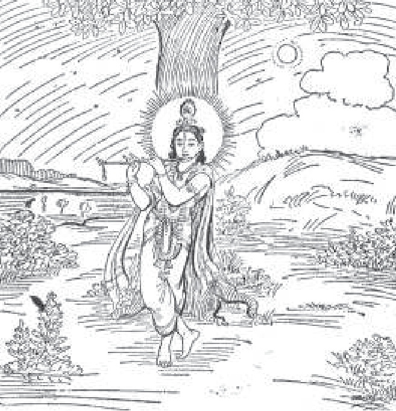
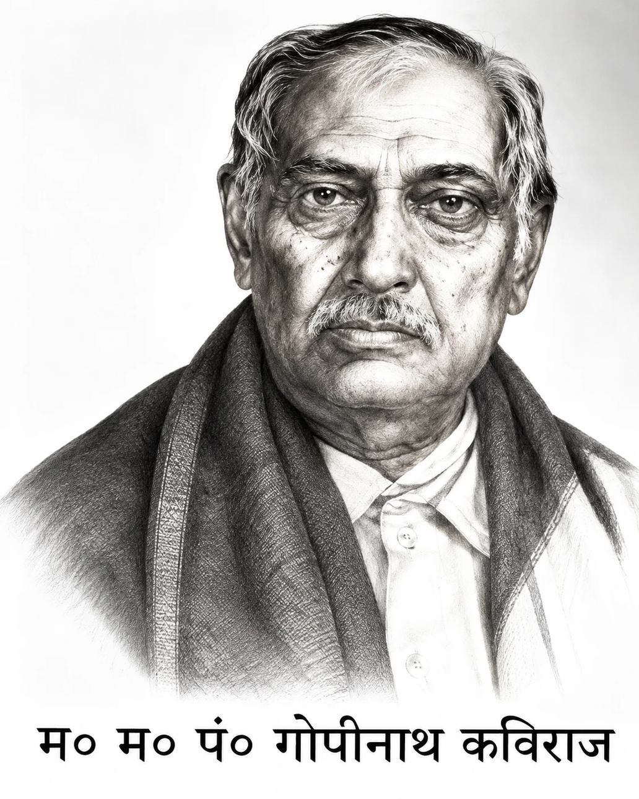

॥ श्रीहरिः ॥
भक्ति-रहस्य

लेखक— म०म०पं० गोपीनाथ कविराज
सम्पादक— हनुमानप्रसाद पोद्दार
गीतावाटिका प्रकाशन, गीतावाटिका - गोरखपुर के मूल ग्रंथ
— सरल एवं सुगम पठन के लिए नवीन प्रस्तुति।
॥ ॐ श्रीपरमात्मने नमः ॥
प्राक्कथन

‘कल्याण’ के प्रकाशनकालसे ही उस पत्रके साथ मेरा जो संयोग और पोद्दारजीके साथ जैसी आत्मीयता या सौहार्द्रय् स्थापित हुआ, वह आज तक अक्षुण्ण रूपसे विराजमान है । यह योग, हृदय का योग है । पोद्दारजी को सम्पादन-कार्यसे सम्बन्धित सर्वकर्ममें मेरा अनवरत सहयोग सहज ही उपलब्ध रहा है। उन्हीं के आग्रहसे मैंने इतने कालतक जो रचनाएँ की हैं, उनके मुख्य अंश ‘कल्याण’ के विभिन्न अंकोंमें यथासमय प्रकाशनार्थ अर्पित होते रहे हैं । आजसे ४० वर्ष पूर्व सं० १९८८ में ‘भगवत्-विग्रह’ नामक मेरा प्रथम लेख ‘कल्याण’ के श्रीकृष्णाङ्क’ में निकला था । उस समयसे लेकर आगे जब कभी भी ‘कल्याण’ का कोई विशेषांक निकालनेकी योजना बनी, तो पोद्दारजीने कभी स्वयं उपस्थित होकर और कभी लोकमाध्यमसे उसकी विषयसूची तैयार करानेमें सदा मेरे परामर्शका सत्कार किया। इस प्रकार श्रीकृष्णांक, ईश्वरांक, शिवांक, शक्ति-अंक, योगांक, संतांक, गो-अंक, साधनांक, वेदान्तांक, हिन्दू-संस्कृति-अंक, मानवता-अंक, परलोक एवं पुनर्जन्मांक प्रभृति प्रस्तुत हुए ।
‘कल्याण’ के विशेषांकमें मेरे निबन्ध अवश्य रहें, इस विषयमें पोद्दरजीका एकान्त आग्रह रहता था और अबतक है। काशी गोरखपुरसे दूरस्थ है। अतः इन्होंने मेरे सन्निकट एक ऐसे बंगभाषी सज्जनको नियुक्त कर रखा था, जो प्रतिदिन मेरे यहाँ आकर ‘कल्याण’ के लिये निबंध संग्रह करते थे। वे थे-मेरे अति परिचित दिवंगत सतीशचन्द्र गुह ठाकुरता । ये ‘डान सोसाइटी’ के संस्थापक साधक सतीशचन्द्र मुखोपाध्याय महाशय के विशेष स्त्रेहपात्र थे। गुह महोदय पहले मेरे सिगरा-स्थित घरके पास ही ‘छोटी-गैबी’ नामक मुहल्लेमें रहते थे । किन्तु बादमें मेरे घरमें ही रहने लगे थे । उन्हें किसी प्रकारकी आर्थिक असुविधा न भोगनी पड़े, इस हेतु पोद्दारजीने उनके लिये मासिक वृत्तिकी व्यवस्था कर दी थी। इससे ‘कल्याण’ के निमित्त सामग्री-संकलनका कार्य अनवरत निर्वाध रूपसे चलता रहता था।
विशेषांकके अतिरिक्त ‘कल्याण’ के अन्य साधारण अंकोंमें भी मेरे रचित अनेक निबन्ध प्रकाशित होते रहे हैं। आज यही ‘कल्याण’ पोद्दारजीके असामान्य कर्म एवं सेवाके प्रतीक रूपमें प्रतिष्ठित है। इसके द्वारा भारतीय साधना जगत्के अनेक रहस्य पाठकोंके समक्ष उपस्थित किये जा सके हैं। भविष्यमें जो लोग भारतीय साधनाके इतिहासके सम्बन्धमें अनुसंधान करेंगे, ‘कल्याण’ के विशेषांक उनके लिये निस्संदेह अक्षय ज्ञानराशिके कोष सिद्ध होंगे। भारतवर्षका पाठक-समाज पोद्दारजीके इस असामान्य ऋणसे कभी मुक्त नहीं हो सकता।
‘कल्याण’ जिस प्रकार हिन्दीमें धार्मिक विषयको नानाविध आलोचनासे समृद्ध है, उसी प्रकार ‘कल्याण-कल्पतरु’ नामक अंग्रेजी मासिक एक उत्कृष्ट धार्मिक पत्र है। मेरे छात्र श्रीचिम्मनलाल गोस्वामी द्वारा सम्पादित होकर यह गीताप्रेससे ही प्रकाशित होता है । इसके माध्यमसे प्राचीन भारतीय ज्ञान-विज्ञानको ज्योति विश्व तथा भारतके अहिन्दी-भाषी क्षेत्रोंमें विकीर्ण होती है ।
‘कल्याण’ के सम्बन्धमें मुझे एक बात स्मरण हो रही है । मेरे पूज्य गुरुदेव परमहंस विशुद्धानन्दजी महाराजने मुझसे इस पत्रकी कई बार भूरि-भूरि प्रशंसा को थी । वे कहते थे-- इस प्रकारको धार्मिक पत्रिकाके बहुत प्रचारसे मनुष्य जीवनको भावशुद्धि होती है और धर्मके प्रति उनका मन आकृष्ट होता है, जिससे अंतमें परमकल्याण सम्पादित होता है।”
पोद्दारजीकी कर्मशीलता मात्र साहित्य तथा संस्कृतिके ही क्षेत्रमें आबद्ध नहीं रही । ‘कल्याण’ के माध्यमसे ही वे लौकिक जीवनकी भीषण समस्याओं से पीड़ित मानवोंकी आर्तिनाशके लिये उपर्युक्त पथ-निर्देश करते हुए सतत प्रयत्नशील रहे हैं । इसके साथ ही साधन-जीवनकी जटिल समस्याओंका संकेत प्राप्त होनेपर ये उन्हें दूर करनेके मार्गका इंगित देकर असख्य साधकोंके आकुल हृदयोंको शान्ति प्रदान करते रहे हैं । ( संकलित--कल्याणपथ : निर्माता और राही पृष्ठ ११)
गोपीनाथ कविराज
३१ दिसम्बर, १९७०
२ ए, सिगरा
वाराणसी
॥ श्रीहरिः ॥
॥ ॐ श्रीपरमात्मने नमः ॥
प्रकाशकीय निवेदन
भारतीय आर्ष साहित्यका वास्तविक प्रयोजन है कि जनसाधारणको कर्तव्य और विवेकका अवलम्बन लेकर धर्मके मार्गपर अग्रसर करते हुए परिष्कृतजीवन जीनेके लिये तत्पर करना । कालके प्रवाहमें इसमें कुछ विकृतियोंका समावेश हो जाता है जिसका समाधान करनेके लिये समय-समय पर तत्त्वदर्शी मनीषी प्रभु-प्रेरणासे अवतरित होते हैं जो अपनी साधना, आचरण, व्यवहार व वाणीसे जनमानसको अनुप्राणित करते हैं । वे प्रचलित विडम्बनाओंका निराकरण करके जनसाधारणको यथार्थसे अवगत कराते हैं ताकि आर्ष-ग्रन्थोंका मूलभूत प्रयोजन बना रहे और उनकी उपयोगिता अक्षुण्ण रहे।
पं० गोपीनाथजी कविराज ऐसे ही महापुरुष थे। उन्होंने अपनी साधना-निष्ठाके बलपर अकल्पित उपलब्धियाँ प्राप्त कीं और समाजको बहुत कुछ दिया। उनके जीवनका लक्ष्य था--भारतीय संस्कृतिके लुप्तप्राय तत्त्वों भक्ति,योग विद्या और प्राचीन साधना जिसे लोग सन्देहको दृष्टिसे देखने लगे थे, का यथार्थ स्वरूप प्रस्तुत करना । उन्होंने भक्ति, योगविद्या और तन्त्रशास्त्रके कुछ गुह्य आयामोंका प्रस्तुतीकरण किया । भक्तियोग, तन्त्र, पुरातत्त्व, इतिहास आदिके क्षेत्रोंमें भारतीय संस्कृतिको उनकी सेवा चिरस्मरणीय है । श्रीकविराजजीके इस कार्यको प्रचारित-प्रसारित करनेमें ‘भाईजी’ श्रीहनुमानप्रसादजी पोद्दारका योगदान अविस्मरणीय है। इन दोनों महापुरुषोंमें परस्पर गूढ़-स्नेह-सम्बन्ध था । श्रीभाईजीने अपने वसीयतनामामें लिखा है--‘भारतके अद्वितीय विद्वान् श्रीगोपीनाथजी कविराजकी कृपा प्रीति तो उत्तरोत्तर बढ़ती गयी ।’ कल्याण’ के कार्यमें उनसे जो अमूल्य सहायता मिली तथा मिल रही है, वह बड़ी ही महत्त्वपूर्ण है।
दर इनका न्यूनाधिक रूपसे भगवानके विशेष कार्यसे सम्बन्ध है।”
प्रस्तुत पुस्तक महामहोपाध्याय पं० गोपीनाथजी कविराजके ‘कल्याण’ में प्रकाशित लेखोंका संग्रह है जिसे पुस्तकाकार करनेका उद्देश्य यह है कि श्रीकविराजजीके विचारोंसे वर्तमानकालके लोग परिचित हों और उससे लाभ उठायें । पाठकोंने इस पुस्तकका आदर किया तो और लेखोंके संग्रह प्रकाशित हो सकते हैं ।
प्रकाशक
॥ ॐ श्रीपरमात्मने नमः ॥
१. भक्ति रहस्य
वर्तमान युगमें भक्ति-साधन और उसकी उपयोगिताके विषयमें कुछ कहनेकी आवश्यकता है, ऐसा मैं नहीं समझता। प्रायः सभी विश्वास करते हैं तथा शास्त्र-वाक्य और महापुरुषोंके अनुभव इस विश्वासका समर्थन करते हैं कि दुर्बल मनुष्यके लिये भगवत्प्राप्तका, एकमात्र न होते हुए भी, प्रधान उपाय भक्ति-साधना है। परंतु सच पूछा जाय तो भक्ति-साधनाका रहस्य सबके लिये सुपरिचित नहीं है। रहस्य जाने बिना किसीको किसी तत्त्वका माहात्म्य हृदयङ्गम नहीं हो सकता। अतएव इस प्रबन्धमें भक्ति-तत्त्वके रहस्यके सम्बन्धमें अपने ज्ञान और अनुभवके अनुसार संक्षेपमें कुछ कहनेकी चेष्टा करूँगा।
साधनाके समस्त मार्गोको आलोचनाको सुविधाको दृष्टिसे तीन भागोंमें विभक्त किया जा सकता है। इसके एक-एक भाग साधनाको एक-एक स्थितिके द्योतक हैं। प्रथम भागका नाम प्रवर्तक-अवस्था, द्वितीय भागका नाम साधक-अवस्था और तृतीय भागका नाम सिद्धावस्था है । प्रवर्तक-अवस्थामें एकके बाद एक दो स्थितियोंका विकास स्वीकृत किया गया है। उसी प्रकार साधक-अवस्थामें भी दो क्रमिक स्थितियोंकी अभिव्यक्ति देखनेमें आती है। परंतु सिद्धावस्थामें इस प्रकारका कोई अवान्तर भेद नहीं पाया जाता। प्रवर्तक-अवस्थामें प्रथम साधना है नाम-साधन । नामको महिमा भारतवर्षकी भक्त-मण्डलीमें किसीको अविदित नहीं है। वाचक शब्द और वाच्य अर्थमें जिस प्रकार नित्य सम्बन्ध रहता है, उसी प्रकार नाम और नामीमें एक प्रकारका नित्य सम्बन्ध विद्यमान है। वृक्षके बीजके साथ जिस प्रकार वृक्षफलका सम्बन्ध है, उसी प्रकार भगवानके नामके साथ भगवत्स्वरूपका सम्बन्ध जानना चाहिये । भगवन्नाम प्राकृतिक वस्तु नहीं है, यह अप्राकृत वस्तु है और अचिन्त्य-शक्तिसम्पन्न है । भगवान् जिस प्रकार चिदानन्दमय हैं, उनका नाम भी उसी प्रकार चिदानन्दमय है। परंतु नाममें चिद् और आनन्दकी अभिव्यक्ति नहीं रहती, साधनाके प्रभावसे क्रमशः ये अभिव्यक्त होते हैं। परंतु वे उसमें पहलेसे ही अव्यक्तभावसे निहित रहते हैं। नाम अनन्त शक्तियोंका भंडार है। जाग्रत् महापुरुषके श्रीमुखसे निकले हुए नामकी तो बात ही क्या, साधारणतः उच्चारित नाममें भी निजशक्ति विद्यमान रहती है। नामदाताकी शक्तिके साथ योग होनेपर नामकी निजी शक्ति आवरणमुक्त होकर उज्ज्वल रूपमें फूट पड़ती है। वैसा न हो तो वह नाम यथार्थ नाम नहीं होता, नामाभासरूपमें ही प्रकटित होता है। नामकी महिमा अनन्त है; नामाभास भी व्यर्थ नहीं जाता, उसका भी सुफल होना अनिवार्य है। वस्तुतः भगवानका नाम अर्थात् जाग्रत् नाम कोई अपने बलसे कर्तृत्वाभिमानपूर्वक नहीं उच्चारण कर सकता। जिसके ऊपर नामकी कृपा होती है, नाम स्वयं ही उसके कण्ठको अवलम्बन करके ध्वनित हो उठता है। जो स्वतः चैतन्यमय है, उसके लिये बाह्य प्रेरणाकी आवश्यकता नहीं होती; परंतु नामाभासमें उच्चारणकर्ताका कर्तृत्वाभिमान रहता है। तथापि दीर्घकालतक विधिपूर्वक गुरूपदेश अथवा आन्तरिक शुद्ध प्रेरणाके अनुसार उच्चारण करते-करते नामाभास भी किसी-किसी भाग्यवान्के कण्ठमें नामरूपमें परिणत होकर अपने-आप ध्वनित हो उठता है।
दीर्घकालतक नियमितरूपसे नाम-साधना करते रहनेसे यथासमय भगवान्की करुणाका उद्रेक होता है, और वे पथप्रदर्शक गुरुके रूपमें नाम-साधक भक्तके सामने आविर्भूत होते हैं। नाम-साधनाके द्वारा चित्त-शुद्धि तथा देह-शुद्धि यथासम्भव अवश्य ही होती है; परंतु जबतक भक्त गुरुदत्त बीजको प्राप्तकर अपने अशुद्धबीज देहको शुद्ध कायामें परिणत नहीं कर पाता, तबतक वास्तविक साधनाका सूत्रपात नहीं हो सकता। यह कहनेकी आवश्यकता नहीं कि प्राकृत शरीरमें भगवत्साधना नहीं होती। प्राकृत शरीर जागतिक विकारके अधीन है, इसके द्वारा अप्राकृत और निर्विकार भगवत्तत्वकी साधना सम्भव नहीं है।
बीज-साधनाके फलस्वरूप क्रमशः बीजकी अभिव्यक्ति तथा उसके प्रभावसे मलिन सत्ताको दूर करना सम्भव हो जाता है। पाञ्चभौतिक उपादानोंका आश्रय लेकर उनसे अनुस्यूत जो हमारा अशुद्ध शरीर विद्यमान है, उसका जबतक संस्कार नहीं होता, तबतक उसके लिये प्रकृत साधनमार्गमें प्रविष्ट होना दुष्कर है। गुरुदत्त साधनाके फलस्वरूप भूत और चित्त शुद्ध अवस्था धारण करते हैं; अतएव पूर्वस्थित अशुद्ध शरीर विगलित हो जाता है और अपने-अपने भावके अनुसार एक अभिनव शरीरका आविर्भाव होता है। यह स्वभावका शरीर होता है, इसीका पारिभाषिक नाम है-‘भावदेह’। यह देह निर्मल, अजर और अमर होता है तथा क्षुधा-पिपासा, काम-क्रोध प्रभृति प्राकृतिक धर्मोसे वर्जित होता है। इस भावदेहको प्राप्तकर भक्त प्रवर्तक-अवस्थासे साधक-अवस्थामें उपनीत होता है। साधारणतः जगत्में जिसको साधना कहते हैं, वह प्रकृत साधना नहीं है। स्थूल देहमें अभिनिवेश या तादात्म्यबोधके रहते हुए कोई भी साधना क्यों न की जाय, वह अकृत्रिम स्वाभाविक साधनाके रूपमें परिगणित नहीं हो सकती। भावका साधन ही यथार्थ साधन है। अभावके शरीरमें भावकी साधना नहीं हो सकती। अतएव प्रवर्तक-अवस्थामें अभावके शरीरको भावके शरीरमें परिणत करनेकी चत करनी पड़ती है। नाम और मन्त्र-ये प्रारम्भिक चेष्टामें सहायक ।
जिन्होंने भक्तितत्वका अनुशीलन किया है, वे जानते हैं कि क्रियारूपा भक्ति क्रमशः फलरूपा भक्तिमें पर्यवसित होती है। प्रवर्तक-अवस्थामें जो कुछ किया जाता है, वह क्रियाभक्तिके ही अन्तर्गत है। कोई-कोई इसे साधन-भक्ति भी कहते हैं। परंतु वास्तविक साधन-भक्ति यह नहीं है, यह कृत्रिम साधन-भक्ति है; क्योंकि प्राकृत-देहाभिमानके रहते हुए प्रकृत साधन-भक्तिका उदय नहीं हो सकता। जिस नवधा भक्तिको बात भक्तलोग कहते हैं, तथा भक्त-सम्प्रदायमें जिसका साधन देखनेमें आता है, वह भी वस्तुतः प्रवर्तक-अवस्थाका ही व्यापार है। इन सभी अनुष्ठानोंके पीछे केवल देहात्मबोधमूलक कृत्रिम अहंभावकी क्रीडा विद्यमान रहती है। भाव कैसे उदित होता है, इसकी आलोचना करते समय आचार्योन कहा है कि भावका प्रथम आविर्भाव कर्म अथवा कृपासे लक्षित होता है। कर्मसे अर्थात् कृत्रिम साधन-भक्तिका अनुष्ठान करते-करते साधन-भक्ति भावभक्तिके रूपमें परिणत हो सकती है। परंतु कहीं-कहीं पूर्ववर्ती साधनके लक्षित न होनेपर भी भावभक्तिका उदय होते देखा जाता है, ऐसे स्थलमें कृपाको ही मूल कारण मानना पड़ता है। यह कृपा साक्षात् भगवान्को भी हो सकती है अथवा सिद्ध भगवद्धक्तकी भी। कुछ लोगोंकी यह भी धारणा है कि भक्तिके कार्य-कारणभावका विचार करनेपर कृत्रिम भक्ति-साधनाको कहीं भी भक्तिका वास्तविक कारण नहीं माना जा सकता। वह क्षेत्र-विशेषमें भक्तिको यथार्थ कारणरूपा भगवत्कृपा अथवा भगवद्धक्तकी कृपाकी अभिव्यञ्जिका है, इसलिये उसका कारणरूपमें ग्रहण होता है।
भक्ति ह्लादिनी शक्तिको एक विशेष वृत्ति है। ह्लादिनी शक्ति महाभावस्वरूपा है। अतएव शुद्ध भक्ति स्वरूपतः महाभावका अंश है, इसमें कोई संदेह नहीं। अतएव भावरूपा भक्ति चाहे साधनपूर्वक हो अथवा कृपापूर्वक, वह वस्तुतः महाभावसे ही स्फुरित होती है। अतएव कृत्रिम साधन-भक्तिकी प्रयोजनीयता स्वीकार करनेपर भी, भावके उदयको सभी साधनद्वारा दुष्प्राप्य मानते हैं। कृत्रिम साधनाके मूलमें जीव रहता है; परंतु भक्ति जीवका स्वभावसिद्ध धर्म नहीं है, क्योंकि महाभाव अथवा भाव ह्लादिनी शक्तिकी वृत्ति होनेके कारण स्वरूपशक्तिके विलास तथा भगवत्स्वरूपके साथ संश्रिष्ट है। जीव कर्म कर सकता है, परंतु भावको प्राप्त नहीं कर सकता; क्योंकि वह स्वरूपतः भावमय नहीं । कर्म करते-करते भाव-जगत्से उसमें भावका अनुप्रवेश हुआ करता ।
इस प्रकार भावका उदय भावजगत्की प्रेरणासे होता है। मायिक शरीर भावग्रहणके लिये उपयोगी नहीं होता; अतएव इस देहमें भावका आविर्भाव नहीं होता। भावका आविर्भाव होता है भाव धारण करनेयोग्य आधारमें। यह आधार शुद्ध देह या भावदेहके नामसे परिचित है। अशुद्ध देह साधनाके प्रभावसे शुद्ध होकर अन्तमें भावदेहके रूपमें प्रकट होता है। पाञ्चभौतिक प्राकृत देहका अवलम्बनकर यदि भावका विकास हो तो भावदेह मिश्ररूपसे अवस्थित हो सकता है। इस अवस्थामें वह अपने पृथक् स्वरूपमें कार्य करता रहता है। अथवा भावके विकासके साथ-साथ प्राकृत देहका त्याग होनेपर, विशुद्ध भावदेह भावजगतमें विराजित होता है और वहाँ कार्य करता रहता है। भावके उदयके पूर्व यदि मृत्यु हो, अर्थात् कृत्रिम साधनभक्तिके अनुशीलनके समय बीचमें ही देहत्याग हो जाय तो भावजगत्में गति प्राप्त नहीं होती। जब भावका उदय होता है, तब समझना चाहिये कि भावदेह कार्य कर रहा है। भावदेहके कार्य करते समय प्राकृत देह जडवत् स्थिर तथा निःसाररूपमें पड़ा रहता है। भावकी तीव्रतामें यह अवश्य ही समझमें आ जाता है। यदि भाव उतना तीव्र न हो तो प्राकृत देहमें उसका उतना प्रभाव देखनेमें नहीं आता। परंतु वस्तुतः वह स्वरूपमें ठीक-ठीक कार्य करता रहता है, इसमें सन्देह नहीं।
भावदेह प्राकृतदेहके साथ योगयुक्त होनेपर भी प्राकृत देहके अनुरूप नहीं होता। प्राकृत देहमें जिस समय कृत्रिम साधना होती रहती है, उस समय भावका विकास नहीं होता। अतएव इस अवस्थामें बाह्य शास्त्र-वाक्य, बाह्य गुरुवाक्य तथा तदनुसार महापुरुषोंके वचन और तन्मूलक विधि-निषेध प्रभृतिको मानकर चलना पड़ता है। परंतु स्वभावका विकास होनेपर बाहरसे किसी प्रकारकी शिक्षा ग्रहण करनेकी आवश्यकता नहीं रहती। जिसका जो स्वभाव होता है, वह उसके अनुसार ही चलता है। उस समय स्वभाव ही प्रेरक होता है। उस समय स्वभाव ही गुरु, स्वभाव ही शास्त्र तथा स्वभावका निर्देश ही विधि-निषेध होता है। बाहरसे कोई नियन्त्रण करनेवाला नहीं रहता। गम्भीर आन्तर राज्यको नीरवतामें बाह्य जगत्की किसी भी वस्तुका कोई स्थान नहीं होता। तथापि वहाँ भी कोई शक्ति अन्तर्यामीरूपसे भीतर रहकर भक्तको परिचालित करती है। इसीको स्वभाव कहते ।
भावदेह बाह्य देहके अनुरूप नहीं होता। ऐसा भी हो सकता है कि बाहरसे जो वृद्ध दीख पढ़ते हैं, जिनके केश पक गये हैं, दाँत गिर गये हैं और दृष्टि क्षीण हो गयी है, वे अपने भावदेहमें ठीक इसके विपरीत हों। हो सकता है कि उनका भावदेह उज्वल, ज्योतिर्मय, किशोरवयस्क, सर्वाङ्गसुन्दर और माधुर्यमय हो। बाह्यदेहके साथ भावदेहका कोई योग नहीं होता। अवश्य ही यह प्रथमावस्थाकी बात कही गयी है। आगे चलकर योग प्रतिष्ठित हो सकता है। यह स्वतन्त्र विषय है। भक्त शुद्ध वात्सल्यभावका साधक हो, अथवा सख्य, दास्य या उज्ज्वल भावका, उसका भावदेह तदनुरूप ही होगा। स्वभावसिद्ध देहके स्वभावका आश्रय लेकर स्वभावकी साधना चलती है। यदि कोई मातृभावका साधक हो तो स्पष्ट ही देखनेमें आयेगा कि उसका भावदेह ठीक शिशुके आकारका हो जाता है। आकृति और प्रकृति परस्पर अनुरूप ही हुआ करती हैं। जो प्रकृतितः अर्थात् स्वभावतः शिशु हैं, और इस शिशुभावसे ही ‘मा-मा’ कहकर पुकारते हैं, वे आकृतिसे भी शिशु क्यों नहीं होंगे? उनका बाह्य शरीर जरा-जीर्ण होनेपर भी उनका भावदेह शिशु ही रहता है, इसमें सन्देह ही क्या हो सकता है। शिशुको जिस प्रकार शिक्षा दी जाती है कि वह किस प्रकार माको पुकारे अथवा माके साथ व्यवहार करे-वह अपने स्वभावके द्वारा ही नियमित होता है, ठीक उसी प्रकार जो भक्त भावदेहमें शिशु है, उसे मातृभक्ति सिखानी नहीं पड़ती। वह स्वभावकी सन्तान है, स्वभाव ही उसे परिचालित करता है। वह अपने-आप जो करेगा, वही उसका भजन है। रागात्मिका भक्तिमें बाह्य शास्त्र या बाह्य नियमावलीको आवश्यकता नहीं होती।
जगत्में अनन्त भाव विराजित हैं। महाभावके एक होनेपर भी खण्डभाव असंख्य हैं । प्रत्येक भावकी विशेषता है, और उसकी एक सार्थकता होती है। एक भावके साथ दूसरे भावको शबलता अथवा सांकर्य भावसाधकके लिये निषिद्ध है। स्वभावके मार्गसे इसके होनेकी संभावना नहीं रहती। परंतु जो लोग कृत्रिम भावकी भावनाके द्वारा भावसाधनाके मार्गमें अग्रसर होते हैं, उनसे भूल या भ्रान्तिका होना अनिवार्य है। वस्तुतः यह अकृत्रिम साधनाका कृत्रिम अभिनयमात्र है। एक वृक्षके हजारों पत्तोंमें जिस प्रकार साम्यके होते हुए भी प्रत्येक पत्तेमें एक विशेषता रहती है, उसी प्रकार प्रत्येक भावमें भी एक विशेषता होती है। भावको मर्यादा दिये बिना भावसाधनामें कोई अग्रसर नहीं हो सकता। बाल्य, यौवन, वार्द्ध्य जिस प्रकार पृथक्-पृथक् होते हैं तथा उनका आचरण और तन्मूलक व्यक्ति आदि भी पृथक्-पृथक् होते हैं, उसी प्रकार प्रत्येक भावके अङ्गोपाङ्ग और विलास भी पृथक्-पृथक् होते हैं। अतएव भावके प्रति बाहरसे कोई निर्देश नहीं दिया जा सकता। भावसाधकके लिये गुरु-आज्ञाकी आवश्यकता नहीं । उसके अन्तःस्थित भावको प्रेरणा ही उसको परिचालित करनेके लिये पर्याप्त होती है।
एक भावके साथ दूसरे भावका व्यक्तिगत भेद तो है ही, इसके सिवा उनमें गुणगत तथा मात्रागत भेद भी रहते हैं।
भावका विकास ही प्रेम है। भावसाधना करते-करते स्वभावतः ही प्रेमका आविर्भाव हो जाता है। जबतक प्रेम उदय नहीं होता, तबतक भगवानका अपरोक्ष दर्शन नहीं हो सकता; भावके उदयके साथ-साथ आश्रयतत्त्वकी अभिव्यक्ति होती है। परंतु जबतक प्रेमका उदय नहीं होता, तबतक विषयतत्त्वका आविर्भाव नहीं हो सकता। यद्यपि भाव अथवा प्रेम एक ही वस्तु है, तथापि अपक्क और पक्कभेदसे दोनों अवस्थाओंमें कुछ पार्थक्य है। भावजगतमें प्रवेशके साथ-साथ भक्त अपनेको अर्थात् अपने विशिष्ट स्वरूपको प्राप्त होता है। उसके पश्चात् साधनाका और अधिक विकास होनेपर भक्तिका विषयभूत भगवत्-स्वरूप प्रत्यक्ष दृष्टिगोचर होता है। भाव जिस प्रकार अनन्त है, उसी प्रकार भगवत्स्वरूप भी अनन्त है; तथा प्रत्येक भावके साथ जिस प्रकार भक्तका अपना स्वरूप संशिष्ट रहता है, उसी प्रकार उसके अनुरूप भगवत्-स्वरूप भी सम्बद्ध रहता है। जबतक प्रेमको अभिव्यक्ति नहीं होती, इष्ट-स्वरूपका आविर्भाव नहीं होता।
बात यह है कि प्रवर्तक-अवस्थामें दो आवरण अभिन्न रूपमें विद्यमान रहते हैं। इन दोनों आवरणोंमेंसे एक तो प्रमाताके निजी स्वरूपको आच्छन्न किये रहता है और दूसरा प्रमेयके स्वरूपको आच्छन्न करता है। प्रवर्तक-अवस्थाके अन्तमें भावदेहके विकासके साथ-साथ प्रथम आवरण कट जाता है, परंतु दूसरा आवरण तब भी रहता है। अर्थात् भक्त अपने भावदेहमें जाग उठनेपर ही इष्ट वस्तुको नहीं प्राप्त होता। जबतक भावका विकास नहीं होता, तबतक पूर्वोक्त प्रमेयका आवरण उन्मुक्त नहीं होता। भावके विकाससे ही अनुसन्धान और अन्वेषण आरम्भ होता है तथा प्रमेयका आवरण कट जानेपर अन्वेषण भी समाप्त हो जाता है, क्योंकि तब प्राप्ति हो जाती है। यही प्रेमको अवस्था है। भावमें प्रवेशके साथ-साथ अभावके जगत्से ज्योतिर्मय भावजगतमें प्रविष्ट होनेपर अपना एक विशिष्ट स्थान प्राप्त हो जाता है। तब उसी स्थानसे इष्ट वस्तुका अन्वेषण चलने लगता है। इस प्रकार अन्तर्जगत्में क्रमशः अधिकतर गुह्य स्थान प्राप्त होते-होते चरम अवस्थामें अन्तरतम बिन्दुमें प्रवेश होता है। तब इष्टका स्वरूप उन्मुक्त हो जाता है और भक्तको भगवत्-साक्षात्कार सिद्ध होता है। अन्तर्जगत्में प्रवेशके पश्चात् जगत्के अन्तिम बिन्दुतक अनवच्छिन्न भावसे अग्रसर होना पड़ता है। इसीका नाम है साधनाका क्रम-विकास। आवर्त्तक्रममें वृत्तके मध्यबिन्दुमें स्थिति प्राप्त करनेपर बहिर्जगत् और अन्तर्जगत्का भेद दूर हो जाता है। तब साधनाकी परिसमासि हो जाती है। इसीका नाम रसका उदय है। इसको भक्त महाजनोंने सिद्धावस्थाके नामसे निर्देश किया है।
अबतक जो कुछ कहा गया है, उससे धामतत्त्वका स्वरूप कुछ-कुछ समझा जा सकता है। भावके विकासके पहले धामतत्त्व अभिव्यक्त नहीं हो सकता। जबतक कायाका विकास नहीं होता, तबतक उस कायाकी स्थिति और क्रियाके लिये उपयोगी धामका आविर्भाव कैसे होगा? भाव-विरहित भक्त बहिरङ्ग होनेके कारण धामके बाहर रहनेके लिये बाध्य होता है। इसीसे प्रवर्तक-अवस्थामें धाममें प्रवेश प्राप्त नहीं होता। धाममें प्रवेश करनेके लिये शुद्ध भावदेह आवश्यक होता है। अभावका देह अर्थात् मायिक देह अथवा अज्ञानमय देह भगवद्धाममें प्रविष्ट होनेका अधिकार नहीं पाता। जबतक इस देहका त्याग करके शुद्ध देह ग्रहण नहीं किया जाता, तबतक धाममें प्रवेश नहीं किया जा सकता। मायिक देहका त्याग होनेपर ही धाममें प्रवेश हो जायेगा, ऐसी बात नहीं; क्योंकि ऐसी अवस्था भी है, जब मायिक देह निवृत्त हो जाता है, फिर भी विशुद्ध भावदेहकी प्राप्ति नहीं होती। यह कैवल्यको अवस्था है। इस अवस्थामें भगवद्धाममें प्रवेशकी सम्भावना नहीं होती, क्योंकि यह विदेहकी स्थिति है। भक्तलोग इसे कैवल्यके नामसे निर्देश करते हैं। केवली जीव भगवद्धामके बाहर विशाल प्रान्तरमें सुप्तवत् विद्यमान रहता है। यह मायातीत अवस्था होते हुए भी वस्तुतः पाशविक अवस्था है। इस अवस्थामें भगवद्धाममें प्रवेशका अधिकार नहीं मिलता। एकमात्र भगवदनुगृहीत जीव ही धाममें प्रवेश कर सकते हैं, दूसरे नहीं ।
भगवद्धाम एक होनेपर भी भावके अनुसार अनन्त हैं। कुण्ठाहीन होनेके कारण वैष्णवलोग इस धामको व्यापी वैकुण्ठ कहते हैं। यह विशुद्ध सत्त्वमय है। अतः प्राकृतिक रजस्, तमस् तथा मलिन सत्त्व इस स्थानमें कार्य नहीं कर सकते। जिस कालके प्रभावसे प्राकृतिक जगत्की सृष्टि, स्थिति, संहार और नाना प्रकारके परिणाम संघटित होते हैं, वह काल भगवढद्धाममें कार्य नहीं कर सकता। उस स्थानमें भी एक प्रकारका काल होता है। वह कालातीत काल है। वह भगवानका लीला-सहचर है और वह भगवदिच्छाका अनुवर्ती होकर कार्य करता रहता है। ज्योतिर्मय विशुद्ध सत्त्व भगवद्धामका उपादान है। उस धाममें लीलाकी उपकरणभूत अनन्त वस्तुएँ-भोग्य, भक्त और भगवानके लीलाविग्रह, सभी विशुद्ध सत्त्वसे रचित होते हैं; यही आगम-शास्त्रों के विन्दुका स्वरूप है तथा इस धामका नाम है-‘वैन्दव जगत्।’ विशुद्ध सत्त्व मायासे सर्वाशमें विलक्षण है। अर्थात् माया अशुद्ध है और यह शुद्ध है। अतएव माया अनादि और सान्त है, परंतु विशुद्ध सत्त्व सादि और अनन्त है। भगवद्धाम और भगवद्विग्रह तथा भक्तका निजी विग्रह सभी अन्तहीन हैं।
भाव स्थायी और सञ्चारी भेदसे दो प्रकारका होता है, यह पहले कहा जा चुका है। सञ्चारी भाव आविर्भूत होकर कार्य करके तिरोहित हो जाता है। परंतु स्थायी भाव तिरोहित नहीं होता। वस्तुतः यही स्वभाव है। सञ्चारी भावसे रसास्वादन नहीं हो सकता; परंतु स्थायी भावसे रसास्वादनकी सम्भावना होती है। सञ्चारी भाव भाव-देह प्राप्त करनेके पहले भी जीव हृदयमें कार्य करता रहता है; परंतु वह बीजशक्तिसम्पन्न नहीं होता, अतएव उससे फलोद्मको सम्भावना नहीं होती। वास्तविक भक्त वही है, जो भावकी सञ्चारी अवस्थासे स्थायी अवस्थामें पहुँच सकता है। इसके लिये भक्तलोग नाम और मन्त्रसाधनाकी उपयोगिता स्वीकार करते हैं। स्थायी भाव वस्तुतः भावदेहका ही नामान्तर है। भावके विकासके साथ-साथ हृदयमें प्रवेश प्राप्त होता है। यह अन्तरङ्ग हृदयकमल अष्टदलोंसे विभूषित है, इसलिये स्थायी भाव भी मूल अष्टभावोंमें विवर्तित होकर प्रकाशित होते हैं। इस अष्टदल (यह गुप्त कमल है। षट्चक्रके अन्तर्गत जो द्वादशदलरूपी हृदयकमल है, उससे यह पृथक् है; क्योंकि द्वादशदलका भेद करनेके बहुत पीछे आज्ञाचक्रका भेद करनेपर अन्तर्लक्ष्यकी प्राप्ति होती है। परंतु जबतक लक्ष्योनिमेष नहीं होता, अष्टदलमें प्रवेश प्राप्त नहीं होता। इसी कारण मध्ययुगके बहुतेरे संत अष्टदलको एक प्रकारसे सहस्रदलके साथ अभिन्न समझते थे, तथा कोई-कोई इसको सहस्रदलके अन्तर्गत मानते थे। वस्तुतः इस अष्टदलको यदि भावराज्य मान लें तो प्रचलित द्वादशदलको भावकी आभास समझा जा सकता है। इससे ज्ञानके बाद भक्ति होती है या भक्तिके बाद ज्ञान होता है—इस प्रश्नका समाधान हो जायगा। द्वादशदलके बाद लक्ष्यका उन्मेष होता है, यह प्रचलित सिद्धान्त है। इस मतसे भक्तिके बाद ज्ञानका उदय होता है। परंतु वस्तुतः लक्ष्य-उन्मेषके बाद जिस भाग्यवान् भक्तको अष्टदलकी प्राप्ति होती है, उसकी दृष्टिमें ज्ञानके बाद ही भक्तिका स्थान है—यह स्वीकार करना ही होगा। भक्तिके दो भेद हैं—अपरा और परा, भक्ति, अथवा साधन और साध्यभक्ति। इसे समझ लेनेपर उपर्युक्त विरोधका समन्वय सहज-साध्य हो जायगा।)
कमलका एक-एक दल एक-एक भावका स्वरूप है। भावमें प्रविष्ट होकर उसे महाभावमें परिणत करना पड़ता है। यही भावसाधनाका रहस्य है। वस्तुतः महाभाव ही भावसाधनाका लक्ष्य है; परंतु महाभावमें पहुँचनेके लिये, भाव कुछ मध्यवर्ती अवस्थामें होते हुए प्रस्फुटित होता जाता है। इसकी आलोचना क्रमशः की जायगी। जिन आठ अङ्गरूपी भावोंकी बात कही गयी है, आलङ्कारिक लोग उनका अपनी-अपनी परिभाषाके अनुसार नामकरण करते हैं; परंतु भावका साधक अपनी दृष्टिभूमिसे उनको प्राप्त हो सकता है, उसके लिये दूसरोंकी दृष्टिभूमिका अवलम्बन करना आवश्यक नहीं होता। वास्तवमें तो प्रत्येक भक्तको इन आठों भावोंको एक-एक करके जगाना पड़ता है, नहीं तो जिस किसी भावको उसके चरम विकासको अवस्थापर्यन्त अभिव्यक्त (स्फुटित) नहीं किया जा सकता। कमलके विकासके लिये जिस प्रकार एक ओर जलपूर्ण सरोवर और उसके साथ पृथ्वीकी आवश्यकता होती है, उसी प्रकार दूसरी ओर ज्योतिर्युक्त तेजोमण्डल तथा उसके साथ आकाश भी आवश्यक होता है। नीचे रस और ऊपर रविकिरण इन दोनोंका एक साथ संयोग होनेपर कमल स्फुटित होता है, अन्यथा स्फुटित नहीं हो सकता। भावके ज्ञानस्वरूप चिदाकाशमें स्थित सूर्यमण्डल आवश्यक होता है, और दूसरी ओर रसोट्रमका मूल कारण स्थायी भाव आवश्यक होता है; क्योंकि सञ्चारी भावका विकास नहीं होता, स्थायी भावका ही विकास होता है।
भावके विकासके पहले तदुपयोगी क्षेत्र निर्माण होता है। नाम-साधनाके बाद तथा मन्त्रसाधनाकी समाप्तिके पहले धीरे-धीरे यह क्षेत्र तैयार होता रहता है। तैयार होनेके समय यह लक्षित नहीं होता; परंतु पीछे दृष्टिके उन्मेषके साथ-साथ यह दिखलायी देने लगता है। तब यह समझमें आ जाता है कि कब और किस ढंगसे उसकी रचना हुई है। यह क्षेत्र ही वस्तुतः एक कुण्ड या सरोवर है, परंतु इसमें सन्देह नहीं कि यह जलहीन सरोवर है। जबतक लक्ष्योन्मेष नहीं होता, तबतक खेचरीभाण्ड अथवा अमृतभाण्इसे अमृत-क्षरण नहीं होता। लक्ष्योन्मेषके साथ-साथ अमृत-क्षरण प्रारम्भ हो जाता है। तब पूर्वोक्त शुद्ध कुण्ड सलिलपूर्ण सरोवरके रूपमें शोभायमान होता है। किसी-किसी रहस्यविद् भक्तने इसको काम-सरोवरके रूपमें वर्णन किया है, ‘काम’ से यहाँ अभिप्राय शुद्ध प्रेमसे है। परंतु वस्तुतः वह तब भी प्रेमरूपमें परिणत नहीं होता। उपर्युक्त लक्ष्योन्मेष भी कामसूर्यका ही उदय है। कामकला-तत्त्वके जाननेवाले इसे विशेषरूपसे जानते हैं। भाव-सरोवरमें पहले भाव कलिकाके रूपमें प्रकट होता है। पश्चात् सूर्यको किरणें उसे प्रेमकमलके रूपमें विकसित कर देती हैं। जब भावका विकास होता है अर्थात् कमल प्रस्फुटित हो जाता है, तब वह सरोवरसे ऊपर उठ आता है; वह फिर सरोवरमें नहीं रहता। एक नाल अथवा मृणालके द्वारा सरोवरके साथ उसका केवल सम्बन्ध रह जाता है। यह नाल भी जब छिन्न हो जाता है, तभी वस्तुतः भावमें प्रवेश प्राप्त होता है। अबतक जो हुआ था, वह सब आभासमात्र था। अन्तर्जगत्में प्रवेशके पश्चात् आभासके त्यागके साथ-साथ सत्यरूपमें अष्टदलकी प्राप्त होती है। इस अष्टदलकी रचना अति अद्भुत होती है। अष्टदलकी कर्णिकाके रूपमें जो बिन्दु है, वही अष्टदलका सार है। उसीका दूसरा नाम है ‘महाभाव’ । वस्तुतः अष्टदल महाभावका ही अष्टधा विभक्त स्वरूपमात्र है; इसे महाभावका कायव्यूह भी कहा जा सकता है। प्रश्न हो सकता है कि महाभाव यदि विन्दु है, तो इन आठ भावोंके साथ उसका क्या सम्बन्ध होगा? इसका उत्तर यह है कि ये आठ भाव महाभावके स्वगत आठ अङ्गमात्र हैं। इन आठ अवयवोंकी समष्टि महाभावका स्वरूप है। प्रत्येक भाव महाभावके साथ संश्रिष्ट है। वस्तुतः प्रत्येक भावका जो पूर्ण विकास है वही महाभाव है। भावसे महाभावकी ओर जानेके दो प्रधान मार्ग हैं। एक आवर्त-क्रमसे और दूसरा साक्षात् तथा सरल रूपसे। आवर्तमार्गका अवलम्बन करते समय प्रदक्षिण अथवा परिक्रमा करके भावसे भावान्तरमें चलते-चलते क्रमशः महाभावमें पहुँचा जाता है। इस मार्गसे महाभावमें उपस्थित होनेपर महाभावका पूर्ण स्वरूप प्राप्त होता है; परंतु आवर्तमार्गसे न जाकर सरल गुप्त मार्गसे भी महाभावमें पहुँचा जाता है। लेकिन इस मार्गसे महाभावका पूर्ण स्वरूप अधिगत नहीं होता। क्योंकि इस मार्गसे विन्दुके साथ केवल उस विशिष्ट दलका ही सम्बन्ध होता है, अन्य दलका सम्बन्ध नहीं प्रतीत होता।
इस बातको और भी स्पष्ट करके बतलाना है। माता और उसकी आठ सन्तान विद्यमान हैं। माता प्रत्येक सन्तानकी जननी है। अतएव उसका सम्बन्ध आठोंमेंसे प्रत्येकके साथ समानरूपसे है। अतः यह सत्य है कि वह एक है, तथापि उसकी आठ सन्तान हैं। इस प्रकार उनका स्नेह-प्यार आदि प्रत्येक सन्तानके लिये ही प्राप्य होनेके कारण आठ भागोंमें विभक्त हो जाता है। दूसरी ओरसे, सन्तानके लिये एक माताके सिवा दूसरा कोई नहीं है। माता जानती है कि उसको आठ सन्तान हैं, और प्रत्येक सन्तान जानती है कि उसकी एक ही माता है। सन्तान यदि अपनको आठ भाइयोंमेंसे एक मानकर माताको प्राप्त करनेकी इच्छा करता है तो वह सम्पूर्ण माताको प्राप्त न करके उसके एकदेशको ही प्राप्त करेगा। क्योंकि सम्पूर्ण माताको ग्रहण करनेकी सामर्थ्य उसमें नहीं है; कारण कि वह अपनेको आठ सन्तानोंमेंसे एक समझता है। यहाँ सम्पूर्ण माताको प्राप्त करनेके लिये उसे आठमेंसे एक न बनकर आठोंके समष्टिरूपमें एक बनना होगा। यह क्रमविकासका मार्ग है, अर्थात् उसकी अगली सन्तानके भावमें तथा उसके आगे उससे अगली सन्तानके भावमें और इस प्रकार क्रमशः भावान्तरमें प्रवेश करते-करते अष्टम सन्तानके भावमें अपनेको प्रस्फुटित कर डालना होगा। तब वह आठ सन्तानोंके समष्टिभूत तथा अष्ट भावोंके प्रतिनिधिरूपमें मध्य विन्दुसे महाभावरूपिणी माताके पास पहुँचनेका अधिकार प्राप्त करेगा। इस प्रकार आधार पूर्ण होनेपर वह पूर्णरूपसे माताको प्राप्त हो सकेगा। यह हुआ एक मार्ग। दूसरी दृष्टिसे यदि सन्तान अपनेको माताको आठ सन्तानोंमेंसे एक न समझकर केवल अपनेको ही माताकी एकमात्र सन्तान माने तो वह पूर्वोक्त आवर्तमार्गमें पूर्णता प्राप्त नहीं करेगा; उसके लिये तो सरल मार्ग है और वह गुप्त है, इसे चाहे तो योगमायाका मार्ग कह सकते हैं। अर्थात् वह साक्षात्रूपसे अपने स्थानसे ही सरल मार्गद्वारा माताको प्राप्त हो सकता है। उसे विभिन्न सन्तानोंके भावको ग्रहण करके पूर्णताकी प्राप्ति नहीं करनी पड़ेगी। वह जहाँ अवस्थित है, वहींसे माताका दर्शन कर सकता है और माताको प्राप्त हो सकता है। इस मार्गमें उसको बाधा देनेवाला कोई नहीं है, कोई भी प्रतिबन्धक नहीं है। वह जानता है कि एकमात्र मैं ही माताकी सन्तान हूँ। और माता भी जानती है कि वही एकमात्र मेरी सन्तान है। अतएव इस क्षेत्रमें वह माताके पूर्ण स्नेह और प्यारका दावा करता है, और उसे प्राप्त भी कर लेता है। माताके इस स्नेह और प्यारमें उसकी अन्य सन्तानका भाग नहीं होता। अन्य सन्तान इस बातको नहीं जानती और जान भी नहीं सकती। योगमायाके आच्छादनमें माता और सन्तानका यह विचित्र सम्बन्ध और आनुषङ्गिक लीला प्रकाशित होती है। प्रत्येक सन्तानके लिये यह व्यवस्था एक ही प्रकारकी होती है। परंतु इसका विकास होनेमें समय लगता है। यहाँ माताको पूर्णरूपसे व्यक्तिगत भावसे प्राप्त होनेपर भी उसे सर्वसन्तानकी जननीके रूपमें राम्टिभावसे पाना नहीं बनता। लीला आस्वादनकी यह भी एक दिशा ।
इसमें और भी अनेक रहस्य हैं। प्रथम दृष्टान्तमें जो सन्तानके विषयमें उल्लेख किया गया है, उसकी आवर्तगतिके मूलमें आत्मलोप-अवस्था रहती है, अर्थात् प्रथम अवस्थामें जानेके साथ-साथ प्रथम अवस्था द्वितीय अवस्थामें परिणत हो जाती है, यह जाननेकी बात है। इस प्रकार आवर्तन पूर्ण होनेपर आगे-आगे परिणतिको प्राप्त होते-होते प्रथम अवस्था ही अष्टम अवस्थामें परिणत हो जाती है, यह जान लेना चाहिये। तब उस अष्टम अवस्थामें पूर्ण विकास प्राप्त हो जानेके पश्चात् माताको पूर्णरूपमें प्राप्त किया जाता है। परंतु इसके सिवा समष्टि-प्राप्तिकी एक और भी प्रणाली है; यह आत्मविकास है, आत्मलोप नहीं । उसके फलस्वरूप प्रथम अवस्थामें ही द्वितीय अवस्था आकर लीन हो जाती है, और उसके बाद आत्मविकासके साथ-साथ सारी अवस्थाएँ उसीमें लीन हो जाती हैं। इस प्रकार अष्टम सन्तानके भावके लीन हो जानेके बाद जिस अवस्थाको अभिव्यक्ति होती है, वही इस मार्गमें समष्टि सन्तानभावकी पूर्ण अभिव्यक्ति है। इसके पश्चात् माताको प्राप्ति भी तदनुरूप ही होती है। वस्तुतः समष्टि-मार्गके समन्वयके द्वारा ही प्रकृत समष्टि-पथकी प्राप्ति होती है।
इसी प्रकार व्यष्टिभावकी प्राप्ति भी समझनी चाहिये; क्योंकि व्यष्टिभावमें भी स्वयं माताके आकर्षणसे आकृष्ट होकर माताके समीप जाना तथा अपने आकर्षणसे माताका आकृष्ट होकर जाना और सन्तानको गोदमें लेना-ये दो विभिन्न दिशाएँ रहती हैं। व्यष्टिभावमें भी प्रकृष्ट पथ इन दोनों भावोंके समन्वयके ऊपर प्रतिष्ठित है।
इससे यह समझा जा सकता है कि कोई भी व्यक्ति परवर्ती सारी विकासभूमिका--चाहे वह अनुलोम-क्रमसे हो या प्रतिलोम-क्रमसे-अनुभव न करके भी अपने व्यक्तिगत स्थानसे ही महाभावके साथ युक्त हो सकता है। अथवा महाभावको अपने साथ युक्त कर सकता है। लीलाके आस्वादनकी दिशासे व्यक्तिगत दिशाका यह एक वैशिष्टय है, इसे मानना पड़ेगा। मूलतः व्यक्तिका व्यक्तित्व यदि स्वीकृत हो तो कोई व्यक्ति अन्य व्यक्तिके स्थानपर अधिकार नहीं कर सकता; क्योंकि एक व्यक्तिमें जो वैशिष्ट्य होता है, वह दूसरेमें नहीं हो सकता। अतएव क्रमविकासके मार्गसे जानेपर वह व्यक्तिके व्यक्तित्वका मार्ग नहीं होगा--यह कहनेकी आवश्यकता नहीं । इस स्थलमें व्यक्तित्वको रक्षा करके ही क्रमविकास मानना होगा। अर्थात् प्रत्येक व्यक्ति, अपने स्वभावमें विद्यमान रहते हुए भी, समष्टिमें आत्मप्रसार कर सकता है। इस प्रकार समष्टिके साथ अथवा उसके एक-देशके साथ उसको तादात्म्यको प्राप्ति भी हो सकती है; परंतु फिर भी उसका व्यक्तिगत स्वभाव अक्षुण्ण ही रहता है। इस प्रसंगमें यह भी याद रखना चाहिये कि विकासाभिमुख व्यक्तित्वका विसर्जन करनेपर, यद्यपि वह विसर्जन स्थायी नहीं होता, तथापि अनिर्दिष्ट कालके लिये व्यक्तित्वका लय अनिवार्य हो जाता है। भावसे महाभाव पर्यन्त लीलाराज्यका विस्तार है। महाभावके साथ भावातीतका योग हुए बिना लीलाका उद्देश्य सिद्ध नहीं हो सकता। खण्डभावसे भावातीतमें ठीक तौरपर स्थिति प्राप्त नहीं होती। अतएव खण्डभावका महाभावके द्वारा भेद करके ही भावातीतके साथ सम्बन्ध स्थापित करना पड़ता है।
प्रचलित दृष्टान्तके द्वारा हम विषयको समझानेकी चेष्टा करते हैं। हमारे परिचित भक्तिशास्त्रोंमें शान्त, दास्य, सख्य, वात्सल्य तथा माधुर्य-इन पाँच भक्तिभावोंका वर्णन प्राप्त होता है। प्रत्येक भावका एक वैशिष्टय है, यह सभी स्वीकार करते हैं। भावके वैशिष्टयके अनुसार एक ओर जिस प्रकार भक्तका वैशिष्टय निरूपित होता है, दूसरी ओर उसी प्रकार भावकी परिपक्क अवस्थामें आविर्भूत भगवानका भी वैशिष्टय निरूपित होता है, उसके सामने प्रकटित भगवत्स्वरूप भी तदनुरूप ही होता है।
यहाँ प्रश्न यह होता है कि शान्तभक्ति एक है, तथापि उसमें असंख्य प्रकार-भेद हैं--इस बातको भक्तलोग स्वीकार करते हैं। इस प्रकारके भेदोंके अन्तर्गत फिर अवान्तर प्रकार-भेद हैं। जो जितना ही विश्वेषण कर सकेगा, वह उतने ही सूक्ष्म भेद करनेमें समर्थ होगा। परंतु इन समस्त सूक्ष्म भेदोंको मान लेनेपर भी उसके द्वारा व्यक्तित्वको समस्याका समाधान नहीं होता। क्योंकि भेद चाहे जितने प्रकारके हों, सर्वत्र ही व्यक्तिगत भेदके लिये स्थान रहेगा। अतएव प्रश्न यह है कि एक दृष्टिसे जैसे शान्तभाव अन्यनिरपेक्ष और पूर्ण हैं, दूसरी ओर उसी प्रकार एक दृष्टिसे पूर्ण होते हुए भी दूसरी दृष्टिसे पूर्णताके लिये भावान्तरकी अपेक्षा करता है। शिशुरूपमें शिशु निरपेक्ष पूर्ण होता है; तथापि उसका एक क्रम-परिणाम है, जिसके फलस्वरूप वह बालकरूपमें, किशोररूपमें और युवकरूपमें परिणत होता है। इसी प्रकार शान्तभावरूपमें शान्तभावकी परिणतिमें दास्यभावका विकास, दास्यभावकी परिणतिमें सख्यभावका विकास इत्यादि भावोंका क्रमविकास अस्वीकार नहीं किया जा सकता। एक-एक भावके विकासके साथ-साथ एक-एक गुणको भी अभिव्यक्ति होती है। अतएव इस प्रणालीसे महाभावमें उपस्थित होनेपर सभी सम्भाव्य गुणोंकी पूर्ण अभिव्यक्ति भी प्राप्त हो जाती है। एक-एक भावके अन्तर्गत अवान्तर श्रेणी-विभागमें भी इसी प्रकार क्रमविकास निहित है। परंतु मूल प्रश्न यह है कि व्यक्तिका व्यक्तित्व इस समस्त विकासमें भी अक्षत रहता है। व्यक्तित्वको महिमा अतुलनीय है । लीलास्वादनके अन्तर्गत रसवैचित्र्यमें इसका विशिष्ट स्थान है।
शान्तभावके दृष्टान्तरूपमें ‘क’ और ‘ख को ग्रहण कीजिये। “क” एक व्यक्ति है और “ख” एक दूसरा व्यक्ति है। मान लीजिये कि दोनों शान्त भक्त हैं। व्यक्तिभेदके वश “क” और “ख”के भाव एक पर्यायके होते हुए भी परस्पर पृथक् हैं। यह जो पार्थक्य है, वह अक्षुण्ण रूपमें चिरकालतक रहता है। अर्थात् शान्तभक्तिके बाद यदि “क” और “ख” दोनों दास्य-भक्तिके स्तरमें पहुँचते हैं, तो वैसा होनेपर भी दोनोंका यह व्यक्तिगत वैशिष्ट्य बना ही रहेगा। इस प्रकार माधुर्यपर्यन्त क्रमोत्कर्ष प्राप्त कर लेनेपर भी “क” “क” ही रहेगा। वह “ख” या कोई दूसरा नहीं बन जायगा; और “ख” भी “ख” ही रहेगा, “क” या कोई दूसरा नहीं बनेगा। केवल इतना ही नहीं, माधुर्य भावके अन्तर्गत अवान्तर विभागोंका भेद करके महाभावमें प्रवेश कर लेनेपर भी यह व्यक्तिगत पार्थक्य लुप्त नहीं होगा। इस प्रकार समझना चाहिये कि वृत्तके अन्तर्गत प्रत्येक विन्दु केन्द्ररूपी मध्यविन्दुमें प्रविष्ट होनेपर तथा उसके साथ अभिन्न होनेपर भी अपने-अपने वैशिष्टयकी रक्षा करता है। ऐसा न करनेपर लीलास्वादनका माधुर्य नहीं रहता है। एक जिस प्रकार एक रूपमें सत्य है, उसी प्रकार वह अनन्त रूपमें भी सत्य है, क्योंकि वहाँ भी तो वह एक ही तद्रूपमें खेल करता है। एकमें जैसे अनन्त है, वैसे ही अनन्तमें एक है--यही लीलाका रहस्य है।
पहले भी यह कहा जा चुका है कि भाव ह्लादिनी शक्तिके वृत्ति-विशेषका नाम है; यही भक्तिका स्वरूप है। परिपक्क अवस्थामें इसीका नाम प्रेम है। यह अनन्त प्रकारका है--यह बात भी मानी गयी है। परंतु इस अनन्त प्रकारके प्रत्येक प्रकारमें व्यक्तित्व अनन्तत्व रहता है। उसके बिना लीला या खेल नहीं चल सकता। इस व्यक्तिमें ही स्वातन्त्र्य रहता है और इसी कारण कोई एक व्यक्ति अपने सजातीय अन्य व्यक्तिके समान नहीं होता। कुछ स्वातन्त्र्य अनिवार्य रूपसे उसमें रहता है। स्वरूप-भक्ति या भाव ही स्वरूप-शक्ति है, इसमें सन्देह नहीं । परंतु उस भक्तिका आश्रय स्वरूपशक्तिको वृत्ति नहीं, तटस्थ-शक्तिका कार्य है अर्थात् जीव है। अतएव रागात्मिका भक्ति जीवकी नहीं होती। जीवको तो रागानुगा भक्ति ही प्राप्त होती है। अर्थात् भावविशेषके जीव-विशेषमें अभिव्यक्ति होनेपर उसे जो वैचित्र्य प्राप्त होता है, अन्य जीवमें उसी भावविशेषके अभिव्यक्त होनेपर उसे ठीक वही वैशिष्टय नहीं प्राप्त होता। यही व्यक्तित्वकी महिमा है। इसीके कारण लीला लीला है; अन्यथा वह अनुकरणात्मक कृत्रिम अभिनयमात्र होता।
जीवरूपी अणु भावका आश्रय है; परंतु देहके सम्बन्धकालमें जीव अन्तःकरणके साथ विजडित होकर प्रकाशित होता है। चाहे जिस कारण हो, सांसारिक अवस्थामें जीव और अन्तःकरण तादात्म्यसूत्रमें आबद्ध हैं। अतएव भावका अवतरण जीवमें होनेपर भी वह प्रथम अवस्थामें अन्तःकरणकी वृत्तिके रूपमें प्रतिफलित होता है; परंतु वस्तुतः वह अन्तःकरणकी वृत्ति नहीं है, अन्तःकरणमें प्रतिफलित होकर वह समस्त देहको अनुप्राणित करता है। लौकिक भावका यही नियम है। परंतु प्रवर्तक अवस्थामें देह और अन्तःकरण शुद्ध होनेपर जब उसके बाद स्वभावका विकास हो जाता है, तब इस प्रकार स्थूलदेहके साथ सांकर्य सम्भव नहीं होता; क्योंकि उस समय यह भाव स्थूलदेह भावरूपी या शुद्ध सत्तात्मक कार्य एवं चिदगुणस्वरूप जीवरूपी प्राण--इन दोनोंका सम्मिलित स्वरूप होता है।
भाव अथवा भक्तिसाधनाकी चरम परिणतिमें एक ओर रसकी अभिव्यक्ति होती है और दूसरी ओर महाभावका विकास होता है। रसका जो विशुद्धतम और पूर्णतम स्वरूप है, उसकी प्राप्ति अथवा उपलब्धि महाभावके विकासके बिना नहीं हो सकती। परंतु महाभावका विकास भावकी विशिष्ट अभिव्यक्तिके ऊपर निर्भर करता है। भावके नाना प्रकारके भेद हैं; यह पहले ही कहा जा चुका है। इन समस्त भेदोंके अन्तर्गत एक पारस्परिक क्रमानुगत सम्बन्ध है--यह भी ठीक है और प्रत्येक भाव स्वतन्त्र और परस्पर निरपेक्ष है--यह भी सत्य है सडिकालीन जीवके स्वरूपगत वैशिष्ट्यके कारण इस प्रकारका भेद ता है।
भाव क्रम-विकासके फलसे हो या अक्रमविकासके फलसे--शान्तसे मधुरमें परिणाम प्राप्त हुए बिना, अथवा स्वभावसिद्ध मधुरभावके हुए बिना, भावसे महाभावके मार्गको प्राप्त होनेकी संभावना नहीं रहती। मधुरभावके प्राप्त होनेपर भी यदि प्रतिबन्धक दूर न किया जा सके तो भावकी गति विकासके मार्गसे महाभावतक नहीं पहुँचती; क्योंकि मधुर भावमें सामञझ्जस्य और साधारणत्व प्राप्त न हो तो उसमें सामर्थ्यका उदय नहीं होता। इसका विशेष विवरण पीछे किया जायगा ।
भाव-साधनाको दो दिशाएँ हैं। एकमें गुणवृद्धिके साथ-साथ शान्तसे दास्य, दास्यसे वात्सल्य इत्यादि क्रमपूर्वक पूर्ण गुणोदयके साथ माधुर्यका विकास होता है। ठीक इसी प्रकार माधुर्य प्राप्त करके सामझस्य और साधारणत्वका परिहार करना आवश्यक होता है। उसके पश्चात् इसीके अनुरूप साधनक्रमका ठीक-ठीक अवलम्बन करनेपर महाभावकी ओर अग्रसर होना सम्भव होता है। कहनेकी आवश्यकता नहीं कि व्यक्तिविशेषमें कृपादि निमित्तसे अथवा स्वभावतः उत्कर्ष विद्यमान रहनेपर उपयुक्त साधन-क्रमका गुरुत्व बहुत कुछ कम हो जाता है। दूसरी दिशामें, गुण-वृद्धिकी चेष्टा न करके अपने गुणमें आबद्ध रहना तथा अपनी भूमिमें रहते हुए ही भावको प्रेममें परिणत करनेकी चेष्टा करनी पड़ती है। शान्तभाव शान्त रहते हुए ही प्रेममें परिणत हो सकता है। इसके लिये दास्यभावमें अथवा तदनुरूप अन्य भावमें विकास आवश्यक नहीं होता। प्रेमावस्थापर्यन्त भावकी परिपक्कता होनेपर भावके विषयभूत श्रीभगवान्के दर्शनोंकी प्राप्ति प्रत्येक भावके द्वारा ही हो सकती है। उसके लिये भावान्तरका आश्रय आवश्यक नहीं होता। परंतु यह सत्य है कि भगवानके दर्शन होनेपर भी तथा भविष्यमें रसकी अभिव्यक्ति और लीलामें अधिकार होनेपर भी उसे एक ही भावकी सीमामें बँधे रहना पड़ेगा।
पहले जिस अष्टदल कमलको बात कही गयी है, वह बाह्य और आन्तर-भेदसे दो प्रकारका समझना चाहिये। आभ्यान्तरीण कमल ‘विन्दु’-स्वरूप होता है, और बाह्य कमल इस विन्दुकी आठ दिशाओंके आठ दलोंकी समष्टि होता है। इस बाह्य कमलको भावराज्य ही समझना चाहिये, इसमें निरन्तर आठ भावोंका खेल चल रहा है। वस्तुतः ये मौलिक अष्टभाव ही अष्टकालीन लीलाके कालातीत आठ विभाग हैं। प्राकृतिक नियमोंसे इन आठ दलोंको परिक्रमा पूर्ण कर लेनेपर मध्यविन्दुमें प्रवेश प्राप्त होता है। मध्यविन्दु माधुर्यमय है। मध्यविन्दुका विश्रेषण करनेपर देखा जाता है कि वह भी स्थूलतः आठ भागोंमें विभक्त है। इन आठ भागोंमेंसे प्रत्येक भाग मध्य विन्दुका अवश्य ही है, जिसे ‘कला’ कहा जाता है। इन आठ कलाओंका नाम है ‘अष्टसखी’ । कहनेकी आवश्यकता नहीं कि इनमें भी बाह्य और आभ्यन्तर भेद है। इन आष्ट भावोंका जो निष्कर्ष या निर्यास है, यह यथार्थ महाविन्दु अर्थात् महाभाव है। महाभावमें भी उत्कर्षगत तारतम्यके भेदसे विकासको अवसर रहता है। इस विकासकी जो चरम परिणति है, उसीको वैष्णव शास्त्रोंमें, विशेषतः अन्तरङ्ग महापुरुषोंकी अनुभूतिमें ‘श्रीराधा-तत्त्व’ नामसे वर्णन किया गया है। भाव-साधनाके फलस्वरूप जीव बाह्य अष्टदलोंके प्रथम दलसे आवर्तित होते-होते क्रमशः महाभावके चरम विकासतक पहुँच सकता है। उस समय पूर्णतम रसकी उपलब्धिमें पूर्णतम मिलन और सामरस्य होता है। बाह्य अष्टदल तथा अष्टकलारूपी भीतरके अष्टदल इन दोनोंके बीच असंख्य अवान्तर स्तर हैं। जिस रसके विषयमें कहा गया है, उसकी अभिव्यक्ति भावराज्यमें सर्वत्र ही हो सकती है; परंतु भावके अन्तर्मुखी विकासको आवश्यकता अवश्य ही स्वीकार करनी होगी। अर्थात् यदि कोई भाव अपने स्वरूपमें विशुद्ध रूपसे स्थित हो तो उसके प्रेमरूपमें परिपक्क होनेपर साथ-ही-साथ, अपने स्वभावके अनुसार, भगवान्के दर्शन और रसकी उपलब्धिके क्रमसे, तदनुरूप लीलारसका आविर्भाव हो सकता है। परंतु इस रसका पूर्णत्व और मधुरत्व तभी सम्भव है, जब भावोंकी गुणवृद्धिसे होनेवाले एवं अन्यान्य प्रकारके विकास भी सम्पन्न होते रहें ।
(कल्याण वर्ष २१/१/४३६)
॥ ॐ श्रीपरमात्मने नमः ॥
२. भगवद्-विचार
जिज्ञासु--श्रीभगवान्के देहतत्त्वके सम्बन्धमें मुझे कुछ पूछना है। आप आज्ञा दें तो पूढछूँ।
पवक्ता-अवश्य, निस्संकोच पूछ सकते हो। मैं जो कुछ जानता हूँ, तुम्हें बतलानेमें त्रुटि नहीं करूँगा।
जि--श्रीकृष्णके देहके सम्बन्धमें आलोचना करते समय स्वभावसे ही भगवद्-विग्रहके विषयमें यह जिज्ञासा उत्पन्न होती है कि भगवानका विग्रह है या नहीं और है तो वह किस प्रकारका है? यही मुख्य प्रश्न है। श्रीकृष्ण यदि भगवानके अवतार अथवा स्वयं भगवान् थे तो उनकी जिस देहको संसारके लोग प्रत्यक्ष देखते थे उसका क्या स्वरूप था, उस देहके अतिरिक्त उनकी और कोई देह थी या नहीं, और थी तो वह किस प्रकारको थी, ऐसे बहुतसे अवान्तर प्रश्नोंके समाधानको भी आवश्यकता प्रतीत होती है।
व-वत्स, भगवानके देह है और धाम भी है, यह वर्णन शास्त्रोंमें मिलता है। साथ ही ‘भगवान् निराकार विशुद्ध चैतन्यमात्र हैं, उनमें किसी प्रकारके आकारका आरोप नहीं हो सकता, उनके नाम-धाम प्रभृति सभी कल्पित हैं’-यह भी शास्त्रीय सिद्धान्त है। ईश्वर साकार हैं या निराकार, इस बातको लेकर विवाद करनेकी आवश्यकता नहीं । जो अन्तर्दर्शी हैं, वे जानते हैं कि ईश्वरको साकार भी कहा जा सकता है और निराकार भी-पर वस्तुतः वे साकार और निराकार, इन दोनों प्रकारकी कल्पनाओंसे ही अतीत हैं ।
जि--गीतामें ‘जन्म कर्म च दिव्यम्’ कहकर श्रीकृष्णने अपने जन्म और कर्म दोनोंको ‘दिव्य’ बतलाया है। अवश्य ही यह लीला-तत्त्वका विषय है। इससे मालूम होता है कि भगवान्के अवतार-रूप जन्म अथवा कर्म दोनों ही असाधारण-अप्राकृत हैं। जन्म शब्दसे यहाँ देहग्रहण समझना होगा।
व--भगवानमें जन्म भी नहीं है और कर्म भी नहीं है। कारण, उनके अदृष्ट (प्रारब्ध-कर्म) नहीं है। जीव अपने प्राक्तन कर्म-संस्कारवश तदनुरूप देह ग्रहण करता है। भगवानमें कर्म-संस्कार न रहनेके कारण वे भोग-देह ग्रहण नहीं करते एवं उनमें कर्तृत्वाभिमान नहीं है। इसलिये वे किसी नवीन कर्मके सम्पादक भी नहीं बनते। वे ऐसा कर्म नहीं करते, जिससे फल उत्पन्न होता हो। भगवान् क्यों, मुक्तपुरुष भी जन्म-कर्म-रहित ही होते हैं तथापि शास्त्रोंमें भगवानके भी देह-ग्रहणके और कर्मके सम्बन्धमें वर्णन पाये जाते हैं। सुतरां, यह कहना नहीं होगा कि वे जन्म-कर्म इतर जीवोंके सदृश नहीं है। इसीलिये गीतामें ‘दिव्य’ शब्दके प्रयोग द्वारा यह सूचित किया गया है। दुःखमग्र जीवोंके कल्याणार्थ कभी भगवान् और कभी उनके परिकरगण देह ग्रहणकर अवतीर्ण हुआ करते हैं। उनके जीवनके कर्म साधारण जीवोंके कर्मसे पृथक् होते हैं--वस्तुतः एक तरहसे उनको कर्म न कहनेमें भी कोई क्षति नहीं है। जिसके मूलमें अदृष्टकी प्रेरणा नहीं है और फलका भोग नहीं है, वह कर्म प्रचलित-कर्म-जातीय कर्म नहीं है, इसमें सन्देह ही क्या है? ‘लीला’ शब्दके द्वारा अनेक लोग इसी विलक्षणताको समझाया करते हैं।
जि--किसी-किसीका कहना है कि भगवान्के जन्म या कर्म हो ही नहीं सकते। जो सर्वव्यापक अखण्ड सत्तास्वरूप हैं, किसी भी देश, कालमें जिनके अभावकी सम्भावना नहीं है, जो निष्क्रिय चैतन्यस्वरूप हैं और सर्वदा एकरूप नहीं है, उनमें जन्म और कर्म कैसे हो सकते हैं? इसीसे उनका अवतार नहीं हो सकता। विचार करके देखनेपर ऐसा कहना असंगत भी नहीं प्रतीत होता। इस विषयमें वास्तविक सिद्धान्त क्या है, मैं उसीको जानना चाहता हूँ ।
व--वत्स, जिस दृष्टिसे भेद या अभेदमूलक किसी भी वैशिष्ट्यको प्रतीति नहीं होती, वहाँ न तो कोई शंका है और न किसी समाधानको ही आवश्यकता है। जहाँ भेद और अभेद दोनोंका ग्रास करके स्वप्रकाश तत्त्व, प्रकाशित हो रहा है, वहाँ भी शंका नहीं है। जहाँ कालका विकास और मायाका विस्तार है, अतएव जहाँ भेद और अभेदका परस्पर वैषम्य प्रकट हो रहा है, वहीं संशयकी उत्पत्ति होती है और इसी द्वन्द्रमय अवस्थामें शंका और समाधान हुआ करते हैं-यहाँ यह आलोच्य नहीं है। उनका जो सर्वात्मक और स्वप्रकाशरूप है--वह भी आलोचनाओंसे अतीत है, वे आनन्दमय हैं और जीव दुःखमग्न है, वे कर्मफलदाता और जीव कर्मफलभोक्ता है--यहाँ उसीकी आलोचना करनी है। इस आनन्दमय और करुणामय रूपके ही अवतार हुआ करते हैं। जो आत्मा इस आनन्दपुरमें आनन्दमय भगवत्-साधर्म्यको प्राप्त हैं, उनके भी अवतार हो सकते हैं-होते भी हैं।
जि-अच्छा, भगवानका यह आनन्दमय रूप क्या नित्य है? जब वे अवतीर्ण होते हैं, तब क्या इस नित्य रूपको त्यागकर मायिक रूप ग्रहण करते हैं? यदि ऐसा ही होता है तो फिर उस परिगृहीत रूपका वैशिष्ट्य ही क्या है?
व--देखो, भगवानका वह आनन्दमय रूप नित्य है--उसका त्याग-ग्रहण नहीं है, उदयास्त नहीं है, वह कालातीत और निर्विकार है। शास्त्रकार और महापुरुषगण उसे चिद्घन-विग्रह कहते हैं। इस रूपको सभी कोई नहीं देख सकते। जो देख पाते हैं, वे धन्य हैं। नारद श्वेतद्वीपमें गये थे, नारायणको देख भी सके थे तथापि उन्होंने नारायणके स्वरूपको नहीं देख पाया। शास्त्रमें ऐसा वर्णन है। स्वयं नारायणने कहा था कि नारद मेरे स्वरूपको नहीं देख सके, उन्होंने केवल मेरा मायिक रूप ही देख पाया है। नारदके सदृश भक्त भी सहसा जिस रूपको नहीं देख सकते, कहना नहीं होगा कि उसका दर्शन सुलभ नहीं है।
जि--यह तो ठीक है; भगवानका रूप अतीन्द्रिय होनेके कारण ही क्या सब उसे नहीं देख सकते?
वयह बात नहीं है। अतीन्द्रिय पदार्थ तो बहुत-से हैं। उन सबके देखनेकी योग्यता हो जानेपर भी भगवदू-दर्शनका अधिकार प्राप्त नहीं होता। साधन-राज्यमें धीरताके साथ प्रविष्ट होकर चलनेसे उन सबके अतीन्द्रिय-दर्शन भी बहुत-से लोगोंको न्यूनाधिक रूपमें हो सकते हैं। परन्तु इससे भगवत्-साक्षात्कारकी योग्यता नहीं हो जाती। देहाश्रित इन्द्रियां परिछिन्न क्षमताविशिष्ट हैं। जब ये पहलेकी भाँति देहाधीन नहीं रहतीं अर्थात् लिङ्गदेहको आपेक्षिक शुद्धताके फलस्वरूप जब लिङ्गदेह स्थूलदेहसे आंशिकरूपसे पृथक्भूत प्रतीत होता है, तब उससे सम्पृक्त इन्द्रिया भी फिर उतनी स्थूल जगत्के नियमाधीन नहीं रहतीं। हाँ, दोनोंमें कुछ सम्बन्ध अवश्य ही रहता है।
अब इस विषयको भलीभाँति समझनेको चेष्टा करो। चक्षुके द्वारा हम रूप देखते हैं। कहना नहीं होगा कि यह स्थूल भौतिक रूप है। इसे देखनेके लिये अनेक नियमोंके पालन करनेकी आवश्यकता होती है। दृूश्यपदार्थका स्फुटके परिमाणगत आत्यन्तिक अणुत्व या महत्त्वका अभाव, चक्षु और दृश्यके मध्यमें किसी प्रकारके व्यवधानका न होना इत्यादि--ये सब चाक्षुष-ज्ञानके प्रतिबन्धक हैं। चक्षु जबतक स्थूल-देहके आधीन और उसके द्वारा अभिभूत रहता है, तबतक इन सब प्रतिबन्धकोंके कारण उसे साथ बाह्यरूपका सम्बन्ध नहीं हो सकता। परन्तु इन्द्रिय और देहका परस्पर सम्बन्ध शिथिल होनेपर इन्द्रियाँ बहुत कुछ स्वतन्त्र हो जाती हैं-फिर पूर्वोक्त प्रतिबन्धक उनकी गतिको नहीं रोक सकते। सुतरां, उस समय विप्रकृष्ट और व्यवहित वस्तु स्पष्ट देखी जा सकती है, सूक्ष्म-वस्तु भी दृश्य होती है। साधारण मनुष्य इन्द्रियके द्वारा जिसे नहीं देख सकता, इस प्रकारको योग्यताविशिष्ट ट्क उसे देख सकता है। यह एक प्रकारका अतीन्द्रिय-दर्शन ही ।
जि-इन्द्रिय और देहका सम्बन्ध कैसे शिथिल होता है?
व--यहाँ उसकी आलोचना नहीं करनी है, क्योंकि यह विषय योगतत्त्वकी आलोचनाका अंग है। परन्तु यह ज्ञान रखना चाहिये कि चित्तशुद्धिकि फलसे लिंग और देहका आपेक्षिक पार्थक्य प्रतिष्ठित होता है। तब इन्द्रियाँ भी देहसे पृथककी भाँति काम कर सकती हैं।
जि-आप कहना चाहते हैं कि इस प्रकारकी चित्त-शुद्धिसे जो तथाकथित अतीन्द्रिय-दर्शन होता है, वह भी भगवत्रूपके दर्शनके अनुरूप नहीं है।
व--निश्चय ही। तुम क्या यह सोचते हो कि देवर्षि नारद अतीन्द्रिय-दर्शी नहीं थे? तथापि वे भगवत्रूपका दर्शन नहीं कर सके। भगवत्रूप अतीन्द्रिय अवश्य है, परन्तु अतीन्द्रिय-वस्तुओंके भी स्तर हैं। इन्द्रियके अगोचर-राज्यमें जाते ही भगवद्धाममें प्रवेश नहीं हो जाता। परन्तु यह बात भी नहीं है कि भगवत्रूप इन्द्रियगोचर ही नहीं होता।
जि-इन सब तत्त्वोंको समझना बहुत ही कठिन मालूम होता है। इन विषयोंकी विशेष आलोचनासे पहले जीवके देह-सम्बन्धमें कुछ जाननेकी इच्छा होती है। जीव-देहका रहस्य समझमें आ जानेपर भगवद्-देहका रहस्य समझना सहज होगा। जीवके कितनी देह हैं?
व-साधारण तौरपर यही जान लो कि जीवके तीन देह हैं; यद्यपि इसके अन्दर भी बहुत-सी सूक्ष्म बातें हैं। स्थूल, सूक्ष्म और कारण--जीवके यह तीन प्रकारको जड़देह हैं। अवश्य ही इससे परे जीवकी स्वरूप-देह भी है, जो चैतन्यमय है।
जि-क्या भगवान्के भी इसी तरहकी देह हैं?
व-भगवत्-स्वरूप ही भगवद्-देह है, वह चिदानन्दमय है, यह बात पहले कही जा चुकी है। स्थूल, सूक्ष्म और कारण--यह त्रिविध जड़ या मायिक देह उनके नहीं हैं। जड़-देह धारण करनेके लिये अभिमान चाहिये, वह भगवानमें नहीं है, सुतरां जड़ द्रव्य भगवद-देह नहीं हो सकती। परन्तु अभिमान न होनेपर भी आवश्यक होनेपर वे अभिमानकी रचना करके उसका आश्रयकर जड़-देह ग्रहण कर सकते हैं। परन्तु इतना स्मरण रखना चाहिये कि यह अभिमान आगन्तुक है और ऐसी ही यह देह भी है। स्वरूपतः जीवके जड़-देह नहीं है। जीवका स्वरूप भी चिन्मय है। परन्तु जीव भेद-दृष्टिसे भगवदंश होनेके कारण आत्मविस्मृतावस्थामें जड़-देहका अभिमान कर सकता है। अभिमानकी निवृत्ति न होनेतक जीवकी जड़-देह रहेगी ही। अवश्य ही भगवत्-परिकर-भावसम्पन्न जीवोंके सम्बन्धमें यह नियम सर्वदा लागू नहीं होता। भगवान्की भाँति वे भी आहार्य या आगन्तुक अभिमानका आश्रय कर नवसूृष्ट या पूर्वसृष्ट देहमें अनुप्रविष्ट हो सकते हैं। साधारण जीव जो कि भगवद्धामके साथ संसृष्ट नहीं हैं-मायाके प्रभावसे आत्मविस्मृत होकर प्राकृत जगत्में पतित होते हैं और प्राकृत देहमें अभिमान करते हैं। उनका अभिमान ज्ञानोदयके पूर्व क्षणतक वास्तविक होता है--आत्मज्ञान उदय होनेपर वह कट जाता है, साथ-ही-साथ देह-सम्बन्ध भी टूट जाता है।
जि--अच्छा! वेदान्तशास्त्रमें जो व्यष्टि और समष्टि भावसे स्थूल, सुकष्म और कारण-देहका विचार पाया जाता है, वह भी क्या जीव-ह हे?
व--निश्चय ही। व्यष्टिभावसे स्थूल आदि देहका अभिमानी जीव वैश्वानर, तैजस और प्राज्ञके नामसे कहा जाता है। समष्टिभावका अभिमान रहनेसे विश्व, हिरण्यगर्भ और ईश्वर ये तीन नाम दिये जाते हैं। परमार्थतः दोनों ही जीव हैं। यहाँ जिसे ‘ईश्वर’ कहा गया है, यह भी नित्य ईश्वर नहीं हैं, कार्य ईश्वर हैं। तत्त्व-दृष्टिसे ये भी जीव ही हैं। ब्रह्मादि त्रिमूर्ति इन्हींकी हैं--ये भी त्रिगुणसम्बन्धी हैं। नित्य ईश्वर त्रिगुणातीत है, विशुद्ध या अप्राकृतिक सत्त्वगुणको आश्रय करके वे आत्मप्रकाश करते हैं। विशुद्ध सत्त्व नित्य वस्तु होनेसे परमेश्वरकी उपाधिभूत देह भी नित्य और अप्राकृत है। इस विषयको क्रमशः आलोचना की जायगी।
जि--तब क्या भगवान्के व्यष्टि-समष्टि विभाग नहीं हैं, उनके देह भी नहीं हैं?
व--इसमें क्या सन्देह है? अच्छा, अब तुम्हारे प्रश्नका उत्तर देता हूँ, मन लगाकर सुनो। शुद्ध जीव भगवानका अंश है; नित्य, अव्यक्त (अतीन्द्रिय), आनन्दरूप, स्वप्रकाश, चिदात्मक, निरवयव और निर्विकार है। जीवका परिमाण अणुमात्र है-परन्तु अणु होनेपर भी वह स्वगुण ज्ञानके द्वारा सर्वत्र व्यापक है। ज्ञान इसके आश्रित है। आत्माका जैसे स्वरूप है, वैसे ही उसका ज्ञान भी नित्य, अजड, आनन्दरूप द्रव्यविशेष है। प्रत्येक जीवका स्वरूप जीवभावसे पृथक् है, परन्तु वह पार्थक्य समझाया नहीं जा सकता। जब कुछ भी औपाधिक भेद नहीं रहता, तब भी वह पार्थक्य लुप्त नहीं होता। किन्तु उस स्वरूपको अभिव्यक्ति भगवानको विशेष कृपा बिना नहीं होती।
कारण-जगत्में जो बीजभूत जीवदेह है, वही कारण शरीर है, वह जीवका स्वरूप नहीं है। जीवका स्वरूप वस्तुतः कार्य-कारण-चक्रके भी अतीत है। कारण-देह भी एक प्रकार नित्य है--वह प्रवाहरूपसे नित्य है। बीजका ध्वंस नहीं है। उत्पत्ति भी नहीं है। जिस प्रवाहसे समग्र जगत् चल रहा है, वह जबतक है, तबतक यह जगत् भी है। कारण अलिङ्ग है, परन्तु इसीसे लिङ्ग आविर्भूत होकर भौतिक आवरणसे पुष्टि और स्थूलताको प्राप्त होता है। प्रयोजन बोध या कामनासे ही कारण कार्यरूपमें परिणत होता है। जब जिस मात्रामें वह प्रयोजन सिद्ध होता है और कामना निवृत्त होती है, तब उसी परिमाणमें जीव मुक्त होता है। प्रयोजन और कामना पूर्णरूपसे मुक्त हो जानेपर फिर सृष्टि चक्रमें रहना नहीं पड़ता। जीव जब कारण जगत्में अपने कारण-देहमें अहंबोध करता है, तब वह अपने देह (कारण) से विद्युत्-स्फुलिङ्गके सदृश लिङ्ग-ज्योतिका आविर्भाव देखता है। कारणका जो अंश निकलकर लिङ्गरूपमें प्रकट होता है, वह अंश अपने उद्भवस्थान कारणको नहीं देख सकता। इस स्वाभाविक सृष्टिके मार्गमें लिङ्ग जिस आकारको प्राप्त होता है, वह लिङ्गका आपेक्षिक नित्य आकार है। किन्तु यह आकार भी सृष्टि-प्रवाहमें सहायक है। जीव लिङ्ग-देहका आश्रयकर अपनेको तद्रूप ही समझता है। शुद्ध लिङ्गसे एक या एकाधिक प्रभाएँ निकलकर भौतिक-क्षेत्रमं आती हैं और भौतिक आच्छादनसे आच्छन्न होकर स्थूल-देहके रूपमें पुष्टिलाभ करती हैं। शुद्ध लिङ्ग स्वाभाविक नियमसे अपनी इस सृष्टि-लीलाको देखा करता है, परन्तु उसका जो अंश स्थूल-देहमें बँध जाता है, वह अपने उद्भवस्थानको नहीं जान सकता। यह अज्ञानका ही प्रभाव है।
जीव स्थूल-देहमें अभिमान करके अपनेको देहस्वरूप ही समझता है। फिर क्रमशः साधनके बलसे जब स्थूल देहसे आच्छन्न लिङ्गदेह उससे कुछ मुक्ति प्राप्त करता है, तब यह समझमें आ सकता है कि स्थूलदेह जीव नहीं है और यह लिङ्ग भी विशुद्ध लिङ्ग नहीं है। कारण उसमें स्थूल वासना रहती है। यह लिङ्ग ही कर्मानुसार स्थूलदेह ग्रहण करता और छोड़ता है। असंख्य बार इस प्रकार जन्म और मरण हो गया--असंख्य प्रकारको स्थूलदेहोंका ग्रहण और त्याग हो चुका है-तथापि लिङ्ग मूलमें उस एक ही प्रकारका बना हुआ है। इस लिङ्गका आकार स्थूल-भावके अनुरूप है, परन्तु अस्थायी है, इसका कारण यही है कि यह स्थूल सम्बन्ध स्थायी नहीं है। साधना करते-करते अन्तमें लिङ्ग-देहका शोधन होनेपर विशुद्ध लिङ्गका प्रतिभास होता है। विशुद्ध लिङ्गमें अभिमानके समर्पित हो जानेपर स्थूल वासना न रहनेसे भौतिक आच्छादन नहीं होता। विशुद्ध लिङ्गका आकार अपूर्व ज्योतिर्मय, मनोनयनाभिराम, लावण्यमण्डित और दिव्यभावापन्न है। जितनी देवभूमियाँ हैं, वे सभी विशुद्ध लिङ्गकी ही अवस्था हैं। परन्तु यहाँसे भी जीवको लौटना पड़ेगा। लिङ्ग विशुद्ध होनेपर फिर वह बाहर रहना नहीं चाहता। कारण, बाहरकी ओर उसका आकर्षण नहीं रह जाता। वह जिस कारण भूमिसे उतरा था, फिर अपने आप ही वहीं लौट जाता है। लिङ्गका आकार अधिकाधिक पूर्णता लाभ करनेपर कारणरूपमें प्रकट होता है। कारण-देहका सौन्दर्य अवर्णनीय है। समस्त शास्त्रोंमें जो कामदेव या कन्दर्पकी अनुपम रूपराशिका वर्णन मिलता है, वह इस कारणदेहके मूल उत्सके सम्बन्धमें ही है। इस सम्बन्धमें बहुत-सी बातें कहनी हैं। यहाँ इस विषयको चर्चा सङ्गत नहीं होगी, परन्तु इतना ज्ञान रखना चाहिये कि कारण-देह भी जड़-देह है। इसके ऊपर जीवका स्वरूप है, जब कारणरूपका ही वर्णन नहीं हो सकता, तब स्वरूपका वर्णन तो कौन करेगा? भगवान्के अनुग्रह बिना इस स्वरूपको उपलब्धिका और कोई उपाय नहीं है।
जि-तब यह समझना चाहिये कि कारणमण्डलको अतिक्रम किये बिना, मायाके अधिकारसे छूटे बिना भगवद्-देह या भगवत्-स्वरूपके दर्शन नहीं किये जा सकते।
वयही बात है। भगवानका जो परमरूप है, जिसको शास्त्रकारोंने नित्यीदितरूप कहा है, वह नित्यमुक्तोंके द्वारा ही देखा जा सकता ।
जि--अच्छा, पाञ्चरात्रानुयायी किसी-किसी सम्प्रदायके द्वारा भगवानके पञ्चविध स्वरूपोंका वर्णन किया जाता है, उनमें क्या तारतम्य है?
व--उनमें तारतम्य न होनेपर भी है। जो उनका परमरूप है उसका केवल नित्य और मुक्त पुरुषणण ही अनुभव कर सकते हैं । अनन्त, गरुड़, विष्वक्सेन आदि जो अनादिकालसे स्वभावतः ही असङ्कुचित-ज्ञानवान् हैं, वे नित्य हैं। और जो संसारसे निवृत्त होकर ज्ञानके संकोचको दूर कर सके हैं, वे मुक्त हैं। वे भी परमपदपर विराजते हैं। भगवानका परमरूप केवल इन्हींके ज्ञान और नेत्रोंका विषय होता है। यह नित्य जिस देशमें सर्वदा विराजित हैं, उस देशमें कालकृत परिणाम नहीं है, आनन्दका अन्त नहीं है-वह देश भगवान्की नित्य-विभूतिस्वरूप है ।
परन्तु भगवानका दूसरा रूप--जो व्यूहके नामसे परिचित है--इससे पृथक् है। नित्यविभूतिके बाहर लीला-विभूतिमें भगवान् व्यूहरूप धारण करके अवस्थित हैं। यह रूप सृष्टि, पालन और संहार करनेके लिये, संसारीजनोंका संरक्षण करनेके लिये और उपासकोंपर अनुग्रह करनेके लिये ग्रहण किया जाता है। वासुदेव, संकर्षण, प्रद्युम्न और अनिरुद्ध-ये चार व्यूह हैं। वस्तुतः संकर्षणादि तीन ही व्यूह हैं-वासुदेव तो व्यूहमण्डलमें आकर व्यूहरूपमें केवल गिने जाते हैं।
जि--तब तो मालूम होता है कि परमरूप और व्यूहमें यथेष्ट पार्थक्य है। परमरूप जगत्के अतीत है-वहाँ सृष्टि आदि व्यापार नहीं है, संसार ही नहीं है, इससे संसारी जनोंका उद्धार भी नहीं है। सभी कृतकृत्य होनेके कारण कोई उपासक नहीं है, इसलिये अनुग्रह भी नहीं है। परन्तु व्यूहरूप तो कालराज्यमें ही स्थित प्रतीत होता है।
व--तुमने ठीक कहा है। ज्ञान, बल, ऐश्वर्य, वीर्य, शक्ति और तेज--इन छः अप्राकृत गुणोंका एक ही साथ प्रादुर्भाव भगवान्के ही विग्रहमें प्रकाशित होता है। इसीलिये शास्त्रोंमें भगवान्को प्प -विग्रह कहा गया है। भगवानके जिस स्वरूपमें ये छहों गुण एक ही साथ स्थित हैं, उसीका नाम ‘वासुदेव’ है। ज्ञान और बल इन दो गुणोंकी प्रधानतासे संकर्षण, ऐश्वर्य और वीर्यको प्रधानतासे प्रद्युम्न और शक्ति तथा तेजके प्राधान्यसे अनिरुद्ध नामक व्यूहका आविर्भाव होता है। याद रखना चाहिये कि वासुदेवरूप ही त्रिविध विषमताको प्राप्त होकर व्यूहत्रय बन गया है। अतएव संकर्षणादि प्रत्येक विग्रह ही वस्तुतः षड्-गुणात्मक हैं, परन्तु तत्तत् कार्य-साधनके लिये उनमें केवल दो-दो गुण ही प्रधानरूपसे भासते हैं। इसलिये संकर्षणादि भी भगवान्के ही स्वरूप हैं, इसमें सन्देह नहीं करना चाहिये। भगवानका परमरूप नित्योदित (नित्य वासुदेव) है, वह नित्य गणोंके द्वारा सेव्य हैं और व्यूहादिरूप शान्तोदित (व्यूह वासुदेव) हैं, इन दोनोंको एक समझकर बहुत बार व्यूहको त्रिविध कहा जाता है।
संकर्षण जीवतत्त्वके अधिष्ठाता हैं, ईश्वरके अधिष्ठान बिना जीवका कोई भी कार्य नहीं हो सकता। जब भगवान्की सुृष्टीच्छा होती है, तब वे प्रकृतिमें विलीन जीवतत्त्वके अधिष्ठाता होकर प्रकृतिके अन्दरसे जीवको अलग करके निकाल देते हैं। इसीके साथ ही अव्याकृत-प्रकृतिसे नामरूप जाग्रत् हो उठता है।
प्रद्युम्न मनके अधिष्ठाता हैं । प्रद्युप्नसे वीर्यद्वारा सर्वधर्मोका प्रवर्तन होता है और ऐश्वर्यद्वारा शुद्ध सृष्टिका विधान होता है। संहार प्रद्युम्ने होता है। शुद्ध सर्गके अन्दर एक मनुकी मुखसे और एक-एक मनुकी बाहु, ऊरु एवं पादसे सृष्टि होना ही प्रधान सृष्टि है। इन चारों मनुष्योंको ब्राह्मणादि प्रतिवर्णको एक-एक युगल-मूर्तिस्वरूप समझना चाहिये। इस मनु-चतुष्टयसे क्रमशः मानव, मान-मानव और मनुष्य उत्पन्न होते हैं। ये सभी शुद्धसत्त्वमय, निष्काम, भगवत्-परायण और अध्यात्मचिन्तक होते हैं ।
अनिरुद्ध अनन्त जगत्के (शक्तिके द्वारा) रक्षाकर्ता एवं तत्त्वज्ञानज्ञाता हैं और (तेजके द्वारा) कालसृष्टि और मिश्रसृष्टिके विधाता हैं। यही ब्रह्माके सृष्टिकर्ता हैं। ब्रह्मासे चार प्रकारके रजोबहुल भूतसर्ग (ब्राह्मण आदि)की उत्पत्ति होती है-ये सकाम और कर्मासक्त होते हैं। अनिरुद्ध स्वयं ही अ... और ... का कारण उत्पन्न करते हैं। एवं चेतनके अन्तर्यामी होकर अण्डके अन्तर्गत वस्तुसमूहको सृष्टि करते हैं। इसीलिये वे अपने संकल्पबलसे सारी समष्टि-सृष्टि साक्षात् रूपसे और व्यष्टि-सृष्टि किसी द्वारका अवलम्बन करके करते हैं। इस अण्डमें जो बद्धात्म समष्टिरूप ब्रह्मा जन्म ग्रहण करते हैं यही उनकी साक्षात् सृष्टिका निदर्शन है। ष उस ब्रह्माके द्वारा जो सृष्टि होती है, वह दूसरी प्रकारको सृष्टि है।
जि--अब भगवान्के तीसरे रूपको बात कहिये।
व--भगवान्के तीसरे रूपका नाम विभव है। उसे अनन्त होनेपर भी मुख्य और गौणभेदसे दो प्रकारका समझना चाहिये। भगवान्का जो प्रादुर्भाव (भगवत्-रूपसे) अन्यको भाँति होकर होता है वही विभव है। मुख्य विभव साक्षात् अवतार है और गौण विभव आवेशावतार है। आवेश शक्तिका भी हो सकता है और स्वरूपका भी। स्वरूपावेशमें भगवान् अपने असाधारण विग्रहके साथ चेतन-शरीरमें प्रविष्ट होते हैं-जैसे परशुराम। और यदि कार्यकालमें शक्तिमात्रका ही स्फुरण होता है, तब वह शक्त्यावेश है-जैसे ब्रह्मा आदि। जो अवतार मुख्य और साक्षात् होते हैं, उनके विग्रह दिव्य और अप्राकृत होते हैं, तथा स्वभाव अच्युत अर्थात् अंशीके सदृश होता है। ये अवतार मुमुक्षुगणोंके लिये उपास्य हैं। दीपकसे जैसे समस्वभावविशिष्ट दीपकान्तर आविर्भूत होता है, वैसे ही मुख्य अवतार जगत्की रक्षाके लिये प्रकट हुआ करते हैं। इनमें किसीका आकार मनुष्यके सदृश होता है, तो किसीका पशुके समान और किसीका स्थावरके जैसा। इसमें केवल भगवदिच्छा ही कारण है और कोई भी कारण नहीं है, कर्मादि इसमें कारण नहीं ।
परन्तु जो गौण अवतार होते हैं, वे मुमुक्षुओंके उपास्य नहीं होते। कारण, वे स्वातन्त्रयरूपी अहंकारयुक्त जीवोंके अधिष्ठाता होते हैं। केवल भोगार्थी प्रवृत्तिमार्गी ही इनकी उपासना करते हैं। ये शक्त्यावेशावतार होते हैं । गौणावतारोंमें बहुत प्रकारके भेद हैं।
जि--अवतारका मूल तो भगवान्की इच्छा ही है।
वहाँ, वे स्वेच्छासे ही नाना रूप धारण करते हैं, यही अवतार हैं। रूप धारण करके वे साधु-परित्राण, दुष्कृतोंका विनाश और धर्मसंस्थापन करते हैं। अवतारका कारण कर्म नहीं है। जो भृगु-शाप आदि सुननेमें आते हैं, वे छलमात्र हैं। वस्तुतः भगवान् लीलावश इच्छामात्रसे ही अवतीर्ण होते हैं। कोई बाह्य कारण उनको अवतीर्ण होनेके लिये विवश नहीं कर सकता।
जि--भगवान्का चतुर्थ रूप कैसा है?
व--उनका चतुर्थ रूप अन्तर्यामी है। इस रूपसे जीवके हृदयमें प्रविष्ट होकर उसकी सब प्रकारकी प्रवृत्तियोंको नियन्त्रित करते हैं। अन्तर्यामी दो प्रकारके होते हैं--एक भगवान् अपने मंगलमय विग्रहके साथ जीवके सखारूपसे उसके हृदय-कमलमें विराजित रहते हैं। उद्देश्य है--उसकी रक्षा करना और उसके ध्येयरूपमें साथ-साथ अवस्थित रहना। दूसरा, अन्तरात्मारूपसे। ये जीवको सभी अवस्थाओंमें-स्वर्ग, नरक यहाँतककी गर्भावस्थामें भी उसके अन्तरमें रहकर उसकी सत्ताको रक्षा और सहायता करते हैं। वे जीवका त्याग कदापि नहीं कर सकते, इसलिये उसके अन्तरात्मारूपसे अवस्थान करते हैं।
इसके बाद भगवान्का पाँचवाँ रूप है--अर्चावतार, अर्चाप्रतीक । यह पुरुषके आकारविशिष्टवाला होता है। भगवान् अनुग्रह करके अपने आश्रित भक्त जीवके अभिमतानुसार किसी भी द्रव्यको अपना विग्रह मानकर उसमें विराजने लगते हैं। इसमें देश-नियम नहीं हैं--अयोध्या, मथुरा आदि देश न होनेपर भी हानि नहीं है। काल-नियम भी नहीं है, जबतक इच्छा हो, तभीतक रह सकते हैं। अधिकारीका नियम भी नहीं है--दशरथ आदिकी भाँति अधिकारविशिष्ट होनेकी आवश्यकता नहीं है। अवतारके रूपसे यह रूप भिन्न और विलक्षण है। अर्चक जिस किसी स्थानमें और जिस किसी भी समय उनको प्राप्त करना चाहता है, वहीं, उसी समय वह प्राप्त कर सकता है। भगवान् अर्चकके सभी अपराधोंकी उपेक्षा करते हैं। अर्चक जब जिस भावसे उनके स्नान, भोजन और शयनादिकी व्यवस्था करता है, वे उसीको तदधीन-भावसे स्वीकार करते हैं ।
स्वभावतः भगवान् प्रभु हैं, जीव उनका आश्रित दास है। परन्तु यहाँ अर्चावतारमें इस सम्बन्धमें विपरीतता हो जाती है। भगवान् अज्ञ, अशक्त, अस्वतन्त्रवत् होकर अपार करुणावश भक्तको सारी वाञ्छा पूर्ण करते हैं। उसे मोक्षतक दे देते हैं, इस प्रकार वे सबके बन्धु और भक्त-वत्सल हैं।
जि-मालूम होता है, पतित जीवकी दृष्टिमें इन पाँच प्रकारके रूपोंमें उत्तरोत्तर उत्कर्ष रहता है।
व--ठीक है। परन्तु वस्तुगत भेद कहीं भी नहीं है। भक्तिके प्रभावसे स्थूलाभिमानी जीव अर्चावतारका साक्षात् कर सकते हैं। सूक्ष्मभावमें उन्नत होनेपर भक्तिके बलसे सविग्रह अन्तर्यामीके दर्शन भी हो सकते हैं। कारण, भावमें व्यूह-वासुदेव भी दृष्टिगोचर होते हैं। उसीके ऊपर परमरूप है। विभव साधारणतः स्थूल-जगतमें प्रकट होते हैं, कभी-कभी सूक्ष्म जगत्में भी होते हैं, किन्तु भगवानके परम रूपके दर्शन मायातीत हुए बिना नहीं होते।
जि-जीवका परमरूप भी क्या इसी प्रकारका है?
व--इसमें क्या सन्देह है? पर भगवान्के विशेष अनुग्रह बिना जीव अपने परम रूपको प्राप्त नहीं हो सकता । क्योंकि उनके अनुग्रह बिना मायासे उत्तीर्ण नहीं हुआ जाता। जो जीव ज्ञानयोगसे प्रकृतिसे विमुक्त होकर कैवल्य या स्वात्मानुभव करते हैं, वे परम-रूप नहीं पाते। वे अर्चिरादिमार्गसे परमपदमें पहुँचकर भगवदनुभव नहीं पा सकते। वे केवल स्वात्मानुभव ही पाते हैं। इनकी अवस्था भक्तकी दृष्टिमें पति-त्यक्ता पत्नीकी भाँति कृपाके योग्य होती है। ये सब जीव प्राकृत देह और ब्रह्माण्डको छोड़कर अवश्य चले जाते हैं परन्तु अप्राकृत देहको प्राप्त नहीं होते। कोई-कोई समझते हैं कि ये प्रकृतिमें ही किसी स्थानपर स्वात्मानुभव करते हैं, परन्तु ऐसा असम्भव है।
जीव भक्ति या प्रपत्तिका आश्रय लेकर चलते हैं वे मोक्ष पाते हैं। भक्ति साधन और साध्य-भेदसे दो प्रकारकी है। भक्तका उपाय भक्ति है और प्रपन्नका एकमात्र अवलम्बन स्वयं भगवान् हैं, दोनों ही प्रकृतिके पार विरजाको भेदकर सूक्ष्म-देहको त्याग अमानव करस्पर्शके द्वारा अप्राकृत दिव्य विग्रह प्राप्त करते हैं और भगवद्धाममें प्रवेशलाभ करते हैं। मुक्त पुरुष स्वेच्छासे ही समस्त लोकोंमें सञ्चरण कर सकते हैं। अवश्य ही उनकी इच्छा भगवदिच्छाके अधीन होती है। जो जीव नित्य हैं, उनके ज्ञानका संकोच कदापि नहीं होता। कारण, वे कभी भगवानके अप्रिय और विरुद्ध आचरण नहीं करते। अनादिकालसे ही उनके नाना प्रकारके अधिकार रहते हैं--इसका मूल भी भगवान्की नित्य इच्छा ही है।
जि-सुनते हैं, शास्त्रोंगें कहा है कि देवता मन्त्रात्मक हैं--उनके विग्रह नहीं हैं। कोई-कोई कहते हैं कि देवताको तरह भगवान्के भी विग्रह नहीं हैं। इधर यह भी शास्त्रोंके ही वाक्य हैं कि देवताके विग्रह हैं। आपने भी यही कहा था। इन दोनोंकी संगति कैसे हो सकती है?
व--देखो, शास्त्रोंमें कहीं भी वास्तविक विरोध नहीं है-हो भी नहीं सकता। मीमांसकोंको दृष्टिमें देवता मन्त्रमय है, वेदान्तियोंकी दृष्टिमें देवता विग्रहवान है, परन्तु दोनोंमें कोई भेद नहीं है। अन्तर्दृष्टि खुल जानेपर इस तत्त्वका पता लगेगा। वस्तुतः मन्त्र ही देवताका आकार है। यहाँ विन्दु नाद और कलातत्त्वकी आलोचना नहीं करनी है, परन्तु इतना जान रक्खो कि विन्दु जब विक्षुब्ध होकर नादकी सृष्टि करता है तभी उसीके साथ-साथ कलाका विकास भी हुआ करता है। इसीके बादकी अवस्थामें सावयव आकारकी उत्पत्ति होती है। शुद्धचेतन, जो विन्दुके अतीत अथवा विन्दुश्रिष्ट होकर भी विन्दुके द्वारा अस्पृष्ट है, उस समय साकाररूपमें प्रतिभासित होता है। चिदाभासवश वह आकार उज्ज्वल होकर भासता है, और जगतमें उसीको देवता कहते हैं। कहना नहीं होगा कि यह नादकी ही एक अवस्था है। परन्तु इस अवस्थामें नाद ज्योतिरूपमें स्थित है, यही विशेषता है। वैयाकरण लोग इसीको ‘पश्यन्तीवाणी’ कहा करते हैं। मन्त्र-सिद्धि अथवा देव-साक्षात्कार होनेपर इस प्रकाश बहुल विशुद्ध सात्त्विक ‘पश्यन्तीवाणी’ का ही विकास हुआ करता है। शब्द और अर्थ वाक्य-वाच्यरूपमें नित्य सम्बन्धित हैं, इसीसे देवतातत्त्वमें दोनों ही एकात्मभावसे स्थित रहते हैं। कभी मन्त्ररहस्य समझ सकोगे तो यह बात धारणामें आ सकेगी कि मीमांसा और वेदान्तके सिद्धान्तमें वस्तुतः कोई भेद नहीं है। इसी प्रकार साकार-निराकारके सम्बन्धमें भी समझना चाहिये।
श्रीमद्भागवत (१/५/३८) में श्रीभगवान्को ‘मन्त्रमूर्तिममूर्तिकम्’ कहा गया है, इससे भी प्रतीत होता है कि मन्त्र उनकी मूर्ति है तथापि वे अमूर्त हैं, भगवान्के मन्त्र या शब्द-ब्रह्ममय रूपका वर्णन भागवतके अन्य स्थलोंमें भी स्पष्टरूपसे मिलता है। सिद्धावतार कपिलदेवके पिता प्रजापिता कर्दमऋषिके दीर्घकाल तपस्या करनेपर भगवान् प्रसन्न होकर उनके सामने शब्द-ब्रह्मात्मकरूप धारण करके आविर्भूत हुए ।
तावत्प्रसन्नो भगवान्पुष्कराक्षः कृते युगे।
दर्शयामास तं क्षत्तः शाब्दं ब्रह्म दधद्वपुः ॥
( श्रीमद्धा० ३/२१/८)
रामानुज-सम्प्रदाय उनको ‘पञ्चोपनिषत्तनु’ कहते हैं--इसका भी अभिप्राय यही है कि शब्द-ब्रह्ममय नाद ही भगवान्का विग्रह है। वैष्णवाचार्योने जो विशुद्ध सत्त्वको भगवद्-देह माना है वह भी यही है। कारण, शैव और शाक्त-शास्त्रोंमे जिसको विन्दु बतलाया गया है, वैष्णव भक्तोंका शुद्ध सत्त्व उसके अतिरिक्त कोई अन्य पदार्थ नहीं है। अक्षरविन्दु और चरविन्दु-विन्दुके ही अवस्था भेदमात्र हैं, विन्दुके क्षरणसे ही वर्णको उत्पत्ति होती है। साकार जगत् इस वर्णकी रचना विशेष है। विन्दुतत्त्वके साथ कुण्डलिनी-तत्त्वका घनिष्ठ सम्बन्ध है। सम्भवतः तुम जानते होगे कि जागृत कुण्डलिनीसे ही देवताका आविर्भाव होता है। कुण्डलिनीके जागरणका अर्थ शब्दब्रह्मका परावस्थासे पश्यन्ती अवस्थामें आविर्भाव है।
प्रश्न हो सकते हैं कि विन्दु-क्षोभ-जनित रूप क्या नित्यरूप हो सकता है? विन्दुका क्षोभ ही क्यों होता है और विन्दु-क्षोभके पूर्व क्या रूप नहीं था? इन सब प्रश्नका समाधान जानना आवश्यक है। विन्दु-क्षोभ-जनित रूप अवश्य ही नित्यरूप नहीं है-परन्तु उसकी भी आपेक्षिक नित्यता तो है ही। कल्पान्तस्थायी रूपको भी एक प्रकारसे नित्य कहा जा सकता है--पर वह भी वास्तविक नित्य नहीं है। कारण, प्रलयकालमें वह नहीं रहता। वस्तुतः उसकी उत्पत्ति है और विनाश भी है। सूक्ष्मभावसे निरीक्षण करनेपर यह पता लगता है कि क्षोभके पूर्व भी रूप था। यदि न होता तो क्षोभ भी न हो सकता और शुद्ध अवस्थामें रूपका आविर्भाव होना भी सम्भव न होता। विन्दु-क्षोभ-जन्य अवयव-घटित रूपको तन्त्रशास्त्रमें वैन्दवरूप कहा है। यह जगत्के समस्त रूपोंका मूल है। परन्तु सबका आदिरूप होनेपर भी यह रूप अनादिरूप नहीं है। जो रूप विन्दुसे अतीत है, परव्योमसे भी अतीत है, जो किसी अचिन्त्य कारणसे विन्दुके साथ संश्रिष्ट होकर विन्दु, कला और नादरूपमें परिणत हो, वैन्दवरूपका आविर्भाव कराता है, वही अनादिरूप है-वही शाक्त और चिन्मय है। भगवत्-शक्ति चिन्मयी होनेके कारण इस रूपको चिद्ठिग्रह भी कह सकते हैं। परन्तु यह जान रखना चाहिये कि अभिव्यक्त जगतको दृष्टिमें यह अव्यक्त है, न इसका ध्यान हो सकता है और न वर्णन ही किया जा सकता है। शाक्तरूप अक्षुब्ध-बिन्दुके सान्निध्यमें रहनेपर स्वप्रकाशमय नित्यरूपका स्फुरण होता है। शाक्तरूप नित्य है, विन्दु भी नित्य है--अतएव उभय सान्निध्य-निमित्तक प्रकाशमय रूप भी नित्य हुए बिना नहीं रह सकता। जिन लोगोंने चिद्विलासमय परव्योम-तत्त्वकी आलोचना की है, वे सहजहीमें इस बातको समझ सकते हैं कि उपर्युक्त प्रकारसे होना ही स्वाभाविक है। शक्ति और विन्दुमें शक्ति चिदात्मिका है, और विन्दु विशुद्ध सत्त्वमय अतएव जड़ है--इस प्रकार समझनेपर, प्रणवात्मक, मन्त्रत्मक अथवा नादमय रूपको नित्य चैतन्योज्ज्वल शुद्ध जड़रूप ही कहना पड़ता है। चैतन्यांशकी ओर लक्ष्य करके उसे चिन्मय भी कहा जा सकता है। परन्तु याद रक्खो कि शाक्तरूप सर्वथा जड़त्वहीन है--वह नित्य और अव्यक्त है। परन्तु देवता और अधस्तन जगतका जो आकार है, वह तो विन्दुक्षोभसे उत्पन्न कलाद्वारा संकल्पवश गठित होनेके कारण जड़ और अनित्य ही है। शास्त्रोंमें जहाँ-जहाँ ब्रहारूपको जो अभिव्यक्त शब्दमय कहा गया है, वहाँ उक्त व्यञ्जनाके अनुसार भगवान्के ग्रहण किये हुए वैन्दव अथवा तज्जातीय ही किसी अन्य रूपको समझना चाहिये । स्वरूपको नहीं। परन्तु यदि पराशक्ति अथवा चैतन्यको भी शब्दब्रह्म समझकर ग्रहण करनेकी योग्यता आ जाय तो शाक्तरूप भी शब्दमय है, यह समझा जा सकता है।
ऋषियोंके अनुभव और वर्णनकी विशेषताओंके कारण भगवानके रूपके सम्बन्धमें नाना प्रकारके विकल्प उत्पन्न हो गये हैं। परन्तु वस्तुतः भगवत्-तत्त्वमें देह और देहीका कोई पार्थक्य न होनेके कारण मूलमें किसी प्रकारके विकल्पको स्थान ही नहीं है। कारण, भगवान् सच्चिदानन्दस्वरूप हैं, इसलिये उनका विग्रह या रूप भी सच्चिदानन्दमय ही है। सुतरां उसकी नित्यता स्वभावसिद्ध है। महावाराह-पुराणमें कहा है—
सर्वे नित्याः शाश्चताश्च देहास्तस्य परात्मनः ।
हानोपदानरहिता नैव प्रकृतिजाः क्वचित्॥
परमानन्दसन्दोहाः ............
अन्यान्य स्थलोंमें भी भगवद्-विग्रहको स्पष्टरूपसे नित्य और चिन्मय ही बतलाया गया है।
जि--अच्छा, श्रीकृष्ण तो स्वयं भगवान् थे, श्रीमद्भागवतमें कहा गया है-‘कृष्णस्तु भगवान्स्वयम्’। यदि यही बात है तो उनकी देह भी अप्राकृत और नित्यानन्दमय ही होनी चाहिये। परन्तु देहत्यागका वर्णन महाभारत और पुराणोंमें स्पष्टरूपसे मिलता है।
व- श्रीकृष्णको देह अप्राकृत थी, इसमें सन्देह ही क्या है? अप्राकृत देहका त्याग नहीं हो सकता, परन्तु उसके त्यागका भान होता है; वह भी लोक-दृष्टिमें इन्द्रजालवत् समझना चाहिये। स्कन्दपुराणमें कहा गया है--
पृथ्वीलोकसन्त्यागो देहत्यागो हरेः स्मृतः।
नित्यानन्दस्वरूपत्वादन्यन्नैवोपलभ्यते ॥
दर्शयञ्जनमोहाय महशीं मृतकाकृ तिम् ।
नटवद्भगवान् विष्णुः परक्तानाकृतिः स्वयम् ॥
अर्थात् मर्त्यलोक-त्याग करनेका नाम ही भगवान्का ‘देह-त्याग है--वस्तुतः भगवद्-देह नित्यानन्दमय होनेके कारण कभी त्यक्त नहीं हो सकती। जहाँ देह और देही पृथक् होते हैं, वहीं देह-त्यागकी बात उठ सकती है, देह और देही अभिन्न होनेपर त्याग कैसे हो सकता है? सुतरां श्रीकृष्णने न तो वस्तुतः देहका त्याग ही किया था और न देहका ग्रहण ही किया था। हाँ, वे मायिक या प्राकृत देह ग्रहण कर सकते हैं-करते भी हैं और उसीका त्याग होता है। कारण, वह आगन्तुक होती है।
जि-जो लोग श्रीकृष्णके प्रत्यक्ष दर्शन करते थे, वे सभी क्या उनके स्वरूप-देहके दर्शन पाते थे? ऐसा प्रतीत तो नहीं होता। क्योंकि ऐसा होता तो उनके ईश्वरत्वके सम्बन्धमें कोई भी सन्देह नहीं कर सकता। श्रीकृष्णने स्वयं ही कहा है--
“अवजानन्ति मां मूढा मानुषीं तनुमाश्रितम्।”
व-सब लोग श्रीकृष्णको नहीं पहचान सकते थे, इसमें कोई सन्देह नहीं है। जो ज्ञानी और भक्त थे, जिनकी अन्तर्दृष्टि पूर्णरूपसे खुल गयी थी, वे ही उनकी भगवत्ताको समझ सकते थे-श्रीकृष्णका स्वरूप उन्हींके सामने प्रकट होता था। मूढ़ व्यक्ति उन्हें साधारण मनुष्य समझकर अवज्ञा करते थे। इसका कारण यही है कि जबतक दृष्टिके ऊपरसे मोहका आवरण दूर नहीं होता अर्थात् ज्ञान-चक्षु उन्मीलित नहीं होते, तबतक दिव्य देह दृष्टिगोचर नहीं होती। केवल श्रीकृष्णके सम्बन्धमें ही नहीं। भगवत्-साधर्म्यप्रा्त किसी भी महापुरुषके सम्बन्धमें यही बात जाननी चाहिये।
जि-अच्छा, श्रीकृष्णका वास्तविक रूप कैसा था? वे क्या सभीके सामने एक ही रूपमें प्रकट होते थे?
व-इस सम्बन्धमें अधिक कहनेके लिये स्थान नहीं है। परन्तु यह जान लो कि, श्रीकृष्णके प्रपञ्चातीत नित्यरूपका वर्णन करनेकी सामर्थ्य चौदह भुवनोंमें किसीमें भी है, ऐसा मुझे विश्वास नहीं होता। योगमायाको कृपा बिना उस रूपका दर्शन किसके भाग्यमें सम्भव हो सकता है? शास्त्रोंमें जो वर्णन है वह तो ध्यानको सुकरताके लिये उनके रूपका आभासमात्र है। कर्दम ऋषिने जो रूप देखा था, वह चतुर्भुज था; ध्रुव, अर्जुन और अन्यान्य अनेक भक्तोंने भी यही रूप देखा था। यद्यपि सभी रूप बिल्कुल एक-से नहीं थे तथापि एक ही थे, ऐसा कहा जा सकता है। परन्तु यह उनकी ऐश्वर्य-भूमिका रूप है-माधुर्यमण्डलमें तो उनकी द्विभुज मूर्ति ही प्रकट होती है। पद्मपुराणके निर्वाणखण्डमें कहा है कि भगवान्ने ब्रह्माको अपने वेदगोप्य स्वरूपके दर्शन कराये थे। यह नवकिशोर नटवर मूर्ति है-गोपवेश है, कदम्बके नीचे हाथमें वंशी लिये विराजमान् है, वर्ण मेघके सदृश श्यामल है, पीतवसन पहने हैं, गलेमें वनमाला सुशोभित है, वदनपर स्मित हास्य है, चारों ओर गोपबालक और गोप-बालिकाएँ खड़ी हैं। ऐसा रूप अप्राकृत वृन्दावनमें नित्य विराजमान है। किसकी क्षमता है जो इस अनन्त सौन्दर्यके चैतन्यमय आधारको भाषाके द्वारा विकसित कर सके? ऐसी चेष्टा करना ही व्यर्थ है। परन्तु इसके अतिरिक्त भी श्रीकृष्णके अनन्त प्रकारके रूप और हैं, देखनेकी शक्ति प्राप्त होनेपर किसी दिन निश्चय ही उनके दर्शन कर सकोगे। उनकी कृपाके बलसे सभी कुछ हो सकता है।
(कल्याण वर्ष ६/१/४२)
॥ ॐ श्रीपरमात्मने नमः ॥
३. ईश्वरमें विश्वास
कल्याण मासिकपत्रके माननीय सम्पादक महाशयने विशेष समारोहके साथ ‘कल्याण’ के ईश्वराङ्कके रूपमें महायज्ञको आयोजना की है। और उसमें देश-विदेशके ज्ञानी-मानी विद्वानोंको सम्मिलित होनेके लिये सम्मानपूर्वक आमन्त्रित किया है। यह देशके लिये अत्यन्त सौभाग्यका विषय है। वर्तमान-कालमें व्यष्टि और समष्टिरूपेण जगत्की मनोवृत्तिका प्रवाह तीव्र गतिसे जिस प्रकार बहिर्मुख दौड़ रहा है, उसमें आत्मा, ईश्वर, यही क्यों, अतीन्द्रिय जगत्ूकी सत्ताके सम्बन्धमें भी आलोचना करना समयका अपव्यय समझा जायगा, ऐसी सम्भावना है। ऐसी अवस्थामें यदि उनके निर्देशके अनुसार ईश्वर-तत्त्वकी चर्चा करनेका सुयोग एवं प्रवृत्ति किसीकी हो तो वह देशका कल्याण-साधन करनेवाले ‘कल्याण के लिये उपयुक्त ही होगा। हम श्रीभगवान्से प्रार्थना करते हैं कि वे इस शुभ उद्योगमें सफलता प्राप्त करें।
उन्होंने व्यक्तिगतभावसे चार प्रश्न उत्तरके लिये मेरे पास भेजे हैं । परन्तु मैं इसे व्यक्तिगतरूपमें न लेकर कुछ अंशोंमें व्यापकरूपमें ही ग्रहण करता हूँ। यद्यपि ये प्रश्न सम्पादक महाशयकी ओरसे ही आये हैं तथापि वस्तुतः ये किसी आध्यात्मिक तत्त्वजिज्ञासुके ही स्वाभाविक प्रश्न हैं। अतः इनका उत्तर व्यक्तिगतरूपसे देना समीचीन नहीं मालूम होता। इसके दो विशेष कारण भी हैं-
(क) यदि ये प्रश्न केवल व्यक्ति-विशेषके प्रश्न होते, अर्थात् यदि वे जिज्ञासु होकर प्रतिनिधिरूपसे प्रश्न न उठाते तो मेरा उत्तर भी ठीक-ठीक व्यक्तिगत होता, क्योंकि इन प्रश्नोके किसी-किसी अंशका उत्तर देते समय अपने जीवनको कुछ ऐसी आभ्यन्तरीय और बाह्य घटनाओंका उल्लेख करना आवश्यक है जो अन्तरंगरूप व्यक्ति-विशेषके प्रति किया जा सकता है। पर जिसका प्रकाश्य रूपमें लोकसमाजमें कोई भी अनुभवी व्यक्ति उल्लेख करना नहीं चाहेगा।
(ख) साधन-जगत्का जो निगूढ़ रहस्य है, जिसकी प्राप्तिके लिये दीर्घकालतक सत्यस्वरूप सद्गुरुको कृपाका अवलम्बनकर तीव्र पुरुषार्थका प्रयोग करना पड़ता है, तार्किक-प्रकृति-विशिष्ट तथा साधनहीन पुरुषके सामने उस रहस्यको आलोचना करना उचित नहीं है। वहाँ इस आलोचनाका यथार्थ फल उत्पन्न नहीं हो सकता।
इन्हीं दो बातोंको सामने रख यथासम्भव संक्षेपमें अथच विशदरूपमें इन चारों प्रश्नोंकी आलोचना करनेमें प्रवृत्त होता हूँ।
(१)
पहला प्रश्न यह है कि-‘हम ईश्वरमें विश्वास क्यों करें?’ इसका उत्तर देनेके पूर्व मेरा कहना है कि जिन सब वस्तुओंकी सत्ता तथा क्रियाको हम अनेकों कारणोंसे लौकिक दृष्टिसे स्वीकार करनेके लिये बाध्य होते हैं, उनके विषयमें हमारे हदयमें विश्वासकी उत्पत्ति किस प्रकार होती है? यहाँ ‘विश्वास’ शब्दसे प्रश्नकर्ताका क्या उद्देश्य है, यह वही जानें। परन्तु यह निश्चित है कि जिसे विश्वास कहा जाता है उसकी दो विशेष अवस्थाएँ हैं। इन्हीं दोनों अवस्थाओंका विश्लेषण करनेसे ही विश्वासके कारणके सम्बन्धकी धारणा बहुत कुछ स्पष्ट हो जायगी। आप्त पुरुषोंके मुखसे कोई बात सुनकर एवं उसके विचार करनेकी प्रवृत्ति न होनेपर, वह आप्त-वाक्य सत्य है, ऐसी धारणा स्वभावतः ही मनमें उत्पन्न होती है। बाल्यकालमें जब बूढ़ी-दादी या दादाजीके मुखसे अनोखी-अनोखी कहानियाँ सुनता था, जब हृदय सरल था तथा सांसारिक संस्कार विशेषरूपसे चित्तमें सञ्चित नहीं हुए थे, उस समय कल्पनाके बलसे मनश्चक्षुके सामने उन सारी कहानियोंमें वर्णन किये हुए दृश्य मानो जीवितरूपमें आँखोंके सामने आ जाते थे। उस समय लौकिक ज्ञान तथा युक्तिका विकास वैसा न होनेके कारण सम्भव या असम्भवका निर्णय नहीं कर पाता था। फलतः कोई भी बात मनमें असम्भव नहीं जान पड़ती थी। जब दादी कहती कि अमुक वृक्षपर भूत रहता है, इसे सुनकर सचमुच ही सन्ध्याके समय अथवा शून्य रात्रिमें उस स्थानके पास होकर जानेमें शरीर काँप उठता था। भूत है, इस बातको सुनते ही सचमुच ही भूतकी सत्तामें विश्वास उत्पन्न हो जाता, युक्तिकी आवश्यकता अपेक्षित न होती, और न मनमें वैसी प्रवृत्ति ही उत्पन्न होती । बहुतेरे इसे अन्धविश्वासके नामसे पुकरेंगे; परन्तु मेरा कथन यह है कि उपर्युक्त दोनों दृष्टान्तोंसे यही बात समझमें आती है कि मनुष्यकी ऐसी एक अवस्था है जब शब्द-श्रवण करते ही अर्थबोधके साथ-साथ शब्दके प्रतिपाद्य विषयके सम्बन्धमें मनमें दृढ़ विश्वास उत्पन्न हो जाता है। यह विषय बहुत ही जटिल है; यहाँतक कि अन्तर्दृष्टि-सम्पन्न मनस्तत्त्ववेत्ताओंको भी यह सहज ही हृदयङ्गम होनेका नहीं। तथापि सभी इस बातको भलीभाँति जानते हैं कि इसको समझनेमें किसीको कोई कष्ट नहीं होता। यह जो सरल और स्वच्छ हृदयकी बात कही गयी है, इसका उत्कर्ष किसी व्यक्तिविशेषमें इतना अधिक रह सकता है कि किसी विषयमें वाक्य उच्चारणके साथ-ही-साथ उसके चित्तमें उसी विषयका दृश्यरूपमें तत्काल ही आविर्भाव हो जाता है। कृत्रिम नखदर्पणादि प्रक्रियामें, बालकको दृष्टिके सामने शुद्ध शब्द उच्चारण करके इच्छानुसार दृश्य या वस्तु प्रकाशित की जा सकती है; इसका भी मूलकारण यही है। वेदान्तके ग्रन्थोंको आलोचना करनेपर देखा जाता है कि शास्त्रोंमें वाक्य या शब्दसे अपरोक्ष ज्ञान किस प्रकार उद्भूत हो सकता है। इसके विषयमें अनेक प्रकारसे विचार किया गया है। शब्द-माहात्म्यसे मनश्चक्षुके सामने शब्द-बोध्य अर्थका किस प्रकार आविर्भाव होता है, यहाँ उसपर आलोचना करनेको आवश्यकता नहीं । पाश्चात्य देशोंके विद्वानोंने उसपर यथेष्ट आलोचना की है, एवं हमारे शास्त्रोंगें भी उसकी अनेक रहस्यमयी बातोंका वर्णन हुआ है। सम्मोहन-क्रियामें चालकके शब्दके इशारेसे सम्मोहित व्यक्ति कैसे-कैसे अपूर्व दृश्य देखता है, इस बातको बहुत लोग जानते होंगे ।
इससे स्पष्ट ही समझा जा सकता है कि चित्तके कोमल तथा अपेक्षाकृत स्वच्छ होनेपर विश्वासका बीज सहज ही अंकुरित हो जाता है। इसी कारण बालक या स्त्रयाँ जितनी आसानीसे विश्वास कर सकती हैं, तर्ककुशल पुरुष उतनी आसानीसे नहीं कर सकता। यह अन्धविश्वास होनेपर भी इसप्रकारकी एक अवस्था है, इसमें सन्देह नहीं ।
बाल्यावस्थामें गृहमें या समाजमें, आचारमें, उपदेशमें अथवा आलोचनामें एवं सज्जनोंके संसर्गवश कोमल हृदयमें इसप्रकारके ईश्वर-विश्वासका बीज वपन हो सकता है। दूसरे देशोंके सम्बन्धमें आलोचना करनेकी आवश्यकता नहीं, परन्तु हमारे देशमें प्राचीन कालमें शैशव-कालसे ही इस प्रकार चित्तमें साधारणतः ईश्वरका विश्वास बद्धमूल हो जाता था। पिता, माता एवं गुरुजनोंके हृदयकी वृत्तियोंका प्रभाव शिशुके चित्तपर कम नहीं पड़ता है।
यदि कोई पूछे कि ‘विश्वासका कारण क्या है?’ तो इसका उत्तर यही है कि चित्तकी बालकोचित कोमलता एवं स्वच्छताके ऊपर आप्त-वाक्यका प्रभाव ही इस विश्वासका कारण है। यह अन्धविश्वास होता है, इसमें सन्देह नहीं । क्योंकि इस विश्वासके मूलमें स्व-ज्ञानकी उज्ज्वल दीप्ति नहीं होती। केवल यही बात नहीं, यह अज्ञानके प्रदोषालोकमें ही वृद्धि एवं पुष्टि प्राप्त करता है। ज्ञानके सम्यक् उदय होनेपर सदाके लिये समूल उखड़ जाता है। बेजड़ विश्वास युक्ति और तर्ककी भयानकताको देखकर भयभीत हो उठता है और सांसारिक द्वन्द्रके प्रभावसे निस्तेज होकर अव्यक्त (प्रकृति) के गर्भमें विलीन हो जाता है। जीवनके क्रमविकासकी प्रथमावस्थामें इसका उदय होनेपर भी यह पीछे वर्त्तमान नहीं रह सकता। परन्तु सभी अन्धविश्वास बेजड़ नहीं होते--यदि किसी ज्ञानी महापुरुषके वचनोंसे शिशुके हृदयमें विश्वासका बीज अंकुरित हो तो वह क्रमशः पुष्ट होकर पूर्ण बोधरूप परिणामको प्राप्त हो जाता है। यह विश्वास तत्काल शिशुके निजज्ञानद्वारा प्रदी न होनेपर भी वस्तुतः अज्ञानमूलक नहीं होता।
इस प्रकार शैशवसुलभ विश्वासका उत्कर्ष तथा उसकी महत्ता आसरूपमें विवेचित पुरुषके वाक्यको यथार्थतापर ही निर्भर करती है। यदि किसी समय यह मालूम हो जाय कि जिसको आप्त समझा गया था वह आप्त नहीं है तथा उसके वाक्य भी सत्य नहीं हैं--यदि किसी समय प्रत्यक्ष अथवा अनुमान आदिको सहायतासे इस प्रकारका ज्ञान उत्पन्न हो, तो इससे यह पूर्वकालीन विश्वास उखड़ जाता है। मनुष्यके शैशवके सम्बन्धमें जो बात है मानव-जाति अथवा समाजको प्रारम्भिक अवस्थाके सम्बन्धमें भी वही बात होती है।
सत्यके ऊपर प्रतिष्ठित विश्वासमें अनेकों गुण हैं। युक्ति या तर्क किये बिना ही इसकी प्रेरणासे कर्ममें सहज ही प्रवृत्ति हो जाती है। पश्चात् यथाविधि कर्मके द्वारा फलकी प्राप्ति होनेपर यह विश्वास दृढ़ और अचलरूप धारण करता है। अर्थात् सरल विश्वासके द्वारा उस समय संशयादिविहीन निश्चयात्मक ज्ञानका उदय होता है। तब कुतर्क अथवा नास्तिकोंके कठोर युक्तिजालसे इसकी तनिक भी हानि नहीं होती। इसी प्रकारके विश्वासके ऊपर मानव-जीवनकी अथवा मानव-समाजकी यथार्थ उन्नति निर्भर करती है। किन्तु विश्वासके मूलमें यदि किसी मिथ्याका संस्रव हो तो इससे यथार्थ कर्मका भी विकास नहीं होता। इस प्रकारका विश्वास कुसंस्कारके अतिरिक्त और कुछ नहीं होता। यह युक्ति, विचार और सत्यदर्शनके प्रखर आलोकमें, सूर्यकी किरणोंके स्पर्श करनेपर मेघमालाओंके समान विलीन हो जाता है। जीवन-पथमें दीर्घकालतक यह मनुष्यके चित्तमें स्थान प्राप्त नहीं करता या नहीं कर सकता।
विश्वासके स्वरूप एवं उसकी अवस्थाका संक्षेपमें वर्णन किया गया। ‘हम ईश्वरमें क्यों विश्वास करें?’ यह प्रश्न प्राथमिक विश्वासके सम्बन्धमें उठ सकता है और उस चरम-विश्वासके सम्बन्धमें भी उठ सकता है जो कर्म करते-करते प्रत्यक्ष ज्ञानके उदय होनेपर हृदयमें प्रतिष्टित होता है।
प्राथमिक विश्वास-सम्बन्धी प्रश्नका उत्तर यही है कि शास्त्र, गुरुजन, अनुभूतिसम्पन्न महापुरुष सभीने ईश्वरके अस्तित्वको स्वीकार किया है, तथा जगत्के कल्याणके लिये पुनः-पुनः वे उसका प्रचार भी कर गये हैं। उनके प्रामाण्य-सिद्धान्त जबतक प्रबल और प्रतिकूल प्रमाणोंके द्वारा खण्डित नहीं हो जाते तबतक चित्तकी प्रकृतिके अनुसार उनके ऊपर विश्वास करना बहुतोंके लिये स्वाभाविक है। साधक अपनी आध्यात्मिक साधनामें यथार्थ उन्नति कर लेनेपर किसी समय उसने जिस सरल विश्वासको सत्य समझकर ग्रहण किया था, वह वास्तविक ही सत्य है, इसका प्रत्यक्ष प्रमाण उसे पद-पदपर मिलता रहता है। अन्तर्जीवनके मार्गपर अग्रसर होते-होते ऐसी-ऐसी अलौकिक घटनाएँ घटती हैं, एवं ऐसी-ऐसी असाधारण विभूतियोंके निदर्शन जीवनमें अभ्रान्त-भावसे पुनः-पुनः प्रत्यक्ष होते हैं, जिनसे विचारशील पुरुष अतीन्द्रिय-जगत् एवं समस्त जगत्के अधिष्ठाता, किसी महाशक्तिसम्पन्न सत्ताको स्वीकार करनेके लिये बाध्य होता है। साधारण मनुष्यका जीवन प्रायः साधारण पथमें ही प्रवाहित होता है, और उसमें उल्लेखनीय घटना अथवा वैचित्र्य बहुत ही कम होता है। किन्तु किसी महाशक्तिशाली पुरुषके सहवासमें आनेपर उसके जीवनमें ऐसी-ऐसी अद्भुत घटनाएँ घटने लगती हैं जो साधारण मनुष्यके ज्ञान और अनुभूतिके राज्यसे सर्वथा बाहरकी बात है। यह घटनाएँ विविध प्रकारको होती हैं। कुछ तो केवल भावके विकासके रूपमें होती हैं, कुछ भावके साथ बाह्य जगत्से विशिष्ट सम्बन्ध रखती हुई, और कुछ पूर्णतया वास्तविक जगत्के ऊपर प्रतिष्ठित होती हैं। मैं अपने वक्तव्यको दृष्टान्तद्वारा स्पष्ट करके समझानेकी चेष्टा करता हूँ ।
कल्पना कीजिये कि एक मनुष्य गम्भीर रात्रिके समय अत्यन्त दूर अज्ञात देशके जनशून्य प्रान्तमें अथवा वनभूमिके बीच होकर दीर्घकालतक चलते-चलते क्लान्त एवं हताश होकर जीवनका भरोसा छोड़कर किंकर्तव्यविमूढ़ हो जाता है। उस एकाकी पथिकका कोई साक्षी सहायक नहीं, कोई सहारा नहीं, यहाँतक कि, कुछ भी पाथेय भी नहीं है। स्थान अपरिचित है, मार्ग अज्ञात है, गन्तव्य स्थान बहुत ही दूर है और दूरतक देखनेपर कहीं कोई घर-द्वार अथवा ऐसा कोई मनुष्य नहीं दिखलायी पड़ता जिसे देखकर प्राणमें उत्साहका सञ्चार हो, वह दिनभर भटकता-भटकता क्लान्त हो रहा है, एक प्रकारसे उसे चलनेकी शक्ति भी नहीं रही है, चारों ओर रात्रिका अन्धकार फैला हुआ है और साथ ही भूखसे शरीर शिथिल हो रहा है। अबतक केवल स्थूल देह और स्थूल जगत्को दृष्टिसे ही मैंने अवस्थाओंका वर्णन किया है। इसके अतिरिक्त मानसिक तथा अन्यान्य प्रकारकी अशान्ति भी हो सकती है। इस प्रकारकी अवस्थामें पड़कर उस मनुष्यको कैसी अनुभूति होती होगी, इसका सभी अनुमान कर सकते हैं। इस प्रकारकी घोर विपत्तिके समयमें, जब उसे आसन्न मृत्युको कराल छाया सामने दृष्टि-गोचर हो रही है; यदि वह पलक मारते ही यह देखता है कि एक दिव्यज्योतिर्मय मूर्ति स्नग्ध करुणामय एवं प्रशान्त मुखश्रीसे युक्त उसके दृष्टि-पथमें शून्य स्थानमें आविर्भूत होकर उसके समस्त भयको हरण कर लेती है, उसे आश्वासन देती हुई कहती है
वत्स! तुम भयभीत क्यों हो रहे हो; देखो सामने दीपक जल रहा है, वहाँ आओ, तुम्हारे सारे अभाव दूर हो जायंँगे। मैं तुम्हारे साथ हूँ, भयका कोई कारण नहीं है। इस आश्वासनको सुनकर वह यदि देखता है कि सचमुच ही सामने पर्णकुटीमें दीपक जल रहा है और वहाँ एक मनुष्य मानो उसीकी प्रतीक्षामें बैठा हुआ है। यदि वह वहाँ आश्रय पाता है, भयसे त्राण पाता है, गन्तव्य स्थानका मार्ग पाता है, तथा राहका साथी पाता है, तो बताइये, इससे उसके हृदयमें किस प्रकारके भावोंका उदय होगा? वह कितना ही नास्तिक अथवा संशयाक्रान्त चित्त क्यों न हो? उसे मस्तक नत करके यह स्वीकार करना ही पड़ेगा कि मनुष्यको विचारसीमाके परे कोई लोकोत्तर शक्ति अवश्य ही है, जो असीम और मंगलमय है, जो सदा ही मनुष्यको अवस्थायें देखती रहती है और जो घोर विपत्तिमें परम स्नेही मित्रके समान आविर्भूत होकर उसकी रक्षा करती है। इस शक्तिको चाहे कोई ईश्वर कहें या किसी दूसरे ही नामसे पुकारें, उससे मुझे यहाँ कोई मतलब नहीं । परन्तु यह अलौकिक शक्ति-विशेष है, वह चैतन्यमय प्रेममय एवं सब प्रकारसे असाधारण है, इस बातको स्वीकार करना ही होगा। ऐसा होनेपर वस्तुतः नामान्तरसे ईश्वरको सत्ता स्वीकार कर ली गयी। हाँ, कोई स्पष्टभावसे ईश्वरके भीतर प्रविष्ट हो सकते हैं और कोई न भी हो सकते हैं। इस प्रकारकी अनेकों घटनायें मनुष्यके जीवनमें कभी-कभी घटती हैं, जो लौकिक कार्य-कारणके सम्बन्ध द्वारा समझायी नहीं जा सकती। एवं जिनका एकमात्र लक्ष्य मनुष्यका मंगल-साधन होता है।”
इस प्रसंगमें मैं साधकके साधन-जीवनकी बात नहीं कहूँगा, क्योंकि जो यथार्थ साधक हैं, साधन-राज्यमें प्रवेश कर अध्यात्म-पथमें चलते-चलते उनको तो भगवत्-शक्ति एवं भगवत्-सत्ताके दर्शन सैकड़ों हजारों बार हुआ ही करते हैं। जो सच्चे साधक हैं, वे सरल विश्वाससे प्रवृत्त होनेपर भी क्रमशः ऐसी-ऐसी अभिज्ञता और शक्तियोंका सञ्चय करते रहते हैं, जिससे उनका भगवानमें विश्वास केवल प्रारम्भिक अन्ध-विश्वासमें ही आबद्ध नहीं रहता; बल्कि इन अभिज्ञता और शक्तियोंके द्वारा वह विश्वास विशेषरूपसे दूढ़ताको प्राप्त होता है।
सुतरां वर्तमान जीवनको साधनाके फलसे अथवा प्राक्तन सुकृतियोंके कारण मनुष्य भगवान्की नाना विभूतियोंके और करुणाके प्रत्यक्ष दर्शनकर भगवानको कल्याणमयी सत्तामें अविचलित विश्वास करनेमें समर्थ होता है। प्राथमिक सरल विश्वासका मूल क्या है, इसका उत्तर पहले दिया जा चुका है। यथार्थ विश्वास क्यों और कैसे होता है, इसका उत्तर भी दिया जा चुका। प्रथम विश्वासके मूलमें हृदयको सरलता और द्वितीय विश्वासके मूलमें जीवनको विचित्र अभिज्ञता तथा भगवतत्त्व-सम्बन्धी नाना प्रकारके प्रत्यक्ष दर्शनकी अधिकता होती है।
परन्तु संसारमें सभी लोग भगवानमें विश्वास कर सकेंगे ऐसी आशा नहीं की जा सकती। वास्तव-जगत्का चित्र देखनेपर समझा जा सकता है कि मनुष्यमात्रमें ही भगवद्धिश्वास बीजरूपसे निहित होनेपर भी सर्वत्र समभावसे उसकी स्फूर्ति नहीं प्राप्त होती। इसका भी एक समय होता है। मैं पहले यह बतला चुका हूँ कि शिक्षा, संस्कार आचार, उपदेश, शास्त्र और महापुरुषोंके वाक्य आदि शुद्ध चित्तमें ही विधासोत्पत्तिके कारण हैं । परन्तु यहाँ भी कालका विचार अवश्य ही करना होगा। जीव जबतक स्थूल तथा अचिरस्थायी वस्तुको प्राप्तिमें तृप्त रहता है, अथवा अभाव होनेपर सहायताके लिये स्थूल-जगत्की ओर ही सतृष्ण दृष्टिसे देखता है, तबतक अतीन्द्रिय सत्ताकी ओर उसका लक्ष्य नहीं जा सकता। हमारी आकांक्षाएँ यदि दृश्यमान् जगत्से ही पूर्ण हो सकती हैं तो फिर उन आकांक्षाओंकी पूर्तिके लिये अतीन्द्रिय सत्ताको ओर हमारी दृष्टि क्यों जायगी? किन्तु संसारचक्रमें घूमते-घूमते, नाना प्रकारके भोग एवं अभिज्ञताओंका सञ्चय करते-करते और नाना प्रकारकी तीव्र साधनाएँ करनेपर भी निरन्तर बाधा और प्रतिकूल घटनाओंसे मनोरथ-सिद्धि न होनेके कारण जीव जैसे एक ओर क्रमशः अपनी शक्तिकी क्षुद्रताका अनुभव करता है, दूसरी ओर वैसे ही सांसारिक शक्तिकी अकिश्लितकरताको भी उपलक्ष्य करता रहता है। आकांक्षाको मात्रा बढ़ते-बढ़ते अन्तमें ऐसी अवस्था उत्पन्न होती है जब उसे ज्ञात होने लगता है कि आकांक्षाकी पूर्णता जगत्की किसी भी वस्तुके द्वारा नहीं हो सकती। कहनेकी आवश्यकता नहीं कि दीर्घकालके अनुभवके बिना ऐसी अवस्था उत्पन्न नहीं हो सकती। परन्तु जब ऐसी अवस्था उत्पन्न होती है तब सचमुच ही जीव अपनेको निराश्रय अनुभव करता है। मनुष्यके जीवनमें इस निराश्रयभावका उदय ही एक परम पवित्र शुभ मुहूर्त है। क्योंकि इसी समयसे जगत्की ओरसे उसकी दृष्टि हट जाती है और वह जगत्के ऊपर किसी अज्ञात और अचिन्त्य शक्तिको ओर देखता है। इसके बाद आकांक्षाकी मात्रा जिस परिमाणमें घनीभूत होती है स्वाभाविक नियमानुसार ठीक उसी परिमाणमें मनुष्यका लक्ष्य लौकिक-जगत्को छोड़कर एक अनन्त सत्ताके केन्द्रको स्पर्श करता है। अवश्य ही यह विधि और बोधपूर्वक नहीं होता। जबतक मनुष्यके अहंभावकी प्रधानता तरह-तरहसे पुष्ट होती रहती है तबतक उसके लिये अपनेको एक विराट सत्ताके आश्रित समझना तथा उस सत्तासे अपनेको सत्तावान् समझना असम्भव है। संसारके घात-प्रतिघातसे जब अहंभाव क्रमशः भग्न हो जाता है, एवं जगत्की असारता हृदयङ्गम होती है, तब जगत्के परे तथा जगतके आत्मभूत ईश्वरीय शक्तिकी क्रिया तथा उसका भाव स्वयमेव प्रकट हो जाता है। इसीलिये जबतक मनुष्यका समय पूरा नहीं होता, अर्थात् जबतक भोगाभिमुखी प्रवृत्ति निवृत्त होकर शान्तभावको धारण करना आरम्भ नहीं करती, तबतक यथार्थरूपसे उसे भागवत-सत्तामें विश्वास नहीं हो सकता। श्रीमद्धगवद्दीतामें लिखा है-आर्त्त, जिज्ञासु, अर्थार्थी और ज्ञानी, ये चार प्रकारके मनुष्य भगवान्की भक्ति करते हैं, किन्तु इतना ही मात्र कहनेसे काम नहीं चल सकता। क्योंकि, संसारमें ऐसे कितने ही आर्त्त मनुष्य देखे जाते हैं जो घोर विपत्तिके समय भी भगवान्की ओर नहीं ताकते।
इधर जिनको ज्ञान-प्राप्तिकी इच्छा है, अर्थात् जो जिज्ञासु हैं वे सभी भगवान्ूकी भक्ति ही करते हैं, यह भी जगत्का इतिहास देखकर कोई स्वीकार न करेगा। इसी प्रकार जिनको अर्थाकांक्षी लोग भी सांसारिक अर्थी अर्थात् धनीकी उपासना ही किया करते हैं, अर्थलाभकी आशामें भूलकर भी वे कभी जगदीश्वरको शरण ग्रहण नहीं करते। और, शुष्क ज्ञानी भी ज्ञाननिष्ठ होनेपर भी सर्वज्ञानाधार श्रीभगवान्के श्रीचरणमें आत्मसमर्पण करनेमें समर्थ नहीं होते। पूर्व जन्मके सौभाग्य अथवा भगवानको विशेष कृपाका सञ्चार हुए बिना भगवानको ओर चित्तके लग जानेकी आशा दुराशामात्र है, श्रीभगवानने गीतामें भी ‘सुकृतिनः’ इस विशेषणके द्वारा समझा दिया है कि सुकृति हुए बिना केवल आर्त्ति, जिज्ञासा, अर्थकी आकांक्षा अथवा ज्ञान-सम्पत्तिद्वारा ही चित्त भगवानको ओर आकृष्ट नहीं होता।
अतएव जो भगवान्में आस्था स्थापन नहीं कर सकते, उनका अभी समय पूरा नहीं हुआ है, यही समझना होगा, और जिनके चित्तमें भगवद्धिधास उत्पन्न हो गया है, उनका समय पूरा हो जानेके कारण ही आप्तवाक्य, शिक्षा, संसर्ग प्रभृति निमित्तके अवलम्बनसे विश्वास जाग उठा है। कर्मपथमें अग्रसर होते-होते प्रत्यक्ष ज्ञानके आविर्भावमें यह विश्वास घनीभूत हो जायगा।
(२)
दूसरा प्रश्न यह है कि, ‘भगवान्में विश्वास नहीं करनेसे हानि क्या है?’ इस प्रश्नके उत्तरमें मेरा कहना यही है कि ‘यदि भगवानमें विश्वास करनेका कोई आध्यात्मिक मूल्य है तो यह मानना होगा कि विश्वास नहीं करनेसे अवश्य ही हानि होगी। परन्तु बात यह है कि विश्वास जिस प्रकार बलात् उत्पन्न नहीं होता, उसी प्रकार अविश्वास भी युक्ति या तर्कके बलसे दूर नहीं होता। पहले ही कहा जा चुका है कि मनुष्य जब अपने अहंभावकी सीमाको देखता है और समझता है कि किसी अचिन्त्य-शक्तिके प्रतिघातसे उसका पुरुषार्थ पद-पदमें क्षुण्ण होता रहता है और जब वह यह अनुभव कर सकता है कि जिसे हम बाह्य जगत् कहते हैं, उसको शक्ति भी परिमित और ससीम है, तब स्वभावतः उसका व्याकुलचित्त विश्व-ब्रह्माण्डको लाँघकर एक असीम तत्त्वको ओर दौड़ता है। किन्तु जबतक प्राकृतिक क्रम-विकासके नियमानुसार इस प्रकारको अवस्था आविर्भूत नहीं होती तबतक बलपूर्वक भगवानमें विश्वास करनेको चेष्टा निष्फल-प्रयासमात्र है। यद्यपि भगवानमें विश्वास कर सकनेपर मंगल-सोपानमें पदार्पणकर धीरे-धीरे परम मंगलके पथपर अग्रसर होनेका उपाय सहज ही हो जाता है तथापि जबतक यह स्वभावतः ही हृदयमें उदित नहीं होता, तबतक अविश्वाससे हानि होनेपर भी उसे स्वभाविकरूपसे नतमस्तक होकर ग्रहण करना ही पड़ता है। कोई भगवानमें विश्वास करता है और कोई नहीं करता--इन दोनों क्षेत्रोंगें विचार कर देखनेपर ज्ञात होता है कि दोनों ही भगवान्के मंगलमय विधानके अन्तर्गत हैं। उनमें विश्वास न करना भी उनके नियमके बाहरको बात नहीं है। आज जो भाग्यवश विश्वासके सोपानपर पैर रखनेके अधिकारी हो रहे हैं, यदि उनके सुदीर्घ अतीत जीवनके इतिहासका अन्वेषण किया जाय तो ज्ञात होगा कि वे भी एक समय अविश्वासी थे। सब मनुष्य सृष्टिके आदिसे ही भगवानमें विश्वासी होकर संसार-क्षेत्रमें नहीं आते? पहले उदासीनता रहती है, वही उदासीनता आगे चलकर अविश्वासमें परिणत हो जाती है और अन्तमें वही अविश्वास विश्वासके स्वर्णलोकमें देदीप्यमान हो उठता है। जिनमें अन्तर्दृष्टि होती है वे मनुष्यके बाह्य आचार एवं स्थूल आचरण देखकर उसके चित्तकी शुद्धताको मात्राका निर्देश नहीं करते, वे जानते हैं कि आज जो अविश्वासी है वही कल अपने भोगोंके पूर्ण होनेपर तथा निवृत्तिमुखी गतिका पूर्वाभास प्राप्त होनेपर-अनन्य भक्तके रूपमें उन्नत हो उठता है। प्राचीन ईसाई-संघके इतिहासकी आलोचना करनेपर ज्ञात होता है कि “पाल” एक समय ईसाइयोंके घोर विद्वेषी समझे जाते थे, कालान्तरमें वे ही ईसाके अन्तरंग भक्तोंमें गिने जाने लगे। समस्त धर्मोके इतिहासमें बारम्बार इस प्रकारके वृत्तान्त मिलते हैं।
ऊपर जो कुछ कहा गया है, इससे कोई यह न समझे कि मैं अविश्वासका समर्थन कर रहा हूँ। मेरा कथन केवल यही है कि मनुष्यके जीवनमें अविश्वासका भी एक समय निर्दिष्ट रहता है। अविश्वास भी परिणाममें विश्वासका रूप धारण करता है अतः वस्तुतः वह हानिकारक नहीं है। किन्तु जो अदूरदर्शी हैं वे वर्त्तमान अवस्थाको ही एकमात्र अवस्था समझते हैं, इसीलिये वे कहते हैं कि भगवान्में विश्वास नहीं करनेसे क्षति होनेको सम्भावना है।
सुतरां व्यापकदृष्टिसम्पन्न ज्ञानीके दिव्य नेत्रोंके सामने अविश्वासको भी एक मर्यादा होती है। अवश्य ही लौकिक अपूर्ण दृष्टिसे अविश्वासके दोष एवं अपकार स्पष्ट ही देखनेमें आते हैं।
‘ईश्वरमें विश्वास न करनेसे क्या हानि होती है,’ इस प्रश्रके उत्तरमें कहा जा सकता है कि परमार्थ-दृष्टिसे हानि होनेपर भी इस अविश्वासके भविष्यत्में उन्नतिके लिये आवश्यक होनेके कारण इस हानिको वस्तुतः हानि नहीं समझना चाहिये। भगवानको न मानना यदि उनके माननेका ही पूर्वाङ्ग हो तो वह हानि सामयिक मात्र है, किन्तु परिणामकी दृष्टिसे वह अवश्य ही स्वीकार करने योग्य है। परन्तु व्यावहारिक दृष्टिसे भगवान्में अविश्वास करना घोर अनर्थका कारण है। ईसा कहते हैं-‘He that believeth and is baptised shall be saved; but he that believeth not shall be condemned. “(Aristion”s Appendix--Mark [6-6)
अर्थात् जिसके चित्तमें विश्वास उत्पन्न हो गया है तथा जो भगवत्-शक्तिद्वारा अभिषिक्त हो गया है, वह संसारसे उत्तीर्ण हो जायगा; परन्तु जो अविश्वासी है उसे भयंकर दुर्गति भोगनी पड़ती है। गीतामें लिखा है-‘संशयात्मा विनश्यति।’ इस प्रकार सभी धर्मोमें विश्वासको प्रशंसा और अविश्वासको निन्दा पायी जाती है। जिनको अन्तर्जगत्के सूक्ष्म तत्त्व अवगत हैं, वे जानते हैं कि भाव और विषयके भेदसे चित्तकी अवस्थामें परिवर्तन होता है। जिसका चित्त जिस प्रकारके भाववाला होता है, वह उसी प्रकारका फल प्राप्त कर सकता है। जिस किसी विषयमें विश्वास किया जाय, उसके साथ चित्त सम्बद्ध होता है और चित्त उसी भावसे भावित हो उठता है। ईश्वर यदि सत्य है और चित्त यदि इसपर विश्वास करके तद्भावसे भावित हो सके, चाहे वह विश्वास ज्ञाममूलक न होतो इसी विश्वासके बलसे भगवान्के साथ मनुष्यके चित्तका एक सम्बन्ध हो जाता है। इसके फलस्वरूप उस चित्तमें अज्ञातरूपसे भगवत्-शक्ति नाना प्रकारसे उसपर कार्य करती रहती है। सत्यमें प्रतिष्ठित विश्वासके द्वारा इसी प्रकार धीरे-धीरे पूर्ण सत्यका बोध उत्पन्न होता रहता है। भगवान्में विश्वास कर सकनेपर मनुष्य उनको आकर्षण-सीमामें पड़ जानेके कारण क्रमशः उनके निकटवर्ती होता जाता है, फिर सांसारिक वासनाएँ उसे बाँध नहीं सकतीं। सत्य-विश्वासके प्रतापसे सैकड़ों दोष दूर हो जाते हैं। इसीसे अविश्वाससे होनेवाली हानिका अनुमान किया जा सकता है। नित्य और आनन्दमय वस्तुमें विश्वास हुए बिना अमरत्व और आनन्दमय सत्तामें स्थित होनेकी आशा दुराशामात्र है। नित्य वस्तुके साथ सम्बन्ध न होनेसे जीवको निरन्तर संसार-चक्रमें घूमना पड़ता है; भला, इससे अधिक हानि और क्या हो सकती है? विश्वासका फल अमरत्व है और अविश्वासका फल मृत्यु-राज्यकी मलिनता और अन्धकार है।
तथापि यह बात याद रखनी चाहिये कि यह लौकिक दृष्टिका ही समाधान है। दिव्य दृष्टिसे मृत्यु भी अमृतकी छाया होनेके कारण अमंगलका कहीं लेशमात्र भी दृष्टिगोचर नहीं होता।
(३)
प्रश्नकर्ताका तीसरा प्रश्न है कि ‘ईश्वरके अस्तित्वमें कौन-कौनसे प्रमाण हैं?’ इस प्रश्नका उत्तर देनेके पूर्व यह कह देना आवश्यक जान पड़ता है कि सांसारिक विचार-दृष्टिसे ईश्वरकी सिद्धि अथवा खण्डनमें जो कुछ युक्तियाँ दी जायँगी, उनमेंसे कोई सी भी ऐकान्तिकरूपेण सर्वत्र गृहीत नहीं हो सकती? उदयनाचार्यने अपनी ‘कुसुमाञ्जलि’ में नैयायिक पक्षको आलम्बन करते हुए ईश्वर-बाधक प्रमाणोंका खण्डन कर ईश्वर-साधक प्रमाणोंको सुचारुरूपेण प्रदर्शित किया है। उनके परवर्ती अनेक विद्वानोंने उन्हींका अनुसरण करते हुए इस विषयकी आलोचना की है। उत्पलदेवने ‘सिद्धित्रयी’ नामक ग्रन्थके ‘ईश्वर-सिद्धि’ नामक अंशमें, तथा अभिनव गुप्ताचार्यने ‘ईश्वर-प्रत्यभिज्ञा-विमर्शिनी’ नामक ग्रन्थमें, लोकाचार्य ‘तत्त्वत्रय’ नामक ग्रन्थमें, तथा वेदान्तदेशिकाचार्य, श्रीनिवासाचार्य प्रभृतिने अनेकों स्थलोंमें श्रीवैष्णवसम्प्रदायके पक्षको लेकर ईश्वरवादकी आलोचना की है। इसप्रकार प्रत्येक सम्प्रदायने अपने-अपने ग्रन्थोंमें अपने साम्प्रदायिक दृष्टिकोणसे ईश्वर-तत्त्वकी समालोचनाके प्रसंगमें साधक और बाधक युक्तियोंका तात्त्विक विचार किया है। पाश्चात्यदेशमें भी अनेक स्थलोंमें इस विषयको बारम्बार आलोचना हुई है। प्राचीन ईसाई तथा अन्यान्य धर्म-सम्बन्धी ग्रन्थोंमें, विशेषकर मध्ययुगीय आदिके दार्शनिक विचारपूर्ण शास्त्रीय व्याख्यात्मक ग्रन्थोंगें इस आलोचनाके नैतिक, यौक्तिक और आगमिक उपपत्तिके अनुकूल बहुतेरी बातें लिखी गयी हैं । वर्तमान समयमें भी जो मनीषी पुरुष विज्ञानवेत्ता होते हुए भी ईश्वरके अस्तत्वमें विश्वास रखते हैं, वे भी युक्तितर्कपूर्वक अपनी-अपनी धारणाके अनुसार इस विषयमें ग्रन्थ रच गये हैं।
परन्तु इन सब आलोचनाओंको पढ़कर बुद्धिके परिमार्जित होनेपर भी किसीको ईश्वरमें तनिक-सा ही विश्वास बढ़ता है या नहीं, यह सन्देहका विषय है। प्रथम और द्वितीय प्रश्नके उत्तरमें मैंने जो कुछ कहा है उससे स्पष्टतः समझा जा सकता है कि केवल युक्ति-बलसे कोई कभी ईश्वरको सिद्ध नहीं कर सकता। युक्तिके सुप्रतिष्ठित होनेसे उसके द्वारा ईश्वरकी सत्ताके सम्बन्धमें एक आनुमानिक ज्ञान होता है, इसमें सन्देह नहीं। किन्तु युक्तिका प्रतिष्ठित होना ही कठिन है। नैयायिक जिस युक्तिद्वारा ईश्वरको सिद्धि करते हैं, मीमांसक लोग उस युक्तिको युक्तिका आभासमात्र समझते हैं। कार्य देखकर चेतनकर्ताका अनुमान करना अथवा केवल कारणमात्रका अनुमान करना, एक विवादग्रस्त विषय है। इसी प्रकार सर्वत्र देखा जाता है।
वस्तुतः प्रयोग-कुशल शक्तिशाली पुरुषके हाथसे अस्त्रविशेष जिस प्रकार कार्यकारी होता है उसी प्रकार सिद्धि-सम्पन्न शक्तिशाली पुरुष-विशेषद्वारा प्रदर्शित युक्ति ही सार्थक होती है; जिन्होंने स्वयं प्रत्यक्ष ज्ञानकी प्राप्ति की है, तथा जो दूसरोंको, प्रयोजन होनेपर, अवस्था-विशेषमें सन्दिग्ध विषयको प्रत्यक्षरूपसे दिखला देनेकी क्षमता रखते हैं, इनकी दी हुई युक्ति युक्ति होनेपर भी दूसरोंको समझानेके लिये अधिक उपयोगी होती है। यदि ऐसा न होता तो बहुत दिन पूर्व ही विचारके द्वारा ईश्ररका अथवा अन्य किसी अतीन्द्रिय-सत्ताका रहस्य मीमांसित हो जाता। सुतरां मैं ईश्वरके अस्तित्वके समर्थनमें जो युक्तियाँ उपस्थित करूँगा, उन सबको आपेक्षिक ही समझना होगा। क्योंकि अवस्था-विशेषमें वे युक्तियाँ प्रयुक्त न हो सकेंगी तथा प्रयुक्त होनेपर भी उनकी सारवत्ता न रहेगी।
‘ईश्वर’ शब्दसे मेरा अभिप्राय संसारको सृष्टि, स्थिति और संहारके कर्ता एवं अनुग्रह और निग्रहके हेतुभूत(कारणस्वरूप) सच्चिदानन्दमय अनन्तशक्तिसमन्वित सत्ता-विशेष’ से है। कहनेकी आवश्यकता नहीं कि इस सत्तामें जो शक्तियाँ निहित रहती हैं उन शक्तियोंकी साम्यावस्थाको ही ईश्वरका ‘ब्रह्मभाव’ कहते हैं। वैषम्यकालमें कोई भी शक्ति प्रधान होकर इतर शक्तिको अभिभूत कर प्रकाशित हो उठती है, इससे केवल उसी शक्तिकी क्रिया दिखायी देती है। इस प्रकार पृथक्-पृथक् रूपसे सृष्टिमें अनन्त शक्तियोंकी क्रिया दृष्टिगोचर होती है। सृष्टिके अन्तमें किसी भी शक्तिको उपलब्धि नहीं होती, तथा शक्ति और शक्तिमान् अभिन्न भावसे एकरस हो प्रकाशित रहते हैं। संसारमें जो कुछ है, अथवा होगा, सब ईश्वरसे उद्धृत है, ईश्वरमें स्थित है एवं ईश्वरमें ही विलीन होता है। इसलिये जबतक जगत् है, तबतक जगत्के आश्रयरूप--जिस प्रकार जलाशय तरंगोंका आश्रय होता है उसी प्रकार-ईश्वरसत्ताको अनुसन्धानपूर्वक प्रत्यक्ष करना होगा। केवल यही नहीं, सांसारिक सत्ता भी मूलतः ईश्वरीय सत्तासे अभिन्न है, इसकी भी उपलब्धि करनी होगी। प्रलयमें जगत् जिनमें विलीन हो जाता है, तथा उस समय जो अवशिष्ट रहता है, उस विशुद्ध ईधरीय सत्ताको भी समझना होगा। जगत्की स्थितिके समय इसके संरक्षक, नियामक, दर्शक और यहाँतक कि भोक्तारूपमें भी ईश्वरकी सत्ता अनुसन्धानयोग्य है। जो कला और विद्यारूपा शक्तियाँ प्रवाहरूपमें प्रवर्तित हो व्यावहारिक जगत्का कार्य-साधन कर रही हैं, उनकी मूल प्रवृत्ति जहाँसे होती है वही ईश्वर है। इस प्रकारसे भी सर्वशक्तिके अधिष्ठाताके रूपमें भी ईश्वरके अस्तित्वको धारणा करनी होगी ।
इस परिदृश्यमान जगत्की पर्यालोचना करनेसे पता लगता है कि लौकिक प्रत्यक्षगोचर स्थूल सत्ताके अन्तरालमें एक शक्तिमयी सूक्ष्म सत्ता वर्तमान रहती है। शक्तिके बिना कोई क्रिया नहीं हो सकती। जिस किसी वस्तुमें क्रिया हो, उसके मूलमें शक्तिको प्रेरणा रहती है, इस बातको मानना ही होगा। किसी कौशलसे शक्तिका निरोध कर सकनेसे उसके फलस्वरूप क्रिया भी निवृत्त हो जाती है। मनुष्यके शरीरमें दर्शन, श्रवण प्रभृति क्रियाएँ अथवा ग्रहण, गमन, उत्सर्ग आदि क्रियाएँ निरन्तर हो रही हैं। इन सब क्रियाओंके मूलमें एक शक्ति है, इसमें कोई सन्देह नहीं। इसी प्रकार बाह्य-जगत्में वायुका सञ्चलन मेघका गर्जन, विद्युतको दीप्ति इत्यादि नाना प्रकारको क्रियाएं दीख पड़ती हैं। जब क्रियाके द्वारा ही शक्तिका अनुमान होता है, तब विभिन्न क्रियाओंके पार्थक्यसे शक्तिके पार्थक्यको भी स्वीकार करना पड़ता है। किन्तु जिन लोगोंने जड़-विज्ञानकी दृष्टिसे शक्ति-तत्त्वकी आलोचना की है, वे जानते हैं कि एकजातीय शक्तिसे अन्यजातीय शक्तिका आविर्भाव होता है। शक्तियाँ केवल परस्पर सम्बन्धित हैं ऐसी बात नहीं है, उनके मूलमें एकके सिवा दूसरी शक्तिका पता नहीं लगता। एक ही महाशक्ति आधार-भेदसे भिन्न-भिन्न शक्तिरूपमें प्रकाशित हो भिन्न-भिन्न कार्य करती है--‘एकैव सा महाशक्तिः तथा सर्वमिदं ततम्।’
चण्डीका यह महावचन बीसवीं शताब्दीके विज्ञामको भी सिर झुकाकर स्वीकार करना पड़ा है।
किन्तु इस शक्तिका स्वरूप क्या है? कहना नहीं होगा कि इस सम्बन्धमें विज्ञान अबतक कुछ भी समाधान नहीं कर सका है। शक्तिके अखण्ड रूपके विज्ञानके दृष्टिगत होनेमें अभी देर है। किन्तु उसके परिच्छिन्न रूपके सम्बन्धमें वैज्ञानिक जगतमें यथेष्ट गवेषणा हो चुकी है। सिद्धान्त यह कि शक्ति ही घनीभूत होकर भौतिक सत्ताके रूपमें आविर्भूत होती है, तब उससे ऐसे अनेकों धर्मोंका विकास होता है जिनका अस्तित्व विशुद्ध शक्तिको अवस्थामें खोजनेपर भी नहीं मिलता । वस्तुतः भौतिक रूप नियन्त्रित अथवा बद्ध अवस्था मात्र है। क्योंकि शक्तिको यन्त्रद्वारा बद्ध न कर सकनेपर उससे स्थूल भावका विकास सम्भव नहीं है। दूसरे प्रकारसे इस बन्धनको मुक्त कर देनेपर अर्थात् स्थूलभावसे स्थूलत्वको हटा लेनेपर सत्ता विशुद्ध शक्तिके रूपमें ही पर्यवसित हो जाती है। अतएव शक्ति और भौतिक सत्ता, अवस्थागत भेद रहनेपर भी वास्तवमें अद्वैत है। शक्तिको इस नियन्त्रित अवस्थाको सृष्टिमें हम निरन्तर सर्वत्र देख रहे हैं। विशुद्ध शक्तिके स्वरूपको साधारणतः कोई प्रत्यक्ष नहीं देख सकता, तथा कोई शक्तिशाली पुरुष यदि उसे दिखला भी दे तो साधारण जीव उसके तेजको सहन नहीं कर सकता। सांसारिक क्रिया, परिणाम, विपाक प्रभृति व्यापारोंसे साधारण मनुष्य केवल शक्तिका अनुमान कर सकते हैं। इससे अधिक अग्रसर होनेका अधिकार साधारण मनुष्योंको तो है नहीं, जड़-विज्ञानवादी वैज्ञानिकोंको भी नहीं होता। जो लोग विचारशील एवं कर्मी हैं, अर्थात् जो लोग केवल प्रवाहके साथ न बहकर अपने विवेक और विचारके आश्रयसे दृश्यमान वस्तुके सूक्ष्म तत्त्वको ढूँढ़ निकालनेके लिये उद्यमशील हैं, उन्हें यह स्वीकार करना ही होगा कि इस स्थूल सांसारिक अवस्थाके अन्तरालमें एक विराट शक्तिमय अवस्था है। आस्तिक और नास्तिक, ईश्वरके विश्वासी और अविश्वासी सभीको यह स्वीकार करना होगा, किन्तु प्रश्न यह है कि इस शक्तिका स्वरूप क्या है? यह शक्ति चैतन्य है या जड़, इसका विवेचन करनेके पहले यह देखना होगा कि इसके साथ मानवीय इच्छा-शक्तिका कोई सम्बन्ध है या नहीं । क्योंकि, इच्छाको मध्यभूमिमें न रख सकनेसे एक ओर ज्ञान और दूसरी ओर क्रियाका पारस्परिक सम्बन्ध स्थापित नहीं किया जा सकता। क्रियासे केवल शक्तिका अनुमान किया जा सकता है। किन्तु वह शक्ति यदि इच्छारूपा न हो तो उससे ज्ञानका अस्तित्व सिद्ध नहीं हो सकता। वैसे ही ज्ञानसे इच्छाका विकास किस प्रकार होता है, इसे न जाननेसे तथा इच्छाको शक्तिके रूपमें उपलब्धि न होनेसे उससे क्रियाकी उत्पत्ति होना युक्ति द्वारा नहीं समझाया जा सकता। जिस विराट् महाशक्तिके क्षुद्रवम अंशके प्रभावसे विशाल जगत्की अनन्त प्रकारकी क्रियाएँ निष्पन्न होती हैं उसके साथ इच्छा-शक्तिका क्या सम्बन्ध है, यही सर्वप्रथम विचारणीय है ।
साधारण दृष्टिसे सांसारिक क्रियाकलापको इच्छाकृत एवं अनिच्छाकृत, इन दो भागोंमें विभक्त किया जा सकता है। इच्छासे जो कार्य निष्पन्न होता है वह इच्छाकृत कार्य, तथा उससे भिन्न सभी कार्य अनिच्छाकृत एवं स्वभाविक होते हैं। मनुष्यके देहमें जो यान्त्रिक क्रियाएँ होती हैं, उनमेंसे अधिकांश ही इच्छापूर्वक नहीं होतीं ।
किन्तु इस बातको बहुत लोग जानते हैं कि ये सारी अनैच्छिक क्रियाएँ भी विशेष चेष्टा और कौशलके द्वारा दीर्घकालमें इच्छाके अधीन हो सकती हैं। अतएव दैहिक क्रियाओंमेंसे जो साधारणतः इच्छाधीन नहीं होतीं, वह भी कालक्रमसे इच्छाधीन हो सकती हैं। इससे स्पष्ट ही समझा जा सकता है कि मनुष्यको इच्छा-शक्ति यदि उस प्रकारसे परिचालित एवं परिशोधित हो तो उससे देहकी समस्त क्रियाओंको नियन्त्रित किया जा सकता है। जब इच्छाद्वारा किसी भी कार्यको प्रवृत्ति, निवृत्ति अथवा परिवर्तन सम्भव है तो फिर यह स्वीकार किये बिना नहीं चल सकता कि इच्छा ही क्रिया अथवा कार्यका मूल है। अवश्य ही यह दैहिक क्रियाके विषयमें कहा गया है। किन्तु यदि बाह्य क्रियाका भी इसप्रकार व्यक्ति-विशेषकी इच्छाद्वारा नियन्त्रित किया जाना सम्भव हो, तो बाह्य क्रियाके मूलमें भी इच्छा-शक्ति है, इसमें सन्देह नहीं रह जाता। इस इच्छा-शक्तिकी मात्रा सर्वत्र समान नहीं है। इसलिये इससे जितनी बाह्य क्रियाएँ निष्पन्न होती हैं, वे भी सब क्षेत्रमें एक-सी नहीं होतीं । अर्थात् यह स्वीकार नहीं किया जा सकता कि इच्छा-शक्तिको तीव्रता सर्वत्र एक-सी ही होती है। अतएव जिस शक्तिसे बाह्य जगत् एवं अन्तर्जगत्में सब प्रकारको क्रियाएँ निष्पन्न होती हैं वह इच्छास्वरूप ही है, यही हमारा प्रतिपाद्य सिद्धान्त है। जिन जड-शक्तियोंसे हम परिचित हैं वस्तुतः वे सभी केवल इच्छा-शक्तिकी विभिन्न अवस्थाएँ हैं। ऐसा न होता तो उन शक्तियोंके विपरीत इच्छाशक्ति कार्य न कर सकती। मध्याकर्षणशक्ति, वैद्युतिक शक्ति, आणविक आकर्षण और विकर्षणशक्ति-ये समस्त शक्तियाँ विशुद्ध और संयत इच्छाके द्वारा अधीन हो सकती हैं। कहनेकी आवश्यकता नहीं, कि आविर्भूत इच्छाकी मात्राकी अपेक्षा जिन शक्तियोंकी मात्रा कम होती है, वे इच्छाके द्वारा अभिभूत होती हैं। एवं जिनकी मात्रा अधिक होती है वे प्रबल होनेके कारण इच्छाको अभिभूत कर रखती हैं। प्राक्तन-इच्छा ही वर्तमान कालमें जड-शक्तिके रूपमें प्रकटित होती है। वर्तमान इच्छा प्राक्तन-इच्छाके विरोधी होनेके कारण जब प्रबल होती है तो प्राक्तन-इच्छा स्वयमेव अभिभूत हो जाती है। जड-शक्तिका ही दूसरा नाम अदृष्ट है, एवं इच्छा-शक्तिका दूसरा नाम पुरुषार्थ है। वस्तुतः इन दोनों शक्तियोंमें कोई भेद नहीं । बोध-भूमिमें अर्थात् बोध-राज्यके तलदेशसे यदि शक्तिका विकास होता है तो उसीको अदृष्ट या जड-शक्ति समझना चाहिये। वस्तुतः दोनों शक्तियाँ एक ही हैं।
जब हमारे परिचित ज्ञानका आलोक क्रमशः अधिकतर विशुद्ध होकर निर्मल प्रकाशके रूपमें परिणत होता है तब जान पड़ता है कि बोधराज्यके तल-देशमें भी बोध रहता है अर्थात् जब ज्ञानके विस्तारको सीमा अनन्त हो जानेके कारण अज्ञानकी सत्ता कहीं ढूँढ़े नहीं मिलती। तब जान पड़ता है कि सभी शक्तियाँ शुद्ध बोधमय क्षेत्रसे उठती हैं। अतएव अभिव्यक्त शक्तिमात्र ही इच्छास्वरूपा है। यही विराट् महाशक्ति, जिसे इच्छा-शक्ति या ऐश्वरिक शक्तिके रूपसे वर्णन किया गया है, आगम-शास्त्रोंमें जगदम्बा अथवा जगत्प्रसृतिके नामसे वर्णित हुई हैं। शिवसूत्रकार कहते हैं--‘इच्छाशक्तिरुमा कुमारी।’
संसारका मूलकारण अभीतक वैज्ञानिकोंके दृष्टिपथमें यथार्थरूपसे नहीं आया है। आया होता तो इस कारणरूपा शक्तिको वे इच्छाके रूपमें पहचान सकते, एवं अपनी इच्छाके साथ उसका घनिष्ठ सम्बन्ध आविष्कार कर चिन्मयधाम अथवा बोधराज्यमें जानेका यथार्थ मार्ग प्राप्त करते । शक्तिको इच्छास्वरूपा न जाननेके कारण वे जगत्-कार्यके मूलमें चैतन्यकी सत्ताका आविष्कार नहीं कर पाते हैं। शक्ति इच्छामयी है या नहीं, इसके जाननेका एकमात्र उपाय यही है कि जिसे हम इच्छा कहते हैं, उसे विशुद्ध और संयत करके उसके द्वारा सांसारिक शक्तिके ऊपर प्रभाव विस्तार किया जा सकता है या नहीं, इसकी परीक्षा करना । इच्छाके स्फुरणसे यदि बाह्यशक्ति स्तम्भित होती है अथवा निरुद्ध शक्ति उद्रिक्त होती है तो इससे सिद्ध होता है कि एक ओर जैसे बाह्यशक्ति इच्छामयी है वैसे ही दूसरी ओर इच्छा भी शक्तिरूपा है। इच्छाके द्वारा अन्ततः आंशिक रूपमें जो बाह्य-शक्तिके ऊपर क्रिया की जाती है यह वर्तमान कालके वैज्ञानिकोंको अज्ञात नहीं है। जो योगी अथवा उच्च कोटिके साधक हैं वे तो इच्छामात्रसे ही किसी भी शक्तिका चाहे जिसप्रकार उपयोग करनेमें समर्थ हैं, जगत्में इसके अनेकों दृष्टान्त मिलते हैं ।
पूर्वोक्त आलोचनासे समझमें आ गया होगा कि इच्छा और शक्ति मूलतः अभिन्न पदार्थ हैं, एवं इनके मूलमें चैतन्यमय प्रकाश नित्यसिद्ध सत्ता अथवा पराशक्तिके रूपमें जागृत है। जिस चैतन्यरूपा अखण्ड सत्तासे वात-विक्षुब्ध समुद्रके वक्षःस्थलपर तरंगोंके उद्मकी भाँति स्वभावकी प्रेरणासे इच्छामयी शक्तिका आविर्भाव होता है तथा इच्छाके द्वारा क्रमसृष्टिके नियमानुसार क्रियाका विकास होता है वही ‘ईश्वर’ पदवाच्य वस्तु है। इच्छारूपा शक्ति कभी उसमें अन्तर्लीन होकर वर्तमान रहती है और कभी उन्मेषको प्राप्त होकर बाह्य-गति सम्पादन करते हुए प्रपञ्च-सृष्टिको सूचना करती है। जड़-जगत्से चिन्मय ईश्वर-सत्ताको प्राप्त होनेके लिये मध्यवर्ती शक्ति अथवा इच्छाभूमिसे होकर ही जाना होगा। विज्ञान-जगत्में जब इस शक्तिका स्वरूप कुछ यथार्थरूपमें प्रकाशित होगा तब उससे मौलिक चित्-सत्ताके सम्बन्धमें उन्हें(वैज्ञानिकोंको) अनुमान करनेका अवसर मिलेगा। अप्रतिहत इच्छा अथवा शक्तिका चैतन्यमय आधार ही ईश्वर है।
सूक्ष्म दृष्टिसे जगत्के कार्य-कारण-प्रवाहको पर्यालोचना करनेपर ज्ञात हो जाता है कि बिना कारणके कोई कार्य उत्पन्न नहीं होता। केवल यही बात नहीं, बल्कि कार्य और कारणको मात्राका समान होना भी अवश्यम्भावी है। किसी भी प्रकारके कार्यका तत्त्व समझते समय इस नीतिको स्मरण रखना आवश्यक है । प्राच्य दार्शनिकोंने इसी नीतिका अवलम्बनकर कर्मवादकी स्थापना की है। कर्मवादका तात्पर्य स्थूलरूपेण यही है कि कर्मको प्रकृति और मात्राके अनुसार तज्जनित फलका आविर्भाव होता है। अतएव कर्मद्वारा जिस प्रकार फलका अनुमान किया जाता है, उसी प्रकार फलके द्वारा भी कर्मका अनुमान किया जा सकता है। प्राण-जगत्में सुख-दुःखकी विचित्र लीलाको देख उसके कारणका अन्वेषण करनेपर कर्मकी इस विशेषताको स्वीकार करना आवश्यक हो जाता है। सुख-दुःखरूप फल जिस असाधारण कारणसे उत्पन्न होता है उसे ही कर्म अथवा अदृष्ट-संस्कार कहते हैं। इससे कोई यह न समझे कि बाह्य-जगत्की कोई सत्ता सुख-दुःखका कारण नहीं है। यथार्थ बात तो यह है कि प्रत्येक कार्य अनेकों कारणोंसे उत्पन्न होता है। उनमेंसे अधिकांश ही साधारण कारण होते हैं और कुछ असाधारण होते हैं। साधारण कारणोंके समूह समभावसे उपस्थित रहनेपर भी असाधारण कारणके बिना निर्दिष्ट कार्य सम्पन्न नहीं होता, क्योंकि यही इस कार्यका मुख्य कारण है। यह सच है कि सुख-दुःखके अनेकों लौकिक कारण होते हैं, किन्तु उनसे सुख-दुःख उत्पन्न नहीं हो सकते। इसके लिये किसी असाधारण कारणकी सहकारिता आवश्यक है। इसीको दार्शनिक लोग कर्म नामसे निर्देश करते हैं। जो सुख-दुःख भोगता है, सुख-दुःखके असाधारण कारण अथवा कर्मका उसीमें रहना युक्तिसंगत है। नहीं तो कार्य और कारणका वैयधिकरण्य-दोष आ पड़ेगा। एक आदमी कर्म करे और दूसरा उसका फल भोग करे, यह कार्य-कारण-श्रृंखलासे नियन्त्रित भौतिक जगत्में सम्भव नहीं हो सकता। जो अग्निमें हाथ डालता है, उसीका हाथ जलता है, दूसरेका नहीं । इसीप्रकार जो कर्ता होकर सत्-असत् कर्मका अनुष्ठान करता है उसीको भोक्ता बनकर अपने सुख-दुःखरूप फलका अनुभव करना होता है, दूसरेको नहीं। इसीलिये भोगकी सामग्रीके उपस्थित रहनेपर भी भोग-साधक कर्मके अभावमें बहुतोंके भाग्यमें इच्छानुरूप भोग-सम्पत्ति प्राप्त नहीं होती। फिर बहुधा देखा जाता है कि बिना चेष्टाके, बिना प्रयासके, यहाँतक कि इच्छा और ज्ञानके अभावमें भी, बहुतोंको आशातीत भोग्य वस्तुको प्राप्ति हो जाती है। बीजके बोये बिना जैसे वृक्ष नहीं उगता, उसी प्रकार पूर्वकर्म न होनेसे सुख-दुःखकी उत्पत्ति नहीं होती। यह जो अनन्त कोटि ब्रह्माण्ड असंख्य प्रकारके जीवोंको वक्षःस्थलपर धारण करके काल-स््रोतमें बहते चले जा रहे हैं, तथा उनके सामने अनेक प्रकारके सुख-दुःख उपस्थित करते हैं, इनके पीछे एक विशाल कर्म-शक्ति अनन्त प्रकारको विचित्रताको साथ लिये वर्तमान है।
कर्मसे ही फल होता है यह ठीक है, किन्तु अचेतन कर्म केवल जड़-शक्ति है, वह किसी सर्वज्ञ, सर्वदर्शी, चैतन्य-सत्ताके सान्निध्य और प्रेरणाके बिना कभी परिचालित नहीं हो सकती। लौकिक जगतमें भी जड़-शक्तिका स्वातन्त्र्य कहीं उपलब्ध नहीं होता। पीछे कर्ता न हो तो करण या यन्त्र स्वयमेव किसी कार्यमें प्रवृत्त या निवृत्त नहीं हो सकते। जड़-शक्ति केवल करण या यन्त्रमात्र है, इसे सभी जानते हैं। यह सत्य है कि अग्रिमें दाहिका शक्ति होती है और यह भी सत्य है कि वह स्वधर्मसे ही दाह्य वस्तुको दग्ध करती है, किन्तु किसी निर्दिष्ट वस्तुको दग्ध करनेमें अग्निके प्रयोगके लिये एक चेतन पुरुषको आवश्यकता होती है। अग्रि अपने आप स्वतः प्रेरित होकर किसी निर्दिष्ट वस्तुको नहीं जला सकती। कर्म-शक्ति भी इसप्रकार अग्िके समान जड़-शक्ति है; इसीसे स्वाभाविक नियमानुसार सुख-दुःख उत्पन्न होता है। अवश्य ही, जिस आधारपर कर्म सञ्चित होते हैं, सुख-दुःखके भोग भी उसी आधारसे होते हैं, इसके बतानेकी आवश्यकता नहीं । किन्तु स्वभावके नियमानुसार फलके उत्पन्न होनेपर भी उसका भोग्यरूपमें आविर्भाव होना किसी प्रबलतर शक्तिद्वारा नियमित होता है। अर्थात् कर्मसे ही फल होनेपर भी उसको व्यवहार -क्षेत्रमें लानेके लिये किसी इच्छाशक्तिसम्पन्न प्रबल सत्ताकी प्रेरणा आवश्यक है। जगत्के अन्तर्यामीरूपमें जिन व्यापक आत्मा अथवा चैतन्य इच्छाशक्तिका एकमात्र अधिष्ठान है उनके संकल्पसे ही जीव कर्मानुसार फल प्राप्त करता है। वही कर्मके साक्षी और भोगके साक्षी हैं, एवं उन्हींके ईक्षणके वश कर्म भोगरूपमें परिणत हो भोक्ताके निकट उपस्थित होता है। इसीलिये उनको भोक्ताका कर्म-फलदाता कहा जाता है। कर्मशक्तिके रर जो उसको प्रेरित करनेवाली यह चैतन्यसत्ता कार्य करती है, यही ईश्वर ।
जीव जो कर्म करता है उसके मूलमें भी ईधर-सत्ता है। एवं वह जो फलभोग करता है उसके भी मूलमें वही ईधर-सत्ता है। मूलमें इस विशुद्ध चैतन्यभावके न रहनेसे एक ओर जहाँ कर्म सम्भव नहीं होता, दूसरी ओर उसी प्रकार फल भी नहीं हो सकता।
इस सत्ताको प्रेरणा किस प्रकारकी है इसे दृष्टान्तद्वारा दिखाया जाता है। जिस प्रकार सूर्यके आलोकमें आँखवाला पुरुष नानाप्रकारके रंगोंको देखता है, इस देखनेके मूलमें कारणरूपमें दृश्य वस्तुओंका वैचित्र्य रहता है, एवं द्रष्टाकी दृक्शक्ति भी रहती है। परन्तु इनके होनेपर भी इस प्रकार विचित्र रंग न दीख पड़ते, यदि दृश्य वस्तु उज्ज्वल आलोकसे आलोकित न होती। इसी प्रकार जीव जो कर्म करते हैं उनका फल भी वे ही भोगते हैं, तथापि ईश्वरको चैतन्य सत्तामें प्रतिष्ठित न होनेसे कर्म और भोग दोनों ही असम्भव होते। जो ईश्वरको न मानकर केवल कर्मसे ही फलकी उत्पत्ति मानते हैं, उनके लिये भोगके वैचित्र्यको सिद्ध करना अत्यन्त कठिन है।
जगत्में अलङ्घ्य कार्य-कारण-भाव अथवा नियतिको देखकर उसके अधिष्ठाताके रूपमें जिस सत्ताको स्वीकार करना अनिवार्य होता है, वही ईश्वर है। जिन्होंने जगत्के तत्त्वका जितना ही सूक्ष्मभावसे विश्रृषण किया है वे उतना ही स्पष्टरूपसे समझ सके हैं कि जगत्के प्रत्येक विभागमें नियम वर्तमान रहता है। यह नियम अत्यन्त जटिल और दुर्बोध है। तथापि एक विभागके नियमके साथ दूसरे विभागके नियमोंका ऐसा घनिष्ठ सम्बन्ध रहता है, जिससे जान पड़ता है कि मूलमें एक ही नियम क्षेत्रभेदसे भिन्न-भिन्न नियमोंके रूपमें परिणत हो गया है। समस्त जगत्में तथा ज्ञान-राज्यमें इस नियमगत ऐक्यका आविष्कार ही विज्ञानकी चरम कीर्ति है। विशाल और वैचित्र्यपूर्ण भिन्न-भिन्न ज्ञानराज्यमें एक ही मूल नियमको सत्ता एवं प्रभावको देखकर प्रत्येक विचारशील व्यक्तिको धारणा होती है कि अनन्त प्रकारके सांसारिक वैचित्र्यके पीछे एक अखण्ड सत्ता विद्यमान है। उसी सत्तासे जब नियमोंका उद्धव होता है तब यह स्वीकार करना ही पड़ता है कि वह चेतन है, तथा वही जगत्की एकमात्र नियामक है। अतएव जो नियमवादी हैं, उन्हें भी नामान्तरसे ईश्वरकी सत्ताको माननेके लिये बाध्य होना पड़ता है। हाँ, तर्कस्थलमें यह कहा जा सकता है कि नियमके साथ नियामकका होना आवश्यक है, ऐसी कोई बात नहीं। क्योंकि यदि नियमको अनादिरूपसे स्वीकार करें तथा वह यदि सचमुच ही अलङ्घ्यरूपमें प्रमाणित हो जाय तो नियमके कर्ता या प्रवर्तयिताके रूपमें नियामकके माननेकी आवश्यकता नहीं रहती। यह शङ्का निराधार भी नहीं है। यथार्थ बात यह है कि जिसे अनादि और अपरिवर्तनीय समझा जाता है, वास्तवमें नियम वैसा नहीं है। साधारण ज्ञानसे नियमका आदि अथवा व्यक्तिक्रम चाहे अनुभवमें न आवे, किन्तु ज्ञानको निर्मलताके साथ-साथ क्रमशः समझमें आने लगता है कि नियमका आदि है और उसका रूपान्तर भी सम्भव है। कहनेकी आवश्यकता नहीं कि इस अवस्थामें नियमका नियमत्व ही खण्डित हो जाता है। जो इसकी उपलब्धि कर सकते हैं उनकी समझमें आ सकता है कि बद्ध जीवके लिये जो नियम है, वह अधिकारी पुरुषकी इच्छा सांसारिक नियमके रूपमें आत्मप्रकाश करती है। वही जगतका ईश्वर है। जड़-विज्ञान केवल नियमकी सत्ताको ही उपलब्ध करा सकता है, किन्तु जिनकी इच्छा इस नियमके रूपमें प्रकाशित होती है, उनका पता उसे नहीं रहता। नियमको अनादिरूपमें स्वीकार न करनेका कारण ही है कि इच्छाविशेषके प्रभावसे नियमका आदि और अन्त-दोनों स्थलविशेषमें उपलब्ध हो सकते हैं। अनादि एवं अखण्डनीय भावके ऊपर इच्छाशक्ति अथवा अन्य कोई शक्ति कार्य नहीं कर सकती । हाँ, लौकिक दृष्टिसे नियमका अनादित्व अथवा अलंघनीयत्व दोनों स्वीकार किये जा सकते हैं ।
जो लोग जिज्ञासुभावसे जगत्के इतिहासका अनुसन्धान करते हैं वे जानते हैं कि सांसारिक दृष्टिसे ज्ञानशक्ति अथवा क्रियाशक्ति किसीके भी क्रमिक उत्कर्षकी अवधि दृष्टिगत नहीं होती। शक्ति वस्तुतः अव्यक्त होनेपर भी आधारविशेषके अवलम्बनसे अभिव्यक्त होती है तथा निर्दिष्ट कार्य करती है। आधार सर्वत्र एक प्रकारका नहीं होता, अतः शक्तिका विकास भी सर्वत्र समानरूपसे नहीं हो सकता। जो आधार जितना निर्मल होता है, जिसकी धारणाशक्ति जितनी अधिक होती है, उसमें उसी हिसाबसे शक्तिका विकास होता है। अवश्य ही हम किसी निर्दिष्ट शक्तिके सम्बन्धमें यह बात नहीं कहते। ज्ञान और क्रिया, दोनों क्षेत्रोंगें एक ही नियम है, किन्तु दोनोंके आधारमें विशेषता होती है, यही इनमें भेद है। अव्यक्त-ज्ञान-शक्ति जैसे अनन्त है, वैसे ही अव्यक्त-क्रियाशक्ति भी अनन्त है। जिसकी अभिव्यक्ति नहीं, उसका प्रतिबन्धक भी नहीं होता और उससे कोई कार्य भी निष्पन्न नहीं होता। अतएव क्रिया-सम्पादनमें समर्थ अभिव्यक्त ज्ञान अथवा क्रिया-शक्तिका उत्कर्ष आधारके उत्कर्षके ऊपर ही निर्भर करता है। आधार यदि मलिन और आवरणसे आच्छन्न हो तो शक्तिका विकास भी अच्छी तरह नहीं हो सकेगा। आवरणके दूर होनेपर शक्तिको अभिव्यक्तिमें विघ्न हट जाते हैं। अतः आवरणशून्य और बाह्य सत्ताके सम्बन्धसे शून्य विशुद्ध उपादानमें जो ज्ञानशक्ति और क्रियाशक्तिका प्रकाश होता है, वह अपरिच्छिन्न, अप्रतिहत और अनन्त होता है। वस्तुतः यह ईश्वरका ही नामान्तर है। जीवमात्रके भीतर ज्ञान और क्रिया कुछ-न-कुछ अवश्य ही प्रकाशित रहती है, ऐसा न होता तो चेतन जीव जड़से पृथक् नहीं हो सकता। यही ज्ञान-क्रिया क्रमशः बढ़ते-बढ़ते आधारविशेषमें पूर्णरूपसे प्रकाशित हो उठती है। शास्त्रमें शुद्ध आधारमें अभिव्यक्त इस पूर्ण-ज्ञान-क्रिया अथवा चैतन्यका ही ईश्वर-नामसे वर्णन किया गया है।
अलौकिक पर प्राकृतिक घटनाओंका अनुसन्धानपूर्वक संग्रह करके जो तत्त्व निर्णय करनेका प्रयास करते हैं, उन्हें मालूम है कि बहुधा सुदूर अतीत कालकी अथवा देशान्तरमें हुई घटना और दृश्यके समान कभी-कभी अनागत घटना तथा दृश्य किसी-किसीको प्रत्यक्ष हो जाते हैं। इस प्रकारकी घटनाएँ विरली नहीं होतीं । इस प्रसंगमें ऐसी घटनाओंका उल्लेख करनेकी आवश्यकता नहीं है, परन्तु सचमुच ऐसी बातें होती हैं, इसका समर्थन अनेकों प्रकारसे किया गया है। इसके तत्त्वकी आलोचना करनेमें हदय विह्वल हो उठता है। जो दृश्य अबतक सृष्टिके राज्यमें आविर्भूत नहीं हुए, जो घटना अभीतक कहीं नहीं घटी, यदि इस प्रकारके दृश्य अथवा घटनाएँ-जो सांसारिक दृष्टिसे बहुत समय पीछे आविर्भूत होनेवाली हैं-अभी स्पष्टरूपसे तथा यथार्थरूपसे प्रत्यक्ष हो जायें तो कोई भी विचारशील व्यक्ति इनके तत्त्वकी मीमांसा नहीं कर सकेगा, और मोहित हो जायगा। यथार्थतः जिनकी सत्ता ही नहीं है--व्यावहारिक भावसे नहीं, बल्कि प्रतिभासरूपमें भी जो नहीं है, वह वर्तमान ज्ञानमें किस प्रकार आ सकता है, यह जानना अत्यन्त कठिन है। अतीत ज्ञानके सम्बन्धमें व्यक्तिगत भावसे यह बात इतनी जटिल नहीं है; क्योंकि चित्तमें अनुभूत ज्ञान और क्रियाके संस्कारको स्वीकार करने तथा निमित्त-कारणकी सहकारितासे उसके उद्लोधनको मान लेनेपर अतीतका साक्षात्कार तो बहुत कुछ बोधगम्य हो सकता है। अवश्य ही विश्वव्यापकरूपमें अतीतका ज्ञान व्यापक आधार--जिसमें समस्त संस्कार निहित हैं-के स्वीकार किये बिना उत्पन्न नहीं हो सकता। इससे एक विराट् एवं आपेक्षिक नित्यता-विशिष्ट आधारके अस्तित्वको स्वीकार करना अनिवार्य हो जाता है। जो जीवात्माके ‘एकत्ववाद’के सिद्धान्तको मानते हैं, उनकी दृष्टिसे यही वह व्यापक जीव है। सब देशोंके और सब युगोंके नाना जीव इसीके विभिन्न अंशमात्र हैं, किन्तु अतीत ज्ञानके द्वारा समष्टि जीवका अस्तित्व सिद्ध होनेपर भी ईश्वरका अस्तित्व सिद्ध नहीं होता। भविष्यत्-दृश्य अथवा घटना-विषयक प्रत्यक्षसे ईश्वरका अस्तित्व स्वभावतः प्रमाणित होता है। क्योंकि कालके प्रभावसे जो सत्ता अभी उदित नहीं हुई है, उसका दर्शन अतीत दर्शनके समान संस्कारके उद्लोधनद्वारा नहीं हो सकता। संस्कार चित्त अथवा लिंग-शरीररूप आधारमें वर्तमान रहता है तथा उद्लोधक कारणोंके सन्निधानसे जाग्रत् होकर स्मृतिरूपमें परिणत होता है। अवश्य ही आविर्भावकी विशदतासे आभास-ज्ञान स्पष्टताको प्राप्त होता है--इतना ही नहीं, सृष्टि अपरोक्ष-अनुभूतिरूपमें भी दिखलायी दे सकती है। किन्तु अनागत प्रत्यक्षमें चित्त अथवा लिङ्ग-शरीरको कोई भी उपयोगिता नहीं है। असल बात यह है कि नित्य कारण-भूमिसे आंशिक भावमें स्नोत निकलता है और वह कार्यरूपमें परिणत हो जाता है। अनागत्से वर्तमानकी ओर जो शक्तिका प्रवाह है यही कारणको कार्यावस्थाके प्रति उन्मुखता है। भाव अथवा क्रिया जब अनागत-अवस्थामें रहती हैं, तब वह कारणके ही अन्तर्गत हैं। अतएव चित्त अथवा लिंग-शरीरका अन्वेषण करनेसे कारणस्थ भावका पता लगनेकी कोई सम्भावना ही नहीं है। वह अभी न तो काल-स्त्रोतमें पड़ा है और न वर्तमान अवस्थामें ही उपनीत हुआ है इसलिये वस्तुतः उसका कोई संस्कार भी नहीं है, इसी कारण चित्त-क्षेत्रमें उसका कोई प्रतिबिम्ब नहीं पड़ता। अतएव अनागत-दर्शनमें चित्त अथवा संस्कार किसीकी जरा-सी भी अपेक्षा नहीं होती। अब प्रश्न यह होता है कि तब अनागत-दर्शन किस प्रकार सम्भव हो सकता है? महर्षि पतञ्जलि इसके उत्तरमें कहते हैं कि अनागत भी वस्तुतः वर्तमानसे भिन्न नहीं है। हमारे लिये जो अनागत है, व्यापक ज्ञानविशिष्ट पुरुषके लिये वह अनागत न होकर वर्तमान ही हो सकता है। इस युक्तिके अनुसार समझा जा सकता है कि जहाँ ज्ञान व्यापकतम है अर्थात् जिस ज्ञानमें किसी प्रकारका आवरण नहीं है, वहाँ कोई भी पदार्थ या घटना अनागत नहीं रह सकती । वस्तुतः जो हमारे सामने अनागत है वही वहाँ वर्तमान है, यही बात अतीतके विषयमें है। जिस भूमिमें अतीत और अनागत नित्य वर्तमानरूपमें प्रकाशित होते हैं वही पूर्ण ज्ञान-भूमि है। वहाँ कालका भेद नहीं है, घटनाकी पृथक्ता नहीं है, भावकी विशिष्टता नहीं है और क्रियाका तारतम्य नहीं है, यही कारण-जगत् है। इसका जो अधिष्ठाता है वही ईश्वर है। अतएव किसी अचिन्त्य कारणसे क्षणमात्रके लिये ईश्वरीय सत्ताके साथ जीव-सत्ताकी अभिन्नता सिद्ध होनेपर जीवको उपर्युक्त भविष्य-दर्शन होना कुछ भी आश्चर्यको बात नहीं है। क्योंकि जीव-भूमिमें जो भविष्यत् है, इस प्रकारको युक्त अवस्थामें ईश्वरीय-भूमिसे वही वर्तमानरूपमें प्रकाशित होता है। इससे सिद्ध है कि ज्ञानके पहले एक निर्मल अवस्था होती है जहाँ उपर्युक्त भविष्यत् भी नित्य वर्तमानरूपमें सदा प्रकाशमान रहता है। इसप्रकारकी एक नित्य वर्तमान अवस्था न रहती तो व्यक्तिविशेषके लिये कभी भी भविष्यत्-दर्शनद्वारा ईश्वरीय-सत्ताका युक्तिपूर्वक अनुमान किया जा सकता है। ईश्वरका अस्तित्व माननेके लिये यह एक अभ्रान्त प्रमाण है।
किसी कार्यको उत्पत्तिमें प्रधानतया उपादान और निमित्त यही दो प्रकारके सामर्थ्य देखे जाते हैं। जगत्रूपी कार्यका विश्रेषण करते समय ठीक इसी प्रकार दो कारणोंको स्वीकार करना आवश्यक होता है। जिस उपादानसे जगत् निर्मित हुआ है उसे परमाणु, त्रिगुण, माया या कला किसी भी नामसे पुकारा जाय, उसे जड ही मानना होगा, किन्तु चेतनके सन्निधान बिना केवल जड उपादान अपने-आप कार्यरूपमें परिणत नहीं हो सकता। यह चेतन सत्ता ही जगत्-सृष्टिका निमित्त-कारण है--इसीके प्रभावसे जगतका मूल उपादान विक्षोभको प्राप्त होकर विभिन्न कार्योके रूपमें परिणत होता है। इस अखिल जगत्का व्यापक निमित्त-कारण ही ईश्वर है। जो लोग निमित्तके बिना ही उपादानके विक्षोभ एवं परिणामको स्वीकार करते हैं वे विपर्यस्त स्वभाववादी हैं, क्योंकि अनुसन्धान किये बिना ही स्वभावकी शरण लेना विचार-शास्त्रकी नीतिके विरुद्ध है। अतएव सृष्टिप्रवाहमें निमित्तरूपसे ईश्वरका अस्तित्व प्रमाण सिद्ध है। अवश्य ही दृष्टिकि और भी उत्कर्ष होनेपर यह समझमें आता है कि निमित्त और उपादानमें वस्तुगत कोई पार्थक्य नहीं है। तब यह भी समझा जाता है कि एक ही चैतन्य-सत्ता अपनी इच्छासे नाना रूप धारणकर विचित्र जगत्के रूपमें प्रकाशित होती है।
जगत्को ओर देखनेसे, सर्वत्र एवं प्रतिक्षण एक घोर परिवर्तन होता हुआ दिखलायी देता है, यह सर्ववादिसम्मत है। अपरिवर्तनीय द्रष्टाके सामने परिवर्तनकी सार्थकता है। जगद्वयापी इस शाश्वत परिणामका कोई नित्यद्रष्टा अवश्य है। न होनेसे परिवर्तनका कोई अर्थ ही न रहता। विशुद्ध व्यापक द्रष्टा जो समग्र जगत्के अखिल अभिनयोंको निर्विकाररूपेण प्रत्यक्ष कर रहा है, वही चिन्मय ईश्वर है। कहना नहीं होगा कि इस रूपमें दृकृशक्ति ही अभिव्यक्त है एवं अन्यान्य शक्तियाँ विलीन अवस्थामें स्थित हैं ।
(४)
ईश्वरके अस्तित्वके सम्बन्धमें विचारशील साधारण व्यक्तिके बोधगम्य होने योग्य ऊपर जो कुछ बातें कही गयी हैं वे सभी युक्तिमात्र हैं, इस प्रकारकी बहुतेरी युक्तियाँ शास्त्रमें दिखलायी गयी हैं एवं प्रतीच्य ईश्वर-विश्वासी पण्डितोंने भी अपने-अपने ग्रन्थमें दिखलायी हैं, वस्तुतः प्रयोजन होनेपर और भी बहुतेरी युक्तियाँ दिखलायी जा सकती हैं। किन्तु इन युक्तियोंके द्वारा कोई कभी ईश्वरमें विश्वास करेगा, इसकी बहुत ही कम आशा है। शास्त्रवाक्य अथवा अनुभूतिसम्पन्न महापुरुषके वाक्यसे ईश्वरकी सत्ताके विषयमें उपदेश सुनकर निर्मल और अन्तःप्रवेशोन्मुख हृदयमें जो अस्फुट श्रद्धाका उदय होता है, विचारके द्वारा उसका समर्थन करना ही युक्तिका उद्देश्य है। किन्तु जो आगम-प्रमाणकी प्रमाणताको नहीं मानते, उनके चित्तमें शुष्क युक्तिके द्वारा किसी विषयमें विश्वास उत्पादन करना असम्भव है। युक्ति और विचारका प्रधान कार्य असम्भावना-बोधको दूर करना है अर्थात् हदय आप्तवचन सुनकर स्वभावतः ही जिस विषयमें श्रद्धाशील होता है वह अयौक्तिक नहीं बल्कि सम्भवनीय है, यह दिखला देनेपर ही युक्तिका कार्य समाप्त हो जाता है। इसके पश्चात् साधन-प्रणालीद्वारा उसी श्रद्धाके विषयीभूत, महापुरुषोंके उपदिष्ट एवं युक्तिद्वारा समर्थित सत्यको प्रत्यक्ष करना आवश्यक है। इस साधन-प्रणालीमें मूलतः योग ही सर्वप्रधान है। कर्म, ज्ञान, भक्ति प्रभृति इसीके ही एक-एक पर्वमात्र हैं। योगके अवलम्बनसे जब साध्य तत्त्वको सम्पूर्णरूपसे प्रत्यक्षका विषयीभूत किया जाता है तब सभी संशय अपने आप ही दूर हो जाते हैं। ज्ञाता और ज्ञेयका मायिक भेद दूर होनेपर विशुद्ध ज्ञानके आलोकमें विशुद्ध चैतन्य-ज्योति अपने आप ही प्रतिष्ठित होकर अखण्ड स्वप्रकाश सत्तारूपमें स्थित होती है।
जो साधन-पथके पथिक हैं, उनके सम्मुख ईश्वरका अस्तित्व शुष्क युक्तिद्वारा प्रकाशित नहीं होता। ज्ञानको जिस भूमिसे हम वर्तमान अवस्थामें जगत्को देखते हैं, जबतक उस भूमिका अतिक्रम नहीं कर पाते, तबतक जगतका अथवा अपना या तदतीत किसी सत्ताका बोध जैसा अब होता है, तब भी वैसा ही होगा। किन्तु एक बार यदि किसी अचिन्त्य कारणवश चित्तमें क्षणमात्रके लिये भी चित्-शक्ति सल्लारित होकर साथ ही ज्ञानकी भूमिकाको परिवर्तन कर दे, तो एक ही मुहूर्तमें हमारा दर्शन एवं सत्ताबोध अचानक अदृष्टपूर्वं नवीन स्वरूप धारण कर लेगा। इस समय हम नास्तिक और घोर अविश्वासी क्यों न हों, लोकोत्तर शक्तिके प्रभावसे एकाएक नवीन मनुष्यके रूपमें परिणत हो सकते हैं। जगतमें जहाँ ईश्वर-दर्शन या सत्य-ज्ञानका उदय हुआ है वहाँ इसी प्रकार ही हुआ है, युक्ति-तर्कद्वारा स्वपक्ष और परपक्षके विचारसे कहीं नहीं हुआ। वस्तुतः मनुष्यके जीवनमें ऐसी बहुतेरी अनुभूतियाँ होती हैं जिनसे मनुष्यके दृष्टिकोणका परिवर्तन होते कुछ भी देर नहीं लगती ।
प्रश्नकर्ता चौथे प्रश्नमें पूछते हैं कि आपके व्यक्तिगत जीवनमें ऐसी कौन-सी घटना घटी है, जिससे ईश्वरकी सत्ता अथवा उसकी करुणाके प्रति विश्वास सुदृढ़ हो सकता है? मैंने पहले ही कह दिया है कि मैं व्यक्तिगत अनुभूतिको लोगोंमें प्रकाशित करनेमें असमर्थ हूँ। हाँ, इतना कह सकता हूं कि भलीभाँति उनको पुकारनेपर उनका उत्तर मिलता है, यह निश्चित है। ऐसी-ऐसी विपत्तियोंसे बहुत बार उन्होंने अलौकिक उपायोंसे मेरी रक्षा की है, जिनका प्रतीकार लौकिक उपायोंसे हो ही नहीं सकता था; और जिनका स्मरण आते ही उनकी करुणा और प्रेमका भाव हृदयको अभिभूत कर डालता है। ज्ञानके राज्यमें, कर्मभूमिमें तथा भावके मन्दिरमें उन्हींकी मङ्गलमयी सत्ता एवं शक्तिका प्रतिनियत मैं कितने रूपोंमें अनुभव करता रहता हूँ, उसके वर्णनका परिशेष कभी नहीं हो सकता।
ये विषय इतने गुह्य और गोपनीय हैं कि इसके सम्बन्धमें साधारणतः किसीके साथ आलोचना करनेकी प्रवृत्ति नहीं होती। मेरी व्यक्तिगत प्रकृति एक ओर जिस प्रकार विश्वासशील है दूसरी ओर उसी प्रकार संशयप्रवण है। अतएव मैंने अपने जीवनमें जो कुछ उपलब्ध किया है या कर रहा हूँ, उसको बड़ी ही कठोरताके साथ सब प्रकार प्रमाणकी कसौटीपर जाँचे बिना स्वयं कभी सत्यरूपमें ग्रहण नहीं किया या नहीं करता हूँ। मेरे विश्वासमें जो सत्य है, वह सदा ही सत्य है, अतएव परीक्षा करनेसे उसकी उज्ज्वलता बढ़ती ही है, घटती नहीं । प्रातिभासिक सत्तासे व्यावहारिक सत्ताको ज्ञानालोकमें पृथक् करके पहचाने बिना पारमार्थिक सत्यको ओर अग्रसर नहीं हुआ जा सकता। श्रीभगवान्की कृपा और सद्गुरुके अनुग्रहसे इस क्षुद्र हृदयमें प्रतिभाससे व्यवहार, तथा व्यवहारसे परमार्थकी ओर जानेका मार्ग कुछ मालूम हुआ है, कुछ-कुछ खुल गया है। परन्तु अपने पुरुषार्थरूप उद्यमकी सहायतासे जब उनकी नित्य प्रकृति अन्तरमें जाग उठेगी, तब स्वभावके स्त्रोतमें चलते-चलते, प्रत्येक स्तरमें उनकी उपलब्धि करता रहूँगा। एवं सोपान-परम्परासे कर्म, ज्ञान, भक्ति और प्रेमरूपमें नित्य योगके विकाससे उनके अखण्ड सत्त्वमय, ज्ञानमय और आनन्दमय स्वरूपको प्राप्तकर अन्तमें लीला-अवसानमें उनके सर्वभावमय किन्तु सर्वभावातीत परमरूपमें स्थित हो सकूँगा। ‘गुरोः कृपैव केवलम्’
(कल्याण वर्ष ७/१/१७)
॥ ॐ श्रीपरमात्मने नमः ॥
४. षड्-रहस्य
सभी उपासक इष्टदेवताको उपासना करते हैं; परंतु उसके स्वरूपके विषयमें उत्तम ज्ञान बहुतोंको नहीं होता। इष्ट-साधनका प्रयोजन क्या है, साधकके आत्माके साथ इष्टका क्या सम्बन्ध है, गुरु और इष्ट परस्पर भिन्न हैं या अभिन्न? इस प्रकारके अनेकों प्रश्न स्वभावतः जिज्ञासुके मनमें उठते हैं। इसी जिज्ञासाके समाधानके लिये यथाशक्ति अपने ज्ञान और अनुभवके आधारपर संक्षेपमें विचार किया जाता है।
जो इच्छाका विषय है, यही इष्ट है, तथा जो इच्छाका विषय नहीं, वह अनिष्ट है। मनुष्य जो इच्छा करता है, उसकी प्राप्ति ही उसकी साधनाका लक्ष्य होता है। इस प्राप्तिके मार्गमें जो रुकावटें आती हैं, वे चाहे साक्षात्रूपमें हों, या परम्पराजनित हों, अनिष्टरूपमें उनकी गणना होती है। इन सारी रुकावटोंको दूर करके इष्ट वस्तुको प्राप्त करना ही जीवनका उद्देश्य कहलाता है।
जो इच्छाका विषय है, उसका स्वरूप क्या है? अर्थात् किसी-न-किसी रूपमें जिसको सभी प्राप्त करना चाहते हैं, उसका स्वरूप क्या है? इसका एकमात्र उत्तर है-आनन्द! अतएव आनन्दको प्राप्ति ही इष्टप्राप्ति। क्योंकि ज्ञात अथवा अज्ञातरूपसे सभी एकमात्र आनन्दको ही इच्छा करते हैं।
यहाँ यह प्रश्न उठता है कि आनन्द क्या कोई पृथक् वस्तु है। साधक आनन्दको कमीके कारण ही आनन्द-प्राप्तिकी कामना करते हैं। जिसके पास जिस वस्तुको कमी होती है, वह उसीकी प्राप्तिको कामना करता है। अतएव साधकसे उसका आनन्द पृथक् वस्तु है। यह बात स्वभावतः मनमें उठती है। यदि यही बात है तो ‘यह आनन्द है क्या वस्तु? रहती कहाँ है, तथा किस प्रकार इसकी उपलब्धि होती है?’ यह जिज्ञासा होती है।
वस्तुतः साधकके आत्मस्वरूपसे पृथक् कोई आनन्द नामको वस्तु नहीं है। इसी कारणसे सब लोग अपने आत्माको ही सर्वापेक्षा प्रियतम वस्तु समझते हैं। क्योंकि आनन्दकी अपेक्षा अधिकतर प्रिय कोई वस्तु नहीं हो सकती। किसीको चाहे कोई भी वस्तु प्रिय न हो, वह आत्माके लिये ही प्रिय होती है। जगत्के समस्त पदार्थोंमें उपाधिजनक प्रीति होती है। परंतु एकमात्र आत्मा ही निरुपाधिक प्रीतिका विषय है। अतएव आत्मा, आनन्द और इष्ट मूलतः एक ही वस्तु है। चाहे कोई किसी वस्तुको इच्छा क्यों न करे, अज्ञातभावसे वह अपनेको ही चाहता है, किसी दूसरी वस्तुको नहीं चाहता, तथा चाहनेकी कोई दूसरी वस्तु है भी नहीं। परंतु अज्ञानवश, अर्थात् समझ न सकनेके कारण प्रत्येक आदमी यह समझता है कि उसकी चाहकी वस्तु उससे पृथक् है। जबतक ह्वैतज्ञान है तबतक यही स्वाभाविक है, और इसीके आधारपर व्यावहारिक जगत् प्रतिष्ठित है।
जब साधक अपने स्वरूपसे भिन्न किसी दूसरी वस्तुको आनन्दास्पद समझता है, तब यह वस्तु ही उसके लिये इष्टस्वरूपमें प्रतीत होती है। यद्यपि मूलमें अज्ञान रहता है, यह बात सत्य है, तथापि बाह्य वस्तुको प्रिय अथवा इष्ट कहनेमें कोई बाधा नहीं। परंतु देखा जाता है कि यह बाह्य वस्तु कालभेद, स्थानभेद और अवस्थाभेदसे अलग-अलग हो सकती है। इसीलिये जो वस्तु एक समय इष्ट जान पड़ती है, दूसरे समय वही चित्तको आकर्षित करनेमें समर्थ नहीं होती है। इसी प्रकार एक स्थानमें अथवा एक अवस्थामें जो इष्टरूपमें गिनी जाती है, वही वस्तु दूसरी अवस्था अथवा स्थानमें अनिष्टरूपमें दीख पड़ती है ।
व्यावहारिक दृष्टिमें इष्टका निरूपण करना बहुत ही कठिन जान पड़ता है क्योंकि कोई वस्तुविशेष या भावविशेष किसी साधकविशेषके लिये देश, काल और अवस्थासे निरपेक्ष होकर समानरूपसे आनन्ददायक नहीं होती। इसका रहस्य तथा वास्तविक इष्ट-निरूपणके उपायोंको जानना आवश्यक है। जब आत्मा ही मूल इष्ट है, तो अज्ञानावस्थामें उसे आत्मस्वरूपमें, इष्टरूपमें पहचान सकनेपर भी बाह्यरूपसे एक आधारविशेषमें क्यों नहीं प्रात किया जा सकता। इस प्रश्नकी मीमांसा आवश्यक है।
इसका उत्तर यही है कि एकमात्र आत्मा ही इष्ट है, यह सत्य है, परंतु जबतक आत्मस्वरूपकी उपलब्धि नहीं होती, तबतक वह समझमें नहीं आता। यही ज्ञानकी आवरणशक्तिको क्रीड़ा है। स्वरूपानन्दके आच्छन्न होनेके बाद, अज्ञानकी विक्षेपशक्तिके प्रभावसे वह आनन्द समस्त जगतमें बिखर गया है। जीवके स्वरूपगत वैशिष्ट्य तथा विक्षेपशक्तिके तारतम्यके कारण विक्षिप्ततामें भी तारतम्य होता है। प्रत्येक जीवका स्वरूपानन्द खण्ड-खण्ड होकर अनन्त विश्वमें सर्वत्र न्यूनाधिकभावमें फैला हुआ है। जबतक ये बिखरे हुए आनन्दके कण समष्टिभावमें समवेत होकर घनीभूत न होंगे, तबतक जीवको अपने स्वरूपानन्दको झलक नहीं मिल सकती। साधनाका उद्देश्य है आनन्दके इन कणोंको सञ्चितकर उन्हें एक आकृति प्रदान करना ।
प्रसंगवश यहाँ एक सूक्ष्म प्रश्न उठता है। यदि प्रत्येक जीव आनन्दस्वरूप ही है, तो सारे जीवोंके आनन्द एक ही प्रकारके होंगे, यह मानना ही पड़ता है।
वस्तुतः यह बात ठीक नहीं है। ब्रह्मस्वरूपमें सामान्य भाव और विशिष्टभावके आनन्द विद्यमान हैं। यद्यपि प्रत्येक जीव ब्रह्मस्वरूप है तथापि उसमें कुछ वैशिष्टय होता है। साधारणतः एक जीव दूसरे जीवसे पृथक् नहीं होता, क्योंकि दोनोंकी मूल सत्ता एक ही है। परंतु विशेष दृष्टिसे देखनेपर प्रत्येक जीवमें विलक्षणता दीख पड़ती है, जिसके फलस्वरूप किसी भी दो जीवमें सदा ही अनन्त प्रकारको पृथक्ता रहती है। इसी कारण, एक आदमीको जो अच्छा लगता है, दूसरेको वह अच्छा नहीं लग सकता। क्योंकि प्रत्येक जीवको प्रकृति अलग-अलग है। सृष्टिके बादसे ही प्रत्येक जीव अपने-अपने आनन्दके अन्वेषणमें लगे हुए हैं। अर्थात् वे निरन्तर जन्म-जन्मान्तर नाना रूपमें, नाना प्रकारसे आनन्दके सञ्चयमें लगे हुए हैं। अबतक उनके अन्वेषणका अवसान नहीं हुआ है। और जिस ढंगसे वे चल रहे हैं उसके अवसानकी आशा भी नहीं की जा सकती। नेत्रोंमें रूपतृष्णा तथा समस्त देहव्यापी त्वचामें स्पर्शतृष्णा-एवं प्रत्येक इन्द्रियम अपने-अपने विषयको तृष्णा सदा ही जाग्रत् रहती है। भोग्य पदार्थोंकी प्राप्ति तो होती ही रहती है, परंतु उनसे तृप्ति नहीं होती।
कवि कहते हैं-
जनम अवधि हम रूप नेहारिनु नयन ना तिरपित भेल।
जन्मसे ही चक्षु चारों ओर अनन्त प्रकारसे रूपका दर्शन करती है। फिर भी पुनः-पुनः रूप देखनेकी तृष्णासे मुक्ति नहीं हो पाती। इसी प्रकार अन्यान्य बाह्य इन्द्रियों तथा अन्तःकरणके विषयमें भी समझना चाहिये। नेत्रोंके सामने इस प्रकारका अलौकिक रूप प्रकट नहीं हुआ, जिसका दर्शनकर उन्हें तृप्ति मिल सके, तथा दूसरे किसी रूपको देखनेके लिये फिर बहिर्मुख वृत्ति न हो। रूपको देखकर उन्हें जो तृप्ति मिलती है, वह सामयिक होती है, स्थायी नहीं होती। नेत्रके लिये रूप इष्ट हैं, क्योंकि नेत्र रूप चाहते हैं। परंतु अग्निमें आहुति पड़नेसे जैसे अग्नि वृद्धिको प्राप्त होती है, उसी प्रकार निरन्तर रूपदर्शन करनेसे नेत्रोिंकी रूपतृष्णा बढ़ती ही है। क्षणिक तृप्ति केवल उद्दीपनका ही कार्य करती है। अतएव नेत्र आदि किसी भी इन्द्रिये आजतक स्थायीरूपसे इष्ट-प्राप्ति करनेमें सफलता नहीं प्राप्त की। क्योंकि इष्टकी प्राप्ति होनेपर तृष्णा मिट जाती है, बहिर्मुख वृत्ति नहीं रहती और खोज भी नहीं होती। इसके अतिरिक्त, प्रत्येक इन्द्रियके विषय अलग-अलग होते हैं। नेत्रके लिये जो इष्ट होता है, वह कानके लिये इष्ट नहीं होता, एवं कानके लिये जो इष्ट होता है, वह नेत्रके लिये इष्ट नहीं होता। उसी प्रकार बाह्य-इन्द्रियोंके लिये जो इष्ट होता है, अन्तःकरणके लिये वह इष्ट नहीं होता। एवं अन्तःकरणके लिये जो इष्ट होता है, बाह्य-इन्द्रियाँ उससे तृप्त नहीं होतीं। अतएव पूर्ण इष्ट वही एक वस्तु हो सकती है जो बाह्य-इन्द्रिय, अन्तरिन्द्रिय तथा आत्मप्रकृतितकको तृप्ति प्रदान करती हो। वास्तविक इष्टकी प्राप्ति होनेपर देह, इन्द्रिय, प्राण और मन-सबके प्रभाव सदाके लिये मिट जाते हैं।
क्या इस प्रकारको कोई वस्तु है कि जिसके द्वारा प्रत्येक इन्द्रिय, मन तथा आत्म-प्रकृतिकी तृष्णा सदाके लिये निवृत्त हो जाय? इसके उत्तरमें कहना होगा कि ऐसी वस्तु निश्चय ही है। उस वस्तुको प्राप्त करनेपर किसी दूसरी वस्तुके प्राप्त करनेकी आवश्यकता नहीं रह जाती । वह एक ही वस्तु एक ओर जहाँ अपने अलौकिक रूप आदिके द्वारा नेत्रादि प्रत्येक इन्द्रियको आनन्द प्रदान करती है, उसी प्रकार दूसरी ओर अपने अलौकिक गुण और महिमाके द्वारा साधकके चित्तको आकर्षित करती है। उसका निराकार स्वरूप साधककी निराकार आत्म-प्रकृतिको आनन्दसे आह्लादित कर देता है। ऐसी स्थितिमें यह समझा जा सकता है कि साधककी अन्तःप्रकृति और बाह्यप्रकृतिके प्रत्येक अङ्ग इस वस्तुको धारण करनेके लिये सृष्ट हुए हैं। यह वस्तु ही अमृतस्वरूप है, तथा साधककी प्रत्येक इन्द्रियरूपी प्रकृति मानो उसको प्राप्त करनेके लिये पात्ररूपमें निर्मित हुई है। अतएव इन्द्रियोंको सुखाकर नष्ट कर देना इष्ट-साधनाका लक्ष्य नहीं है। देह, इन्द्रिय, प्राण, मन प्रभृति सबको सरसता प्रदान करना ही इष्ट-लाभका फल है। खोजके समय कठोरता और नीरसता वाञ्छनीय होती है, परंतु सिद्धिकालमें ये कभी स्थायी नहीं होतीं ।
साधनाका उद्देश्य है इष्टको गठन करना, अथवा नित्य-सिद्ध इष्टको प्रकाशित करना--इसकी मीमांसा आवश्यक है। वस्तुतः नित्य-सिद्ध इष्टको अभिव्यक्त करना ही साधनाका उद्देश्य है। परंतु इस अभिव्यक्तिका एकमात्र उपाय है--इष्टके अङ्ग-प्रत्यङ्गकौ रचना कर उसे आकार प्रदान करना। जब इष्ट वस्तु आकार धारणकर साधककी दृष्टिके सामने प्रकाशित होती है, तब उस आकारके पृष्ठदेशमें चैतन्यमय इष्टस्वरूप आत्मप्रकाश करता है। आकारको सृष्टि तथा नित्यसिद्ध स्वरूपकौ अभिव्यक्ति एक ही बात है। आकार अपने असंख्य अवयवोंके सञ्चयके प्रभावसे समष्टिबद्धरूपमें प्रकाशित होता है। अवयवकी अभिव्यक्तिके साथ-साथ निराकार चैतन्य सत्ता उसके साथ जुड़ी होती है। आकार-रचनाका मुख्य रहस्य यही है कि आनन्दके असंख्यों कण, जो समग्र विश्वमें बिखरे हुए हैं, उनको एक स्थानमें आकर्षण कर घनीभूत करना।
ये सारे बिखरे हुए आनन्द-कण निर्मल नहीं है। कोई वस्तु जब आघात लगनेसे टूट-फूट जाती है तो उसमें अनेकों भाग हो जाते हैं; और उन प्रत्येक भागोंमें मलिनताका आविर्भाव होता है। जबतक यह मलिनता अनेकों भागोंमें बिखरी होती है तबतक दूर नहीं होती, परन्तु जब ये सभी खण्ड पुनः एक स्थानमें आकर सञ्चित हो जाते हैं, तब यह मलिनता दूर हो जाती है। अनेक भागोंमें विभक्त होनेके समय मलिनता क्यों नहीं आती है, यह प्रश्न उठ सकता है। इसका उत्तर यह है कि चैतन्य-शक्तिकी स्वेच्छासे ही न्यूनता अथवा सङ्कोचके कारण एक अनेकमें परिणत हो जाता है, अतएव यह अकाट्य सत्य है कि विपरीत क्रमसे चैतन्यशक्तिके उन्मेष अथवा स्फुरणके बिना ये समस्त असंख्य खण्ड पुनः एक अखण्डमें परिणत नहीं हो सकते। अतएव जिस क्रियामें अनेक एक हो जाते हैं, उसमें चैतन्यशक्तिकी क्रिया अवश्य ही रहेगी, तथा इसी कारण एक होनेके साथ-साथ एक ओर जहाँ विक्षिप्ता दूर हो जाती है, दूसरी ओर उसी प्रकार मलिनता दूर होकर रजोगुण और तमोगुणको निवृत्त करती है तथा शुद्ध सत्त्वकी प्रतिष्ठा होती है।
अतएव आनन्दके कणोंको एक स्थानमें सञ्चय करना, अथवा शुद्ध सत्त्वमें स्थिति होना--दोनोंको एक ही बात समझी जा सकती है। परन्तु यहाँ एक बात याद रखनेयोग्य है। प्रत्येक जीवके अपने प्रकृतिभेदके कारण उनके स्वरूपानन्दके आस्वादनमें भी पृथक्ता होती है। इस पार्थक्यको जब जीवके स्वरूपगत वैशिष्ट्यकी दृष्टिसे देखते हैं तो उसे नित्य कहना ही ठीक जान पड़ता है। जब जीवका स्वरूपगत भेद परमात्माके स्वगतभेदके रूपमें परिणत होगा, उस समय दृष्टि और ही हो जायगी। आपाततः यह जानना चाहिये कि समग्र विश्वमें प्रत्येक स्थलमें अनन्त जीवोंके अनन्त स्वरूपानन्द अपने-अपने चित्तके अंशरूपमें बिखरे हुए हैं, अर्थात् प्रत्येक स्थानमें मात्राके तारतम्यके अनुसार प्रत्येक जीवके आनन्दके कण विद्यमान हैं। वे परस्पर पृथक होते हुए भी अपृथक्रूपसे मिले हुए रहते हैं। अतएव सभी वस्तुएं सर्वात्मक हैं। परन्तु तिसपर भी इसमें हमारा कोई लाभ नहीं, क्योंकि हमारे अपने आनन्दकण ही हमारे आस्वादनकी वस्तु हैं। उसे पृथक्रूपमें यदि आस्वादन न किया जाय तो हमारे लिये उस प्रकारकी वस्तुको आस्वादनशीलता कोई मूल्य नहीं रखती।
इस आनन्दकणके आकर्षण और आस्वादनकी दो क्रियाएँ हैं-एक है लौकिक और दूसरी है अलौकिक। इन समस्त अपने आनन्दकणोंको दूसरोंके आनन्दकणोंके साथ मिलाकर आस्वादन करना लौकिक प्रक्रिया है, इसे ही विषयभोग कहते हैं। परन्तु अपने समस्त आनन्दकणोंको दूसरे लोगोंके आनन्दकणोंसे अलग करके शुद्ध भावसे आस्वादन करना ही इष्ट-सिद्धि और इष्ट-सम्भोग कहलाता है। लौकिक भोक्ता अपनी वस्तुको अलग नहीं कर सकता, इसी कारण उसका भोग अशुद्ध भोग होता है। उसमें मलिनता रहती है। इसीलिये इस भोगसे स्थायी तृप्ति नहीं मिलती। विषयभोग बन्धनका ही हेतु होता है। वस्तुतः भोग विषयका नहीं होता, बल्कि विषयमें स्थित अपने आनन्दकणोंका होता ।
गुरुकृपा प्राप्त करके साधक विषयसे अपने-अपने आनन्दकणोंको अलग खींचकर सम्भोग करनेमें समर्थ होते हैं। जगतूकी समस्त भोग्य वस्तुओंसे मन्थनद्वारा अपनी प्रकृतिके अंशभूत आनन्दकणोंको बाहर करना पड़ता है। जिस प्रकार तिलसे तेल, दूधसे नवनीत और काष्ठसे अग्नि उद्धृत होती है, यह बात भी ठीक उसी प्रकारको है। विश्वव्यापिनी अखिल प्रकृतिसे अपने उपादानरूप आनन्दकणोंको निकाल लेना आवश्यक है। जबतक विश्वको किसी वस्तुमें यह उपादान थोड़ा भी वर्तमान है, तबतक उसके प्रति आसक्ति अनिवार्य है। परन्तु इस उपादान अंशको हटाकर अलग कर लेनेपर उसके प्रति फिर आसक्ति नहीं रह जाती, अपने आनन्द अंशको खींच लेनेके बाद वह वस्तु फिर चित्तको मुग्ध नहीं कर सकती ।
जगत्की समस्त वस्तुएँ प्रकृत आनन्दके रूप हैं। किन्तु अलौकिक और विशुद्ध आनन्द प्रत्येकको अपनी-अपनी चेष्टाके द्वारा गठित करना पड़ता है। गठन शब्दसे यहाँ अभिप्राय नित्यसिद्ध वस्तुको अभिव्यक्ति समझना चाहिये। आनन्दकणोंकी समष्टिसे ही इस शुद्ध आनन्दमूर्तिकी रचना हुआ करती है। प्रत्येक जीवके लिये यह आनन्दमूर्ति पृथक्-पृथक् होती है, इसीका दूसरा नाम इष्टमूर्ति है, जिसके बारेमें पहले कहा जा चुका है।
पहले कहा जा चुका है कि एकके अनेक बननेके समय आवरण और मलिनताकी सृष्टि होती है। इसका कारण है चैतन्यका सङ्कोच या हास । उसी प्रकार चैतन्यके विकाससे ही अनेक फिर अनेक नहीं रह जाते, क्रमशः एकमें पर्यवसित हो जाते हैं। जब यह समष्टिभावकी प्रक्रिया परिसमाप्त हो जाती है, तब उन-उन आकारोंमें एकमात्र आनन्द ही अवशिष्ट रहता है। यह जो बिखरे हुए आनन्दकणोंका एकत्र आकर्षण होता है, इसके मूलमें चुम्बक शक्तिको क्रिया काम करती है। चुम्बक शक्ति जिस वस्तुके आश्रय होती है, उस वस्तुके सारे अणुओंको आकर्षित करना उसका स्वभाव होता है। दीक्षाकालमें गुरु-कृपासे जीव जब इस चुम्बक शक्तिको प्राप्त होता है, तभीसे यह शक्ति निरन्तर कार्य करने लगती है। शक्तिके विकासके साथ-साथ अपने समस्त आनन्दकण क्रमशः बिटुरने लगते हैं। जिस चित्तमें गुरुशक्ति पड़ती है, वही चित्त चुम्बकरूपमें परिणत होता है। तब वह चित्त स्वयं पूर्ण होनेके लिये अपने अंशोंको यथाशक्ति आकर्षण करने लगता है। यदि इस प्रक्रियामें किसी प्रकारका विघ्न नहीं होता है तो यथासमय समस्त कण चुम्बक आकर्षणसे आकृष्ट होनेके कारण घनीभूत होकर एक आकार धारण कर लेते हैं।
जिस आकारका उल्लेख किया गया है, उसकी स्थिति और अभिव्यक्ति एक प्रकारसे हृदयाकाशमें होती है, परन्तु जब विकास पूर्ण होता है, तब हदयके चारों ओरके समस्त द्वार बन्द हो जाते हैं, तथा ऊर्ध्वद्वार खुल जाता है। और इसी खुले द्वारका सहारा लेकर चैतन्यमय आनन्दराज्यमें प्रवेश प्राप्त होता है, इस अवस्थामें इष्ट केवल मानसिक ज्ञानके विषयरूपमें ही नहीं रहता, बल्कि समस्त इन्द्रियोंके लिये प्रत्यक्ष स्थूल सत्तामय मूर्तिविशेषमें प्रकट होता है। परन्तु स्थूलमूर्ति होनेपर भी वह जागतिक दृष्टिके लिये प्रत्यक्षीभूत नहीं होता। जबतक जगत्के लोग अपने देह-इन्द्रिय आदिको संस्कृत नहीं करेंगे, तबतक यह चिदानन्दमय मूर्त्ति उनकी इन्द्रियोंके लिये प्रत्यक्षीभूत न होगी। इसे यद्यपि स्थूल तो कहते हैं परन्तु यह जागतिक स्थूल नहीं है, यह सिद्धभूमिका स्थूल है। साधक अपने देह-इन्द्रिय आदिके साथ संस्कार उपलब्ध करनेके कारण इस स्थूलमूर्तिका सर्वदा आस्वादन कर सकता है, और उसके साथ सब प्रकारके व्यवहार भी चला सकता है। परन्तु, फिर भी कहना पड़ेगा कि इस स्थूलमें ही आनन्दका उत्कर्ष है। यह सृष्टिका एक महारहस्य है।
यह प्रश्न उठाया जा चुका है कि वह इष्ट वस्तु उस समय कहाँ रहती है? इसका उत्तर यह है कि इष्ट या आनन्द पूर्णरूपसे अभिव्यक्त होनेपर साधकके साथ अभिन्न भावसे रहता है, उस समय इसकी पृथक् सत्ता नहीं रहती, पर रहती भी है। एक त्रिभुजके ऊपर, ठीक उसके बराबर ही दूसरा त्रिभुज आरोपित होनेपर जैसे दोनों त्रिभुज दो नहीं जान पड़ते, एक ही जान पढ़ते हैं, उसी प्रकार इष्ट भी पृथक् होते हुए भी अपृथक्के समान अवस्थित होता है। साधक या योगी इच्छा करते ही दो होकर प्रकट हो सकते हैं, और इस प्रकार प्रकट होकर सब प्रकारके आस्वादन और व्यवहार करनेमें समर्थ होते हैं। और फिर इच्छा करते ही ये दोनों रूप एक ही स्वरूपमें पर्यवसित हो जाते हैं। इष्टके साथ साधककी अपनी अनन्त माधुर्यमयी लीलाएँ इसी प्रकार सम्पादित होती हैं ।
उपासनाके फल-स्वरूप इष्टका आविर्भाव होता है, फिर इष्टके आविर्भावके फलस्वरूप उपासना आरम्भ होती है। ये दोनों एक ही सत्य हैं। एक दृष्टिसे देखनेपर उपासना क्रमशः परिपक्क होनेपर आनन्दकणोंके एकीकरणद्वारा इष्टमूर्तिकी रचना पूर्ण करती है। यह मूर्ति ही इष्टस्वरूपको अभिव्यञ्जना करती है। इस प्रकार देखनेपर जान पड़ता है कि इष्ट साक्षात्कार उपासनाका फल है। दूसरी दृष्टिसे, जबतक इष्ट साक्षात्कार नहीं होता, तबतक वास्तविक उपासनाका सूत्रपात नहीं होता। द्रष्टाके रूपमें स्थिरभावसे समीपमें बैठनेका नाम उपासना है। जिसके समीप बैठना है, वह यदि प्रकट न हो तो उसकी उपासना कैसे स्थिर होगी? इसलिये प्रथमको गौण कहकर दूसरीको मुख्य उपासना कहा जा सकता है। जप आदि गौण उपासनाके स्वरूप हैं। और ध्यान मुख्य उपासनाका स्वरूप है। जपके द्वारा इष्ट-साक्षात्कार तथा उत्तरकालीन इष्टविषयक ध्यानसे इष्ट-प्राप्ति और इष्टके साथ मिलन प्राप्त होता है। इष्टका रूपदर्शन न होनेपर ठीक तौरपर इष्टका ध्यान नहीं किया जा सकता। इसी कारण ध्यानके पहले इष्टदर्शनकी आवश्यकता रहती है। परन्तु कल्पित इष्टदर्शन वास्तविक इष्टदर्शन नहीं होता। प्रकृत इष्टरूपका दर्शन करनेके लिये बीजसे ही दर्शन करना आवश्यक है, बीजके बिना यथार्थरूप स्फुटित नहीं होता। उपासनाके प्रसङ्गमें इस विषयकी विशेषरूपसे आलोचना की जा सकती है। इष्टदर्शनके बाद इष्टको स्थायीरूपमें प्रतिष्ठित करना पड़ता है, क्योंकि ऐसा न करनेसे बीच-बीचमें यदि इष्टस्वरूपका अभाव या अदर्शन हो तो सर्वदा इष्ट-दर्शन सम्भव नहीं होता। इष्टको सर्वदा सामने रखकर उसका दर्शन करना ही मुख्य उपासनाका तात्पर्य है। मुख्य उपासनाके फलसे द्रष्टा या उपासक साधक एवं उपास्य इष्टसाध्य-इन दोनोंका व्यवधान क्रमशः कम हो जाता है। तब उपास्य-उपासकका मिलन होता है, यही योग है, इसीका नाम ज्ञान है। तब एक ही चैतन्य स्वरूपमें दोनोंकी समाप्ति होती है। जबतक इष्ट सम्मुख रहता है, तबतक साधक इष्टके अधीन रहता है, परन्तु जब मनमें इष्ट नहीं ह तब एक स्वयंप्रकाश आत्मा ही अखण्डरूपमें विराजमान रहता ।
पहले कहा जा चुका है कि सबके अपने-अपने समस्त आनन्दकण समग्र विश्वमें बिखरकर व्याप्त रहते हैं। ये आनन्दकण सबके अपने-अपने चित्तको आश्रय करके रहते हैं। यह बात कहे बिना भी समझमें आ सकती है। यदि यह सत्य है तो मानना पड़ेगा कि प्रत्येक जीवके चित्त विकल (अपूर्ण) हैं, किसीका भी चित्त पूर्ण नहीं है। यहाँ प्रश्न यह है कि समस्त अपूर्ण (विकल) चितोंके शून्य अंश रिक्त रहते हैं। अथवा अन्य किसी वस्तुके द्वारा पूर्ण (भरे हुए) होते हैं।
प्रकृतिका कोई भी स्थल रिक्त नहीं रह सकता, चित्तके अंश बाह्यजगत्के जिन-जिन स्थानोंमें आविष्ट रहते हैं, उन्हीं-उन्हीं स्थानोंसे उसके (बाह्यजगत्के) सारे अंश लौटकर चित्तके रिक्त स्थानको भर देते हैं। बाह्य जगत् भौतिक सत्तामय होता है। चित्तके अंश जिस प्रकार समस्त भौतिक जगतमें व्याप्त होते हैं, उसी प्रकार भौतिक जगत्के सत्तांश भी चित्तके रिक्त स्थानमें आविष्ट होते हैं। प्रत्येक मनुष्यके चित्तमें इस प्रकार भौतिक अंश विद्यमान रहते हैं। इसको वासना कहते हैं। चित्तके शुद्ध होनेपर यह वासनारूपी भौतिक अंश उसमें नहीं रहता। वह यथास्थान पृथक् हो जाता है। तब इस वासनाके स्थानमें चित्तके अपने अंश लौट आते हैं। चित्तके अपहत समस्त अंश जब लौट आते हैं तो चित्त शुद्ध और पूर्ण हो जाता है। दूसरी ओर, भौतिक-सत्तामें भी उसका अपहृत अंश लौट जाता है। भौतिक-सत्तासे चित्तांशके चले जानेके कारण जो रिक्तता होती है, वह भी, भौतिक-सत्ताके अपने अंशके लौटनेपर, शुद्ध और पूर्ण हो जाती है। पूर्वोक्त प्रक्रियाका नाम चित्त-शुद्धि और शेषोक्त प्रक्रियाका नाम भूतशुद्धि है। दोनों प्रक्रिया एक ही साथ सम्पादित होती है।
हमारा शरीर पञ्चभूतोंके सम्मिलनसे सृष्ट हुआ है। उसके साथ चित्तका संयोग है। उसी प्रकार हमारे चित्तमें भी पञ्चभूतोंके अंश विद्यमान हैं। स्थूलदेह और विश्वदेहमें एक ही व्यापार चल रहा है। चित्त और भूतोंके परस्पर मिलने और घुलमिल जानेसे ही देहका आविर्भाव होता है। अवश्य ही इनके अन्तरालमें-केन्द्रस्थानमें आत्मा रहता है। इसके तो कहनेकी आवश्यकता ही नहीं। भूतोंसे चित्तके अंश दूर हो जाते हैं तो भूतोंमें अपहृत चित्ताश लौट आते हैं। तब पञ्चभूत अपने-अपने केन्द्रमें प्रविष्ट होते हैं, उनका बिखरना बन्द हो जाता है। यही भूत-शुद्धि कहलाती है। चित्तका बिखरना भी उस समय बंद हो जाता है, उसे चित्त-शुद्धि कहते हैं। इस प्रकार पञ्चीकरणको अतीतावस्थामें जाकर देहतत्त्वकी साधनासे षट्चक्रभेदनकी क्रिया निष्पन्न होती है। इसी अवस्थामें तृतीय नेत्र खुल जाता है। इसीको दूसरे शब्दोंमें पूर्ववर्णित इष्ट-साक्षात्कार कहेंगे। इस अवस्थामें बिन्दुमें स्थिति होती है। कुण्डलिनीके जागरणके साथ-साथ नादके स्थानके फलस्वरूप बिन्दुको प्राप्ति होती है। बिन्दुसे महाबिन्दुकी ओर गमन करना ही महामिलनकी प्राप्तिका उपाय है। महाबिन्दु शब्दसे हमारा अभिप्राय सहस्रारकी कर्णिका है। कहना न होगा कि इसके परे भी दीर्घपथ रहता है। इसके वर्णनका यहाँ कोई प्रयोजन नहीं है। पूर्णवर्णित गौण उपासनाका उद्देश्य षट्चक्रोंका भेदन करना ही है। आज्ञाचक्रसे आगे सहस्तरारकी ओर जाना और उसे प्राप्त करना ही मुख्य उपासनाका लक्ष्य है।
यहाँ प्रश्न उठता है कि वास्तवमें इष्ट क्या वस्तु है, उसका द्रष्टा कौन है, तथा दोनोंमें क्या सम्बन्ध है? इष्टकी अभिव्यक्ति और इष्टदर्शन, दोनोंमें सम्बन्ध कहाँ है? किस प्रकाशसे अथवा किस नेत्रसे इष्टदर्शन होता है, अथवा उसका विकास ही किस प्रकार होता है?
वस्तुतः जो इष्ट है, वही द्रष्टा भी है। अपने-आपको साक्षात्कार करना ही इष्ट-दर्शन कहलाता है। परन्तु जबतक वह अवस्था प्राप्त नहीं हो जाती, तबतक यह कहना नहीं बनता। चिदानन्दस्वरूप आत्माका चिदंश द्रष्टा है और आनन्दांश इष्ट है। चिदंश पुरुष है और आनन्दांश प्रकृति है, चितूसे आनन्दका वास्तविक भेद न होनेपर भी एक कल्पित भेद है। इस अवस्थामें चितमें आनन्द प्रतिबिम्बित होता है, इस आनन्दका आस्वादन चित् ही भोग्यरूपमें अभिन्न भावसे करता है। यह भोग स्वरूपानन्दका भोग होते हुए भी भोग ही है। चित् और आनन्दमें जब वैकल्पिक भेद नहीं रहता, तब इसका नाम ‘रस’ होता है और तब इसे भोग नहीं कहा जा सकता। यह तो आनन्दका आस्वादन है, यह अपनी शक्तिरूपी दर्पणमें अपने स्वरूपका प्रतिबिम्ब मात्र है। यह चित्तमें प्रतिबिम्बितरूपमें ही अनुभूत होता है। चित्त चितूकी समीपस्थ बहिर्मुख अवस्थामात्र है, उसे ठीक चित् कहना नहीं बनता। फिर भी वह सदा ही चिदालोकसे आलोकित रहता है। वह जागतिक दृष्टिसे अचित् न होते हुए भी अचित्पदवाच्य है। उसे ही सत्त्व (शुद्ध सत्त्व) कहते हैं। यह जो चिदालोकित चित्तसत्त्वरूप दर्पणमें प्रतिबिम्बित आनन्द है, यही चित्की आस्वादनीया प्रकृति है, तथा इस आनन्दका आस्वादन करनेवाला चित् है। यह आनन्द ही इष्ट है। यहाँ सृष्टिके रहस्यका वर्णन करनेका अवसर नहीं है, परन्तु जान लेना होगा कि सृष्टिकालमें यह मूल चित्त ही अनन्तभावमें विभक्त हो जाता है। तथा आनन्द वस्तुतः एक होनेपर भी अनेक होनेके साथ-साथ अनन्त आनन्दकणोंके रूपमें बिखर जाता है। चिदुरूपी द्रष्टा एक होनेपर भी क्षणभेदसे अनन्तरूपमें प्रकाशित होता है। तदनुसार एक ही परमपुरुष अनन्तपुरुषमें पर्यवसित होता है, तथा आनन्दात्मिका प्रकृति मूलमें एक होते हुए भी विभिन्न पुरुषोंकी अनुगामिनी रूपसे अनन्त प्रकृति भावमें स्फुरित होती है। जब सृष्टिकालमें एक सत्तासे अनेक सत्ताका आविर्भाव होता है, तब महाप्रकृतिके समान खण्ड प्रकृति भी अनन्त भावोंमें विभक्त होकर कणणके सूप फैल जाती है। इसीको विश्वव्यातत अनन्त आनन्दकण कहते हैं।
प्रत्येक साधककी अपनी-अपनी दृष्टि होती है। वे जबतक मूल द्रष्टामे अवस्थित नहीं हो जाते, तबतक उनकी प्रकृति भी पृथक्-पृथक् होती है। उनके जब अपने आनन्दांश गठित होते हैं तो उसके सामने इष्टरूपमें प्रकट होते हैं। इसी कारण वस्तुतः इष्टके एक होनेपर भी भावभेदसे प्रत्येकका इष्ट पृथक्-पृथक् होता है। भावभेद न रहनेपर इष्ट एक ही है, और वह महाभावकी अवस्था है। महाभावकी अतीतावस्थामें इष्ट भी नहीं रहता और द्रष्टा भी नहीं रहता, अर्थात् दोनों मिलकर एक हो जाते हैं। उस समय शुद्ध द्रष्टा मात्र अवशिष्ट रहता है।
इष्टका आविर्भाव तभी सम्भव है जब बिखरे हुए आनन्दकणोंके सम्मिलनकी क्रिया समाप्त हो जाती है। जबतक समाप्त नहीं होती तबतक इष्ट वस्तुको आकारसिद्धि नहीं होती। आकार सिद्ध न होनेपर उसमें चैतन्यका सञ्चार नहीं हो सकता। चैतन्य-सञ्चारका अभिप्राय है चिद्रूपी द्रष्टाकी दृष्टिमें आविर्भूत होना। इसीको इष्ट-साक्षात्कार कहते ।
समस्त आनन्दकणोंका सञ्चय जिस अनुपातसे होता है, ठीक उसी अनुपातसे चैतन्यसे आवरण-शक्ति क्रमशः अपसारित होती जाती है। साकारत्व साधन जिस प्रकार दीर्घकालका व्यापार होते हुए भी एक क्षण अर्थात् अन्तिम क्षणका व्यापार होता है, उसी प्रकार चैतन्यकी अभिव्यक्ति भी होती है। जिस क्षण समस्त आनन्दकण पूर्णतः बाहरसे आकृष्ट होकर एक स्थानमें घनीभूत होते हैं, जब बाहर और कुछ आकर्षणके योग्य नहीं रह जाता, ठीक उसी क्षण चैतन्य भी शुद्ध रूपमें अभिव्यक्त हो उठता है--यही कहलाता है ज्ञानचक्षुका उन्मीलन। आनन्दके दृश्यरूपमें उपनीत होनेपर द्रष्टारूपी चित् आवरणमुक्त होकर उसी क्षण उसे धारण कर लेता है। इष्टका आविर्भाव, तथा जिस दृष्टिके द्वारा इष्ट-दर्शन होता है उसका आविर्भाव एक ही समय सम्पन्न होता है। यही चित्-चक्षु, ज्ञान-नेत्र अथवा द्रष्टारूपी पुरुष है। चित् अपने ही प्रकाशमें आनन्दको साक्षात्कार करता है-बाह्यालोक और इन्द्रिय, तथा आन्तर आलोक और अन्तःकरण, किसीकी भी आवश्यकता नहीं रहती। यह जो चिदालोक है सो दर्पणरूप है। इसमें प्रतिबिम्बित आनन्दरूपमें अपना ही दर्शन होता है। प्रकृत इष्टदर्शनके समय आकाश नहीं रहता तथा देश-काल भी नहीं रहते। आकाश, देश, काल तथा अन्यान्य वैचित्र्य इष्टके अन्तर्गत और अनुगतरूपमें ही उपलब्ध होते हैं। इष्ट आकाशादिसे व्यापक होता है, आकाशादि इष्टसे व्यापक नहीं होते।
जिसे इष्ट-दर्शन हो जाता है उसके सामने संसार पूर्वपरिचितरूपमें फिर वर्तमान नहीं होता, उस समय एकमात्र इष्ट ही उस सिद्ध साधकके सामने भासमान होता है। यदि बाहर जगत् है तो फिर इष्ट-दर्शन क्या हुआ? हम जो बाह्य दृश्य और प्रपञ्च देखते हैं, उसे पूर्ववत् देखते रहें तो फिर इष्ट दर्शन कहाँ हुआ? देश-काल-जगत् प्रभृति सभी रहते हैं, परन्तु इष्टसे बाहर नहीं--इष्टके अन्तर्गत रहते हैं। अतएव एक बार इष्टदर्शन हो जानेपर जगत्को प्रत्येक वस्तुमें ही उसका दर्शन होता है। केवल यही बात नहीं है, इष्टमें भी जगत्को प्रत्येक वस्तुका दर्शन होता है। पश्चात् दोनोंको ही अभिन्नरूपसे एक साथ देखा जा सकता है। उसके बाद फिर दो नहीं रह जाते, एक ही वस्तु रहती है, यद्यपि वह एक ही अनन्त होती है। तब उसका दर्शन होता है। सबके अन्तमें द्रष्टाकी स्वरूपमें स्थिति होती है, उस समय फिर द्रष्टा-दृश्य भेद नहीं रहता।
इष्ट-दर्शन शब्दसे किसी देवता-विशेषका दर्शन समझमें नहीं आता और आता भी है। किसी देवता-विशेषका भाव यदि चित्तमें प्रबल होता है तो उस देवता-विशेषके रूपमें ही इष्टका स्फुरण हो सकता है। परन्तु वस्तुतः यह रूप देवताका नहीं होता, इष्टका होता है। इस प्रकार रूपका कोई बन्धन नहीं रहता है। जिस-किसी आकारमें इष्टकी स्फूर्ति हो, इष्ट इष्ट ही है, देवता नहीं। इष्टको जाग्रत् किये बिना जैसे देवताकी आराधना हो सकती है, वैसे ही देवताभावके बिना भी इष्टको आराधना हो सकती है। इष्ट शब्दसे केवल किसी एक निर्दिष्ट आकारविशिष्ट वस्तुका ही बोध होता हो, ऐसी बात नहीं है। तथापि निर्दिष्ट आकार इष्टका ही है, इसमें कोई संदेह नहीं है। वस्तुतः इष्टदर्शनका नाम ही ज्ञानचक्षुका उन्मीलन है।
यह जान लेना चाहिये कि इष्टके साथ गुरुप्रदत्त बीजमन्त्रका वाच्य-वाचक या अभेद-सम्बन्ध है। गुरुप्रदत्त बीजमन्त्र ही साधकके क्षेत्र (खेत) में गिरकर इष्टरूपमें परिणत होता है। बीजके साथ वृक्षका जो सम्बन्ध है, गुरुप्रदत्त मन्त्रके साथ इष्टका भी ठीक वही सम्बन्ध है। बीजसे जिस प्रकार प्राकृतिक-नियमानुसार अपने-आप ही वृक्ष प्रकट होता है, उसी प्रकार गुरुशक्तिसे इष्टका आविर्भाव हुआ करता है। साधारणतः जैसे नाम और नामीमें अभेद माना जाता है, वैसी बात यहाँ भी है। इष्ट-साधनाकी विशेषता यह है कि इस मार्गमें कर्म, भक्ति और ज्ञानका अनुशीलन एक ही साथ होता है।
(कल्याण, वर्ष २३, पृष्ठ १०१२)
॥ ॐ श्रीपरमात्मने नमः ॥
५. राम-नामकी महिमा
श्रीभगवानके रूप, लीला और गुणोंकी भाँति ही उनका नाम भी अप्राकृत और चिदानन्दमय है। नाम अलौकिक शक्तिसम्पन्न है। नामके प्रभावसे ऐश्वर्य, मोक्ष और भगवत्प्रेमतककी प्राप्ति हो सकती है। नामाभासको छोड़कर गुरुप्रदत्त शक्तिसे सम्पन्न नामका यदि विधिपूर्वक अभ्यास किया जाय तो उससे जीवके सभी पुरुषार्थ सिद्ध हो सकते हैं। नामके जाग्रत् होनेपर उसके प्रभावसे सदुरुकी प्राप्ति और तदनन्तर सदुरुसे इष्ट मन्त्ररूपी विशुद्ध बीजकी प्राप्ति हो सकती है। बीजके क्रमविकाससे चैतन्यकी अभिव्यक्ति होती है और देह एवं मनकी सारी मलिनता दूर होकर सिद्धावस्थाका उदय हो जाता है। मन्त्रसिद्धि वस्तुतः भूतशुद्धि और चित्तशुद्धिके फलस्वरूप होती है। इस अवस्थामें स्वभावकी प्राप्ति हो जाती है इसलिये समस्त अभावोंकी निवृत्ति हो जाती है। यद्यपि यह अवस्था सिद्धावस्थाके अन्तर्गत मानी जाती है; परंतु यही भगवद्भजनकी प्रारम्भिक अवस्था है। माताके गर्भसे उत्पन्न मलिन देहसे यथार्थ भगवद्भजन नहीं होता। इसलिये, और राजमार्गके भगवद्भजनको सुलभताके लिये मायिक अशुद्ध देहके उच्च स्तरपर भावदेहकी अभिव्यक्ति आवश्यक होती है। भावदेहमें जो भजन होता है, वह स्वभावका भजन होता है, वह विधिमार्गकी नियमबद्ध उपासना नहीं है। मन्त्र-चैतन्यके बाद, विधिमार्गकी कोई सार्थकता नहीं रह जाती ।
भक्तके भावदेहके विकासके साथ-साथ उसकी भावरञ्जित दृष्टिके सम्मुख इष्ट देवताका ज्योतिर्मय धाम अपने-आप ही प्रस्फुटित हो जाता है। इसके पश्चात् भजनके प्रभावसे भावरूपा भक्तिके प्रेमभक्तिमें परिणत होनेपर पूर्ववर्णित ज्योतिर्मय धाममें इष्ट देवताका स्वरूप प्रत्यक्ष दृष्टिगोचर होने लगता है। यही प्रेमको अवस्था है। इसके बाद भक्त और उसके इष्टकी पृथक् सत्ता विगलित होकर दोनोंके एकीभूत हो जानेपर रसको अभिव्यक्ति होती है। यही अद्वैत अवस्था है। इसी अवस्थामें भक्तके स्थायी भावके अनुरूप अनन्त प्रकारकी नित्य लीलाओंका आविर्भाव हुआ करता है। यही भक्ति-साधनाकी सिद्धावस्था है।
श्रीभगवान्का नाम इस प्रकार रसके स्वरूपमें अपनेको प्रकट करता है। इसीका नाम साधनाका साधारण तत्त्व है।
श्रीरामनाम श्रीभगवान्का एक विशिष्ट नाम है। इसकी महिमा अनन्त है। शास्त्रोंने इसीको तारक ब्रह्म’ कहा है। यह प्रणवसे अभिन्न है, इस बातको भी ऋषि-मुनियोंने बार-बार बतलाया है। कहा जाता है कि परम भागवत श्रीगोस्वामी तुलसीदासजीको देहत्यागके कुछ दिनों पूर्व अलौकिक भावसे श्रीमन्महावीरजीने रामनामका रहस्य बतलाया था। उन्होंने कहा था कि विश्लेषण करनेपर रामनाममें पाँच अवयव या कलाओंकी प्राप्ति होती है। इनमें प्रथमका नाम ‘तारक’ है और पिछले चारों नाम क्रमशः--‘दण्डक’, ‘कुण्डल’, ‘अर्धचन्द्र’ और ‘बिन्दु’ हैं। मनुष्य स्थूल, सूक्ष्म और कारण देहको लेकर इस मायिक जगतमें विचरण करता रहता है। जबतक मायाका भेद नहीं होता, तबतक महाकारण देहकी प्राप्ति नहीं हो सकती। साधकको गुरूपदिष्ट क्रमके अनुसार स्थूल देहके समस्त तत्त्वोंको नामके प्रथम अवयव ‘तारक ‘में लीन करना पड़ता है। स्थूल देह एवं अन्यान्य तीनों देह पाञ्चभौतिक हैं। स्थूलमें अस्थि, त्वक् आदि पाँच पृथ्वीके; मेद, रक्त, रेतः आदि पाँच जलके; क्षुधा, तृष्णा आदि पाँच तेजके; दौड़ना, चलना आदि पाँच वायुके और काम, क्रोध, लोभ आदि पाँच आकाशके कार्य हैं। अन्य तीनों देहोंमें भी इसी प्रकार पञ्चभूतोंके अंश हैं । प्रत्येक तत्त्वकी पाँच प्रकृति होती है। इसीसे स्थूल देहमें पाँच तत्त्वोंकी पच्चीस प्रकृति हैं। इसी प्रकार अन्य तीनों देहोंमें पच्चीस प्रकृति हैं
साधनाके प्रभावसे स्थूल देहके पाँचों तत्त्व जब तारकमें लीन हो जाते हैं, तब सूक्ष्म देहके पाँचों तत्त्वको नामके दूसरे अवयव दण्डक में लीन करना पड़ता है। इधर पूर्वोक्त तारक भी स्थूल तत्त्वोंको अपने अंदर लेकर ‘दण्डक’ में लीन हो जाता है। इसके बाद कारणदेहके तत्त्व नामके तीसरे अवयव ‘कुण्डल’में लीन हो जाते हैं। साथ ही दण्डक भी कुण्डलमें लीन हो जाता है। कारणदेहकी निवृत्तिके पश्चात् शुद्ध सत्त्वमय महाकारण देहको नामके चतुर्थ अवयव ‘अर्धचन्द्र में लीन करना पड़ता है। महाकारण देहतक जडका ही खेल समझना चाहिये । हाँ, महाकारण देह जड होनेपर भी शुद्ध है; परन्तु स्थूल, सूक्ष्म और कारण जड अशुद्ध हैं। महाकारण देहके अर्धचन्द्रमें लीन हो जानेके बाद “कैवल्य” देहमात्र बच रहता है। यह विशुद्ध चित्स्वरूप और जड सम्बन्धसे रहित है। अर्धचन्द्रके बादका नामका पाँचवाँ अवयव या कला विन्दुरूपसे प्रसिद्ध है। विन्दु पराशक्ति श्रीजानकीजीका स्वरूप है। विन्दुरूपा श्रीजानकीजीका आश्रय लिये बिना कलातीत श्रीराघवका सन्धान नहीं मिल सकता। विन्दुके अतीत रेफ ही परब्रह्म श्रीरामचन्द्र हैं । विन्दुरूपिणी सीताजी और रेफरूपी श्रीरामचन्द्रजीमें दृढ़ अनुराग जब अचल हो जाता है, तब भवबन्धनसे मुक्ति मिल जाती है। और तभी सिद्ध पञ्चरसाँका आस्वादन हो सकता है, इससे पहले नहीं। शान्तरसके रसिक प्रह्मादादि, दास्यके हनूमान् आदि, सख्यके सुग्रीव-विभीषणादि, वात्सल्यके दशरथ आदि और श्रृंगार-रसके मूर्तस्वरूप जनकपुरको युवतियाँ-विशेषतः श्रीजानकीजी स्वयं हैं ।
कैवल्य देहमें चित्तत्वका स्फुरण वर्तमान है। उसके बाद तत्वातीत ब्रह्म वस्तु है, जो शक्तिरूपमें श्रीजनकीजीके नामसे और शक्तिके आश्रयरूपसे श्रीरामके नामसे भक्तोंके लिये सुपरिचित हैं। महावीरजीने जो उपदेश दिया है, उसका तात्पर्य यही है कि विन्दुका आश्रय लिये बिना निष्फल परब्रह्मको ओर अग्रसर नहीं हुआ जा सकता। वैसे प्रयत्ने बड़े अनर्थको सम्भावना है।
लसी मेटैं रूप निज विंदु सीयको रूप।
देखि लखै सीता हिये राघव रेफ अनूप॥
तुलसी जो तजि सीयको विंदु रेफमें चाहु।
तो कुंभी महँ कल्पशत जाहु जाहु परि जाहु॥
अतएव जो रामनामके रसिक हैं, वे अर्धचन्द्र विन्दु और रेफको एक कर डालते हैं। पृथक् नहीं होने देते। और इस एकमें ही उनके आस्वादनके लिये अचिन्त्य विचित्र लीलाएँ प्रस्फुटित हो उठती हैं।
(कल्याण वर्ष २३/११/१३७७)
॥ ॐ श्रीपरमात्मने नमः ॥
६. धर्मका सनातन आदर्श
प्रवृत्ति और निवृत्ति-धर्मका स्वरूप
जिज्ञासु--ऐतिहासिक युगके प्रारम्भसे ही सभ्य जगतमें धर्मके सम्बन्धमें नाना प्रकारके विचार और वितर्क चले आ रहे हैं। कौन-सा धर्म सत्य है और कौन-सा मिथ्या, इस प्रश्नको लेकर जगतमें कितने भिन्न-भिन्न मत प्रवर्तित हुए हैं, सो कहा नहीं जा सकता। परन्तु अब भी यथार्थ तत्त्वके सम्बन्धमें समाधान हो गया हो, ऐसा प्रतीत नहीं होता। शास्त्रने भी कहा है-‘धर्मस्य तत्त्वं निहितं गुहायाम् अर्थात् धर्मका रहस्य अत्यन्त गुह्य पदार्थ है। वह सबके लिये सहज ही बोधगम्य नहीं है। अब मेरा प्रश्न यह है कि यथार्थ धर्म क्या है और किस प्रकारसे उसकी उपलब्धि होती है। नाना प्रकारके मतोंकी आलोचनामें पड़कर तत्त्वजिज्ञासुका हृदय विह्वल हो उठता है, इसीलिये मैं आपसे पूछ रहा हूँ। कृपापूर्वक आप धर्मका यथार्थ तत्त्व यथासम्भव सरल भाषामें मुझे समझा दें।
वक्ता--वत्स, तुम्हारे प्रश्नको सुनकर प्रसन्नता हुई। मैं यथाशक्ति इस विषयमें तुम्हारे साथ आलोचना करूंगा। परन्तु आलोचना करनेसे पूर्व मैं यह जानना चाहता हूँ कि यह तुम्हारे हदयकी यथार्थ जिज्ञासा है या नहीं? मैं देख रहा हूँ कि तुम अभीतक धर्म-तत्त्व-सम्बन्धी यथार्थ जिज्ञासाकी स्थितिपर नहीं पहुंचे हो। तुम्हारी जिज्ञासाके कुछ अंशमें उत्सुकता कारण है और कुछ अंशमें हृदयकी स्वाभाविक स्फूर्ति है। जो कुछ भी हो, मैं तुम्हारी जिज्ञासाके अनुसार उत्तर देनेकी चेष्टा करूँगा। अवश्य ही, अभी मैं धर्मके गूढ़ तत््वोंको लेकर विशेष आलोचना नहीं करूँगा। यदि निष्कपट और सरल भावसे तुम इस आलोचनाका अनुसरण करते रहोगे, तो एक दिन तुम्हारे हृदयमें वास्तविक जिज्ञासा अवश्य ही उत्पन्न हो जायगी, और तब उसके समाधानके लिये तुम्हें किसी भिन्न उपदेष्टाके पास जानेको आवश्यकता नहीं होगी। तुम्हारे अन्तरसे ही अन्तर्यामी गुरु समस्त संशयोंका समाधान कर देंगे।
जिज्ञासु--समझमें नहीं आता कि मेरे प्रश्नको आप यथार्थ प्रश्न क्यों नहीं मान रहे हैं? बहुत-से ग्रन्थोंको पढ़कर भिन्न-भिन्न सम्प्रदायोंके पृथक्-पृथक् मतोंपर विचारकर मैं उन सबका परस्पर समन्वय नहीं कर सका, इसीसे मैं संशयग्रस्त हो गया और उसी संशयसे चित्तमें धर्म सम्बन्धी इस प्रश्नकी उत्पत्ति हुई। इसमें तनिक भी अस्वाभाविकता नहीं
वक्ता--तुम्हारा कथन ठीक है। परन्तु याद रक्खो, जीवन-क्षेत्रमें यथार्थ संशयकी उत्पत्ति इस तरह नहीं हुआ करती। बहुत-से शास्त्रोंको पढ़कर अथवा सुनकर उनका समन्वय न कर सकनेके कारण जो प्रश्न उत्पन्न होते हैं वे यथार्थ प्रश्न नहीं हैं-उनका प्राणोंके साथ कोई भी सम्बन्ध नहीं है। शास्त्रीय विचार-सभामें पूर्वपक्ष स्थापन करनेके लिये उन प्रश्रोंकी यथेष्ट उपयोगिता हो सकती है, परन्तु उनको यथार्थ प्रश्न नहीं कहा जा सकता। जो अपनी अनुभूतिके राज्यसे बाहरकी वस्तु है, उसके सम्बन्धमें संशयको कोई अवकाश ही नहीं है। ज्यों-ज्यों मनुष्य अनुभवके राज्यमें आगे बढ़ता है, त्यों-ही-त्यों यथार्थ संशयकी सम्भावना भी बढ़ती जाती है। जो किसी अतीन्द्रिय पदार्थको देख ही नहीं सकते, अथवा जिनको उसके सम्बन्धमें कुछ प्रत्यक्ष ज्ञान नहीं है, उनके चित्तमें उस पदार्थ या विशेष धर्मके सम्बन्धमें कोई प्रश्न ही नहीं उठ सकता। उठता है तो वह अस्वाभाविक ही समझा जाता है। कठोर और अनन्त जीवनके पथपर चलते-चलते जो अभिज्ञता प्राप्त होती है, उसके भलीभाँति संशोधित न होनेपर जो एक प्रकारका द्वन्द्ध उपस्थित होता है, जिसकी निवृत्ति हुए बिना जीवनकी गति रुक जाती है-वही यथार्थ प्रश्न है।
धर्म-सम्बन्धी तुम्हारी जिज्ञासा यथार्थ न होनेपर भी आंशिक भावसे सत्य है और सरल हृदयमें उठी हुई है, अतएव इस सम्बन्धमें मैं तुम्हारे साथ यथाशक्ति आलोचना करनेको तैयार हूँ। परन्तु इससे पहले एक बातके लिये तुम्हें सावधान कर देना चाहता हूँ। मेरे कहनेसे तुम कहीं यह न समझ बैठना कि मैं जो कुछ कहता हूँ, वही चरम अथवा एकमात्र सत्य है, या उसमें भ्रमका कहीं लेश भी नहीं है। मैं यह दावा नहीं करता और मेरा विश्वास है कि कोई भी ऐसा दावा नहीं कर सकता। परन्तु यह विश्वास रखना कि, मैं जो कुछ कहता हूँ सो अमूलक नहीं है
जीवनके मार्गपर जितना ही अग्रसर हुआ जाता है, अनुभवकी मात्रा और प्रकाश क्रमशः उतना ही बढ़ता जाता है, एवं वह अधिकतर गम्भीर भाव धारण करता है। वस्तुतः आत्मिक अनुभूतिका अधिकांश तो भाषा द्वारा प्रकट ही नहीं किया जा सकता और जितना अंश प्रकट करने योग्य प्रतीत होता है, उतना भी यथार्थ रूपमें प्रकट नहीं हो पाता। कारण, जो विशुद्ध बोधका विषय है, उसे चिन्तनके क्षेत्रमें और वाक्यरूपमें उतारते ही उसको विशुद्धि नष्ट हो जाती है-एवं कुछ अंशमें वह मलिन हो जाता है।
जिज्ञासु--अब धर्मके सम्बन्धमें कुछ कहिये। हमलोग अपने चारों ओर धर्मका जो रूप देखते हैं, क्या वही धर्मका तात्त्विक रूप है? यदि ऐसा ही है, तो नाना देशों और नाना कालोंमें धर्मके सम्बन्धमें इतने विभिन्न सिद्धान्त क्यों उत्पन्न होते हैं?
वक्ता--वत्स! धर्मका तात्त्विक रूप एक होनेपर भी उसके व्यावहारिक रूप नाना प्रकारके हैं, इसमें कोई सन्देह नहीं। देश, काल और जागतिक घटना-वैचित्र्यसे धर्मके तात्त्विक रूपमें तनिक भी परिवर्तन नहीं होता--यही उसका अन्तरङ्ग या स्वरूप है। पर, जो धर्मका बहिरङ्ग है वह देश-कालादिके भेदसे व्यवहार-क्षेत्रमें भिन्न-भिन्न हुए बिना नहीं रह सकता। परन्तु जो धर्मके रहस्यको जानते हैं, वे इस बाहरी रूपको विचित्रतामें भी उसके शाश्वत नित्यरूपको देख पाते हैं। कारण, वे जानते हैं कि जिसको बाह्य रूपके आश्रयसे भी उस सत्ताकी उपलब्धि अवश्य ही हो जायगी। बाहरका आवरण अन्दरके जीवित प्रवाहको रोककर नहीं रख सकता ।
जिज्ञासु -आपके कथनसे यह समझमें आया कि यथार्थ धर्म एक होनेपर भी उसके बाह्य रूप नाना प्रकारके हो सकते हैं। अतएव किसी भी बाह्य रूपका विश्वेषण करनेपर उसके अन्दरसे धर्मका सनातन तत्त्व प्रकट हो जायगा। यदि यही सत्य है तो फिर बाह्य धर्मोंमें उत्कर्ष-अपकर्षके विचारको कोई स्थान ही नहीं रह जाता।
वक्ता--नहीं, ऐसा नहीं हो सकता। उत्कर्ष और अपकर्षका अथवा बड़े और छोटेका विचार बाहर ही बाहर रहता है, अन्तरमें प्रवेश करनेपर यह विचार नहीं रहता। तत्त्वको कोई जान नहीं सकता और इसलिये, तबतक सर्वत्र और सर्वदा अखण्ड एवं अद्वैत होनेपर भी जैसे सब जीवोंको एक-सा नहीं कहा जा सकता, वैसे ही धर्मका मूल-तत्त्व सर्वत्र एक होनेपर भी बाह्य दृष्टिसे सब धर्मोको समान नहीं कहा जा सकता! बिम्ब एक होनेपर भी दर्पणकी आपेक्षिक स्वच्छता आदि कारणोंसे जैसे प्रतिबिम्बमें नाना प्रकारके भेद स्वाभाविक होते हैं, वैसे ही सार धर्म एक होनेपर भी बाह्य धर्ममें उत्कृष्ट और आकृष्ट विचार उठे बिना नहीं रह सकता।
जिज्ञासु--जब सभी धर्म एक ही मूल-धर्मके विकास हैं, तब उनके पारस्परिक भेदका नियमन किस प्रकार हो सकता है?
वक्ता--धर्म मूलतः एक होनेपर भी सर्व क्षेत्रोंगें उसके पूर्णरूपका प्रकाश नहीं हो सकता। जिस आधारमें जितना सामर्थ्य है उसमें उतना ही प्रकाश हो सकता है, अधिक नहीं। व्यक्तिगत और जातिगत भावसे भी मनुष्यमें यथेष्ट भेद देखनेमें आता है। जो मनुष्य जितना ही अधिक योग्यतासम्पन्न होगा, वह धर्मके वास्तविक तत्त्वको उतने ही गम्भीर और विशिष्ट रूपमें उपलब्ध कर सकेगा। यही बात जातिके सम्बन्धमें है। यह समझ लेनेपर, विभिन्न देशोंमें विभिन्न प्रकारके धर्मोकी उत्पत्ति क्यों हुई, इसका रहस्य कुछ-कुछ समझमें आ जायगा। कालभेदसे जो धर्ममें भेद होता है उसका भी यही कारण है। इसीलिये बालक, युवक, प्रौढ और वृद्धके धर्म परस्पर पृथक्-पृथक् होते हैं। और इसीलिये सत्यादि चारों युगोंके लिये ऋषियोंने एक ही प्रकारके धर्मका अनुशासन नहीं किया ।
जिज्ञासु- आपके कथनसे तो धर्मका तत्त्व क्रमशः जटिल हुआ चला जा रहा है। देशकाल-भेद और अन्यान्य कारणोंसे यदि धर्ममें भेद होना अनिवार्य है, तो सृक्ष्मदृष्टिसे देश और कालके किञ्चित्-किञ्चित् परिवर्तनके साथ ही धर्मका आदर्श और आचरण भी बदलना ही चाहिये। ऐसी अवस्थामें शास्त्रद्वारा धर्मका निर्णय किस प्रकार हो सकता है? कारण, शास्त्रोंमें प्रत्येक उपदेश साधारण भावसे ही दिया जाता है। प्रत्येक व्यक्तिके प्रतिमुहूर्तमें धर्मक देशगत और अवस्थागत पार्थक्यकी ओर दृष्टि रखकर शास्त्रके द्वारा कदापि निर्णय नहीं हो सकता। यदि यही सत्य है तो क्या शास्त्रको मिथ्या कहा जाय?
वक्ता--शास्त्र मिथ्या क्यों होने लगा? हाँ, तुम लोग जिसे शास्त्र कहते हो, वह यथार्थ शास्त्र नहीं है--वह यथार्थ शास्त्रका केवल बाह्य परिच्छिन्न प्रकाश है। जबतक ज्ञानचक्षु नहीं खुल जाते, प्रकृतिके अन्दर प्रविष्ट नहीं हुआ जाता-सारांश यह कि जबतक वेद या शब्द-ब्रह्मका साक्षात्कार नहीं हो जाता, तबतक शास्त्रवाणीको कैसे समझा जा सकता है? अनन्त चिदाकाशसे जिस बोधरूप वाणीका उद्म होता है, वही शास्त्र है। ऐसी वाणी किसी शरीरधारी दिव्यमूर्तिकी वाणी हो सकती है; अशरीरीकी आकाश-वाणी हो सकती है; अथवा गुरु-स्थानसे निकली हुई आज्ञास्वरूप ज्ञानरूपा दिव्यवाणी हो सकती है। कोई भी वाणी हो, वह मूलतः एक प्रज्ञास्वरूपा वाणी ही है, दूसरी नहीं ।
जिज्ञासु--शास्त्रतत्वके सम्बन्धमें इस समय मैं कुछ भी नहीं पूछता। केवल एक बात जानना चाहता हूं। आपने जिसको नित्यशास्त्र कहा है, उसमें और हमारे प्रचलित शास्त्रमें क्या कोई भेद है? यदि है तो वह कैसा है?
वक्ता--संक्षेपमें तुम्हारी इस बातका उत्तर मैं तुम्हें पहले ही दे चुका हूँ। फिर भी, तुम्हारे इस विशेष प्रश्नके उत्तरमें यह कहा जा सकता है कि दोनोंमें भेद है और नहीं भी है। शास्त्र ही धर्मका प्रकाशक है। धर्मके नित्यरूपका ज्ञान तो नित्यशास्त्रसे ही हो सकता है। हमारे प्रचलित शास्त्रसे हम केवल व्यावहारिक धर्मका रूप जान सकते हैं। धर्मका सार्वभौम तत्त्व जाननेके लिये बुद्धि-गुहामें प्रवेश करना पड़ता है, वह ग्रन्थ-पाठसे जाननेका विषय नहीं है। प्रत्येक मनुष्यके लिये देश और अवस्थागत अधिकारमूलक धर्मका निर्देश व्यावहारिक शास्त्रमें नहीं मिल सकता।
जिज्ञासु--तो क्या आपका यह अभिप्राय है कि कर्त्तव्याकर्त्तव्यके यथार्थ निर्णयके लिये ग्रन्थ-पाठ यथेष्ट नहीं है?
वक्ता--अधिकार और अवस्थाके भेदके अनुसार कौन-सा कर्म उचित है और कौन-सा अनुचित, इसका निर्णय केवल साधारण उपदेशोंकी आलोचनासे नहीं किया जा सकता। जबतक अन्तःकरण जागृत नहीं होता, तबतक हदयमें गुरु-शक्तिकी जागृति नहीं होती, तबतक कर्त्तव्यका निर्णय अभ्रान्त हो ही नहीं सकता। वेदरूपी नित्यगुरुके हृदयमें जागृत हुए बिना कर्म-पथपर अग्रसर होना सम्भव नहीं है
सतां हि सन्देहपदेषु वस्तुषु प्रमाणमन्तःकरणाप्रवृत्तय
यह बात बिल्कुल सत्य है। इसका तात्पर्य यह है कि जो सत् हैं, साधु हैं, शुद्धचित्त हैं और मोहनिद्रासे जागकर जिन्होंने सत्य वस्तुकी ओर देखना आरम्भ कर दिया है, उनको ग्रन्थ पढ़कर अथवा किसीसे उपदेश सुनकर सन्दिग्ध विषयका सन्देह दूर करना नहीं पड़ता। उनका ज्ञानोज्ज्वल चित्त ही संशयका उच्छेदकर उनके हृदयमें विश्वासका बीज बो देता है। शुद्धचित्त पुरुषको स्वाभाविक प्रवृत्ति कभी अनुचित अथवा निषिद्ध विषयको ओर हो ही नहीं सकती। इसीसे समझ लेना चाहिये कि साधारण जीवके लिये धर्मके गूढ़ तत्त्वको जान लेना कितनी दूरकी बात है। दूसरेको धर्मका उपदेश करना तो दूर रहा, निजमें ही कर्म-पथपर चलनेके लिये धर्मके जितने प्रत्यक्ष ज्ञाकी आवश्यकता है, उतना ही सहजमें नहीं मिल सकता। सारांश यह कि, बाह्य शास्त्रीय ज्ञान यथार्थ शास्त्र-ज्ञान नहीं है।
जिज्ञासु--आपने जो कुछ कहा, इससे यह समझमें आता है कि विषय अत्यन्त कठिन होनेपर भी इसे जानना ही चाहिये, क्योंकि धर्मका तत्त्व जाने बिना मनुष्यके पशुत्वनाश होनेका दूसरा कोई मार्ग ही नहीं है। एकमात्र धर्मने ही मनुष्यको दूसरे पशुओंसे अलग करके मनुष्य पदके योग्य बनाया है। धर्मको उन्नतिसे व्यक्तिगत और जातिगत रूपमें मनुष्यको उन्नति होती है और धर्मके लोप होनेपर मनुष्य क्रमशः पुनः पाशव रूपमें उतर आता है।
वक्ता--वत्स! वास्तवमें ही धर्मकी उन्नति और विशुद्धिसे मनुष्यको सब प्रकारकी उन्नति होती है। ‘धर्मः सर्वेषां भूतानां मधु’-धर्मरूप कल्पवृक्षका आश्रय ले लेनेपर मनुष्यको कोई भी इच्छा अपूर्ण नहीं रह सकती । मनुष्य सब विषयोंमें परमानन्द प्राप्तकर कृतार्थ हो सकता है।
जिज्ञासु--ये सब बातें तो हुईं। अब प्रस्तावित विषयमें मेरे सन्देहको दूर करके मुझे कृतार्थ करें।
वक्ता--वत्स! मैं कहता हूँ, तुम चित्त लगाकर सुनो। आलोचनाके लिये धर्म-तत्त्वको दो भागोंमें बॉट लेनेसे सुभीता होगा। धर्मका एक नित्य और अविनश्वर रूप है, जिसका कुछ-कुछ आभास मैं तुम्हें पहले बातों-ही-बातोंमें करा चुका हूँ। उसके सम्बन्धमें पीछे आलोचना करूँगा। परन्तु धर्मका एक रूप और है, जो व्यावहारिक होनेके कारण अनित्य होनेपर भी स्वाभाविक है। चिरस्थायी न होनेपर भी प्रथमतः इसकी आवश्यकता है। यह अनित्य प्राकृतिक धर्म प्रवृत्ति और निवृत्ति-भेदसे दो प्रकारका है। अवश्य ही यहाँ मैं पुरुषकार-मूलक कृत्रिम धर्मको बात नहीं कह रहा हूँ।
जिज्ञासु--आपने जो प्रवृत्तिको धर्मका एक अंग बतलाया, यह बात ठीक समझमें नहीं आयी । क्योंकि प्रवृत्ति तो वासना-मलिन जीवके लिये स्वाभाविक है। यदि इसको धर्मके अन्तर्गत माना जाय तो फिर अधर्मका क्या लक्षण किया जायगा? मैं तो समझता हूँ कि प्रवृत्तिका निरोध किये बिना धर्म-जीवनकी सूचना ही नहीं हो सकती। फिर आप निवृत्ति धर्मके अतिरिक्त एक नित्य-धर्म और बतलाते हैं, यह बात भी ठीक समझमें नहीं आयी। निवृत्तके फलस्वरूप जीव अनन्त कालके लिये शान्तिदेवीकी गोदमें जा पहुँचता है--फिर उसके लिये धर्मकी कौन-सी बात शेष रह जाती है
वक्ता--वत्स! तुम्हारे दूसरे संशयका समाधान मैं अभी नहीं करूंगा। कारण, नित्यधर्मकी आलोचनाके प्रसंगमें यह बात समझानेसे तुम्हारे समझनेमें विशेष सुभीता होगा। तुम्हारे पहले प्रश्नका उत्तर यह है कि, ‘प्रवृत्ति होनेसे ही अधर्म होगा’ ऐसी कोई बात नहीं है। ‘प्रवृत्तिरषा भूतानां निवृत्तिस्तु महाफला,’ यह बात सत्य अवश्य है, परन्तु इतना याद रखना चाहिये कि प्रवृत्तिको समाप्ति न होनेतक निवृत्तिके उदय होनेकी कोई भी आशा नहीं है। तुमने जो व्यावहारिक दृष्टिसे निवृत्तिको ही उत्तम कहा, इस बातको मैं भी मानता हूँ, परन्तु बात यह है कि प्रवृत्तिका दमन करके अथवा बलपूर्वक उसे रोककर निवृत्तिकी स्थापना नहीं की जा सकती। कारण ‘प्रकृतिं यान्ति भूतानि निग्रहः किं करिष्यति?’ जिन उपादानोंसे जीवका जीवत्व है--अवश्य ही यहाँ मैं बद्ध जीवके विषयमें ही कह रहा हूँ-वे स्वभावसे ही बहिर्मुख हैं। जबतक यह बहिर्मुखी गति शान्त नहीं होगी, तबतक निवृत्तिकी आशा करना क्या दुराशा नहीं है? अन्तरमें जो भोगाकांक्षा विद्यमान है, उस आकांक्षाको तृप्त न करके यदि उसे अभिभूत करनेकी चेष्टा की जायगी, तो क्या वह चेष्टा कभी सफल हो सकती है? विरोधी प्रबल शक्तिके द्वारा कुछ समयके लिये वह अभिभूत हो सकती है, परन्तु अवसर मिलते ही वह दूने वेगसे पुनः जाग्रत् हो उठेगी। कारण, जिस बाह्य शक्तिके प्रयोगसे उस आकांक्षाको अभिभूत किया जाता है, वह शक्ति चाहे कितनी ही प्रबल हो, एक दिन उसका क्षय अवश्यम्भावी है। अतएव उस दिन अतृप्त वासनाका पुनः उदय होना निश्चित है।
जिज्ञासु--तब क्या आप संयमको कोई भी सार्थकता नहीं मानते? यदि प्रवृत्तके निरोधकी कोई आवश्यकता ही न हो तो फिर मनुष्यके आध्यात्मिक जीवनमें निवृत्तिकी भी आवश्यकता कैसे समझी जा सकती है? निवृत्तिका प्रवृत्तिसे विरोध है। अतएव प्रवृत्तिको सार्थकता स्वीकार करते ही प्रकारान्तरसे निवृत्तिकी उपयोगिता कुछ अंशमें कम हो ही जाती है।
वक्ता--वत्स! तुम मेरी बातको अभी समझ नहीं सके। निवृत्तिको अनुपयोगी बतलाना तो दूर रहा, मैं तो उसका प्राधान्य ही मानता हूँ। वस्तुतः निवृत्तिके बिना धर्ममार्गके पहले सोपानपर भी पैर नहीं रक््खा जा सकता। परन्तु अभिप्राय यह है कि केवल निवृत्ति-निवृत्ति चिल्लानेसे ही तो हृदयस्थ चिर-सञ्चित वासनाकी जड़ नहीं उखड़ सकती। सृष्टिके सभी पदार्थ विषम-भावापन्न हैं; जबतक साम्यभाव नहीं आता, तबतक सृष्टि-चक्रसे बाहर निकलनेकी आशा अलीक आकाशकुसुममात्र है। ऋणशोध किये बिना जैसे छुटकारा नहीं मिलता, इसी प्रकार अतृप्त वासनाको लेकर संसार-सागरसे तरा नहीं जा सकता। वासनाको निवृत्ति हुए बिना मुक्तिको चेष्टा वृथा श्रममात्र है। अब बात यह है कि वासनाकी तृप्ति या भोगसे वासनाकी निवृत्ति सम्भव है या नहीं। इसीपर विचार करना है। यह सभी जानते हैं कि प्यास लगनेपर जल पीना पड़ता है और जल पीनेसे पिपासाकी निवृत्ति हो जाती है। परन्तु वह निवृत्ति क्या वास्तविक निवृत्ति है? अवश्य ही नहीं है। यदि होती तो कालान्तरमें पुनः पिपासा क्यों लगती? अतएव यह मानना पड़ता है, कि सामयिक जलपानद्वारा पिपासाकी सामयिक निवृत्ति होनेपर भी उसका ऐकान्तिक उपशम नहीं होता। हमारे उपादानके अन्दर अभावका एक ऐसा स्त्रोत है, जिसको किसी भी वस्तुके द्वारा हम सदाके लिये निवृत्त नहीं कर सकते। यदि उपादानगत इस अभावको हम उपादानसे निकाल दे सकें, तो फिर कभी अभावके बोधकी सम्भावना ही नहीं है। परन्तु यहाँ अभाव-बोधको हटानेके साथ-ही-साथ बोधभावतकका लोप हो जायगा, क्योंकि बोधभावको जाग्रत रखनेके लिये उसके एक अवलम्बनकी नितान्त आवश्यकता है। पक्षान्तरमें, उपादानस्थित उस अभावको न हटाकर यदि उसके उपयुक्त किसी भाव-वस्तुकी उसके साथ योजना कर दी जाय, तो वह अभावबोध तृप्तिके आनन्दरूपसे उज्ज्वल होकर जाग उठता है। प्रतिक्षण नाना रूपोंसे जो अभावका आविर्भाव हो रहा है वह उस मौलिक एक ही अभावको अभिव्यक्ति है। अतएव यदि किसी कौशलसे उस मूल अभावको जान लिया जाय और उसकी तृप्तिके लिये सम्यक् उपायसे काम लिया जाय, तो वह अभाव और उसके निवृत्त करनेका उपाय दोनों परस्पर मिलकर एक ऐसे अनिर्वचनीय आनन्दका विकास कर देंगे, जिससे फिर अभावबोधको जागृतिके लिये कोई अवकाश ही नहीं रह जायगा।
जिज्ञासु--ऐसा भी कभी हो सकता है? संसारमें ऐसी साध्य वस्तु कौन-सी है, जिसके द्वारा अभावबोध या आकांक्षा सदाके लिये निवृत्त हो सकती हो? मान लीजिये, मुझे प्यास लगी-मैंने जल पीया, प्यास निवृत्त हो गयी। परन्तु वह निवृत्ति अन्तिम निवृत्ति नहीं है। कारण, फिर प्यास लगेगी, फिर जल पीना पड़ेगा। काल-प्रवाहसे पिपासा और जलपानकी पुनः-पुनः एकके बाद एकको आवृत्ति होती रहेगी। बार-बार जल पीना पड़ता है, इस कष्टसे बचनेके लिये एक ही बार सारा जल नहीं पीया जा सकता। कारण, जितनी प्यास है, उससे अधिक पीनेकी शक्ति ही नहीं है। इसीलिये, आपने जो कुछ कहा, मैं उसे अच्छी तरह हृदयङ्गम नहीं कर सका।
वक्ता--तुम्हांर न समझनेका कारण मैं जानता हूँ। जगतके भीतरी रहस्यको अभी तुम नहीं जानते हो, इसीसे तुम्हारा संशय नहीं मिटता। परन्तु इस एक बातपर थोड़ा-सा विचार करनेपर तुम सत्यका किञ्चित् आभास पा सकते हो। देखो, जब प्याससे व्याकुल होकर हम जल पीते हैं, तब वस्तुतः सम्पूर्ण जल हमारे ग्राह्य नहीं होता, जलका तो सार है-एक शब्दमें जिसे ‘रस’ कहा जा सकता है, हमारे लिये वही उपादेय होता है। बहुत-से जलमें भी एक क्षुद्र कणसे अधिक रसका मिलना निश्चित नहीं है। परन्तु कणमात्र होनेपर भी उसमें ऐसी असाधारण शक्ति है कि वह दाीर्घकालपर्यन्त पिपासाको निवृत्त करके शान्तिदान कर सकता है। पिपासा अग्निका धर्म है; देहमें अग्निको क्रिया होनेके कारण ही पिपासाका आविर्भाव होता है। इसी प्रकार रस सोमका धर्म है। इस अग्निको शान्त करनेके लिये इस सोमबिन्दुके अतिरिक्त संसारमें अन्य कोई भी उपाय नहीं है। अवश्य ही यहाँ प्रसङ्गतः हम एक ही दिशाको लेकर आलोचना कर रहे हैं। परन्तु सभी दिशाओंमें इसी प्रकार समझना होगा। जीवके हृदयमें जो भोगाकांक्षा है, वस्तुतः वह अग्निका ही विकासमात्र है, यद्यपि वह आधारभेदके कारण नाना प्रकारसे प्रकट होती है। भोग्यरूप सोम या अमृतका बिन्दु अर्पण किये बिना इस आकांक्षाकी निवृत्ति नहीं हो सकती--यह अग्नि साम्यभावको प्राप्त नहीं कर सकती।
जिज्ञासु-शास्त्र कहता है-
न जातु कामः कामानामुपभोगेन शाम्यति।
हविषा कृष्णवर्त्मेव भूय एवाभिवर्द्धते ॥
काम्य वस्तुके भोगसे कामनाकी शान्ति नहीं होती। अग्रिमें घी डालनेसे जैसे अग्नि बढ़ती है, वैसे ही काम्य वस्तुकी प्राप्ति और उपभोगसे कामनाका हास न होकर उसकी उलटी वृद्धि होती है। यदि यह सत्य है, तो आपके सिद्धान्तके साथ इसका सामझ्जस्य कहाँ होता है, यह बात समझमें नहीं आती। कारण, आप कहते हैं कि सोमके सम्बन्धसे ही अग्निको शान्ति होती है; और मैं देखता हूँ तथा मुझे मालूम होता है कि गीतामें भी यही कहा गया है कि, भोग्य वस्तुके सम्बन्धसे भोगकी वृद्धि होती है।’ मैं बहुत ही स्थूलबुद्धि हूँ, अतएव अनुग्रह करके मुझे और भी स्पष्टरूपसे समझाइये।
वक्ता--काम्य वस्तुके उपभोगसे कामनाकी शान्ति नहीं होती वरं वृद्धि होती है, तुम्हारा यह कथन अवश्य ही ठीक है। क्योंकि विशुद्ध भोग्य वस्तु न मिलनेके कारण भोगाकांक्षा तृप्त नहीं होती। जगतमें जितनी भी भोग्य वस्तुएँ देखनेमें आती हैं, वे सभी मिश्र हैं। सभी भोग्य वस्तुओंमें सोम अथवा अमृत भी है, परन्तु उसके साथ ही आगन्तुक मल इतना अधिक परिमाणमें है कि उससे पृथक् करके सोमकलाको ग्रहण नहीं किया जा सकता। इधर, जागतिक भोक्ता भी विशुद्ध भोक्ता नहीं है। विशुद्ध भोक्ता न होनेके कारण भोगजनित आनन्द भी बन्धनका हेतु ही बन जाता है। जैसे सोम विशुद्ध भोग्य है, वैसे ही अग्नि विशुद्ध भोक्ता है; किन्तु जगत्में साधन-संस्कार बिना ऐसा कोई जीव देखनेको नहीं मिल सकता, जिसमें शुद्ध अग्नि प्रज्वलित हो चुकी हो। सौभाग्यसे जिनके अन्दर यह अग्नि जल उठी है, वे दिव्य भावको प्राप्त होकर अग़िरूप मुखका अवलम्बन करके दृष्टिके द्वारा ही भोग्यनिहित अमृतका आस्वाद लेते हैं। देवता जो अमृतका भोग करते हैं और उनके भोग जो दृष्टिसे ही सम्पन्न हो जाते हैं, यह बात तो तुमने सुनी ही होगी। साधक भी इसी प्रकार दिव्य भावको प्राप्त होनेपर वैसे ही शुद्ध दिव्य भोगका अधिकारी हो जाता है। ‘अग्रि देवानां मुखम्’ शास्त्रके इन वचनोंमें बड़ा गूढ़ अर्थ भरा है।
जिज्ञासु--आपके विवेचनसे प्रतीत होता है कि विशुद्ध भोगोंसे बन्धन नहीं होता; तृप्ति ही होती है। विशुद्ध भोगी भोग्य वस्तुके असार अंशोंको त्यागकर शुद्ध सार अंशको ही ग्रहण करता है। और उससे उसकी भोग तृष्णा निवृत्त हो जाती है।
वक्ता--यही बात है, परन्तु एक बात याद रखनी चाहिये। जो मिश्रभोग करता है तथा जो भोग्यका केवल सार अंशमात्र ही ग्रहण करता है, भोग-तृष्णा तो निस्संदेह दोनोंकी ही निवृत्ति होती है और दोनों प्रकारसे होनेवाली तृष्णा-निवृत्ति सामयिक है, यह भी निश्चित है। तथापि इन दोनोंमें बड़ा भेद है। कारण, मिश्रभोग्य ग्रहण करनेसे तृष्णाके सामयिक निवृत्त होनेपर भी, वस्तुतः तृष्णाकी वृद्धि होती है। परन्तु शुद्ध भोगसे तृष्णा क्रमशः क्षीण हो जाती है। इस बातको मैं और भी स्पष्ट करके समझाता हूँ; विशेष मन लगाकर समझनेको चेष्टा करना । थोड़ी देरको मान लो, तुम्हारी भोगाकांक्षाका परिमाण आठ कला है। अवश्य ही वह तुम्हारे अन्दर प्रसुप्तरूपसे है। इसकी दो अवस्थाएँ हैं। जबतक किसी उत्तेजक कारणको पाकर यह सोयी हुई तृष्णा जाग्रत् नहीं होती, तबतक उसकी सत्ताका पता नहीं लगता। परन्तु जब किसी उद्दीपक कारणसे प्रभावसे वह प्रकट हो जाती है, तब उसके गुण और क्रिया कार्यक्षेत्रमें दिखायी देते हैं। परन्तु उद्दीपक कारणके तारतम्यसे प्रसुप्त भोगाकांक्षाका न्यूनाधिक कुछ ही अंश अभिव्यक्त हो सकता है। जितना अंश अभिव्यक्त होता है, ठीक उसी परिमाणमें भोग प्राप्त हुए बिना उसकी शान्ति नहीं होती। यदि वहाँ उस आठ कला भोगाकांक्षाकी केवल एक ही कला प्रकट हुई हो और यदि उसे विशुद्ध भोग्य नहीं प्राप्त हो, तो यद्यपि भोग्य वस्तुके सम्बन्धसे उसको सामयिक तृप्ति होती है-थोड़े समयके लिये वह जागी हुई भोगाकांक्षाकी एक कला दब जाती है-परन्तु उसकी सदाके लिये निवृत्ति नहीं जाती। वरं बाह्य मलका सम्बन्ध होनेके कारण उसकी मात्रा और भी बढ़ जाती है। फलस्वरूप आठ कला भोगाकांक्षा सम्भवतः नौ कला हो जाती है। इसी प्रकार प्रत्येक बार एक-एक कला बढ़ती ही चली जाती है। पुनः-पुनः भोगके द्वारा भोगशान्ति न होकर भोगोंकी क्रम-वृद्धिका यही कारण है। परन्तु वह भोग्यवस्तु यदि विशुद्ध अमृतरूप होती है--यदि उसमें आगन्तुक मलका सम्बन्ध नहीं रहता, तो उसके भोगसे सामयिक भोग शान्ति तो होती ही है, क्रमशः भोगकी मात्रा भी घट जाती है। फलस्वरूप आठ कला भोगाकांक्षामें सम्भवतः एक कम होकर वह सात ही रह जाती है। और निरन्तर इस प्रकार होते-होते अन्तमें भोगाकांक्षा सर्वथा लुप्त हो जाती है। तब वह विशुद्ध भोक्ता साक्षी या उदासीन द्रष्टा बनकर प्रकृतिका खेल देखता रहता है।
जिज्ञासु-- आपको व्याख्या-प्रणालीसे एक गहरे सत्यका पता लगा। एक ओर भोगसे भोगकी वृद्धि होती है और क्रमशः बन्धन दृढ़ होता है, यह बात समझमें आयी। और दूसरी ओर भोगसे ही भोगका नाश होता है और अन्तमें भोग-शून्य होकर परम शान्तिका उदय होता है। दोनों ही भोग हैं, परन्तु दोनोंमें बड़ा भेद है।
वक्ता--हाँ, तुमने ठीक समझा है। जिस भोगसे भोगका नाश होता है, वह भोग वैध है; और जिससे भोगकी मात्रा बढ़ती है, वही निषिद्ध है। विधिनिषेधकी विस्तृत व्याख्या यहाँ नहीं करूँगा। परन्तु वैध भोग निन्दनीय विषय नहीं है और वही त्यागका एकमात्र मार्ग है, इसी बातको भलीभाँति स्पष्ट करनेके लिये मैं अनेक प्रकारसे समझानेकी चेष्टा करता हूँ। तुमने कहा था, प्रवृत्ति-मार्ग धर्मके अन्दर कैसे आ सकता है? इस बातको मैं नहीं समझ सकता। मैं आशा करता हूँ, अब तुम्हारी उस शङ्काका समाधान हुआ होगा। वस्तुतः प्रवृत्तिका आश्रय लिये बिना निवृत्तिको पानेका दूसरा उपाय ही कहाँ है? कोई कुछ भी करें या कहें, जगत्में अधिकांश मनुष्य प्रवृत्तिके गर्भमें ही पड़े हुए हैं । प्रवृत्तिके सर्वथा त्यागका उपदेश देना वृथा है। क्योंकि, वह उपदेश फल उत्पन्न करनेवाला नहीं हो सकता। केवल निषिद्ध प्रवृत्तिको छोड़कर, वैध प्रवृत्तिका आश्रय ग्रहण करना ही शास्त्रोपदेशका तात्पर्य है। प्रवृत्तिमात्र ही निवृत्तिकी विरोधिनी नहीं है-शुद्ध प्रवृत्ति तो निवृत्तिमें प्रधान सहायक है। मैं आशा करता हूँ, अब तुम इस बातको समझ रहे हो।
जिज्ञासु--हाँ, अब मैं बहुत कुछ समझ रहा हूँ, परन्तु इस प्रसङ्गमें एक बात जाननेकी इच्छा होती है। आप अनुमति दें तो पूछू?
वक्ता--तुम जो चाहो, पूछ सकते हो। मैं अपनी समझके अनुसार विवेचन करनेकी चेष्टा करूँगा।
जिज्ञासु -आपने कहा है कि सांसारिक जीव-जो अभी अपने अन्दर विशुद्ध अग्निको प्रज्वलित नहीं कर सका है--अशुद्ध भोग्य वस्तुका भोग करता है। निश्चय ही वह विशुद्ध भोग नहीं है और उसके फलस्वरूप भोगकी वृद्धि होती है। यहाँपर मैं पूछना चाहता हूँ कि यह भोग-व्यापार किस प्रकार निष्पन्न होता है, जिससे जीव देवताकी भाँति विशुद्ध भोक्ता न होकर, मुक्त-भावसे भोग करनेमें समर्थ न होकर, भोगके साथ ही भोगसे बँध जाता है?
वक्ता--वत्स! भोक्ता और भोग्य, अन्नाद और अन्न, अग्नि और सोम-ये एक ही मूल वस्तुके दो विभक्त रूप हैं। जिस अनिर्वचनीय कारणसे महाबिन्दु विश्षुब्ध होता है, एवं जगत्-सृष्टिकी सूचना होती है, उसी कारणसे मूल ज्योति विभक्त होकर एक ओर अग्नि और दूसरी ओर सोमके रूपमें आविर्भूत होती है। अग्नि सोमको चाहता है, और सोम अग्निको। ये दोनों एक दूसरेको खींचते रहते हैं। किसी भी उपायसे हो, अग्निके साथ सोमका मिलन होते ही अग्निका अग्नित्व और सोमका सोमत्व विलुप्त होकर, दोनोंके संयोगसे दोनोंके अन्तर्निहित परम सत्ताका आविर्भाव हो जाता है। अतएव विशुद्ध सोमबिन्दुके विशुद्ध अग्निके सम्मुख होते ही दोनों मिल जाते हैं। और इस मिलनसे जिस आनन्दका आविर्भाव होता है, यही यथार्थ आनन्द है। वह एक पक्षसे भोग होनेपर भी पक्षान्तरसे आंशिक भावसे मुक्ति भी है। साधारण जीव साक्षात् रूपमें भोग्य वस्तुसे इस अमृतको आकर्षण करके उसका पान नहीं कर सकता और इस आनन्दको न पानेसे उसको सामयिक तृप्ति भी नहीं होती। प्रकृतिके विचित्र कौशलसे उसका देह-यन्त्र इसप्रकारसे बना हुआ है कि, उस अशुद्ध भोग्य वस्तुसे उन यन्त्रोंकी सहायताद्वारा क्रमशः विशुद्ध रस निकाला जाकर आनन्दमय कोशस्थित दिव्य भावापन्न जीवात्माके भोगके लिये लाया जाता है। भोग्य वस्तुसे ही क्रम-मन्थन-नीतिके अनुसार निम्न स्तरके कोश अपनी-अपनी भूमिके लिये उपयोगी रस खींचकर उससे पुष्टि-लाभ करते हैं। वास्तवमें इस सोम-रससे ही पञ्चकोश अपनी-अपनी मात्रा ग्रहण करके तृप्त होते और जीवित रहते हैं। परन्तु तुम्हें यह निश्चय जान रखना चाहिये कि यह पुष्टि कालमार्गमें ही सम्पन्न होती है-इसलिये यह पुष्टि होनेपर भी क्षयका ही प्रकार-भेद है। कारण, मलिन देहके प्रत्येक स्तरमें बुभुक्षु अग्नि विद्यमान है। यह अग्नि विशुद्ध न होनेके कारण उस स्तरमें ही रसको शुष्क कर डालती है। फलस्वरूप आनन्दमय कोशतक शुद्ध रस बहुत ही अल्प मात्रामें पहुँच सकता है। यही जरा और मृत्युका कारण है; किसी अन्य समय तुम्हें यह बात समझा दी जायगी। शुद्ध भोगके बिना जरा और मृत्यु शून्य अवस्थाका आविर्भाव नहीं हो सकता।
अब, एक बार फिर विचार करके देखो कि अशुद्ध भोगसे भोग-वासनाकी निवृत्ति क्यों नहीं होती।
जिज्ञासु--मैं कह रहा था कि, अनित्य और अव्यावहारिक धर्म भी प्रवृत्ति और निवृत्ति-भेदसे दो प्रकारका है। कौशलपूर्वक भोगका नाम ही प्रवृत्ति-धर्म है। अर्थात् भोगका एक ऐसा कौशल है जिसका अवलम्बन करनेसे भोगके द्वारा ही भोगका अवसान हो जाता है। तब निवृत्ति आप ही आ उपस्थित होती है। उसके लिये पृथक्रूपसे चेष्टा नहीं करनी पड़ती। इस कौशलका अवलम्बन नहीं किया जा सकनेपर ही भोग बन्धनका कारण हो जाता है और वह कभी धर्म-पद-वाच्य नहीं हो सकता। चित्तमें जबतक जिस विषयके संस्कार रहेंगे तबतक उस विषयका त्याग नहीं हो सकता। कृत्रिम उपायोंसे यथार्थ त्याग नहीं हो सकता। पहले जो अग्नि और सोमका मिलन करा दिया जाय, तो चित्तमें स्थित वासना अपने आप ही शुद्ध भोग्य वस्तुके मिलनेसे तृप्त होकर शान्त हो जाती है और ऐसा होनेपर उसके फिर उत्पन्न होनेकी सम्भावना नहीं रहती, जिससे वह साम्यभाव धारण कर लेती है। इस अवस्थामें निवृत्त देवीका आवाहन नहीं करना पड़ता, स्वभावतः ही उसका आविर्भाव हो जाता है। फिर शुद्ध भोक्ता भी पूर्णत्वको प्राप्त होकर भोगके अतीत शुद्ध साक्षिभावसे स्थित हो जाता है।
जिज्ञासु--आपकी बात मैं समझ गया, खूब युक्तिसंगत मालूम होती है। परन्तु कार्यक्षेत्रमं इसकी उपयोगिता कितनी है, यह बात अभी समझमें नहीं आती । कारण, हमलोग सांसारिक जीव हैं। हमें शुद्ध भोगका अधिकार नहीं है। और जिन सब भोग्य वस्तुओंद्वारा हम जगतमें घिरे हुए हैं, उनमें भी एक भी विशुद्ध नहीं है। इस स्थितिमें हमारे लिये तो विशुद्ध भोगकी सम्भावना ही कहाँ है? और जब विशुद्ध भोग ही असम्भव हो गया, तब प्रवृत्तिधर्मका पालन हमसे किस प्रकार हो सकता ?
वक्ता--वत्स, तुम्हारी शङ्का ठीक है, परन्तु कुछ विचार करनेपर यह शङ्का दूर हो सकती है। निश्चय ही भोग्य वस्तु मिश्रभावापन्न है, परन्तु उसमें कुछ अंश शुद्ध सत्त्वका भी अवश्य है। परन्तु नाना प्रकारके मलोंसे मिला होनेके कारण उसे खींचकर बाहर निकालना कठिन है। जीवका दैहिक यन्त्र इस प्रकारसे बना हुआ है कि साधारण अवस्थामें उसके द्वारा भोग्य वस्तुसे शुद्ध सत्त्वके अंशको विश्वेषण करके निकालकर आनन्दमय कोशतक ठीक-ठीक पहुँचाया नहीं जा सकता। परन्तु ऐसा सूक्ष्म उपाय भी है जिसके द्वारा वह शुद्ध सत्त्वबिन्दु अपेक्षाकृत सहजरूपसे आनन्दमय कोशतक उठकर तथा उसके ऊपर विराजमान परमात्मामें निवेदित होकर प्रसादरूपमें कारणशरीरमें जीवात्माका भोग बन सकता है। ‘तेन त्यक्तेन भुञ्जीथाः’ ईशोपनिषद्के इस मन्त्रमें त्याग और भोगका बड़ा सुन्दर समन्वय किया गया है। इनको और भी स्पष्ट करके कहता हूँ। यदि लोहेके लाखों छोटे-छोटे कण दूसरी-दूसरी वस्तुओंके बहुतसे कणोंके साथ मिले होकर जहाँ-तहाँ बिखरे हों और दूसरी वस्तुओंको छोड़कर शुद्ध लोहेके उन कणोंको एक जगह संग्रह करना हो तो इसका एकमात्र उपाय है चुम्बकको उन कणोंके पास ले जाकर रख देना। चुम्बकका स्वभाव ही लोहेके कणोंका आकर्षण करना है; अतएव उसकी आकर्षण-सीमाके भीतर जितने लोहेके कण पृथक्-पृथक् बिखरे होंगे, वह निश्चय ही उन सबको खींच लेगा। इस प्रकार हमारी भोग्य वस्तुओंमें जो शुद्ध सत्त्वके कण हैं, उन्हें उस शुद्ध सत्त्वके ही एक अंशके अवलम्बनसे हमारा आनन्दमय कोश और नीचेके समस्त कोश अपने-अपने सत्त्वके अनुसार चुम्बक-धर्मको प्राप्तकर स्वाभाविक ही अपनी-अपनी पुष्टिके लिये भोग्य वस्तुओंमेंसे खींच लेंगे। इस उपायसे मन्थन अथवा विवेक क्रियाद्वारा यदि भोग्य वस्तुओंका विश्रृषण किया जा सके तो चुम्बकाकर्षणके प्रभावसे उनका सत्त्वांश कोशोंमें पहुँचकर उनको तृप्त कर सकता है।
कहना नहीं होगा कि मैंने जिस प्रवृत्तिधर्मके विषयमें कहा है, यही उसका स्वरूप है। जगत्की भोग्य वस्तुएँ निर्मल और शुद्ध सोममय नहीं हैं, इसीलिये तो इस प्रकार विवेककी आवश्यकता है। शुद्ध और अशुद्ध वस्तुओंको परस्पर पृथक् कर देनेका नाम ही विवेक है। विवेक होनेपर असार अंशके प्रति वैराग्य और सार अंशके प्रति अनुराग या आकर्षण होना स्वाभाविक है। स्थूलरूपसे विचार करनेपर भी यही बात प्रतीत होती है। हम भोग्यरूपमें जो कुछ भी खाते हैं भीतर पहुँचनेपर पूर्वोक्त प्रकारसे उसका विश्वेषण होता है और असार अंश स्वभावके नियमसे ही देहका पुष्टिकारक न होकर क्षतिकारक होनेके कारण देहसे निकाल दिया जाता है और सार अंश देहमें रहकर उसका पोषण करता है। यह सार अंश भी अवश्य ही सर्वथा विशुद्ध नहीं होता, इसीलिये विश्रेषणकी क्रिया क्रमशः होती ही रहती है और साथ-ही-साथ उस-उस भूमिमें असार अंशका त्याग और सार अंशका ग्रहण होता रहता है। साधारण खाद्य वस्तुके सम्बन्धमें जो नियम है, वही एक नियम समस्त भोग्य वस्तुओंके सम्बन्धमें समझना चाहिये।
जिज्ञासु--इन्द्रियद्वारोंसे रूप, रस आदि विषयोंका ग्रहण भी क्या इसी नियमसे होता है?
वक्ता--इसमें सन्देह ही क्या है? भोक्ताके भोगके लिये किसी भी द्वारसे कोई भी विषय ग्रहण किया जाय, सर्वत्र एक ही नियम है। चक्षुके द्वारा जब तुम किसी रूपको ग्रहण करते हो, तब यदि तुम निरपेक्ष द्रष्टा होकर उसको नहीं देख सकते, तो समझना चाहिये कि वह रूपदर्शन भी तुम्हारे भोगके सिवा और कुछ नहीं है। गम्भीर रात्रिके निस्तब्ध आकाशमें जब तुम दूरसे आयी हुई मधुर वंशी-ध्वनि सुनते हो और सुनते-सुनते स्वप्रमय भावके आवेशमें तन्मय हो जाते हो, तब यदि वह तुम्हें अच्छी लगती है तो समझ लो कि वह भी तुम्हारा भोगविशेष है। इसी प्रकार सब जगह समझो। हमारी साधारण सांसारिक अवस्थामें हम इन रूप-रसादि समस्त विषयोंको अपने-अपने प्राक्तन संस्कारोंके वशमें होकर नाना प्रकारसे भोग करते हैं। परन्तु इस भोगसे भोगका नाश नहीं होता, हमारी अजानकारीमें भोगाकांक्षा दिन-प्रति-दिन बढ़ती ही चली जाती है। इसका कारण यह है कि हमलोग उचित रीतिसे भोग करना नहीं जानते। भगवानके मङ्गलमय विधानमें अशुभ कुछ भी नहीं है। उचित रीतिसे भोग करनेपर हम जान सकेंगे कि, भोग भी मङ्गलमय हैं; किसी भी अंशमें अमङ्गल नहीं है।
यथार्थमें बात यह है कि, त्यागके साथ भोगको एक सूत्रमें ग्रथित नहीं किया जाता, ‘तेन त्यक्तेन भुज्ञीथाः’ इस नियमका अनुसरण नहीं होता, इसीलिये भोगोंके मङ्गलमय रूपका दर्शन हम नहीं कर पाते। इसीलिये हमारे भोग धर्मके अन्तर्गत नहीं समझे जाकर अधर्मके अङ्ग बन जाते हैं ।
जिज्ञासु--हमलोग जो रूप-दर्शन या शब्द-श्रवण आदि करते हैं, वह भोगके अन्तर्गत है, इस बातको मैं खूब समझता हूँ। और इसमें भी कोई सन्देह नहीं है कि यह भोग भी विशुद्ध भोग नहीं है। परन्तु बात यह है कि चक्षु-इन्द्रियद्वारा जो रूप देखा जाता है--उसमें ऐसा क्या कौशल हो सकता है, जिससे वह दर्शन विशुद्ध भोगरूपमें परिणत हो सके और अपनेको शुद्ध दर्शन या आत्मदर्शनरूपसे प्रकट कर सके?
वक्ता--अवश्य, ऐसा कौशल तो है ही। पहले चुम्बकके दृष्टान्तसे जिस तत्त्वको समझनेकी चेष्टा की गयी है, यहाँ भी उसीका स्मरण करना चाहिये। यह सत्य है कि हम जो रूप देखते हैं, वह विशुद्ध रूप नहीं है। विशुद्ध रूपके दर्शन हो जाते तो अन्य इन्द्रियाँ काम नहीं कर सकतीं। यहाँतक कि नेत्र भी उस रूपके गहरे नशेमें बिह्वल हो जाते। क्षणभरके बाद ही वह दूसरे रूपको खोजमें नहीं निकल पढड़्ते। तुमने कभी उस यथार्थ रूपको देखा नहीं है, इसीसे तुम्हारी धारणामें शायद उस शुद्ध रूपकी महिमा अभी नहीं आ सकेगी। उस शुद्ध रूपके साथ आँखोंका सम्बन्ध हो जानेपर फिर वे दूसरी किसी ओर दौड़ ही नहीं सकतीं। यही नियम सभी इन्द्रियोंके सम्बन्धमें समझना चाहिये ।
जिज्ञासु -आपने जिस कौशलकी बात कही थी अब उसके सुननेकी इच्छा होती है।
वक्ता--उस कौशलको ठीक-ठीक समझ सकनेकी अभी सम्भावना न होनेपर भी तुम्हारी उत्सुकताकी निवृत्तिके लिये मैं संक्षेपमें कुछ कहता हूँ। जैसे खाद्य वस्तु देहके अन्दर जाकर दैहिक यन्त्रकी क्रियाद्वारा विशिष्ट होती है और उसका सार अंश क्रमशः ऊपरकी ओर सञ्चारित होता है, इसी प्रकार रूप-रसादि कोई भी विषय जो इन्द्रियद्वारा आहरण किया जाता है, वह भी देहके अन्दर जाकर विश्रृष्ट होता है और उसका सत्त्वांश नाड़ी-पथसे ऊपरकी ओर प्रवाहित होकर भोक्ताके भोगस्थानपर पहुँच जाता है। कारण, भोग-स्थानपर पहुँचे बिना किसी भी वस्तुको अच्छा या बुरा नहीं कहा जा सकता। रूप देखनेपर जो आनन्द होता है, वह भी भोगविशेष है--वह आनन्द भी बाह्य विषय भोक्ताके समीप भोग्यरूपमें उपस्थित हुए बिना उत्पन्न नहीं हो सकता। यह सकाम मलिन भोग तो भोग्यवस्तुमात्रसे ही बद्ध जीवको निरन्तर ही होता रहता है। परन्तु विशुद्ध भोग सहसा उत्पन्न नहीं हो सकता। कारण, जबतक द्रष्टा होकर विषयका ईक्षण नहीं किया जा सकता, तबतक भोगको विशुद्धि नहीं हो सकती। भोग-शोधनके मूलमें दो रहस्य हैं-एक है आधारका शोधन और दूसरा है उसका बोधन। अभी चित्तको ही आधार मान लो। वास्तवमें तो बिन्दु ही आधार है, ब्रह्मचर्यके बिना बिन्दुको शुद्धि नहीं हो सकती। बिन्दुके शुद्ध हुए बिना उसमें बोध-शक्तिका सञ्चार करना निष्फल है। बल्कि, कभी-कभी तो ऐसा करना हानिकारक होता है। बिन्दु ही वह मूल सत्ता है जिससे देहादि विकासको प्राप्त हुए हैं। इस सत्त्वको शुद्ध करके उसमें चैतन्यका उज्ज्वल प्रकाश प्रतिफलित कर देनेपर उसको सहज ही ऊपरको ओर खींचा जा सकता है। ये दोनों बातें ब्रह्मचर्यकी भित्तिस्वरूप हैं। यहाँ अभी ब्रह्मचर्य-सम्बन्धी आलोचना करनेकी आवश्यकता नहीं है, परन्तु यह निश्चित है कि ब्रह्मचर्य प्रतिष्ठित हुए बिना प्रवृत्तिमार्कि धर्मको साधना हो ही नहीं सकती। इसीलिये प्राचीन कालमें पहले (ब्रह्मचर्य) आश्रममें ही बिन्दुको स्थिर करके, दूसरे (गृहस्थ) आश्रममें विवाह करके प्रवृत्तिधर्मके पालन करनेकी व्यवस्था थी। वैदिक युगका वह गार्हस्थ्य धर्म ही यथार्थ प्रवृत्तिधर्मका सामाजिक विन्यास था।
सत्त्वशुद्धि और ज्ञानोदय हुए बिना रूप-रसादि विषयभोग सम्भोगके ईत रहते हैं; उनसे क्रमशः भोग-त्याग होनेकी कोई सम्भावना नहीं ।
जिज्ञासु--स्थिरेता और जातप्रज्ञ पुरुषके सामने रूपादि विषय आनेपर उसके देहके अन्दर किस प्रकारको क्रिया होती है, अब यह बात समझाइये?
वक्ता--पहले ही कहा जा चुका है, जैसे लोहेको चुम्बक आकर्षण करता है वैसे ही शुद्ध वस्तु शुद्ध वस्तुको आकर्षण करती है। जिसके ज्ञामका विकास हो गया है और जिसकी शुद्ध शक्ति क्रियाशील हो गयी है उसके भीतरकी क्रियाएँ साधारण मनुष्योंके भीतरकी क्रियाओंसे भिन्न प्रकारकी होती हैं। मान लो उनके चक्षु-इन्द्रियद्वारा रूपको ग्रहण किया गया, अन्दर प्रविष्ट होनेपर उस रूपका दैहिक यन्त्रद्वारा विशेषण किया गया। विश्वेषण करते ही उसका सत्त्वांश ऊपरकी ओर खींचा जाकर ज्ञानी आत्माके सामने दृश्यरूपमें उपस्थित हो गया। परमात्मा द्रष्टामात्र हैं, भोक्ता नहीं हैं, अतएव वह शुद्धरूप, जो द्रष्टा परमात्माका दृश्यमात्र है, अपने आप ही वहाँसे लौटकर योगयुक्त जीवात्माके विशुद्ध भोग्यरूपमें, अर्थात् प्रसादरूपमें उसके सामने अवतीर्ण हो जाता है। यह प्रसादभोग वास्तविक भोग नहीं है। एक प्रकारसे भोग होनेपर भी, दूसरे प्रकारसे यह भोगका नाशक है। यही त्याग और भोगोंका समन्वय है।
जबतक जीवात्मा भगवत्-प्राप्य प्राकृतिक उपहारोंको भगवान्की ओर न जाने देकर अहङ्कारवश या कामनासे पीड़ित होकर स्वयं ही ग्रहण करनेको तैयार रहता है, तबतक परमात्माके साथ उसका स्वाभाविक सम्बन्ध नहीं हो सकता। परन्तु जब जीव कामको निरुद्ध करनेमें समर्थ होता है और परम पुरुषकी ओर प्रवाहित होनेवाले प्रकृतिके स्रोतको रोकनेको चेष्टा नहीं करता, तब वे प्राकृतिक उपहार परम पुरुषके समीप जाकर उनकी दृष्टिसे पवित्र होकर आशीर्वादरूपसे उसीपर बरस पड़ते ।
जिज्ञासु--वस्तुतः जीवकी दृष्टि और उसका लक्ष्य किस ओर रहना चाहिये? भोगलिप्सुकी दृष्टि तो विषयोंकी ओर ही रहेगी अर्थात् वह स्वभावसे ही बहिर्मुखी होगी। और यदि किसी कारणसे कामनाका निरोध हो गया तो फिर उसकी बाह्यदृष्टि रहेगी नहीं, इसलिये भोग्यवस्तु उसको न तो स्पर्श कर सकती है और न बद्ध कर सकती है। इन दोनों अवस्थाओंमें ही वह भगवत्-प्रसादको कैसे ग्रहण कर सकता है?
वक्ता--जबतक जीवकी इन्द्रियाँ आदि बाहरकी ओर विषयोंके प्रति दौड़ती हैं, तबतक जीव बहिर्दूष्टि या बहिर्लक्ष्य कहलाता है। संसारके अधिकांश जीव इसी प्रकारके हैं। जब इन्द्रिय आदि कारणवर्ग, चित्त और समाहृत विषय संशोधित होते हैं तब किसी प्रकारके भोगकी उपलब्धि नहीं होती। इसके बाद प्रबुद्ध भावका उदय होनेपर अर्थात् ज्ञानका उन्मेष होनेपर, ये करणादि सभी वस्तुएँ अन्तर्मुखी होकर चिन्मय अवस्थाको प्राप्त हो जाते हैं। सुतरां उस समय जीव भी अन्तर्मुख हो जाता है। इस अवस्थामें विक्षुब्ध प्रकृतिका जो स्त्रोत स्वाभाविक नियमसे परमात्माको ओर बढ़ता है, वही लौटकर उस उन्मुख जीवके शुद्ध भोगके उपकरण-रूपमें परिणत हो जाता है--यही प्रसाद है।
अब प्रवृत्ति-धर्मके तत्त्वके सम्बन्धमें तुम्हें और कुछ पूछना हो तो, पूछ सकते हो।
जिज्ञासु--प्रवृत्तिमार्गकि धर्मके सम्बन्धमें मैं जो कुछ समझ सका हूँ, इससे उसके रहस्यका कुछ-कुछ आभास मिला है, ऐसा जान पड़ता है। परन्तु अब यह पूछना है कि आपने प्रवृत्ति-धर्मकी साधनाका जिस अवस्थासे प्रारम्भ होना बतलाया है, बहुत-से लोग शायद उसको निवृत्ति समझेंगे। कारण, आपके मतसे जबतक बिन्दुका शोधन और चित्-शक्तिका उन्मेष नहीं होता, तबतक प्रवृत्ति-धर्मकी सूचना ही नहीं हो सकती। ऐसी अवस्थामें जगत्में जो सब धर्मानुष्ठान प्रचलित हैं, वे तो प्रवृत्ति धर्मके अन्तर्गत आ ही नहीं सकते। फिर निवृत्ति या अनुत्तर-धर्मको बात तो बहुत ही दूर है। वास्तवमें प्रवृत्तिको पूर्णता और निवृत्ति-धर्मका प्रारम्भ कहाँ है, में यहाँ इस बातको जानना चाहता हूँ।
वक्ता--प्रवृत्ति और निवृत्तिमें सम्पूर्णरूपसे पार्थक्य है। अतएव प्रवृत्तिको निवृत्ति मानकर भ्रममें पड़नेका कोई भी कारण नहीं है। जिस धर्मक अनुष्ठानसे आत्माकी समस्त शक्तियाँ विकसित और पूर्णरूपसे परितृप होती हैं, वही प्रवृत्ति-धर्मका परम आदर्श है। यदि चक्षु किसी ऐसे रूपको देख सके, जिसके देख लेनेपर रूप-दर्शनको तृष्णा फिर कभी उदय ही न हो, मेरे मतसे उसका वह रूप-दर्शन शुद्ध भोग है अथवा प्रवृत्ति-धर्मका अङ्ग है। अवश्य ही इसका क्रमिक विकास है, इस बातको मैं स्वीकार करता हूँ। परन्तु जिस रूपके दर्शनसे रूप-दर्शनकी लालसा तृप्त नहीं होती, उस रूपको चाहे भगवत्रूप ही क्यों न बतलाया जाय. यथार्थमें वह शुद्ध भोग नहीं माना जा सकता। वह सांसारिक रूप-दर्शनका ही एक प्रकारभेदमात्र है। एकाग्र-भूमिपर आरोहण करके उसे वशमें कर लेनेपर जैसे निरोध अपने आप ही वशमें हो जाता है, वैसे ही रूप-रसादिका शुद्ध भागवती शक्तिके रूपमें सम्भोग कर लेनेपर फिर कोई भी वैषयिक भोग उसे बाँध नहीं सकते।
जिज्ञासु -अब इस समय प्रवृत्ति-धर्मके सम्बन्धमें कुछ भी नहीं पूछना है। इस सम्बन्धमें मैंने जो कुछ समझा है, मेरा वह समझना ठीक है या नहीं इस विषयमें फिर कभी आपसे बातें करूँगा। सम्प्रति मैं निवृत्ति-धर्मके सम्बन्धमें कुछ जानना चाहता हूँ। निवृत्ति-धर्म क्या है? उसका स्वरूप क्या है, साधन क्या है और निवृत्ति-धर्मका पूर्ण आदर्श किस प्रकारका है?
वक्ता--प्रवृत्ति-धर्मके सम्बन्धमें जो कुछ आलोचना हुई है, उससे निवृत्ति-धर्मको हृदयङ्गम करनेका मार्ग बहुत कुछ साफ हो गया है। प्रवृत्ति-धर्मका आचरण किये बिना निवृत्ति-धर्मका अनुष्ठान स्वाभाविकरूपसे नहीं हो सकता। आत्माको यावतीय शक्तियोंको पूर्ण तृप्त अथवा परमानन्दको प्राप्ति--यह प्रवृत्ति-धर्मकी पराकाष्ठा है। जब ये पूर्णताको प्राप्त हुई शक्तियाँ तृप्त होकर नित्य अचल शिवभावके साथ एकाकार हो जाती हैं, तभी निवृत्तिका आविर्भाव होता है। प्रवृत्तिकी पूर्णतामें भोगशक्ति और भोग्यवस्तु दोनों ही विशुद्ध होकर पूर्णरूपसे प्रकाशित होती हैं। परन्तु निवृत्तिमें यह शक्ति और भोग्य दोनों ही अव्यक्त हो जाते हैं। भोगकी पूर्णता सिद्ध होनेके कारण भोग अतिक्रान्त हो जाता है। सुतरां एक ओर भोगशक्ति तृप्त होकर शुद्ध दुक्-शक्तिके रूपमें परिणत हो जाती है और दूसरी ओर भोग्य वस्तु शुद्ध होकर केवल सत्त्वरूपसे स्थित हो जाती है। इस अवस्थाका पूर्ण विकास होते ही निवृत्ति-साधनाका अवसान हो जाता है। प्रवृत्ति-धर्मके अन्तमें विशुद्ध परमानन्द जागृत रहता है। इस परमानन्दमें भोक्ता, भोग्य और भोग तीनों ही शुद्ध हैं। इसी प्रकार निवृत्ति-धर्मका अवसान होनेपर आनन्दका आस्वादन भी अतिक्रान्त हो जाता है। अर्थात् आनन्द पूर्ण हो जानेपर उसकी उपलब्धि नहीं होती, अथवा भोग नहीं होता। यही विशुद्ध चैतन्य-अवस्था है। इस अवस्थामें द्रष्टा, दृश्य और दृष्टि तीनों अभिन्नरूप रहते हैं।
जिज्ञासु--तब तो निवृत्ति-धर्म स्वाभाविक धर्म है,--उसके लिये कोई चेष्टा नहीं करनी पड़ती। भूखेका पेट भरनेपर उसमें जैसे अन्नसंग्रहकी चेष्टा नहीं रहती, वह आप्तकाम होकर निश्चेष्ट हो जाता है, वैसे ही प्रवृत्ति-धर्मके पूर्ण होनेपर आप्तकाम-भावका आविर्भाव हो जानेके कारण निवृत्तिका अपने आप ही उदय हो जाता है। अतएव निवृत्ति-धर्मकी साधना नहीं है। जो स्वाभाविक है, वह तो स्वभावके नियमसे आप ही होता है, उसके लिये चेष्टा की आवश्यकता नहीं होती। वरं चेष्टा तो स्वाभाविक प्रवाहमें अति बन्धक होती है।
वक्ता--निवृत्ति-धर्म जैसे स्वाभाविक है, ठीक वैसे ही प्रवृत्ति-धर्म भी स्वाभाविक ही है। तुमको अबतक जो कुछ कहा गया है उसे भलीभाँति समझ लेनेपर यह बात धारणामें आ जायगी कि प्रवृत्ति-धर्मका अनुष्ठान भी किसी कृत्रिम उपायसे नहीं हो सकता। अभिप्राय यह कि, जबतक पुरुष अपने पुरुषकारको त्यागकर, अभिमान छोड़कर प्रकृतिका आश्रय ग्रहण नहीं करता, तबतक प्रवृत्ति या निवृत्ति किसी भी प्राकृतिक या स्वाभाविक धर्मका अनुष्ठान नहीं होता। यौवनमें जैसे भोग स्वाभाविक है, वैसे ही बुढ़ापेमें त्याग भी स्वाभाविक है। भोगके मूलमें त्याग न रहनेसे जैसे वह भोग धर्मरूपमें परिणत होनेके योग्य नहीं है, इसी प्रकार त्यागके मूलमें भोग न रहनेसे वह त्याग भी धर्मपदवाच्य नहीं हो सकता। स्वाभाविक या प्रकृतिगत धर्ममें भोग और त्याग स्वभावके नियमसे यथासमय अपने आप आ जाते हैं। किसीके लिये चेष्टा नहीं करनी पड़ती। धर्मका जो नित्य आदर्श है, अर्थात् जो यथार्थ सनातनधर्म है, उसमें अहंकारमूलक कृत्रिम साधना कुछ भी नहीं रहती । प्रवृत्ति साधनके प्रारम्भिक बिन्दुसे लेकर निवृत्तिसाधनके अन्तिम बिन्दुपर्यन्त समस्त साधनचक्र प्राकृतिक या सनातन-साधन है। देश, काल अथवा सांसारिक विचित्रताके कारण इस नित्य साधनके आदर्शमें किसी प्रकार भी परिवर्तन नहीं होता।
जिज्ञासु--आपने प्रवृत्ति और निवृत्ति-धर्मका जो स्वरूप बतलाया है, यही सनातन-धर्मका रहस्य प्रतीत होता है। परन्तु जगत्में जितने ऐतिहासिक धर्म हैं-यहाँतक कि, सनातन-धर्मके नामसे जो व्यावहारिक धर्म प्रचलित हैं, उनमेंसे कोई-सा भी बहिरङ्गरूपसे आपके द्वारा वर्णन किये हुए प्रवृत्ति-धर्मके अन्तर्गत नहीं जान पड़ता। तब, हमलोग जगतमें जिसे प्रवृत्ति या निवृत्ति-धर्म मानते हैं, वह क्या वस्तुतः कुछ भी नहीं ?
वक्ता-कुछ भी नहीं है, यह किसने कहा? जो स्वाभाविक है, वही सनातन है। जो पुरुषकार-मूलक है, वह सनातन नहीं हो सकता। तुम जिसे प्रवृत्ति या निवृत्ति कहते हो अर्थात् तुम्हारे शास्त्रमें जिसे धर्म-पथ और मोक्ष-मार्ग बतलाया गया है, वह एक प्रकारसे पौरुष-धर्म है। क्योंकि निजमें कर्ता हुए बिना उस धर्मका अनुष्ठान नहीं हो सकता। मैं जिस धर्मकी बात कह रहा हूँ, वह पौरुष-धर्म नहीं है, अर्थात् वह कृत्रिम धर्म नहीं है--निजमें कर्ता बनकर उसका अनुष्ठान नहीं करना पड़ता, वस्तुतः उसका कोई भी अनुष्ठाता नहीं है--हृदयमें भावका विकास होनेपर वह अपने आप ही बहता रहता है। जीव जबतक आत्म-समर्पणपूर्वक अर्थात् व्यावहारिक समस्त धर्मोका त्याग करके एकमात्र प्रकृतिको शरण नहीं लेता, तबतक प्रकृतिके धर्मका विकास नहीं होता। उसे धर्म-मन्दिरके बाहर ही पड़े रहना पड़ता है।
वत्स! अभिमान रहते धर्मकी योजना नहीं होती। अभिमानशील जीव नित्य प्रवृत्ति-धर्मका भी आचरण करनेमें असमर्थ होता है। जैसे शुक्लपक्षका चन्द्रमा एक-एक कला बढ़ता हुआ पूर्णिमाके दिन पूर्ण-भावको प्राप्त हो जाता है और फिर कृष्णपक्षमें उसकी वे सारी कलाएँ क्रमशः क्षीण होते-होते अन्तमें वह सर्वथा कलाहीन अवस्थाको प्राप्त होता है, इसी प्रकार जीव नित्य प्रवृत्ति-पथपर स्थित होकर स्वभावके आकर्षणसे सर्वशक्तिसम्पन्न और परमानन्दको अवस्थाको आप ही प्राप्त हो जाता है, एवं तदनन्तर क्रमशः उसकी परिपूर्ण सर्वशक्ति उपसंहृत होनेपर उसका आत्म-समर्पण पूर्णताको प्राप्त करता है। इस शुक्लपक्षके आदर्शके अनुसार ही सामाजिक जीवनमें गार्हस्थ्य-धर्मका विकास होता है और कृष्णपक्षका आदर्श ही संन्यास-धर्मका मूल है, इसमें कोई सन्देह नहीं है।
अब हम पूर्णबिन्दु और शून्यबिन्दु-बिन्दुकी इन दोनों अवस्थाओंको समझ सके हैं। इन दोनों बिन्दुओंके समरस होनेपर प्रवृत्ति-धर्म और निवृत्ति-धर्म एकाकार हो जाते हैं, तब परमधर्मका उदय होता है। इस परमधर्मका रहस्य एकमात्र परमेश्वरके अतिरिक्त और कोई नहीं जानता। उन्हींकी कृपासे कोई-कोई भाग्यवान् जीव चकितकी भाँति उसका आभासमात्र पाते हैं; तुमने तो बौद्ध-धर्मकी आलोचना की है। इससे तुम यह जानते ही हो कि नागार्जुनादि महापुरुषोंने संसार और निर्वाणको इशारेसे एकरस और अट्टय ही बतलाया है। यही परमधर्मका आभासमात्र है। कारण, प्रवृत्ति-निवृत्तिरूप विरुद्ध स््रोतोंमें यहाँ समन्वय हो गया है।
जिज्ञासु--इस परमधर्मकी बात अभी रहने दीजिये। क्योंकि यह अत्यन्त ही गम्भीर और दुर्दर्श है। अभी तो निवृत्ति-धर्मके सम्बन्धमें ही कुछ बातें पूछनी हैं। प्रवृत्ति धर्मके चक्रमें प्रवेश करनेके लिये जैसे एक अधिकार-सम्पत्तिकी आवश्यकता है, वैसे ही क्या प्रवृत्ति-धर्मकी पूर्णता होनेपर, निवृत्तिकी ओर चलनेके लिये भी किसी प्रारम्भिक योग्यताको आवश्यकता है?
वक्ता--नहीं, इसमें पृथक् योग्यताको कोई आवश्यकता नहीं है । प्रवृत्तिको पूर्णता होते ही निवृत्ति-पथपर चलनेकी योग्यता हो गयी, यह समझ लेना चाहिये। परन्तु कोई साधक स्वाधीनरूपसे इस पौर्णमासीके अन्दर ही रह सकते हैं, उधर, कोई इच्छा होनेपर कृष्णपक्षमें प्रवेश करके सारे चक्रको समेट ले सकते हैं। परन्तु एक बात है, प्रवृत्ति-गति और निवृत्ति-गति एक ही चक्रकार गतिके अन्तर्गत होनेपर भी दोनोंमें विरोध है। गतिके निरुद्ध न होनेपर, यह विरोध आप ही समताको प्राप्त हो जाता है।
जिज्ञासु--हमलोग जगत्में जिसको प्रवृत्ति और निवृत्ति कहते हैं, वह तो आपके द्वारा वर्णित प्रवृत्ति और निवृत्ति-धर्मसे पृथक् ही प्रतीत होती हैं। इन दोनोंमें क्या पार्थक्य है, जिसके लिये आप इस जागतिक प्रवृत्ति-निवृत्तिको धर्मके नित्य आदर्शके अन्तर्गत नहीं मानते?
वक्ता--जगतमें जिसको प्रवृत्ति और निवृत्ति कहते हैं, उसे एक प्रकारसे कृत्रिम और पौरुष-धर्म कहा जा सकता है। कारको रकी प्रेरणासे अथवा ‘मैं करता हूँ’ इस बोधको रखते हुए, जो कुछ भी किया जाता है, वह सभी पुरुषकारका ही प्रकार-भेद है। प्रकृतिके स्रोतमें पड़े बिना प्रकृति-धर्मका उदय ही नहीं हो सकता। प्रकृतिके स्त्रोतमें प्रवृत्ति और निवृत्तिका वास्तविक विरोध नहीं है; क्योंकि एकसे ही दूसरीका आविर्भाव होता है। जैसे बालक युवक होता है और युवक ही वृद्धरूपमें परिणत होता है, वैसे ही प्रवृत्तसे ही अपने आप निवृत्तिका उदय होता है। जैसे एक अखण्ड जीवन-प्रवाहमें बाल्य, यौवन और वार्द्धक्य सभीको स्थान है। वैसे ही नित्य स्वाभाविक धर्ममें प्रवृत्ति-निवृत्ति प्रभृति सभीको स्थान है। इस धर्मका कोई अनुष्ठाता नहीं है। इससे यह मुक्त धर्म है। परन्तु पुरुष जबतक अपनेको कर्ता मानकर अभिमान करता है और इस अभिमानके वश होकर सब कर्मोका सम्पादन करता है, तबतक उसके वे सभी कर्म कृत्रिम हैं। जागतिक प्रवृत्ति कृत्रिम क्यों है, जरा विचार करनेसे ही यह बात समझमें आ जाती है। मनुष्य जो कुछ चाहता है, वह ठीक-ठीक उसको नहीं पाता और जो कुछ पाता भी है, वह भी ठीक-ठीक नहीं पाता। सुतरां जैसे उसका चाहना आपूर्ण है वैसे ही उसकी प्राप्ति भी अपूर्ण है। जैसे-चक्षु रूप देखनेके लिये व्याकुल है। परन्तु तुम यह निश्चय समझो कि, जीवके चक्षुको यह व्याकुलता यथार्थ व्याकुलता नहीं है। यदि सचमुच आँखें रूपके लिये व्याकुल होतीं तो निश्चय ही वह रूपके दर्शनकर कृतार्थ हो जातीं। फिर यथार्थ रूप-दर्शन करनेकी उसकी शक्ति ही कितनी है? वैसे किसी एक रूप या आलोकसामान्य सौन्दर्यको आभा यदि कभी भाग्यवश उसके नेत्रॉके सामने आ जाती है तो उसके भोग करनेकी उसमें शक्ति ही नहीं रहती । अतएव जागतिक दृष्टिसे देखा जानेपर भी यह स्पष्ट समझमें आता है कि सांसारिक जीव ठीक-ठीक भोग करनेमें भी समर्थ नहीं होता। संसारी जीव किसी प्रकारके भोगका अधिकारी नहीं है। जब उसका भोग ही तृप्त नहीं होता, कल्प-कल्पान्तरतक काम्य-वस्तुओंका उपभोग करनेपर भी जब उसकी कामना तृप्त नहीं हो सकती, तब उसके लिये निवृत्तिका आश्रय ग्रहण करना कैसे सम्भव हो सकता है? कारण, तुमसे यह पहले ही कहा जा चुका है कि आकांक्षा अतृप्त रहते शान्ति या निवृत्तिके मार्गपर चलनेकी सम्भावना नहीं है। संयम आदिका जो आचरण किया जाता है, वह निवृत्ति-धर्मकी साधना नहीं है, यह तो चित्त-शुद्धिके लिये किये जानेवाले आवश्यक उपायमात्र हैं। याद रखना चाहिये कि अशुद्ध-चित्त जीव नित्य धर्ममें प्रविष्ट नहीं हो सकता--चित्त-शुद्धि हुए बिना प्रकृतिके स्रोतमें पड़नेकी सम्भावना नहीं रहती । इसीलिये प्रवृत्ति-धर्म किंवा निवृत्ति-धर्ममें कोई अधिकार नहीं होता।
यह जो नित्य प्रवृत्ति-निवृत्ति-धर्मकी बातें तुमसे कहीं, यही यथार्थ उपासना है। ज्ञानका उन्मेष होनेपर ही इसका आरम्भ होता है। और इसके अवसानके साथ-ही-साथ ज्ञानकी पूर्णता सिद्ध होती है।
जिज्ञासु--आपकी बातोंसे यह समझमें आता है कि, जागतिक प्रवृत्ति-निवृत्ति अहङ्कारमूलक कर्मोका ही प्रकार-भेद है। वस्तुतः इसे प्रवृत्ति या निवृत्ति कहना उचित नहीं है। कारण, कर्मके मूलमें श होता है और उपासनाके मूलमें स्वभाव रहता है--इसलिये इन दोनोंमें यथेष्ट भेद है।
वक्ता--तुमने यह ठीक कहा है। आज हमलोगोंने धर्म-रहस्यके एक अङ्गको कुछ आलोचना की। अब तुम्हें और जो कुछ पूछना हो सो पूछ सकते हो!
नित्यधर्मका व्यावहारिक स्वरूप
जिज्ञासु--अबतक जो कुछ बातें हुई हैं उनसे यह समझमें आ गया कि धर्मका नित्यस्वरूप प्रकृतिको आश्रय किये बिना प्राप्त नहीं हो सकता। प्रकृतिके आश्रयसे यह धर्म पहले प्रवृत्तिरूपमें और उसके पीछे निवृत्तिरूपमें प्रकट होकर पूर्णताको प्राप्त होता है। यही ऐश्वरिकधर्मका पारमार्थिक रूप है। किन्तु व्यावहारिक जगत्में हम जिसे धर्म कहते हैं वह पुरुषार्थके बिना अनुष्ठित नहीं हो सकता। अभिमानके नाश हो जानेपर व्यावहारिक धर्मके आचरणको कोई आवश्यकता नहीं रह जाती । अब मुझे यह पूछना है कि नित्यधर्मका अधिकार प्राप्त करनेके लिये व्यावहारिक धर्मका अनुष्ठान किसप्रकारसे होना चाहिये? क्या सभी प्रचलित धर्मोमें इस लक्ष्यका निर्देश प्राप्त हो सकता है?
वक्ता-मैं पहले ही कह चुका हूँ कि पारमार्थिक धर्म एक और अभिन्न है और वही वास्तविक सनातन-धर्म है। क्योंकि वह देश, काल और पात्रको अपेक्षा न रखते हुए सर्वत्र समानरूपसे प्रकाशित होता है। परन्तु व्यावहारिक धर्म सांसारिक अवस्थाके परिवर्तनके साथ-साथ न्यूनाधिकरूपमें परिवर्तित हुए बिना नहीं रहता। परन्तु इस अवश्यम्भावी परिवर्तनके होते हुए भी जो व्यावहारिक धर्म नित्यधर्मकी उपलब्धिमें अधिक सहायक होता है, वही श्रेष्ठ धर्म है। अर्थात् जिस धर्मका आचरण करते-करते जीव अज्ञातरूपसे परन्तु नियमपूर्वक आत्माभिमान और देहाध्यासका त्याग करनेमें समर्थ होता है, जिस धर्मके अनुष्ठानके फलस्वरूप जीव धीरतापूर्वक परिशुद्ध होकर नित्य-प्रवाहित प्रकृतिके स्त्रोतमें आत्मसमर्पण करनेमें समर्थ होता है, वही धर्म व्यावहारिक धर्मोमें सर्वापेक्षा उत्कृष्ट गिने जाने योग्य है। जगत् कर्मका ही रूप है। इसलिये जगत्में अनन्त प्रकार कर्म-वैचित्र्यका होना कोई आश्चर्यजनक नहीं है। किन्तु वास्तविक कर्म वही है जिसके करते-करते जीव सदाके लिये कर्म-जालसे छूट जाता है। इसी प्रकार जगतमें देशभेदसे, कालभेदसे तथा जातीय संस्कार भेदसे जितने प्रकारके धर्माका अभ्युत्थान हुआ है, वे सब एक ही भूमिमें हैं ऐसा नहीं कहा जा सकता। जिस प्रकार दर्पण जितना ही स्वच्छ होता है उतना ही अधिक उसमें प्रतिबिम्ब उद्भासित होता है, उसी प्रकार जिस लौकिक धर्ममें जितना ही अधिक नित्य और पारमार्थिक धर्मके आदर्शका विकास होता है वह उतना ही उत्कृष्ट है।
जिज्ञासु -आजकल जगत्में जिन धर्मोका विशेष प्रचार है, उनमें हिन्दू, बौद्ध, जैन प्रभृति भारतीय धर्म तथा इसलाम, ईसाई और पारसी प्रभृति वैदेशिक धर्म प्रधान हैं। आपने व्यावहारिक धर्मकी श्रेष्ठताके निदर्शन जो बतलाये हैं, उनके अनुसार इन सब धर्मोमें किसको सर्वश्रेष्ठ पद प्रदान किया जा सकता है? यही जाननेकी मेरी इच्छा होती है। आपके निष्पक्षको जानकर मैं अपनेको कृतार्थ समझूँगा।
वक्ता--मैं नाम लेकर किसी भी धर्मपर विचार करना नहीं चाहता। और कई कारणोंसे इसप्रकारका विचार उचित भी नहीं है। परन्तु किसप्रकारके लौकिक धर्मक आचरणसे अलौकिक दिव्य धर्मका आश्रय ग्रहण करना सम्भव होता है, इसकी आलोचना अवश्य करूँगा। तुम प्राचीन, मध्य किंवा वर्तमान युगके समस्त धर्मोके प्राप्य शास्त्रीय ग्रन्थोंको आलोचना करके मेरे बतलाये हुए लक्षणोंके साथ उनका मिलान कर लोगे तो फिर उनके उत्कृष्ट अथवा निकृष्ट होनेका विचार अपने आप ही कर सकोगे।
प्रचलित धर्ममें भी आदर्श और आचारकी विभिन्नता सदासे देखी जाती है। किसी धर्मके दोष-गुणका विचार करते समय पहले यह देखना आवश्यक है कि उसका आदर्श क्या है? जो लोग लोकमें किसी एक धर्मका आचरण करनेवाले माने जाते हैं परन्तु जो कार्यक्षेत्रमें उस धर्मके आदर्शोका सम्यक्रूपसे आचरण नहीं करते, उन लोगोंके इन भ्रष्ट आचरणोंके आधारपर उस धर्मके गुण-दोषके विषयमें सिद्धान्त स्थिर करना उचित नहीं है। व्यावहारिक धर्मकी आलोचना करते समय भी इस साधारण नीतिको सामने रखना होगा। ऐसा न करनेसे सत्यसिद्धान्त तक पहुँचना असम्भव है।
जिज्ञासु--आप जिस नीतिका अवलम्बन करना चाहते हैं, यही श्रेष्ठ नीति है, क्योंकि जिस प्रकार जीवनके आदर्शद्वारा ही मनुष्यको आकांक्षाके महत्त्वका अनुमान होता है, उसी प्रकार धर्मको उत्कृष्टता भी उसके अन्दर रहनेवाले आदर्शको महत्ताके द्वारा ही निरूपित हो सकती है।
वक्ता--जिस उपायसे मनुष्य सहजमें तथा अल्प समयमें नित्य प्राकृतिक धर्ममें प्रवेश कर सकता है, वही श्रेष्ठ उपाय है। यदि यह निश्चय हो जाय कि एकमात्र गङ्गा प्रवाहके सहारे ही समुद्रतक पहुँचना सम्भव है तो अपने निवास-स्थानसे जो मार्ग अल्प समयमें तथा सहजमें गङ्गाके किनारे ले जाता है, वही समुद्रयात्रीके लिये श्रेष्ठ मार्ग कहा जा सकता है। व्यावहारिक धर्मके विचारमें भी प्रकृतिका अनुसरण करके देश, काल तथा पात्रके अनुसार पुरुषार्थको यथासम्भव प्राकृतिक स्त्रोतमें विलीन करनेकी व्यवस्था किस धर्ममें किस परिमाणमें रहती है, यही वस्तुतः विचारणीय विषय है।
जिज्ञासु -जिन आधारोंपर व्यावहारिक धर्म प्रतिष्ठित होता है, उनकी भी कुछ आलोचना धर्मतत्त्वके समझनेके लिये अत्यन्त आवश्यक है। मेरी प्रार्थना है कि आप कृपापूर्वक एक-एक करके इन सभी विषयोंकी आलोचना करें।
वक्ता--व्यावहारिक क्षेत्रमं सभी जगह अधिकारका विचार करना आवश्यक है। जिसका जैसा अधिकार है, उसके लिये उसी प्रकारके धर्मका उपदेश उत्तम फलप्रद होगा और अधिकारका तारतम्य पूर्वजन्मके कर्म, उनके संस्कार तथा योग्यताके ऊपर भी निर्भर करता है। उच्च अधिकार प्राप्त न होनेपर उच्च पदके कर्म करनेमें प्रवृत्त होनेसे केवल वे कर्म निष्फल ही नहीं होते बल्कि उनसे भविष्यको सिद्धिका मार्ग भी विन्नपूर्ण हो जाता है।
जिज्ञासु-क्या इससे आपका यह तात्पर्य है कि आदर्श व्यावहारिक धर्ममें अधिकारका विचार होना अत्यन्त ही आवश्यक है?
वक्ता--इसमें सन्देह ही क्या है? व्यष्टि और समष्टि भावसे देखनेपर संसारमें सर्वत्र ही अधिकारका विचार पाया जाता है और इसीपर सब प्रकारको अवस्थाएँ प्रतिष्ठित हैं। जो मनुष्य जिस कार्य अथवा जिस फलका अधिकारी नहीं है, उसे उस कार्यमें प्रवृत्त होने अथवा उसे उस फलके भोगके लिये सुविधा देनेसे कभी परिणाम शुभ नहीं हो सकता। योग्यता और अयोग्यताका निर्णय किये बिना अधिकारका निर्णय नहीं किया जा सकता। योग्यता भी सब मनुष्योंमें समान नहीं होती और न हो सकती है। प्रत्येक मनुष्यके अथवा मनुष्य-समाजके कर्म-जीवन-सम्बन्धी अतीत इतिहासकी आलोचना करनेसे पता लग सकता है कि इस योग्यताकी विभिन्नता अपने कर्मके फलके रूपमें ही उत्पन्न होती है। इसके लिये किसीको दोष नहीं दिया जा सकता। इस विषमताके लिये ईश्वर अथवा बाह्य प्रकृति उत्तरदायी नहीं है। अतः प्राकृतिक नीतिके अनुसार क्रमशः उन्नतिको सीढ़ीपर चढ़ना हो तो शिक्षा अधिकारमूलक ही होनी चाहिये। जो अत्यन्त कठिन दार्शनिक सिद्धान्तके अनुशीलनके योग्य है उसे जिसप्रकार साधारण सरल उपदेश देनेसे उसकी शिक्षाका उत्कर्ष नहीं होता, इसी प्रकार ज्ञानकी निम्रतम भूमिमें रहनेवालेको उच्च भूमिके दुरूह तत्त्वका उपदेश देना व्यर्थ है। जिसकी जैसी पाचनशक्ति होती है उसके लिये वैसा ही आहार शरीरकी पुष्टिमें सहायक होता है। यह अधिकार अनेकों प्रकारसे आलोचनीय है। सूक्ष्म दृष्टिसे किसीकी भी योग्यताका निरूपण करते समय उसके उपादानमें जितनी विशेषताएँ हों उन सबको धीरतापूर्वक जानना होगा। इससे यह समझना चाहिये कि, यदि कोई व्यावहारिक धर्म अधिकारका विचार न कर सबको समान उपदेश देनेकी व्यवस्था करता है। प्रकृतिके रङ्गमञ्चपर अधिकारको विषमता निश्चित दीख पड़ती है। ऐसी अवस्थामें अधिकारगत वैषम्यकी उपेक्षा करनेसे व्यावहारिक धर्मसे प्राकृतिक धर्ममें प्रविष्ट होनेकी सम्भावना कभी नहीं हो सकती।
जिज्ञासु -आपके इस उपदेशसे जान पड़ता है कि स्त्री, पुरुष, बालक, युवा, वृद्ध इत्यादिके अवस्थाभेदसे प्रत्येक व्यक्तिका धर्म पृथक्रूपसे निर्दिष्ट होना चाहिये। परन्तु बहुधा देखा जाता है, कि जिसे हम निकृष्ट समझते हैं वह अनेकों उत्कृष्ट कहे जानेवाले व्यक्तियोंसे भी उच्च स्थानमें बैठने योग्य होता है। दूसरी ओर जिसे साधारणतः उच्च स्थान दिया जाता है, योग्यताकी दृष्टिसे वह अनेकों साधारण लोगोंकी स्थितिसे भी नीचेकी भूमिका अधिकारी होता है। ऐसी व्यवस्थामें अधिकारके विचारका मूल-आधार क्या है, इसका पता लगाना सहज नहीं होता। इस विषयमें कुछ और स्पष्ट जाननेकी इच्छा होती है।
वक्ता--वत्स! तुम्हारे सन्देहको मैंने कुछ-कुछ समझ लिया है, किन्तु मेरी बातको ठीक-ठीक समझनेपर तुम्हें ज्ञात हो जायगा कि यहाँ संशयका कोई भी कारण नहीं है। तात्त्विक दृष्टिसे धर्मका आचरण और प्रचार दोनों ही अधिकार-सम्पत्तिपर निर्भर करते हैं। इस विषयमें भी किसीको सन्देह करनेका अवकाश है, ऐसा मैं नहीं समझता। कोई तो अखिल विश्वके अन्तरालमें निहित तथा सर्वत्र व्यापक एवं अखण्ड सत्ताको ध्यानयोगके द्वारा उपलब्ध करनेमें समर्थ होता है, किन्तु किसीके लिये नेत्र मूँदकर एक साधारण मूर्तिका ध्यान करना भी कठिन होता है। किसीका चित्त स्वभावतः भोगोन्मुख होता है, और किसीके हदयमें वैराग्यका भाव अधिकतर प्रबल होता है। इसप्रकारसे नाना वैषम्य सर्वत्र ही जगतमें देखे जाते हैं। ऐसी अवस्थामें एक ही प्रकारका आचार और साधन सब प्रकारकी प्रकृतिसे युक्त मानव-समाजके लिये कभी उपयोगी नहीं हो सकता। इस अधिकारका विचार करना अत्यन्त ही कठिन है। केवल स्थूल दृष्टिसे इस योग्यताका निरूपण नहीं किया जा सकता। ऐसे-ऐसे सुक्ष्म तत्त्व हैं जो स्थूल दृष्टिक विषय कभी नहीं हो सकते। किन्तु स्थूलदर्शी साधारण लोगोंको दृष्टिमें वे तत्त्व नहीं आते, इसीलिये वे उपेक्षणीय नहीं होते। अतः जिन कर्मोके संस्कारसे स्थूल देह उत्पन्न होता है उनके तारतम्यके अनुसार ही स्त्री-पुरुष आदिके देहगत भेद भी उत्पन्न होते हैं।
जिज्ञासु--अतएव अधिकारका निर्णय करनेके लिये केवल वर्तमान जन्मपर ही ध्यान रखना यथेष्ट नहीं है। परन्तु जगतमें ऐसे कितने मनुष्य हैं जो जन्मान्तर-रहस्यको प्रत्यक्ष कर प्रत्येक व्यक्तिके कर्म एवं पूर्वप्रज्ञाको साक्षात्रूपमें प्रात कर सकते हैं?
वक्ता--तुम्हारा कहना ठीक है। इन्द्रियातीत विषयोंके देखनेवाले योगी महापुरुष सभी युगोंमें दुर्लभ होते हैं। वर्तमान समयमें भी इसप्रकारके पुरुष अत्यन्त दुर्लभ हैं, इसमें कोई सन्देह नहीं है। कालधर्मके कारण यह दुर्लभता क्रमशः बढ़ती ही जा रही है। किन्तु दुर्लभ होनेपर भी इस घोर दुर्दिनमें भी ऐसे पुरुषोंका एकान्त अभाव नहीं होता। जिज्ञासु एवं तत्त्वान्वेषी पुरुषके लिये भगवत्कृपासे दुर्लभ वस्तु भी सुलभ हो जाती है, पर यहाँ इस सम्बन्धमें बात नहीं हो रही है। इन्द्रियातीत विषयोंके द्रष्टा, प्रकृतिपर विजय प्राप्त करनेवाले दिव्यज्ञानसम्पन्न महापुरुष शास्त्रके रूपमें जो उपदेश दे गये हैं, उनके पीछे उत्पन्न होनेवाले श्रद्धालु पुरुषोंके लिये उनका प्रतिपालन करनेसे ही श्रेयोमार्गकी प्राप्ति हो सकती है। यहाँ मेरा केवल यही वक्तव्य है कि जिस धर्म-शास्त्रमें धर्मानुष्ठानके सम्बन्धमें सूक्ष्मतया अधिकार और योग्यताका विचार नहीं किया गया, व्यावहारिक रूपमें वह धर्म श्रेष्ठ नहीं कहला सकता।
जिज्ञासु--कुछ लोगोंका मत है कि मनुष्यकी क्रमिक उन्नतिको समझनेके लिये एक ओर जहाँ वंशगत संस्कारको मानना आवश्यक है वैसे ही दूसरी ओर पारिपार्थिक अवस्थाओंके प्रभावको भी बिना माने काम नहीं चलता। वैज्ञानिक लोग Laws of Heredity तथा Environment के नामसे इसकी व्याख्या किया करते हैं। यदि यह सत्य है तो वर्तमान जन्मकी शक्तिगत तथा संस्कारगत विशेषताओंको सिद्ध करनेके लिये जन्मान्तर स्वीकार करना आवश्यक नहीं जान पड़ता। अतएव आप जो अधिकार-भेदके प्रसङ्गमें जन्मान्तरवादको खींच लाते हैं, वह नितान्त अप्रासङ्गिक जान पड़ता है।
वक्ता--यह कभी अप्रासङ्गिक नहीं है। पूर्वजन्मके न माननेसे वर्तमान जन्मकी विषमता तो सिद्ध होती ही नहीं--कर्म और कर्मान्तर-तत्त्वको आलोचना करते समय इस विषयको विस्तृतरूपसे समझनेकी चेष्टा करेंगे। परन्तु तुम्हें अभी इतना याद रखना चाहिये कि व्यक्तिगत प्राक्तन कर्मके बिना केवल वंशगत संस्कार अथवा शिक्षासंसर्ग प्रभृति पारिपार्धिक अवस्था (परिस्थिति) के द्वारा किसीके चरित्रमें विशेषता नहीं आ सकती। तुम्हें शेक्सपियरके विषयमें ज्ञात है, जिस अलौकिक प्रतिभा एवं प्रज्ञाने उसको संसारमें इतने सुदीर्घ कालतक अतुलनीय बना रक्खा है वह क्या उसके अल्पशिक्षित एवं ग्राम्य-भावसे युक्त पुरखोंकी बुद्धि-सम्पत्तिके द्वारा अथवा उसकी व्यक्तिगत क्षुद्र-शिक्षा और संसर्गके द्वारा कभी सम्भव मानी जा सकती है? अधिकारका विचार करते समय प्राक्तन कर्मोका अनुसन्धान नितान्त ही आवश्यक है। आगे चलकर जब कर्म-विज्ञानकी आलोचना की जायगी तब तुम समझ सकोगे कि सैकड़ों प्रदेशोंमें सैकड़ों नये-नये शरीरोंके द्वारा मनुष्य-जीवनके प्रकट होनेपर भी वे समस्त असंख्य विभक्त जीवन एक अखण्ड मानव-जीवनका ही आंशिक प्रकाशमात्र है। सृष्टिक आदिसे लेकर मुक्तिपर्यन्त प्रत्येक मनुष्यका जीवन एक अविच्छिन्न धारामें प्रवाहित होता रहता है। कर्मके अनुसार विभिन्न युगोंमें, विभिन्न देशोंमें एवं विभिन्न प्रकारको योनिमें मनुष्य जन्म ग्रहण करता है, इसमें सन्देह नहीं। किन्तु इन समस्त विभिन्नताओंके अन्दर एक निर्दिष्ट जीवनको धारा जडभाव एवं मोहसे आच्छन्न स्पष्ट अचेतन-राज्यसे क्रमशः उन्नति करती हुई पूर्णताकी ओर अग्रसर होती रहती है। जिस प्रकार यह जगत् आज कहाँ और किस रूपमें है इसे ठीक-ठीक जाननेके लिये, ‘वह कल कहाँ और किस रूपमें था,’ यह जानना अत्यन्त आवश्यक होता है, उसी प्रकार मनुष्यको वर्तमान जन्ममें प्राप्त शरीर, योग्यता, संस्कारादिका कारण जाननेके लिये उसकी पूर्वावस्थाका प्रत्यक्ष ज्ञान आवश्यक है। एक साधारण-सा कार्य भी असंख्य परस्पर संश्रिष्ट विभिन्न जटिल शक्तिपुञ्जके घात-प्रतिघातके बिना सम्पन्न नहीं हो सकता। यदि यह सत्य है तो इसे अवश्य ही मानना पड़ेगा कि मनुष्यका जन्म भी विभिन्न प्रकारको प्राकृतिक शक्तियोंको परस्पर क्रिया और प्रतिक्रियाके द्वारा संघटित होता है। केवल रजोवीर्यके संयोगसे ही मनुष्यकी उत्पत्ति नहीं होती। जिस शक्तिके द्वारा यह संयोग नियन्त्रित होता है, जिस सत्ताके प्रभावसे संयुक्त रजोवीर्य सञ्जीवित होकर प्राणमय रूप धारण करता है, जो संस्कार इस जीवभावापन्न बिन्दुमें अपनेको प्रकाशित करते हैं, उन सब कारणोंके हुए बिना किसी भी देहकी उत्पत्ति एवं विकास सम्भव नहीं है।
जीवन-पथमें चलते-चलते मनुष्य जो-जो कर्म करता है तथा जिन-जिन विचित्र सुख-दुःखोंका सम्भोग करता है, उसीके सारांशसे नित्य-जीवन पुष्टि लाभ करता है, अन्तर्दृष्टिके द्वारा देखनेसे यह बात समझमें आ सकती है। सभी मनुष्योंगें यह पुष्टता समान नहीं होती। कोई सुदीर्घ कालतक कर्म करते-करते थककर तथा नाना प्रकारको तीव्र यन्त्रणाओंके भोगनेपर कहीं वैराग्य अथवा निर्वेदको प्राप्त कर सकते हैं। किन्तु जिसका जीवन अब भी अतृप्त वासनासे परिपूर्ण है उसका चित्त स्वभावतः ही विषयप्रवण तथा भोगलोलुप रहता है। मनुष्यको प्रकृति-भेदका यही कारण है। इससे समझा जा सकता है कि अल्पवयसमें वैराग्यका होना तथा वृद्ध-अवस्थामें भी भोगलोलुपताका रहना दोनों एक ही प्राकृतिक श्ृङ्खलाके अन्तर्गत हैं। देह, मन, प्राण, बुद्धि, प्रभृति प्रत्येक क्षेत्रमें प्रकृतिको विभिन्नताओंका यही एकमात्र कारण है। अतएव केवल वर्तमान जन्मसे ही अधिकार-भेद ठीक-ठीक नहीं समझा जा सकता, इस बातको मानना ही होगा। जिस धर्ममें यह प्राकृतिक अधिकार-वैचित्र्य नहीं माना गया है, वह स्वभाविक धर्मके अनुकूल नहीं हो सकता।
जिज्ञासु-क्या जन्मान्तरमूलक अधिकारका विचार ही व्यावहारिक रूपसे सनातन-धर्मके निर्णयका एकमात्र निदर्शन है?
वक्ता--नहीं, और भी अनेक प्रकारके निदर्शन हैं। उनमेंसे कुछ की आलोचना करके समझनेकी चेष्टा करेंगे। परन्तु इस अधिकार-तत्त्वके समझ लेनेपर सनातन-धर्मके कुछ अंग अपेक्षाकृत स्पष्टभावसे समझे जा सकते हैं। शरीमाद्यं खलु धर्मसाधनम्’ कालिदासका यह कथन तुमने अवश्य सुना होगा। परन्तु इसका गूढ़ रहस्य कदाचित् तुमने अबतक नहीं समझा है। तुम इससे क्या समझते हो?
जिज्ञासु--मैं समझता हूँ कि शरीरके स्वस्थ न रहनेसे किसी प्रकारका धर्मानुष्ठान नहीं किया जा सकता। किसी भी प्रकारका धर्मानुष्ठान करनेके लिये सबसे पहले शारीरिक स्वास्थ्यको रक्षा करनी उचित है। शरीर ठीक न रहनेपर वह धर्म-साधनमें सहायक नहीं हो सकता और इसलिये धर्मकी अन्यान्य साधन-सम्पत्ति भी फल उत्पन्न करनेमें समर्थ नहीं होती। कालिदासके इस वाक्यका यह साधारण अर्थ ही मेरी समझमें आता है, यदि इसके अतिरिक्त भी कोई तात्पर्य हो तो उसको में नहीं जानता ।
वक्ता--तुमने जो कुछ कहा है, वह किसी अंशमें ठीक है। तथापि वास्तविक सत्यका स्वरूप इसको अपेक्षा और भी गम्भीर है। धर्म-साधनके साथ शरीरका क्या सम्बन्ध है, इस विषयमें मैंने जो कुछ समझा है उसीसे दो-एक बातें संक्षेपमें तुमसे कहता हूँ, इन्हें समझ लेनेपर सनातन धर्मके कुछ अङ्गोंको तुम सहज ही समझ सकोगे। याद रक्खो कि स्थूल, सूक्ष्म और कारण-ये तीन प्रकारके शरीर मनुष्यमात्रके हैं। परन्तु वर्तमान स्थलमें शरीर शब्दसे हमारा अभिप्राय स्थूल शरीरसे ही होगा। तुम जानते हो कि उद्भिज्ज, स्वेदज, अन्डज एवं जरायुज--इन चार प्रकारको योनियोंके अन्तर्गत चौरासी लाख योनियोंमें मनुष्ययोनि सर्वश्रेष्ठ है। इसके अनेक कारण हैं, जिनका विस्तृत विवरण करना अभी सम्भव नहीं है। भगवान् शङ्कराचार्य विवेक-चूडामणिमें जिन तीन वस्तुओंको अत्यन्त दुर्लभ बतलाते हैं उनमेंसे मनुष्य-देह प्रधान है। बौद्धधर्ममें भी यही बात मानी गयी है। संसारके सब धर्मोके अन्तस्तत्त्वके ज्ञाता आचार्योन इसकी यथार्थता स्वीकार की है। अतएव इस गुना -देहको धर्म-जीवनका उपयोगी बनाकर व्यवहार करना ही युक्तिसंगत है। शरीरके साथ अन्तःकरण एवं व्यावहारिक आत्माका घनिष्ट सम्बन्ध है, इसलिये चित्तशुद्धि एवं आत्मकल्याण चाहनेवालोंके लिये शरीरके तत्त्व और व्यवहारका जानना अत्यन्त आवश्यक है। शरीर बिन्दुसे उत्पन्न होता है, इसलिये बिन्दुको आपेक्षिक शुद्धिके बल और स्थितिके अनुसार शरीरमें भेद होना अवश्यम्भावी है। जो बिन्दु नाभिचक्रको भेद करके शुद्ध और ज्योतिर्मय रूप धारण कर सहस्रदल पद्मकी कर्णिकापर विष्णु पदें स्थित हो चुका है, सङ्कृल्पके द्वारा उसे नीचे उतारनेपर उसके द्वारा जिस शरीरकी उत्पत्ति होती है, उसमें और नाभिके निम्रस्थ बिन्दुके संचारसे उत्पन्न शरीर-संगठनमें अवश्य ही विभिन्नता होगी, इसमें सन्देह नहीं । स्वाभाविक वर्णभेदके रहस्यको आलोचना करनेपर यह बात समझमें आ सकेगी। उससे यह स्पष्ट हो जायगा कि सभी मनुष्य-शरीर धर्म-साधनके लिये उपयोगी होनेपर भी एक प्रकारके नहीं हैं। शरीर प्रारब्ध-कर्मसे उत्पन्न होता है, अतः प्रारब्ध-कर्मके तारतम्यके अनुसार स्वभावतः शरीरका तारतम्य संघटित होता है। यह शारीरिक विभिन्नता संस्थानगत एवं गर्भसञ्चारके बादसे ही आविर्भूत होती है। इसकी उपेक्षा करनेपर धर्मका अनुशासन सम्भव नहीं होता। इस प्राकृतिक भेदके ऊपर ही विभिन्न आचारोंकी प्रतिष्ठा हुई है। जिन लोगोंको सूक्ष्म तत्त्वोंका पता नहीं है वे भी जानते हैं कि शारीरिक अवस्था तथा स्थूल जगत्को विशिष्टताके अनुसार विभिन्न आचारोंका प्रवर्तन हुआ है। अतएव स्थूल रारीरधारीके लिये आचारका प्रतिपालन भी गौणरूपसे धर्मसाधनका ही अङ्ग है।
जिज्ञासु-क्या यही सदाचार है? सदाचारका लक्षण क्या है?
वक्ता--सत् अर्थात् साधुजनके द्वारा प्रतिपालित आचारको सदाचार कहते हैं। दूसरोंका साधु-आचरण धर्म-निर्णयका उपास्यस्वरूप होता है। परन्तु अपना साधु-आचरण साधनका एक आवश्यक अङ्गविशेष है। यद्यपि आचार शरीरको अपेक्षा रखता है तथा धर्मका बहिरङ्ग स्वरूप है, तथापि साधकको इसकी उपेक्षा नहीं करनी चाहिये। आचारकी विशुद्धतासे शारीरिक पवित्रता, दीर्घ आयु, आरोग्य तथा चित्तको स्थिरता आठिमें सहायता मिलती है। जो लोग उच्च तत्त्वोंका विचार करते हैं परन्तु अपने व्यक्तिगत जीवनमें उनका आचरण नहीं करते, वे कभी सत्य धर्मका पता नहीं पा सकते।
जिज्ञासु--बहुतोंका ऐसा विचार है कि धर्मसाधना हृदयका एक व्यापारविशेष है, उसके साथ बाह्य आचारके अनुष्ठानका सम्बन्ध किसी प्रकार नहीं हो सकता। यदि कोई शुद्धचित्त हो तो उसका आचरण चाहे जिस प्रकारका हो, उसकी प्रशंसा करनी ही पड़ेगी। दूसरी ओर, यदि कोई आचारवान् होनेपर भी भाव शुद्ध रखनेमें समर्थ नहीं है तो उसकी कोई भी प्रशंसा नहीं कर सकता। सुनते हैं, शास्त्रमें भी ‘भावग्राही जनार्दनः’ कहा गया है। इसलिये बाहरी आचरणोंका विचार न कर जिससे भाव-शुद्धि हो वही मनुष्यको करना चाहिये। आप इस विषयमें क्या निर्णय करते हैं, यह जाननेकी इच्छा है।
वक्ता--वत्स, तुम जो कहते हो वह एक प्रकारसे ठीक है तथापि इसका अनुशासन ठीक नहीं। शरीरशुद्धि चित्तशुद्धिका द्वारस्वरूप है। शरीरके शुद्ध न होनेसे चित्त कैसे शुद्ध हो सकता है, यह बात मेरी समझमें नहीं आती। चित्त और शरीरके परस्पर पृथक् होनेपर भी सांसारिक जीवनमें ये दोनों इस प्रकार जुड़े हुए हैं कि शरीरके बिना चित्तका कोई स्थायी संस्कार सम्भव नहीं है। इसीकारण तान्त्रिक साधनामें चित्तशुद्धिकि साथ-साथ भूतशुद्धिका भी विधान है। पञ्चभूतके शुद्ध हुए बिना चित्त निर्मल हो ही नहीं सकता। मलिन चित्तमें आत्मज्ञानका विकास ही किसप्रकार सम्भव होगा? जिस धर्ममें शरीरके सूक्ष्मसे भी सूक्ष्म भेदका अनुसरणकर भिन्न-भिन्न आचारोंकी व्यवस्था निश्चित हुई है वही प्रकृत सनातनधर्मका व्यावहारिक रूप है। तुम जो कहते हो कि शुद्धचित्त व्यक्ति आचारहीन होनेपर भी माननीय है एवं कलुषित प्रकृतियुक्त व्यक्ति आचारवान् होते हुए भी निन्दनीय है, यह अवश्य ही सत्य है। ऐसा क्यों होता है, यह विशेषरूपसे विचारणीय है। यदि गर्भाधानसे ही समस्त संस्कार ठीक-ठीक सम्पादित हों तो उससे कुछ अंशमें यह असामझस्य दोष निवारित हो सकता है। पूर्वकालमें व्यवस्था भी इसी प्रकारको थी। परन्तु चित्त और शरीर इन दोनोंमें चित्तका आपेक्षिक प्राधान्य स्वीकार कर लेन पर भी शारीरिक संस्कारकी आवश्यकता अस्वीकार नहीं की जा सकती। प्रारब्ध-कर्मके तारतम्यके कारण स्थूल शरीरको पृथक्ता हुआ करती है। अतएव प्राकृतिक नियमोंके अनुसार कर्मके अपक्षके कारण वर्तमान जन्ममें हीन शरीरकी प्राप्ति होती है, यह बात सहज ही समझी जा सकती है। परन्तु शरीरके हीन होनेपर भी चित्तकी प्रकृति उच्चावस्थाकी हो सकती है। ऐसी अवस्थामें शारीरिक धर्मका आचरण तथा शरीरिक उपादान निकृष्ट होनेपर भी चित्तमें उत्कृष्ट भावका उदय होना कुछ भी आश्चर्यजनक नहीं । ओर, विशिष्ट कर्मोके फलस्वरूप उत्कृष्ट शरीर प्राप्त करके सदाचारी भी चित्तकी आपेक्षिक मलिनताके कारण चित्तकी निकृष्टता अक्षुण्ण बनी रह जाती है। यहाँ यद्यपि एक प्रकारसे चित्तकी प्रधानता स्वीकार करनी पड़ती है तथापि दैहिक आचारकी सार्थकताको उपेक्षाको दृष्टिसे देखनेसे काम नहीं चलता। प्रत्येक यन्त्रका ही एक निर्दिष्ट कार्य होता है। उसे नहीं करनेसे अथवा किसी कारणवश इसके स्थगित हो जानेसे यन्त्रको सार्थकता जाती रहती है। मान लो, नेत्र एक यन्त्र है और दर्शन करना इसका कार्य है। दर्शन करनेके लिये ही इस यन्त्रका उद्धव हुआ है। ‘रूपरागाद्धवेच्चक्षुः’ यही शास्त्रीय सिद्धान्त है। अतएव निर्माणके पश्चात् रूपदर्शन ही इसका स्वाभाविक कार्य माना जा सकता है। यह कार्य कर सकनेपर नेत्र-यन्त्रकी सार्थकता सिद्ध हो सकती है। किन्तु यदि किसी कारणसे यह यन्त्र दर्शन कार्य सम्पादन करनेमें समर्थ नहीं हो तो इससे दीर्घकालके पश्चात् इसको केवल दर्शन-शक्ति ही नहीं नष्ट होगी, बल्कि यह यन्त्र क्रमशः विकृत होते-होते अन्तमें लुप्त हो जायगा। घोर अन्धकारमय गुफाके भीतर दीर्घकालसे रहते-रहते एक जातिको मछलियाँ अन्धी होकर क्रमशः नेत्रहीन हो गयी थीं, यह बात प्राणितत्त्ववेत्ता पण्डितोंको अज्ञात नहीं है। इससे समझ सकते हो कि प्रत्येक जातिके शरीरका एक स्वाभाविक स्पन्दन होता है, यही उसका छन्द है। इसको रक्षा न कर सकनेसे वह अकर्मण्य होकर क्रमशः विकृत हो जाता है, तथा अधोगतिको प्राप्त होता है। इसी कारण धर्मसाधनके लिये देहका विचार करना इतना आवश्यक हो जाता है, क्योंकि देह भी कार्य सिद्ध करनेवाला एक यन्त्रविशेष है। इससे ठीक-ठीक कार्य न करा सकनेसे प्राकृतिक नियमोंके अनुसार इसका अपकर्ष अनिवार्य है। इसी कारण शरीरको धर्मसाधनका प्रथम अङ्ग कहा गया है। ऐसा न समझो कि देहकी उपेक्षा करके अथवा उसे पीछे छोड़कर तुम धर्मके मार्गपर आगे बढ़ सकोगे। शारीरिक तत्त्वको शुद्धकर चित्तके साथ-साथ यदि उसे नहीं उठाया जायगा तो चित्त उच्च पदको पहुंचकर भी माध्याकर्षणके प्रभावसे कभी-न-कभी भूमिसात् हो ही पड़ेगा। इसमें बहुतेरे गम्भीर रहस्य भरे पड़े हैं। जो लोग अल्पदर्शी हैं वही स्थलूरूपसे मोहित होकर इसके रहस्यको समझनेमें समर्थ नहीं होते । प्राचीन कालमें ऋषियोंने देहतत्त्वको आलोचना अत्यन्त सूक्ष्मभावसे की थी। इसीसे उन्होंने गर्भाधानसे लेकर उपनयन-संस्कासतक विभिन्न संस्कार-क्रियाओंकी व्यवस्था करके बीजगत और गर्भपात दोषोंको हयते हुए शरीरके शुद्ध करनेकी प्रक्रियाका प्रचार किया था।
(कल्याण वर्ष ७/६/८६५, ७/७/९४७, ७/१०/११८५)
॥ ॐ श्रीपरमात्मने नमः ॥
७. पूजाका परम आदर्श
अध्यात्मपथके प्रत्येक साधकको पूजा, जप और ध्यान आदि विषयोंका थोड़ा-बहुत व्यावहारिक ज्ञान होता है; क्योंकि साधारण ज्ञान हुए बिना किसी भी कार्यमें प्रवृत्त होना सम्भव नहीं। अवश्य ही सम्प्रदायभेद और साधकके अधिकारगत तारतम्यके अनुसार इन सब विषयोंमें नाना प्रकारको विचित्रताएँ होती हैं। विभिन्न शास्त्रीय ग्रन्थोंमें इस सम्बन्धमें आलोचनाएँ मिलती हैं। यहाँ हम उन सब विस्तृत आलोचनाओंमें प्रवेश करना नहीं चाहते। केवल तान्त्रिक साधनाकी दृष्टिसे पूजा और जपके सम्बन्धमें दो-एक आवश्यक विषयोंपर विचार करते हैं। आशा है क्रियाशील पाठकगण इस संक्षिप्त आलोचनासे वक्तव्य विषयका मर्म ग्रहण कर सकेंगे।
अब पहले पूजाके रहस्यके सम्बन्धमें विचार करें। साधकमात्रके लिये पूजातत्त्वका आदर्श और सूक्ष्म विज्ञान जानना आवश्यक है। पूजातत्त्वका सम्यक् ज्ञान प्राप्त कर लेनेपर साधक अपने शिवत्वका अनुभव करके जीवन्मुक्तिकि आनन्दका आस्वादन कर सकता है। आलोचनाको सुगमताके लिये तन्त्रशास्त्रमें देवीपूजाको साधारणतः उत्तम, मध्यम और अधम--इन तीन श्रेणियोंमें विभक्त किया जाता है। इन तीन प्रकारकी पूजाओंको कहीं-कहीं ‘परा’, ‘परापरा’ और ‘अपरा’ कहा गया है। यहाँ प्रसङ्गवश यह कहा जा सकता है कि अपरा अथवा अधम पूजाको अपेक्षा भी निम्नकोटिको पूजा है। व्यवहारक्षेत्रमें साधारणतः जिस प्रकारकी पूजा प्रचलित है, वह उन-उन अधिकारियोंके आध्यात्मिक विज्ञानकी दृष्टिसे सर्वथा उपयोगी होनेपर भी निम्नतम अर्थात् चौथी श्रेणीको या अधमाधम कोटिकी पूजाके अन्तर्गत ही है--इसमें कोई सन्देह नहीं। इससे यह प्रतीत होगा कि वर्तमान कालमें जगत्में आध्यात्मिक अधिकार-सम्पत्तिका इतना ह्यास हो गया है कि साधारणतः हमारे अंदर अधिकांश लोग इस समय भगवत्पूजाकी अधम कोटिमें भी प्रवेश करने योग्य नहीं रह गये हैं। कारण कुण्डलिनीकी सुषुप्ति भङ्ग हुए बिना, अर्थात् जीवके अनादि मायाके आवरणसे ढके रहनेतक, उसे अधम पूजाका अधिकार भी नहीं प्राप्त होता। सोयी हुई महाशक्तिकी दृष्टि जबतक नहीं खुल जाती तबतक चिन्मय जगतमें प्रवेश और सञ्चार तो हो ही नहीं सकता, उसका द्वारतक नहीं खुलता। इस समयकी प्रचलित प्रायः सभी बाह्य साधनाएँ इस द्वार मुक्तिके लिये ही विभिन्न प्रकारकी चेष्टामात्र हैं। ‘परा’ पूजा ही यथार्थ पूजा है। निम्नकोटिकी पूजाएँ तो इस परम पूजाका अधिकार प्राप्त करनेके सोपानमात्र हैं। इसीलिये हम यहाँ प्रसङ्गतः अधम और मध्यम श्रेणीको पूजापर संक्षेपमें विचार करके तन्त्रप्रतिपादित उत्तम पूजाका रहस्य समझनेकी ही यत्किञ्चित् चेष्टा करेंगे।
‘पूजा’ शब्दसे यहाँ किसी मनुष्य, देवता और ऋषि आदिकी पूजाका लक्ष्य नहीं है। जिनसे सम्पूर्ण जगत्की उत्पत्ति हुई है, जिनमें समस्त जगत् स्थित है और प्रलयकालमें समग्र जगत् जिनके अंदर लौट जाता है--एकमात्र वे परमतत्त्व ही पूजाके योग्य हैं। हम यहाँपर उन्हींकी पूजाके श्रेष्ठ आदर्शपर विचार करना चाहते हैं। उस परम पदार्थका लोग भगवान्, भगवती, परब्रह्म और परामाया आदि विभिन्न नामोंसे निर्देश करते हैं। तन्त्रशास्त्रमं उसको परमशिव और पराशक्तिके अभिन्नस्वरूप एक अखण्ड वस्तु बतलाया गया है। वे जडतत्त्वमय समग्र विश्वके साथ सब प्रकारसे अभिन्न होकर भी नित्य ही विश्वसे अतीत हैं। वे प्रकाशस्वरूप हैं; क्योंकि उन्हींके प्रकाशसे समग्र जगत् प्रकाशमय है। उनमें उनकी स्वरूपभूता ‘विमर्श’ नामक महाशक्ति नित्य अभिन्नभावसे निवास करती है। इस शक्तिके न रहनेसे वे प्रकाशस्वरूप होकर भी स्वयम्प्रकाश नहीं हो सकते। इसीको अद्वैतवादी आगमशास्त्र ‘परावाक्’ कहते हैं-
वाग्रूपता चेदुत्क्रामेदवबो धस्य शाश्चती।
न प्रकाशः प्रकाशेत सा हि प्रत्यवमर्शिनी॥
परमेश्वरको स्वरूपभूता इस विमर्शशक्तिको ही पूजा हुआ करती है । व्यवहारमें इसीको परमेश्वरको पूजा कहा जाता है, क्योंकि यह शक्ति परमेश्वरसे सब प्रकार और सर्वदा अभिन्न है। शक्तिनिरपेक्षरूपसे परमेश्वरको पूजा, ध्यान और जप आदि कुछ भी नहीं हो सकता। कारण--
शक्त्या विना परे शिवे नाम धाम न विद्यते।
अर्थात् शक्तिको उपेक्षा करनेपर (यद्यपि उपेक्षा की जा सकती ही नहीं) परमशिवमें नाम आदि किसी भावका सम्बन्ध ही नहीं रह सकता।
परमशिवके साथ अपने अभेद-अनुभवको ही परापूजा कहते हैं। साधक जब अपनेको मायाके अधीन परिच्छिन्न प्रमाता न समझकर अपरिच्छिन्न प्रमाता परमेश्वररूपसे अनुभव करता है, तभी वह महाशक्तिका सर्वश्रेष्ठ उपासक माना जाता है ।
सङ्केतपद्धति नामक ग्रन्थमें कहा है--
न पूजा बाह्यपुष्पादिद्रव्यैर्या प्रथिता निशाम्।
स्वेमहिम्न्यद्वये धाम्नि सा पूजा या परा स्थितिः॥
तात्पर्य यह कि बाह्य जगतमें पुष्प-चन्दनादि विभिन्न उपचारोंसे जो पूजा की जाती है, वह मुख्य पूजा नहीं है। जगतमें सर्वत्र इसीका प्रचार है। वस्तुतः द्वैतभावरहित अपनी स्वरूपमहिमामें जो साधककी स्थिति है, वही यथार्थमें पूजा कहलाने योग्य है। इस पूजाका अधिकार प्राप्त हो जानेपर फिर इससे स्खलन नहीं होता। उपर्युक्त श्रकमें ‘परास्थिति’ शब्दसे यही सूचित किया गया है। अतएव जिसको लोग अद्वैतस्थिति कहते हैं, वह परमशिवरूपी आत्माकी स्वमहिमामें ही स्थिति है और वही परमपूजाका स्वरूप है।
यह पूजा अद्वैतभावमें स्थित होकर और सम्पूर्ण इन्द्रियव्यापारोंका आश्रय करके की जाती है। इस अवस्थामें बाहर या भीतर किसी भी विषयमें मनको प्रवृत्ति होनेपर भी उसमें संस्कारके लिये अवकाश नहीं रहता। कारण, सर्वव्यापक परावस्था या परमेश्वरकी स्वरूपभूतसत्ता विषयमात्रके अंदर सर्वदा वर्तमान रहती है। उसकी सत्तासे ही विषयको सत्ता और उसके प्रकाशसे ही विषयका प्रकाश है। यह आगम और निगममें सर्वत्र प्रसिद्ध है। परमेश्वरको चैतन्य-शक्ति ही इन्द्रियपथोंके द्वारा समस्त विषयोंमें अभिव्यक्त होती है। इस अवस्थाकी सम्यक् प्रकारसे प्राप्ति हो जानेपर विषयमात्रसे अचित्-भाव मिट जाता है, उनकी जडता कट जाती है--तब एकमात्र अखण्ड स्वयम्प्रकाश चैतन्यकी अद्वैत अनुभूति ही रहती है। कहना न होगा कि यह स्वप्रकाश चैतन्यके स्वरूपके अतिरिक्त और कुछ भी नहीं है। यह अन्तःकरणकी वृत्ति नहीं है।
मध्यम श्रेणीको पूजामें इस प्रकारकी अद्वैतानुभूति विशुद्धरूपमें नहीं रहती। कारण, ‘बाह्य जड पदार्थ आभ्यन्तरिक चिन्मय स्वरूपमें या अद्वैतरूपमें विलीन हुए जा रहे हैं’ बाह्य पदार्थोंके सम्बन्धमें इस प्रकारकी भावना ही मध्यम पूजाका लक्षण है। इस पूजाके फलस्वरूप चिद् वस्तुमें अचिद् वस्तुका लय हो जाता है। उत्तम पूजामें भावनाको आवश्यकता नहीं रहती; परन्तु जबतक इस चरमस्थितिका उदय न हो तबतक पूजामें भावनाकी प्रधानता न रहना सम्भव नहीं ।
बाह्य चक्र, आवरण आदिको रचना करके अपरा पूजा की जाती है। अतएव इसमें सदा-सर्वदा भेदज्ञान रहता ही है-यह बतलाना व्यर्थ है। इसलिये पूजामार्गमें अग्रसर होनेवाले साधकको पहले बाह्यपूजासे साधना आरम्भ करनी पड़ती है, फिर क्रमशः आन्तर पूजा-भावनामेंसे होते हुए अन्तिम भूमिकामें विशुद्ध आन्तर पूजाका अधिकार प्राप्त करना पड़ता है। इससे समझमें आ गया होगा कि प्रथम पूजाका आधार भेदज्ञान है, द्वितीय पूजामें भेदज्ञानका थोड़ा-सा उपशम होता है और भावनाके द्वारा अभेदज्ञानकी सूचना की जाती है एवं तृतीय अथवा श्रेष्ठ पूजामें भेदज्ञानका लेश भी नहीं रहता। उस समय केवल अभेद या अद्वैतबोध ही रह जाता है।
हम जिस चक्रपूजाकी बात कह आये हैं, वह इष्ट देवताके तारतम्यके अनुसार नाना प्रकारकी होनेपर भी मूलतः एक ही है। सभी चक्रोंका प्रारम्भ चतुष्कोणसे होता है और समाप्ति बिन्दुमें होती है। वस्तुतः सभी देवताओंके चक्र मूलाधारसे लेकर सहस्त्रारतकके सात चक्रोंका वासनानुकूल विकास और विस्तारमात्र हैं। यहाँ ‘चतुष्कोण’ शब्दसे मूलाधार और ‘बिन्दु’ शब्दसे सहस्रार समझना चाहिये। इस चक्रपूजाके अंदर अपने इष्टदेवताके आवरणरूपमें सभी देवताओंकी पूजाका विधान है। यह अपरा पूजा तीसरी श्रेणीको होनेपर भी उपेक्षाके योग्य नहीं है। क्योंकि तान्त्रिक सिद्धाचार्योन कहा है कि परमेश्वर स्वयं सर्वज्ञ होनेपर भी नित्य-निरन्तर महाशक्तिकी यह अपरा पूजा किया करते हैं। इसीसे समयपर अभेदज्ञानका आविर्भाव होता है। इसलिये अभेदज्ञानसम्पत्तिको प्राप्ति चाहनेवाले ज्ञानी साधकमात्रको सर्वदा अपरा पूजा करनी चाहिये। इस श्रेणीको पूजाका विधिपूर्वक और नियमपूर्वक अनुष्ठान करनेपर इसीके द्वारा साधक मध्यम पूजाका अधिकार प्राप्त करनेमें समर्थ हो जाता है। आवरणार्चनारूपी कर्मात्मक बाह्य तथा भेदमयी अवस्था क्रमशः भावनाके क्रमिक उत्कर्षके द्वारा ज्ञाममय अथवा अद्वैतबोधमय स्वरूपमें विलीन हो जाती है। जब दृढ़ भावनाके फलस्वरूप कर्म ज्ञानका रूप धारण करने लगता है, ठीक उसी समय मध्यमपूजाके अनुष्ठानकी सूचना मिलती है। प्रज्वलित अग्निमें जिस प्रकार घीकी आहुति दी जाती है, ठीक उसी प्रकार अर्चनाके द्वारा अपनी विकल्पात्मक प्रकृतिको ज्योतिमें निक्षेप करना पड़ता है। यही मध्यम पूजाका रहस्य है। साधनके बलसे इसके सिद्ध होनेपर परमपूजाकी महिमा अपने आप ही फूट पड़ती है। देहके ऊर्ध्वभागमें ब्रह्मसन्श्रनामक स्थानमें सहस्रदलविशिष्ट शुभ्र वर्णका अधोमुख अकुल पद्म है, उसके बीचमें ‘निष्कला’ शक्ति विराजमान है, जिसके गर्भमें सूक्ष्म दृष्टिसे अनन्त शक्तियोंकी सत्ता अनुभव की जाती है। इन सब शक्तियोंके बीच ‘व्यापिनी’ नामकी एक शक्ति या कला है। इसके द्वारा ऊपरसे नीचेकी ओर अमृत झरता रहता है। इस महापद्मवनके ऊपर ‘समना’ रूपी तिरोधानशक्तिका अधिष्ठान है। मनकी गति यहींतक हो सकती है। इसके ऊपर मनोराज्यको क्रिया सञ्चारित नहीं होती। इस पद्मकी भीतरी कर्णिकामें ‘वाग्भव’ नामक एक त्रिकोण है, जहाँसे परा, पश्यन्ती, मध्यमा और वैखरी-ये चार प्रकारकी वाणियाँ निकलती हैं। जिसे भक्त साधक गुरुपादुकाके नामसे वर्णन करते हैं, वह शिवकी पादुका ही गुरुपादुका है, यही तन्त्रका सिद्धान्त है।
गुरुपादुका ‘पर’ और ‘अपर’ भेदसे दो प्रकारकी है। इनमें स्वप्रकाश परमशिव, उनकी स्वरूपभूता विमर्शशक्ति तथा इन दोनोंका सामरस्य--ये तीन परा पादुकाके भेद हैं।
स्वप्रकाशशिवमूरत्तिकिका तद्विमर्शतनुरेकिका तयोः।
सामरस्यवपुरिष्यते परा पादुका परशिवात्मनो गुरोः॥
इस गुरुपादुकासे निरन्तर स्निग्ध चन्द्ररश्मिके समान घनीभूत चिद्-रस या परमानन्दो धारा बरसती हुई चराचर जगत्को आप्यापित और अनुप्राणित करती है। यही साधककी अपनी आत्मा है।
इसके पश्चात् प्रसाद ग्रहण करनेकी व्यवस्था है--जिसके फलस्वरूप परमशिवके साथ साधककी सोऽहंरूपमें अट्वैतभावना प्रतिष्ठित होती है। यही यथार्थ अमृत है, इसके अभिव्यक्त होनेपर साधक परमानन्दमय अद्वैतभावमें स्थिति प्राप्त करता है। तन्त्रके मतसे गुरुप्रसाद तथा उसके ग्रहणका फल इस प्रकार है--
स्वप्रकाशवपुषा गुरुः शिवो यः प्रसीदति पदार्थमस्तके।
तत्प्रसादमिह तत्त्वशोधनं प्राप्य मोदमुपयाति भावुकः ॥
शिवरूपी गुरु स्वप्रकाशरूपसे पदार्थमस्तकमें जब प्रसन्न होते हैं, तब सभी तत्त्व शुद्ध हो जाते हैं अर्थात् चिदात्मरूपमें अनुभूत होते हैं। यह कहनेकी आवश्यकता नहीं कि परमानन्दको प्राप्ति इसका स्वाभाविक फल है। अर्थात् परमेश्वरके साथ अद्वैतभाव ही गुरुप्रसाद है। इसे अङ्गीकार करर स्वाभाविक ही परमानन्द समुल्लसित हो उठता है। यही परापूजाका रहस्य है।
(२)
उत्तमपूजाके जो लक्षण ज्ञानीजनोंके समाजमें प्रचलित हैं, उनका तात्पर्य उपर्युक्त विवरणसे कुछ ज्ञात हो सकता है। ‘समस्त ज्ञेय पदार्थोकी चिद्भूमिमें विश्रान्ति ही पूजा कहलाती है।’ ऋजुविमर्शिनीके इस लक्षणके साथ ही ‘गुरुको अपने आत्मरूपमें भावना करना ही पूजा है’, अथवा ‘निर्विकल्पक महाकालमें आदरपूर्वक लय होना ही पूजा है’ पादुकोदयप्रभृति ग्रन्थोंके इन पूजालक्षणोंमें कोई विशेष विलक्षणता नहीं है। श्रीमत् शंकराचार्यविरचित ‘शिवमानसपूजास्तोत्र’ के एक शुकमें इस भावका किञ्चित् आभास पाया जाता है--
आत्मा त्वं गिरिजा मतिः सहचराः प्राणाः शारीरं
गृहं पूजा ते विषयोपभोगरचना निद्रा समाधिस्थितिः।
सञ्चारः पदयोः प्रदक्षिणविधिः स्तोत्राणि सर्वा गिरो
यद्यत् कर्म करोमि तत्तदखिलं शम्भो तवाराधनम् ॥
हे शम्भो! मेरी आत्मा तुम्हीं हो; मेरी बुद्धि तुम्हारी शक्तिरूपिणी पार्वती हैं; मेरे सारे प्राण अर्थात् प्राण, अपान, समान, व्यान, उदान इत्यादि तुम्हारे सहचरस्वरूप हैं; मेरा शरीर ही तुम्हारा गृह या मन्दिर है; विषय-भोगके लिये मेरे जो इन्द्रिय-व्यापार होते हैं वही तुम्हारी पूजा है; मेरी जो निद्रा है वही वस्तुतः तुम्हारी समाधिस्थिति है; मेरे पद-सञ्चार तुम्हारी प्रदक्षिणा हैं तथा में जो कुछ बोलता हूँ सब तुम्हारा ही स्तोत्र है। सारांश यह है कि मैं जब जो कर्म करता हूँ, सभी तुम्हारी आराधना है।
आत्माके सभी कर्म शिवकी अर्चना हैं; क्योंकि आत्मा ही शिवस्वरूप है। ये सब कर्म शिवरूपी आत्माकी तृप्तिके लिये ही होते हैं। भगवान् रॉकराचार्यकी इस उक्तिका मूल श्रीपूर्व आगमशास्त्रमें इस प्रकार देखनेमें आता है--
द्रवद्रव्यसमायोगात् स््रपनं तस्य जायते।
गन्धपुष्पादिगन्धस्य ग्रहणं यजनं स्मृतम् ॥
षड्रसास्वादनं तस्य नैवेद्याय प्रजायते।
यमेवोच्चारयेद् वर्णं स जपः परिकीर्तितः ॥
अर्थात् द्रव पदार्थका स्पर्श ही उनका स्नान है, गन्ध-पुष्पादिकी गन्धको ग्रहण करना ही उनकी अर्चना है, षड्रसोंका आस्वादन ही उनका नैवेद्य है तथा वर्णोका उच्चारण ही उनका जप है।
संविदुल्लास ग्रन्थमें है-
विश्वं मूर्त्तर्वेखरी नाममाला यस्यैश्चर्यं देशकालतिलङ्भि।
त्वद्भक्तानां स्वैरचारः सपर्या स्वेच्छा शास्त्रं स्वस्वभावश्च
अर्थात् हे शम्भो! तुम्हारे भक्तोंके लिये विश्व ही तुम्हारी मूर्त्त है, वैखरी वाणी तुम्हारी नाममाला है, स्वैरचार ही पूजा है। स्वेच्छा ही शास्त्र हैं तथा अपना स्वभाव ही मोक्ष है। तुम्हारा ऐश्वर्य देश और कालके द्वारा अपरिच्छिन्न है।
यह अवस्था अति दुर्लभ है। आचार्य अभिनवगुप्त कहते हैं कि जिस क्षणजन्मा पुरुषका संसार-परिभ्रमणका अन्तकाल समीप आ गया है, तथा जिसके ऊपर भगवती चित्शक्ति प्रसन्न हो गयी हैं, ऐसे विरले ही महापुरुषोंके अन्तःकरणमें इस प्रकारका पूजारहस्य प्रस्फुटित होता है। साधारण मनुष्यका इसमें कोई अधिकार नहीं है।
‘चिद्गगनचन्द्रिका में तथा अन्यान्य आगम-ग्रन्थोंमें’ चार’, ‘राव’, ‘चरु’ और ‘मुद्रा’ -इन चार प्रकारके पूजाविधानकी बात देखनेमें आती है। इनमें ‘राव’का ही सर्वथा प्राधान्य वर्णन किया गया है। विमर्श अथवा अपनी आत्मशक्तिके साक्षात्कारको ही ‘राव’ कहते हैं। ‘चार), “चरु” तथा “मुद्रा” शब्दोंसे क्रमशः आचारविशेष, द्रव्यविशेष तथा मूर्त्त वा वेषविशेष समझना चाहिये। ये तीनों क्रमशः “राव” के ही प्रयोजकमात्र हैं। अतएव राव अर्थात् अपने स्वरूपको अपरोक्ष अनुभूति ही परमपूजा है। इसमें कुछ सन्देह नहीं। इसीको कोई-कोई आचार्य “निजबलनिभालन ‘के नामसे वर्णन करते हैं। अर्थात् साधककी अपने हृदयको स्फुरता ही परमेश्वर या देवता है। उसमें जो अपने साथ अभिन्नभावमें वर्तमान विश्वविक्षोभकी सहिष्णुता है वही विमर्शशक्ति या बलस्वरूप है, उसकी आलोचना करना ही पूजाका रहस्य है। इस आत्मविमर्शका ही नामान्तर जीवन्मुक्ति है।’ भगवतीकी परापूजा” इसीका पर्यायमात्र है। इस अवस्थाके उदय होनेपर’ आज्ञाधरत्व’ आदि बाहरी विभूतियाँ अपने-आप ही अवश्यम्भावीरूपसे प्रकट हो जाती हैं।
आत्मविमर्शका स्वरूप भलीभाँति जाननेके लिये सृष्टि प्रभृति विभिन्न चक्रोंका तत्त्व-निरूपण आवश्यक है। अद्वैतदृष्टिसे परमेश्वर अथवा विश्वगुरु साधककी अपनी आत्मासे अभिन्न हैं। चित् शक्ति नामकी जो उनकी असाधारण स्वातन्त्र्य शक्ति है वह निरन्तर स्वभावतः पञ्चकृत्य रूपमें अपनेको प्रकट करती रहती है। सृष्टि, स्थिति, संहार, अनाख्या तथा भासा-इन पाँच कृत्योंका स्वभाव क्रमशः क्रिया, ज्ञान, इच्छा, उद्योग तथा प्रतिभा रूपमें वर्णित होता है। हमने जिस स्वातन्त्र्य शक्तिके विषयमें उल्लेख किया है, उसीको आगम शास्त्रोंमें महाप्रतिभाशालिनी ‘भासा’ के नामसे निर्देश किया गया है। तरङ्गहीन समुद्रमें जिस प्रकार वायुको क्रियाके कारण कुछ चाञ्चल्य दिखलायी देता है, जिसके द्वारा एकके बाद एक महातरङ्गोंकी उत्पत्ति होती रहती है, उसी प्रकार निर्विशेष शान्त तथा क्षोभशून्य ‘भासा’ रूपी महासत्ताके वक्षःस्थलपर स्वातन्त्र्यके उल्लासके कारण उद्योगरूपी आदि-स्पन्दका उदय होता है। इसे ही कहते हैं सृष्टिकी प्रथम कलाका आत्मप्रकाश। उद्योग, अवभास, चर्वण, आत्मविलापन तथा निस्तरङ्गत्व-इस पाँच प्रकारको समष्टिको सृष्टि कहते हैं। प्रत्येक जीवात्मामें यह समरूपसे निहित है। दृष्टान्तके लिये एक कुम्हारके घड़ा बनानेके व्यापारको ले सकते हैं। घड़ा बनानेके पहले घड़ेका भाव कुम्हारके आत्मचैतन्यके साथ अभिन्नरूपमें स्थित रहता है। अथवा पृथक रूपमें बाहर निकालनेके लिये जो प्राथमिक स्पन्दन होता है वही उद्योग नामक प्रथम प्रथा है। इसके पश्चात् दण्ड, चक्र आदिको सहायतासे यह भाव बाहर प्रकाशित होता है--इसीको ‘अवमास’ कहते हैं, सृष्टि क्रियाके अन्तर्गत यह द्वितीय प्रथा है। इसके पश्चात् बाह्यरूपमें अवभासित इस भावको नाना प्रकारके व्यापारोंके द्वारा बार-बार अपने रूपमें अनुभव करना पड़ता है, इसीका पारिभाषिक नाम है ‘चर्वण’। इतना हो जानेके बाद इस भाव-विशेषके प्रति उदासीनता उत्पन्न होती है। क्योंकि अर्थक्रियाकारित्व अथवा स्रष्टाका प्रयोजनसम्पादन ही सब भावोंका एकमात्र उद्देश्य होता है। इस उद्देश्यके सिद्ध हो जानेपर इसके प्रति उदासीनताका होना स्वाभाविक है। यही ‘विलापन’ नामक चतुर्थ प्रथा है। जब इस अर्थक्रियाकी स्मृतितक लुप्त हो जाती है तब ‘निस्तरङ्ग’ नामक पञ्चम प्रथाका आविर्भाव होता है। हमने जो दृष्टान्त दिया है उसमें आत्मा या परमेश्वरका स्वरूप ही समुद्रस्थानीय हे, तथा घटादि प्रत्येक भाव उसके तरङ्गस्वरूप हैं। ये तरङ्गं परमेश्वरमें ही उदित होती हैं और फिर उन्हींमें लीन हो जाती हैं। भासा अथवा स्वातन्त्र्यशक्ति वस्तुतः निष्फल होते हुए भी कलामय है, क्रमहीन होते हुए भी क्रमविशिष्टके समान प्रतीत होती है। सृष्टिव्यापारमें जिन पाँच प्रथाओंका उल्लेख किया गया है, ये उसीकी कलाके खेल हैं। सिद्धपुरुष कहते हैं कि परमेश्वर या आत्माको सृष्टिके व्यापारमें १० कलाएँ, स्थितिमें २२ तथा संहारमें ११ कलाएँ, एवं अनाख्यामें १० कलाएँ कार्य करती हैं। सृष्टिको समस्त कलाएँ पहले प्रवृत्तिको ओर मुड़ती हैं। आत्माकी स्वधामस्थ पञ्च योनि तथा उनके साथ अविनाभूत पञ्च सिद्ध, ये दस मिलकर सृष्टिसे देखनेपर ये पूर्वलिखित उद्योग, अवभासन, आत्मविलापन तथा निस्तरङ्गसे भिन्न पदार्थ नहीं है। सृष्टि प्रभृति प्रत्येक व्यापारमें इनका खेल देखनेमें आता है। इसी कारण एकमात्र सृष्टिमें ही सृष्टि, स्थिति, संहार, अनाख्या तथा भासा--इन पाँचों कृत्योंकी समस्त विचित्रताओंका स्पष्टरूपसे विकास पाया जाता है। इसी प्रकार अन्य चक्रमें भी उनसे भिन्न चक्रोंके स्वभावका अनुप्रवेश अवश्यम्भावी है। अतएव परमेश्वरके प्रत्येक कृत्यमें पञ्चकृत्यप्रवृत्तिकी उन्मुखता देखी जाती है। इन सब कलाओंमें जब एक कला स्वत रेत होती है, तब अन्य कलाएँ उसके साथ समरसभावमें वर्तमान रह
आत्मस्वरूपको विभिन्न रूपमें धारण करनेको स्थिति कहते हैं। स्थितिचक्रमें जो बाईस कलाएँ कार्य करती हैं उनमें आठ शिवचक्रमें अर्थात् सहस्नारमें, बारह हृदयस्थ षट्कोणमें तथा दो उस षट्कोणके मध्यबिन्दुमें रहती हैं। पहली आठमें चार पीठोंके अधिष्ठाता चार युगनाथ नामसे प्रसिद्ध हैं तथा चार उन्हींकी शक्तियाँ हैं। उड्डीयान, जालन्धर, पूर्णगिरि तथा कामरूप--इन चार केन्द्रोंमें परमेश्वरके परम कृर्तत्वकी अभिव्यक्ति होनेके कारण ये ‘पीठ’ नामसे परिचित हैं। परमेधरका जो प्रतिबिम्ब कर्त्तरूपमें उनके परमकृर्त्तत्वकी स्फुरणाके द्वारा अनुप्राणित होकर उड़ीयान पीठमें अपनी शक्तिके साथ अधिष्ठित रहता है उसे कलियुगका ‘नाथ’ कहा जाता है। अकारात्मक प्रणवकला मन्त्रके द्वारा उसका ऐश्वर्य बढ़ता है। जाग्रत् अवस्थापन्न विश्वकी स्थापनाका अधिकार उसके ऊपर है। उसे ‘कर्त्ता’ कहते हैं। इसी प्रकार जालन्धर, पूर्णगिरि और कामरूप पीठके अधिष्ठातृगण द्वापर आदि तीनों युगोंके नाथस्वरूप हैं। उनका ऐश्वर्य उकार, मकार और नादात्मक प्रणवकला मन्त्रके द्वारा वृद्धिको प्राप्त होता है। वे सभी परमेश्वरके परमकूृर्त्तत्वके स्फुरणविशेषके कर्त्त हैं तथा क्रमशः ज्ञान, व्यवसाय या विचार और चैतन्यके आश्रयरूपमें स्वप्रावस्थाक्रान्त, सुषुप्ति अवस्थासे आक्रान्त तथा तुरीयावस्थासे आक्रान्त विश्वकी स्थापना करते हैं। जाग्रत् आदि चार अवस्थाओंमें जगतकी स्थितिका सम्पादन जिन आठ कलाओंके द्वारा होता है, वे ही मस्तकके चक्रमें स्थित चार पीठोंके अधिष्ठाता शक्तिसहित चार युगनाथके नामसे परिचित हैं। हृदयस्थित षट्कोणोंमें जिन बारह कलाओंकी बात कही गयी है, वे तन्त्रशास्त्रमें ‘राजपुत्र’ के नामसे प्रसिद्ध हैं। उनमें छः साधिकार हैं और शेष छः निरधिकार कहलाती हैं। दर्शनशास्त्रमें जिन्हें इन्द्रिय कहा जाता है, यहाँ ‘राजपुत्र’ शब्दसे उन्हींका निर्देश किया गया है। बुद्धि और पाँच कर्मेन्द्रियाँ साधिकार राजपुत्र हैं, तथा मन और पाँच ज्ञानेन्द्रियाँ निरधिकार राजपुत्र-दोनोंमें यही भेद है। षट्कोणके केन्द्रस्थानमें जो कुलेश्वर और कुलेश्वरीके अवस्थानकी बात कही गयी है, उसे अहङ्कार और अभिमान-शक्तिका वर्णन समझना चाहिये। आत्मस्वरूपके तत्तत् रूपमें धृतिके मुलमें यही बाईस कलाएँ अनुस्यूत रहती हैं । यही स्थितिचक्रका रहस्य है।
संहारचक्रमें ग्यारह कलाओंका कार्य देखनेमें आता है। जितने भाव आत्मस्वरूपसे पृथक् होकर विक्षिप्त हैं, उनको फिर आत्मप्रकाशमें वासनारूपसे अवस्थापन करना ही ‘संहार’ शब्दका अर्थ है। ग्यारह संहारशक्तियाँ अन्तःकरणके समष्टिरूप अहङ्कारको तथा बाह्य दस इन्द्रियोंको ग्रास करके स्फुरित होती हैं। यहाँ अहङ्कार ही प्रमाता, इन्द्रिया प्रमाण तथा इन्द्रियोंके विषयरूप समस्त बाह्य वस्तुएँ प्रमेय हैं। जो कलाएँ इन प्रमाता, प्रमाण और प्रमेयको भीतर ग्रास करके प्रकाशित होती हैं वे ही आत्मारूपी भगवान्की संहारिणी शक्ति हैं। इन्हीं ग्यारह शक्तियोंके सम्बन्धके कारण परमेश्वर ‘एकादशरुद्र’ संज्ञाको प्राप्त होते हैं ।
‘अनाख्या’ नामक चतुर्थ चक्रमें तेरह शक्तियोंके कार्य दिखलायी देते हैं। आख्या शब्दसे पश्यन्ती, मध्यमा और वैखरी--इन तीन प्रकारके वाक्के स्वभावका बोध होता है। अतएव आख्याहीन अनाख्या चक्रमें ये वावग्रवृत्तियाँ नहीं रह सकतीं। हम पहले जिन सृष्टि, स्थिति और संहारनामक तीन चक्रोंके विषयमें कह आये हैं, उनमें संहारधाममें नादरूपा पश्यन्ती वाक् कार्य करती हैं, स्थितिधाममें बिन्दुरूपा मध्यमा वाक् व्याप्त रहती है तथा सृष्टिधाममें लिपिरूपा स्थूल या वैखरी वाक् कार्य करती है। यह तीनों प्रकारके वाक् ही ऊर्ध्वस्थित विमर्श अथवा परावाक्के द्वारा अनुप्राणित तुरीयावस्थामें प्रमाता, प्रमाण और प्रमेय-इस त्रिपुटीको उपसंहृत करके चिदग्निरूपमें पर्यवसित होती हैं। संविदुल्लासनामक तन्त्रग्रन्थमें इस अवस्थाके वर्णनके प्रसङ्गमें कहा गया है--
उद्योगमयमालस्यं प्रकाशैकात्मकं तमः।
अशून्यं शून्यकल्पं च तत्त्वं किमपि शाम्भवम्॥
अर्थात् शिवरूपी आत्माका तत्त्व सचमुच ही अनिर्वचनीय है। यह उद्योगमय होते हुए भी आलस्यमय है। शुद्ध प्रकाशमय होते हुए भी तमोरूप है तथा शून्य न होते हुए भी शून्यवत् है।
इस अवस्थाको वस्तुतः शून्यरूप नहीं कहा जा सकता, क्योंकि इस अवस्थामें योगी प्रकाशके साथ-साथ मानो एक प्रकारके अन्तर्विमर्शका भीतर-ही-भीतर अनुभव करते हैं। यह एक अलौकिक स्फुरणरूपी भासाके आनन्दमय अनुभवका विजूृम्भण मात्र है। ‘स्पन्दकारिका’में इस अवस्थाके वर्णनके प्रसङ्गमें कहा गया है--
तदा तस्मिन् महाव्योम्नि प्रलीनशशिभास्करे।
सौषुप्तपदवन्मूढः प्रबुद्धः स्यादनावृतः॥
अर्थात् चन्द्र और सूर्य जहाँ विलीन हो गये हैं, ऐसे महाव्योममें आत्मा सुषुप्ति अवस्थापन्न मूढवत् प्रतीत होते हुए भी वस्तुतः आवरणहीन तथा नित्य जाग्रत् अवस्थामें ही रहता है। वस्तुतः यह अवस्था महासुषुप्तिके समान प्रतीत होनेपर भी चिन्मय मुक्त अवस्थाका ही नामान्तर है। इस दशामें साधारणतः ‘शक्ति कहनेमें जो अभिप्राय व्यञ्जित होता है उसकी कल्पना नहीं को जा सकती। यही नहीं, उस शक्तिके प्रकार और संख्याका निर्देश करना भी एक प्रकारसे असम्भव है, तथापि तन्त्रमें’ शक्ति ‘शब्दका औपचारिक प्रयोग देखनेमें आता है। अनाख्या चक्रमें जिन तेरह कलाओंकी बात कही गयी है, उनमें बारह कलाएँ व्यष्टिभावमें इन्द्रियोंके स्फुरणरूपमें हैं और एक कला इनकी समष्टिरूपमें। वस्तुतः सृष्टि आदि करनेवाली सारी शक्तियाँ यहाँ संहाररूपमें पर्यवसित होती हैं। परन्तु जो संख्या आदिका निर्देश किया जाता है, वह भविष्यत्में होनेवाले ज्ञेय पदार्थोके वैचित्र्यको तथा वर्तमान समयमें सृष्टिके भीतर सृष्टि, स्थिति, संहार और तुरीय--ये चार अवस्थाएँ हैं। इसी प्रकार स्थिति और संहार--इनमें भी प्रत्येक ये चारों अवस्थाएँ रहती हैं। इस प्रकार सब मिलाकर बारह शक्ति या देवीके खेल दिखलायी पड़ते हैं। ये बारह शक्तियाँ जिस महाशक्तिसे निकलती हैं तथा जिनमें लीन होती हैं उन्हींको “त्रयोदशी” कहते हैं। वस्तुतः यह त्रयोदशी सबसे अनुस्यूत तुरीयके साथ सम्मिलित भासा’ के सिवा और कुछ नहीं है
भासा या महाप्रतिभा भगवान्की स्वातन्त्रयरूपा चित्-शक्तिका ही नामान्तर है, इसका हमने पहले ही उल्लेख किया है। इसीके गर्भमें पञ्चकृत्यमय अनन्त वैचित्र्य निहित है। यह सर्वातीत होनेपर भी सबकी अनुग्राहिणी पराशक्ति है। जिस प्रकार दर्पणमें नगर आदि दृश्य-प्रपञ्च प्रतिभासित होते हैं, उसी प्रकार इस स्वच्छ चिन्मयी पराशक्तिकी भित्तिमें ही प्रमाता प्रमाण और प्रमेयरूप समस्त जगत् प्रतिबिम्बकी भाँति स्फुटित हो उठता है। जहाँ जो कुछ भान होता है, उस सबका पर्यवसान इसीमें है। इसी कारण इससे स्वयं किसी प्रकारके विकल्पके उदय होनेको नहीं है। यही निर्विकल्प परमधाम है। तथापि आत्यन्तिक कारण सृष्टि आदि समस्त चक्र इसमें प्रतिबिम्बरूपमें स्फुरित होते हैं। इसी कारण एक प्रकारसे तत्तत् शक्तिके विकल्परूपसे उपासना करनेका एक न्यायसंगत हेतु देखा जाता है। इसीलिये ‘क्रमकेलि’ में कहा गया है कि ‘अतएव ये निर्विमर्श तुर्यातीतमिच्छन्ति ते निरुपदेशा एव।’ इसीको सप्तदशी कला’ कहा जाता है। षोडश कलाएँ विश्वप्रतिबिम्ब- स्वभाव होती हैं और सप्तदशी कला विश्ववैचित्र्यके भित्तिस्वरूप। इसी कारण हशी ‘शब्दसे विश्व तथा विश्वोत्तीर्ण परमेश्वर दोनोंका ही बोध होता ।
यह स्वातन्त्र्य शक्तिरूपा संविद् देवी संकोच और विकास दोनों प्रणालीसे नाना रूपमें प्रतिभात होती हैं। पचास मातृकारूपी वर्णमाला इन्हींका विकास है। पक्षान्तरसे नवचक्र तथा पञ्चपिण्ड इन्हींका संक्षि रूप है। नवचक्रसे मूर्ति, प्रकाश, आनन्द और वृन्द-ये चार, तथा सृष्टि स्थिति, संहार, अनाख्या और भासा-ये पाँच कुल नवचक्रोंका बोध होता है। गुरु अथवा परमेश्वरके पूर्वोक्त नवचक्र पीठनिकेतनकी ओर पाँच प्रकारसे अथवा पञ्चस्नोतमें प्रवाहित होते हैं। सारा प्रपञ्च इन पाँच प्रवाहोंमें पर्यवसित होनेके कारण ‘पश्नपिण्ड’ नामसे प्रसिद्ध है। ये पञ्चपिण्ड और भी संक्षित होकर वाग्भवबीजमें परिणत होते हैं। वाग्भवबीजका पर्यवसान होता है ‘अनुत्तरकला ‘में; तथा चरमावस्थामें अनुत्तरकलाके विशुद्ध आत्मपरामर्शरूपमें परिणत होनेपर अपना परमेश्वरत्व सिद्ध होता है, एवं जीवन्मुक्तिकी प्रतिष्ठा होती है। अतएव पूर्वोक्त आलोचनाके द्वारा यह समझा जा सकता है कि भगवान्की पराशक्ति एक ओर जिस प्रकार आत्मविमर्शरूपमें स्थित है दूसरी ओर उसी प्रकार पचास वर्णोके रूपमें विश्वप्रसारके विमर्शरूपमें स्फुरणशील है। अर्थात् आत्मा विश्वातीत होते हुए ही विश्वमय है।
यहाँ जिन सृष्टि, स्थिति, संहार, अनाख्या और भासा नामक पाँच चक्रोंकी बात कही गयी है, वही पञ्चवाह महाक्रमके नामसे प्रसिद्ध हैं। पहले सृष्टिसे लेकर अनाख्यापर्यन्त चार चक्रोंको पूजा क्रमपूजा नामसे अभिहित होती है, उसके पश्चात् अक्रम-क्रम-पूजाका अधिकार होता है, यही शास्त्रका विधान है।
परमेश्वर निरन्तर अविच्छिन्नभावसे अपनी स्वरूपभित्तिसे सृष्टि प्रभृतिको स्फुटित करते रहते हैं। इसी कारण ख्रष्टत्व आदि सभी गुणोंमें उनका अपना श्रेष्ठ कर्तृत्व अनुस्यूत रहता है। उन्हें विमर्शमय या स्वातन्त्र्यशाली कहा जाता है। यही उसका तात्पर्य है। साधारण जीवोंको वस्तुतत्त्वविषयक ज्ञान नहीं होता, इसी कारण ये जन्म-मृत्युके स्नोतमें विवश होकर बहते चले जाते हैं। वे कालके अधीन होनेके कारण पञ्चचक्रोंक क्रमका अनुभव करनेमें समर्थ नहीं हैं, इसी कारण उनके लिये सृष्टिसे भासाका व्यवधान अनुभवसिद्ध है। क्योंकि क्रमबोधके अधीन होनेसे सारे जीवोंकी यह धारणा हो जाती है कि सृष्टिके परे स्थिति, संहार और अनाख्या क्रमशः इन तीन चक्रोंका व्यवधान है और इस व्यवधानको पार किये बिना भासाका साक्षात्कार हो नहीं सकता। परन्तु यह धारणा परतन्त्रता और अज्ञानका विलासमात्र है। क्योंकि भासा ही सृष्टिको अधिष्ठानभूमि होनेके कारण तात्त्विक दृष्टिसे सृष्टि और भासाके बीच किसी प्रकारका व्यवधान नहीं रह सकता। हमने पहले ही कहा है कि भासासे पहले परिस्पन्दनरूपमें उद्योग आदि क्रमसे सृष्टिका आविर्भाव होता है। इसी प्रकार विचार करनेसे समझा जा सकता है कि सृष्टिका मूल भासा है और भासाका विकास सृष्टि है। अन्यान्य चक्रोंके विषयमें भी इसी प्रकार विचार करना होगा। अर्थात् स्थितिका मूल सृष्टि है और सृष्टिका विकास स्थिति है-इत्यादि ।
हमने जो कुछ कहा है उसका तात्पर्य यही है कि सृष्टि प्रभृति चारों कार्योमेंसे प्रत्येकमें ये चारों प्रकार हैं। अन्तमें भासा या चित् शक्तिमें ही सबका पर्यवसान होता है। पक्षान्तरसे चित् शक्ति यद्यपि विशु द्ध स्वरूपके साक्षात्कारके कारण चैतन्यके अखण्ड अनुभवस्वरूप तथा है तथापि वह प्रतिबिम्बात्मक प्रपञ्चके स्वभावका अनुकरण करके पञ्चकरूपमें वर्णित होने योग्य है। इसी कारण पञ्चकरूपमेंसे प्रत्येकमें पञ्चात्मकत्व रहता है। इनमें पूर्व-पूर्व पञ्चककी पञ्चक कलाका आश्रय करके पर वर्त्ती पञ्चककी प्रथम कलाका स्फुरण होता है तथा परवर्त्ती पञ्चककी प्रथमकला पूर्ववर्त्ती पञ्चकको अन्तिम कलामें विश्राम लेती है। इसी प्रकार सर्वत्र एक क्रम है। इसीके द्वारा परमेश्वरके पञ्चकृत्यचक्रका व्यापार चलता है, यह क्रम इतना सूक्ष्म है कि साधारणतः कोई उसे जान नहीं सकता तथापि अत्यन्त तीव्र अभ्यासके द्वारा तथा सदुरुकी कृपासे विरले ही कोई काई पुरुष कदाचित् ही इसे जाननेमें समर्थ होते हैं। इसे क्रमपरामर्श कहते हैं।
यह क्रमपरामर्श ही पूर्वोक्त स्वात्मविमर्श या जीवन्मुक्ति है। इस अवस्थाको प्राप्त कर लेनेपर प्रकृति वशमें हो जाती है, तथा अनन्त प्रकारकी बाह्य विभूतियाँ योगीके लिये स्वाभाविक हो उठती हैं। भगवान् शङ्कराचार्यने दक्षिणामूर्त्तिस्तोत्रमं जिस महाविभूतिरूप ईश्वरत्वका वर्णन किया है वह इस क्रमविमर्शसे भिन्न नहीं। यही इच्छाशक्तिका विकास है। मढी कृपके बिना इस ज्ञानको प्राप्त करना सम्भव नहीं है। क्रमसिद्धिनामक ग्रन्थमें है--
गुर्वायत्तं क्रमज्ञानमाज्ञासिद्धिकरं परम्।
क्रमज्ञानान्महादेवि त्रैलोक्यं कवलीकृतम् ॥
अर्थात् क्रमज्ञान सदुरुके अनुग्रहपर अवलम्बित है। यह योगीके लिये परम आज्ञासिद्धिका सम्पादन करता है। हे महादेवि! क्रमज्ञानकी प्राप्ति कर लेनेपर त्रैलोक्य वशमें हो जाता है।
अतएव हम जिन्हें क्रमपूजाके रहस्यको जाननेवाले आदर्श पूजकके नामसे वर्णन करते हैं वे क्रमसिद्ध महायोगी हैं, वे जीवन्मुक्त महापुरुष हैं तथा परमेश्वरके साथ अभेदज्ञानमें प्रतिष्ठित होकर स्वातन्त्र्य शक्तिके अधिकारी हैं। महाशक्तिके श्रेष्ठ उपासकका यही स्वरूप है।
(वर्ष १६, पृष्ठ १३२०, १४०६)
॥ ॐ श्रीपरमात्मने नमः ॥
८. मन्त्र या देवतारहस्य
मन्त्रका स्वरूप क्या है, मनुष्यको आध्यात्मिक उन्नतिमें उसका क्या स्थान है, मन्त्र-साधनाका वास्तविक अभिप्राय क्या है-ये सारे प्रश्न साधारणतः तत्त्वजिज्ञासु साधकके हृदयमें उठा करते हैं। इनके साथ दूसरे आनुषङ्गिक प्रश्न नहीं उठते, ऐसी बात नहीं है। इस विषयका यथार्थ समाधान जाननेके लिये मन्त्ररहस्यसे अवगत होना आवश्यक है।
परमेश्वर सृष्टिक आदिमें अपनी बहिरङ्गा शक्ति महामायाके या विन्दुके ऊपर दृष्टि डालते हैं। यह दृष्टिक्षेप ही चैतन्यशक्तिका सञ्चार है। दृष्टिपातके पूर्व क्षणतक महामाया सुप्त अवस्थामें विद्यमान रहती हैं। विशुद्ध जडशक्तिका नाम महामाया है। वे सारे अणुरूपी जीव जो पूर्वकल्पकी साधना, वैराग्य, संन्यास, विवेकज्ञान आदिके फलस्वरूप अशुद्ध जड शक्तिरूपी मायाको अतिक्रमण करनेमें तो समर्थ हो चुके हैं, परंतु परमेश्वरके निज स्वरूपमें उपनीत नहीं हो पाये हैं, महामायाके गर्भमें विद्यमान रहते हैं। इन सारे जीवोंकी अवस्था सुषुप्तिवत् होती है, इसमें कोई सन्देह नहीं है। मायासे मुक्त होनेके फलस्वरूप इन जीवोंके जिस प्रकार अशुद्ध मायिक देह अर्थात् स्थूल, सूक्ष्म और कारण देह नहीं रहते, उसी प्रकार कोई उच्चतर विशुद्ध देह भी नहीं रहता। वे मायाके ऊपर, महामायाके गर्भमें लीन रहते हैं। मायाके गर्भमें रहना जिस प्रकारका होता है, महामायाके गर्भमें रहना भी बहुत कुछ उसी प्रकारका होता है। दोनोंके बीचमें केवल आवरणगत पार्थक्य होता है, अप्राकृत दिव्य अवस्था या भागवत-अवस्था अत्यन्त दुर्लभ है। चैतन्यके विकासके बिना उसका आविर्भाव नहीं होता। वही पशुत्वके परेको अवस्था है। मायाको निद्रा और महामायाकी निद्रा दोनों ही स्थलोंमें पशुभाव विद्यमान रहता है। जबतक पशुत्व है, तबतक वास्तविक जागृति कहाँ?
महामायाको विश्रान्तके समय उनके गर्भस्थित जीव सुषुप्त होते हैं। उनका जीवत्व पशुत्वमूलक होता है। जबतक चैतन्यका उन्मेष नहीं होता, तबतक वह तिरोहित नहीं होता। उन विदेहकैवल्यप्राप्त जीवोंकी भगवत्ता-प्राप्तिके मार्गमें दो अन्तराय हैं-एक आत्माका स्वरूपगत अणुत्व या पशुत्व, यह अभिन्नज्ञान-क्रियात्मक चैतन्यके स्वरूपका आच्छादन है; और दूसरा महामायाका सम्बन्ध। इन दोनों आवरणोंके निवृत्त होनेपर शुद्ध भगवत्ताकी अभिव्यक्तिका मार्ग खुल जाता है।
जब सृष्टिकि आदिमें महामायामें चैतन्यशक्तिका आधान होता है, तब इस शक्तिको क्रियाके कारण महामाया क्षुब्ध होकर कार्योन्मुख होती हैं। और उनमें सुप्तवत् निहित अणुरूपी सारे जीव भी जाग उठते हैं। निद्रा-कालमें ये सारे जीव विदेह-अवस्थामें महामायामें लीन रहते हैं; परंतु महामायाके क्षुब्ध होते ही इनको निद्रा भङ्ग हो जाती है। देह-सम्बन्धके बिना कोई अणु कभी जाग नहीं सकता। अतएव महामायाके क्षोभके फलस्वरूप क्षुब्ध महामायासे इन समस्त अणुओंके प्रयोजनके अनुसार देह आदिको उत्पत्ति और विकास हो जाता है। इसलिये जब वे जाग उठते हैं, तब उनमें कोई भी विदेह नहीं रहता; ये महामायासे उत्पन्न शरीर लेकर ही प्रकट होते हैं।
महामायामें चैतन्यशक्तिका आवेश तथा इन समस्त अणुओंमें चैतन्यशक्तिका सञ्चार एक ही बात है; क्योंकि सारे अणु सुप्त अवस्थामें महामायाके साथ अभिन्न होकर ही रहते हैं।
महामायाके गर्भमें असंख्य अणु विद्यमान रहते हैं। महाप्रलयकी अवस्थामें ये सभी समभावसे लीन रहनेपर भी चैतन्यशक्तिके सम्पातके समय सभी समानरूपसे प्रबुद्ध नहीं होते, और न हो ही सकते हैं। किसी-किसी अणुकी ही जागृति होती है, सबकी नहीं। यद्यपि सभी अणु मलविशिष्ट होते हैं तथा चैतन्य या भगवदनुग्रहकी आवश्यकता सबको समभावसे होती है, तथापि मलकी परिपक्कता सबकी समान नहीं होती। जिसका मल जितना अधिक परिपक्क होता है, वह उतना ही अधिक परिमाणमें चैतन्यशक्तिकी ओर उन्मुख होता है। मलने अनादिकालसे आत्माके साथ युक्त होकर आत्माको अणुरूपमें परिणत कर रक्खा है। अणुत्व ही पशुत्व है, यह आत्माका स्वभावसिद्ध धर्म नहीं है। आत्माका स्वाभाविक धर्म तो शिवत्व या पूर्ण चैतन्य है। यह ज्ञानशक्ति और क्रियाशक्तिका अभिन्न और अपरिच्छिन्न स्वरूप है। मल अनादि होनेपर भी आगन्तुक है। इसके द्वारा जब वह स्वरूप आच्छन्न होता है, तब शिवरूपी आत्मा जीव या पशुरूपमें परिणत हो जाता है। यह मल कालशक्तिके द्वारा निरन्तर परिपक्क हो रहा है। सृष्टिकालमें परिपाकके अन्य उपाय न हों, ऐसी बात नहीं है; परंतु प्रलयकालमें वे उपाय काम नहीं करते। परिपक्कताकी एक ऐसी मात्रा है, जिसके प्राप्त होनेपर ये सारे अणु अपने-आप चैतन्यशक्तिकी ओर उन्मुख हो जाते हैं। आकाशस्थ सूर्यकी किरणें समुद्रके ऊपर और कुछ तल प्रदेशपर्यन्त पड़ती हैं; परंतु जो जीव इन किरणोंकी सीमारेखापर्यन्त उपस्थित नहीं हो सकते, वे आपाततः इन किरणोंकी क्रियासे मुक्त रहते हैं। दूसरे पक्षमें जिनको इन किरणोंका स्पर्श प्राप्त हो जाता है, वे इनके प्रभावसे जाग उठते हैं, और अपने मल-परिपाककी मात्राके अनुसार विशुद्ध देह लाभ करके शुद्ध जगतमें सञ्चरण करते हैं। अतएव अपेक्षाकृत अपरिपक्क मलसे जीवोंकी सुषुप्ति भङ्ग नहीं होती। साधारणतः कल्पान्तरमें उसके होनेकी सम्भावना रहती है। कहना न होगा कि यहाँ हम परमेश्वरकी स्वातन्तर्य-शक्तिके खेलको ओर दृष्टिपात नहीं कर रहे हैं। स्वातन्त्रय-शक्तिकी दृष्टिसे विचार करनेपर मलकी परिपक्कताके ऊपर चैतन्यशक्तिका सञ्चार निर्भर करता है, यह बात सर्वत्र समानरूपसे सत्य मान लेनेसे काम नहीं चलता। यहाँ तो साधारण नीतिका ही अनुसरण किया गया है। जिन जीवोंके विषयमें आलोक-स्पर्श होनेको बात कही गयी है, वे सभी पुरातन जीव हैं। वे संसारमें पतित हुए थे तथा प्रत्यावर्तनकी दिशामें मायापर्यन्त तत्त्वभेद करके देहसे वियुक्त होकर महामायाके भीतर केवलीरूपमें विलीन होकर रहते हैं। मायाराज्यका भेद हो जानेपर भी इनकी वासनामुक्ति पूर्णरूपसे नहीं हुई है; क्योंकि मायातीत वासना इस समय भी वर्तमान है। मायिक वासनाको क्षीण करनेके लिये मायिक देह ग्रहण करके मायिक जगतमें कर्म करना पड़ता है। देह ग्रहण किये बिना वासना क्षय नहीं होती। मायातीत वासनाको क्षीण करनेके लिये भी तदनुरूप देह ग्रहण करके तादृश कर्म सम्पादन करना आवश्यक है। मायिक वासना मलिन होती है, परंतु मायातीत वासना विशुद्ध होती है। कर्तृत्व-अभिमानके वश मायिक जगत्में कर्म होता है, और भोक्तृत्व-अभिमानके वश मायिक जगतमें भोग होता है। कर्मानुष्ठान और कर्मफलभोगको ही मिलितरूपमें संसार कहते हैं; परंतु मायातीत वासनाके स्थलमें न तो कर्मके मूलमें अहङ्कार रहता है, न भोगके मूलमें। इसीलिये उसे प्रकृत संसार नहीं कहा जा सकता। यदि उसे संसार कहना हो तो ‘शुद्ध संसार’ कह सकते हैं। यह मायातीत कर्म ही अधिकार है, और मायातीत भोग ही यथार्थ भोग या सम्भोग है। अधिकार और भोगको अतीतावस्था ही ‘लय’ ।
यहाँ प्रश्न होता है कि मायातीत वासना विदेह अणुमें किस प्रकार चरितार्थ हो सकती है? इसका उत्तर यह है कि मायातीत वासना मायातीत देहके द्वारा ही तृप्तिलाभ करती है। मायिक वासनाकी तृप्ति तो मायिक उपादानसे होती है। परंतु मायातीत वासनाकी तृप्ति मायिक उपादानसे कैसे हो? इसके लिये जो मायातीत उपादान आवश्यक होता है, उसका नाम है ‘महामाया।’ जब चैतन्यशक्ति महामायाको स्पर्श करती है, तब पूर्वोक्त परिपक्रमल सारे जीव जाग उठते हैं, और क्षुब्ध महामायासे रचित देहोंमें अधिष्ठान करके अपने-अपने कार्य-साधनमें प्रवृत्त हो जाते हैं। महामायाका ही दूसरा नाम है कुण्डलिनी शक्ति। पूर्वोक्त परिपक्रमल जीवोंके देहादि कुण्डलिनी शक्तिसे रचित होते हैं; ये सारे जीव तब फिर जीवपदवाच्य नहीं होते, वे जीव होकर भी ईश्वरीय शक्तिसम्पन्न होते हैं। परमेश्वरकी करुणादृष्टिरूप चैतन्यशक्तिके सञ्चारको बात पहले कही जा चुकी है। यह वस्तुतः चित्शक्तिका ही उन्मेष है, जो क्रियाशक्तिके रूपमें होता है।
चित्शक्तिकी सक्रिय और निष्क्रिय दो अवस्थाएँ हैं। वस्तुतः दो अवस्थाओंके न होनेपर भी कर्मगत भेदको उत्पत्तिके लिये कृत्रिमभावसे दो कही जाती हैं। निष्क्रिय अवस्थामें क्रियाके अभावके कारण शक्तिका सञ्चार नहीं होता। अतएव यह शक्तिसञ्चार वस्तुतः चित्शक्तिमयी क्रियाशक्तिका व्यापार है। इसीका नामान्तर है दीक्षा। परमेश्वर स्वयं ही क्रियाशक्तिके प्रवर्तकरूपमें चैतन्यदाता गुरु हैं। पूर्वोक्त परिक्रमलजीव सृष्टिके आठिमें इस दीक्षाको प्राप्त होकर महामायासे उद्भूत विशुद्ध देह लाभकर परमेश्वरके आदि शिष्यरूपमें शुद्ध जगत् या महामायिक जगतमें स्थिति-लाभ करते हैं। हम जिस मायिक जगत्से परिचित हैं, उसकी सृष्टि, स्थिति आदि समस्त व्यापारोंका चरम भार इन्हींके ऊपर न्यस्त होता है। ये जीव होते हुए भी ईश्वरकल्प हैं। परंतु नित्यसिद्ध परमेश्वरसे न्यून हैं। क्योंकि इनमें शुद्ध वासना है और परमेश्वरमें वासना नहीं है। समष्टिरूपसे समस्त जगत्की कल्याण-कामना, यही इनकी शुद्ध वासनाका स्वरूप है।
आपाततः ऐसा प्रतीत हो सकता है कि विशुद्ध वासनाके परे जानेपर विशुद्ध भगवद्धावकी प्राप्ति हो सकती है; परंतु वस्तुतः ऐसी बात नहीं है। वह विशुद्ध कैवल्य अवस्था है, भगवदवस्था नहीं।
सृष्टिके आदिमें परमेश्वरकी चैतन्यमयी शक्तिको प्राप्त होकर जो जीव विशुद्ध देह लाभ करते हैं, वे सब समभावापन्न नहीं होते। उनके बीच भी अवान्तर भेद होता है। अवश्य ही एक प्रकारसे सबको एक स्तरके जीव कहा जा सकता है, क्योंकि उन सबके भीतर चित्-शक्तिका उन्मेष रहता है। सभी शुद्ध विद्या प्राप्तकर शुद्ध राज्यके अधिवासी हो चुके हैं, तथा न्यूनाधिक रूपमें होनेपर भी सभीके भीतर क्रियाशक्ति जाग्रत् हो गयी है; परंतु क्रियाशक्तिके विकासमें तारतम्य होनेके कारण इनमें भी तारतम्य दीख पड़ता है। वस्तुतः शुद्ध जगत्के चेतनवर्गमें जो वैषम्य दीख पड़ता है, उसका मूल हेतु है क्रियाशक्तिकी अभिव्यक्तिका तारतम्य । यह तारतम्य क्यों होता है, इसकी खोज करनेपर जाना जा सकता है कि सारे अणुओंमें मल समानरूपसे परिपक्क नहीं होता। अतएव भगवत्-शक्ति अर्थात् परमेश्वरको क्रियाशक्तिको सभी समान रूपसे धारण नहीं कर सकते। मलके उस परिमाणतक पक्क हुए बिना वह चित्-शक्तिका स्पर्श सहन नहीं कर सकता। वह शुद्ध राज्यमें सभीको प्राप्त होता है, यह सत्य है; परंतु इस परिपक्कतामें तारतम्य होता है और उसीके अनुसार, जहाँ परिपक्ता अधिक होती है, वहाँ क्रियाशक्तिका आवेश अधिक मात्रामें होता है। मलके परिपक्क न होनेपर क्रियाशक्ति धारण नहीं की जा सकती। इसी कारण अपक्क मलको अवस्थामें क्रिया-शक्तिका सञ्चार बिल्कुल ही नहीं होता। अतएव मलपाक न होनेपर श्रीगुरु कभी जीवपर अनुग्रह नहीं करते।
समस्त पक्कमल अणुओंमें, जिनका मल सवपिक्षा अधिक परिपक्क होता है, क्रियाशक्तिका आवेश न होनेपर उनमें कर्तृभावका उदय होता है। कहना न होगा कि यह कर्तृत्व शुद्ध होता है, इसमें अहङ्कारका सम्बन्ध नहीं होता। इनके नीचे बहुसंख्यक पक्कमल अणु उपर्युक्त प्रणालीसे भगवत्-शक्तिको प्राप्त होते हैं और चैतन्यलाभ करते हैं। इनकी क्रियाशक्तिकी अभिव्यक्ति अपेक्षाकृत न्यून होती है, अतएव इनमें कर्तृभावका उन्मेष न होकर करणभावका उन्मेष होता है, वे एक प्रकारसे सजातीय होते हैं तथापि उनमें भी परस्पर न्यूनाधिक्य रहता है। उसी प्रकार करणशक्तिमय समष्टिमें भी परस्पर न्यूनाधिक्य रहता है। जो कर्तृभावापन्न हैं, वे ईश्वर-तत्त्वको आश्रय करके रहते हैं तथा जो करणभावापन्न हैं, उनका अवलम्बन शुद्ध विद्यातत्त्व है। यह विद्या मायातीत ज्ञानस्वरूपा है। जो कुछ लोग ईश्वर-तत्त्वमें अवस्थान करते हैं, वे ईश्वर अथवा गुरु हैं; और जो विद्यातत्त्वके आश्रय रहते हैं, वे मन्त्र अथवा देवता हैं। ये समस्त मन्त्र ईश्वर या गुरुके अधीन हैं। ये गुरुके द्वारा प्रयुक्त होकर मायिक जीवोंके उद्धारका कार्य करते रहते हैं। ये स्वतः प्रेरित होकर जीवोद्धारमें लगे नहीं रह सकते; क्योंकि ये करण हैं, कर्ता नहीं हैं।
गुरु और देवता दोनों ही शुद्धदेहसम्पन्न होते हैं। परमेश्वरके अनुग्रहको प्राप्तिसे दोनोंमें निज स्वरूपज्ञान जाग चुका है। अपने शिवत्व-बोधरूपी ज्ञानका उदय दोनों क्षेत्रोंगें ही समभावसे हो चुका है। परंतु गुरु कर्तृभावसे तथा देवता करणभावसे कार्य करते हैं। इसके सिवा दूसरी ओरसे भी दोनोंमें कुछ पार्थक्य है। यद्यपि परमेश्वरको अनुग्रहशक्ति दोनोंमें पड़ती है, तथापि व्यक्तिगत विकासको दृष्टिसे इनमें तारतम्य रहता है। जो आत्मा तत्त्व-भेदके क्रमसे ऊर्ध्वगतिके फलस्वरूप मायाको अतिक्रम करनेमें समर्थ हो चुके हैं, वे मलपाकके कारण भगवत्कृपाको प्राप्तकर देवतापदपर आरूढ़ होते हैं। इनका नाम मन्त्र है। इतना आत्मिक विकास हुए बिना यथार्थ देवत्व प्राप्त नहीं होता। यहाँ मायाके अन्तर्गत रहनेवाले देवताओंको हम नहीं कह रहे हैं। मायातीत देवताका एकमात्र शुद्ध देह ही रहता है, अशुद्ध देह नहीं रहता। परंतु गुरुकी अवस्था और ही है। मल यदि अत्यन्त परिपक्क होता है तो उससे उसमें चैतन्यशक्तिका अवतरण अवश्यम्भावी है। तथा मलपाककी तीव्रताके कारण कर्तृभावका आवेश स्वाभाविक है। ये सब अणुदीक्षाको प्राप्त होकर आचार्य-अधिकार लाभ करते हैं। तत्त्व-भेदके क्रमसे इनका जितना ही आत्मिक विकास हो, उतना ही यथेष्ट है। जो जिस तत्त्वमें अवस्थित है, गुरुपदपर अधिरूढ होनेपर भी उसका मायिक देह उसी तत्त्वका हो जाता है। परंतु भगवानके अनुग्रहसे जिस विशुद्ध देह या वैन्दव देहकी प्राप्ति होती है, वह गुरुपदवाच्य सभी आत्माओंके लिये एक ही प्रकारका होता है। जबतक मायातत्त्वका भेद नहीं होता, तबतक गुरुमात्रके दो शरीर होते हैं। उनमें एक गुरुप्रदत्त शुद्ध देह है, जो महामाया या कुण्डलिनीके उपादानसे गठित होता है, तथा दूसरा अपना-अपना मायिक शरीर है। यह दूसरा शरीर जीवके क्रम-विकासकी मात्राके अनुसार किसी-न-किसी तत्त्वमें आश्रित रहता है; अर्थात् किसीका मायिक स्थूल देह पार्थिव, किसीका जलीय, किसीका तैजस इत्यादि होता है। देहके विकाससे अभिप्राय है देहके उपादानको निम्नवर्ती तत्त्वसे ऊर्ध्व तत्त्वम परिणत करना। कार्यको गति कारणको ओर होती है, और कारणकी गति उसके स्वकारणको ओर। इस प्रकार पार्थिवदेह जलीय, तथा जलीयदेह तैजसमें परिणत हो सकता है; यही देहका उपादानगत उत्कर्ष है। भगवान्के अनुग्रहको प्राप्ति इस तत्त्व-भेदरूपी उत्कर्षपर निर्भर नहीं करती । यह उत्कर्ष प्राकृतिक क्रम-विकासका फल है। चैतन्यशक्तिका अवतरण एकमात्र मलकी परिपक्कताके ऊपर निर्भर करता है। इसी कारण कोई तो पृथ्वी-तत्त्व-भेद किये बिना भी भगवदू-अनुग्रहको प्राप्त हो जाते हैं, और कोई मायातत्त्वको अतिक्रम करके भी उसे प्राप्त नहीं होते। तत्त्व-भेदके ऊपर शक्तिका अवतरण निर्भर नहीं करता। परंतु यह निश्चित है कि अणु मायातत्त्वको भेद करनेपर भी जबतक मल-पाक-करण भावकी अभिव्यक्तिके लिये उपयोगी नहीं होता, तबतक उसके ऊपर भगवान्की अनुग्रहशक्ति सञ्चारित नहीं होती। इन अणुओंको कल्पान्तरके लिये प्रतीक्षा करनी पड़ती है; क्योंकि देवदेहकी रचना सृष्टि-समयमें नहीं होती, सृष्टिके प्राक्-कालमें होती है। यदि मायाभेद न हो तो कोई बात ही नहीं है; क्योंकि जबतक मायाभेद नहीं हो जाता, तबतक किसी भी आत्मामें मलपाकके कारण भगवानका शक्तिपात होनेपर भी देवत्वका आविर्भाव सम्भव नहीं। मायाके भेदके बाद जो आत्मा मलपाकके फलस्वरूप भगवद्-अनुग्रह लाभको योग्यता प्राप्त करते हैं, उनके ऊपर कल्पान्तरमें शक्ति-अवतरण होता है। वर्तमान कल्पमें ये सब आत्मा महामायामें लीन रहते हैं ।
अतएव यह निश्चित है कि किसी विशिष्ट कल्पका आत्मा अणुरूप मलपाकके होनेपर भी उस कल्पमें देवत्व प्राप्त नहीं कर सकता। यहांतक कि मायाभेद हो जानेपर भी यह सम्भव नहीं होता। उसे महामायामें दूसरे कल्पके आरम्भतक विश्राम करना पड़ता है। परंतु पहले कहा जा चुका है कि गुरुके सम्बन्धमें इस प्रकारका नियम नहीं है। गुरुमें शक्तिके अवतरणकी प्रधानता होती है। अर्थात् जितना मलपाक होनेपर कर्तृभावका आवेश दीक्षाकालमें सम्भव होता है, उतना होगा ही। मायाभेद न करनेपर भी क्षति नहीं होती। यहाँतक कि किसी निम्नवर्ती तत्त्वमें अवस्थान करनेपर भी क्षति नहीं होती। क्योंकि गुरुभावकी अभिव्यक्तिमें जीवको स्वकृत ऊर्ध्वगतिकी मात्राका निर्देश आवश्यक नहीं होता। ठीक-ठीक मल परिपक्क होनेपर, स्वीय विकासके फलस्वरूप जो जहाँ है, वहाँसे ही भगवदनुग्रह लाभ करके शुद्ध देह तथा आचार्यका अधिकार प्राप्त कर सकता है। परंतु यदि उसका मायातत्त्व भेद हो जाता है तो उसको नये जन्मके प्रारम्भतक अपेक्षा करनी पड़ती है।
यह सर्वत्र ही सत्य है कि देवता गुरुके अधीन हैं। देवता स्वभावतः महामायाके राज्यके अधिवासी हैं; परंतु गुरु महामायाके राज्यके अधिवासी होकर भी, एक ही साथ मायाराज्यके भी अधिवासी हो सकते हैं। अवश्य ही यहाँ सृष्टिकालीन गुरुकी बात कही जा रही है, जिनके माया और शुद्ध दोनों देह होते हैं। सृष्टिक अतीत गुरुकी बात यहाँ नहीं कही जा रही है--वे मायादेहरहित तथा विशुद्ध वैन्दव-देह-सम्पन्न होते हैं ।
उपर्युक्त विवरणमें तत्त्वभेदपूर्वक ऊर्ध्वगतिकी बात कही गयी है। इसकी थोड़ी-सी भलीभाँति आलोचना किये बिना यह बात समझमें नहीं आयेगी। अतएव संक्षेपमें कुछ कहा जा रहा है। सृष्टिके पूर्व सृष्टिको मूल उपादानस्वरूप एक वस्तु रहती है। आपाततः उसे जड कहा जा सकता है। इसकी एक दिशा (भीतरी) शुद्ध होती है। और दूसरी (बाहरी) अशुद्ध होती है। जबतक सृष्टिका उदय नहीं होता, तबतक यह आन्तर-बाह्य विभाग समझमें नहीं आ सकता। यहाँतक कि यह अचित्स्वरूप मूल उपादान भी समझमें नहीं आ सकता। परंतु जब सृष्टिके पूर्वमें परमेश्वरकी दृष्टि शुद्धांशपर पड़ती है, तब वह ज्योतिरूपमें उज्ज्वल होकर चमक उठता है। शुद्धके बाहर जो अशुद्ध अंश है, वह छाया या अन्धकारके रूपमें इस ज्योतिःस्वरूपको घेर लेता है। यह शुद्धांश या ज्योति महामाया है, और वह बाहरकी छाया माया है। सूक्ष्मरूपसे देखनेपर यह पता लगता है कि इन दोनोंमें एक ही अचित् सत्ता है। यह शुद्ध होकर स्तर-स्तरमें तत्त्वरूपसे अभिव्यक्त होती है। परंतु ये तत्त्व अचित्के मूल विभाग नहीं हैं। अचित्का मूल विभाग है पञ्चकला। इनमें दो कलाएँ शुद्धांशमें और तीन कलाएँ अशुद्धांश हैं । प्रत्येक कला अवान्तर भावसे तत्त्वके रूपमें अभिव्यक्त होती है। तदनुसार ज्योतिर्मय राज्यमें पाँच तत्त्व एवं माया वा छाया-राज्यमें इकतीस तत्त्व अभिव्यक्त होते हैं। पञ्चकलाएँ एक दूसरीके बाद अधिकतः बहिर्मुख होती हैं। उसी प्रकार इनमें अभिव्यक्त तत्त्व भी इन्हींके समान ही एकके बाद दूसरे अधिकतर बहिर्मुख होते हैं। जहाँ र्मुखताकी बहि पराकाष्ठा है, उसीका नाम पृथ्वी है। इसी प्रकार जहाँ अन्तर्मुखताकी चरम सीमा है, उसका नाम शिव या महामाया है। वस्तुतः वही कुण्डलिनीस्वरूपा हैं। यह शिव, शिवनामसे परिचित होनेपर भी, वस्तुतः विशुद्ध जडवस्तु है। इसीका नाम आदितत्त्व या विन्दु है। तत्त्वातीत शिव या परमेश्वर इससे पृथक् हैं।
ये तत्त्व स्तर-स्तरमें सुसज्जित हैं। विश्वमें सर्वत्र यह क्रम-विन्यास दृष्टिगोचर होता है। प्रत्येक तत्त्वसे अनेकों भुवनोंका आविर्भाव होता है। भुवन तत्त्वोंकी भाँति गुण, क्रिया, शक्ति प्रभृतिके विकासके तारतम्यके अनुसार ऊपर-नीचे परस्पर शृङ्खुलाबद्ध रहते हैं। ऊर्ध्व प्रदेशसे सर्वापेक्षा निम्नतम प्रदेशपर्यन्त इन भुवनोंको समष्टि ही जीवके लिये विश्वके नामसे परिचित है। जीव अपने-अपने अधिकार और योग्यताके अनुसार प्रत्येक स्तरमें विद्यमान है। जीव सृष्टिकालमें अर्थात् विश्वमें अवस्थानके समय देहयुक्त ही रहता है; परंतु प्रलय-अवस्थामें जीवके देह नहीं रहता। उस समय जीव साक्षात् या परम्परारूपसे मायामें लीन होकर सुषुप्तवत् स्थित रहता है; अथवा यदि किसी कौशलसे किसीका मायाभेद हो जाता है तो वह महामायामें सुषुप्तवत् लीन रहता है। मायामें जो इकतीस तत्त्व हैं, उनमें प्रत्येकका आश्रय लेकर जीव रहता है और रह सकता है। इन सब तत्त्वोंमें जन्य-जनकभाव अथवा अध:-ऊर्ध्व विभाग है, यह बात पहले ही कही जा चुकी है। तदनुसार तत्त्ववर्ती जीवसमूहके भी श्रेणी-विभाग होते हैं; परंतु ये श्रेणी-विभाग तत्त्वके आपेक्षिक उत्कर्षमूलक होते हैं। उससे जीवके स्वकीय उत्कर्षका परिचय नहीं मिलता। प्रलय जडकी क्रियाकी अपेक्षा रखता है, वह जीवकी साधनाके अधीन नहीं है। जब उपादानमें बहिर्मुखी प्रेरणा आती है, तब सृष्टिको ओर प्रवृत्ति होती है। पक्षान्तरमें, जब उपादानमें सङ्कोच भाव आता है, तब यह प्रवृत्ति निवृत्त होकर केन्द्रको ओर आकर्षण बढ़ने लगता है, और चरम अवस्थामें मूल उपादानरूपमें केन्द्रमें स्थिति हो जाती है।
अभिव्यक्तिके नियमानुसार जो जीव इस मूल-उपादानका अतिक्रम करके महामायामें अवस्थान करते हैं, उनमें कोई-कोई मलपाकके तारतम्यसे नवीन सृष्टिमें देवभावमें आविर्भूत होते हैं। इनके देह वैन्दव देह होते हैं। यह स्वभावतः मायातीत होते हैं। इसीसे वे शुद्ध होनेपर भी क्रम-विकास-नियमके अधीन नहीं होते। वे एक प्रकारसे अव्यक्त भावापन्न होते हैं। कहना न होगा कि ये दोनों बातें मायाके अतीत भूमिको हैं।
ठीक इसी प्रकार अशुद्ध अथवा मायिक देवता भी हैं। इनका रहस्य समझमें आ जानेपर शास्त्रवर्णित आजान देवता, कर्मदेवता प्रभृति विभिन्न देवता-तत्त्व हृदयङ्गम हो जायगा।
(वर्ष २४, पृष्ठ ११६३)
॥ ॐ श्रीपरमात्मने नमः ॥
९. देहसिद्धि और पूर्णत्वका अभिधान
(१)
मनुष्यको ज्ञानशक्तिके विकासके साथ-साथ उसके जीवनका चरम आदर्श अस्पष्ट रूपसे उसके हृदयमें कभी-कभी भासित हो उठता है। वह आदर्श क्या है, इसे भाषामें व्यक्त करें तो अनेक दिशाओंसे अनेक प्रकारके नाम निर्देश किये जा सकते हैं। परंतु वस्तुतः कोई भी नाम उस महान् आदर्शको पूर्ण रूपसे व्यक्त करनेमें समर्थ नहीं है। दुःख-निवृत्ति अथवा आनन्दको अभिव्यक्ति दार्शनिक समाजमें बहुत ही परिचित वस्तु है। यही परम पुरुषार्थ है, इसे बहुतेरे लोग निःसङ्कोच स्वीकार करते हैं। परंतु मेरी समझसे ‘पूर्णत्व-प्राप्ति’ को ही मानव-जीवनका चरम लक्ष्य स्वीकार करना अधिक सुसंगत है। मनुष्यका जीवन पहलेसे ही नाना प्रकारके बन्धनोंमें बँधा और आवरणसे ढका है, अतएव उसकी स्वतन्त्र स्फूर्ति कभी नहीं हो सकती। इन सारे बन्धनों और आवरणोंसे जबतक मुक्त नहीं हुआ जाता, तबतक मनुष्य वास्तविक स्वाधीनता प्राप्त नहीं कर सकता; और जबतक इस स्वाधीनताका आविर्भाव नहीं होता, तबतक मनुष्यके लिये पूर्णत्वकी प्राप्ति तो दूरकी बात है, पूर्णत्वकी यात्राका श्रीगणेश भी नहीं होता। पूर्णत्व अत्यन्त दुर्लभ अवस्था है-इसे आजपर्यन्त यथार्थ रूपमें किसीने उपलब्ध किया है या नहीं--यह नहीं कहा जा सकता। परंतु उस मार्गमें अल्पाधिक परिमाणमें कुछ लोग अग्रसर हुए हैं, इसका प्रमाण इतिहाससे प्राप्त होता है।
बहुतोंकी धारणा है कि जीव जन्म लेकर कर्म-पथसे चलते-चलते, किसी-न-किसी दिन, इस जन्ममें या भविष्यके दूसरे जन्मोंमें पूर्णत्व लाभ कर सकता है। यह बात पूर्णतया सत्य नहीं है, परंतु इसके भीतर आंशिक सत्य रहस्यके गर्भमें निहित है। कर्म, अकर्म और विकर्मका सहज ही भेद नहीं किया जा सकता। प्रकृत कर्म-पथ प्राप्त होना अत्यन्त कठिन है, इसमें सन्देह नहीं। परंतु एक बार इस पथके प्राप्त होनेपर कर्मसे ही ज्ञानका विकास होता है, ज्ञानका पृथक् रूपसे आहरण नहीं करना पड़ता। वस्तुतः दीक्षा-कालमें गुरुदत्त ज्ञानको प्राप्तिके साथ-साथ कर्म-पथ खुल जाता है। और उसके बाद कर्मके निर्दिष्ट परिमाणमें विकास होनेपर गुरुदत्त अव्यक्त ज्ञान या ज्ञान-शक्ति ज्ञानचक्षुके रूपमें उन्मीलित होती है--इसका ही नाम ‘लक्ष्यका उन्मेष’ है। साधारण जीवके लिये लक्ष्यरूपी इस ज्ञानचक्षुके उन्मेषके प्रभावसे निम्नस्तरके सारे कर्म, जिनके द्वारा चित्त विक्षित और आच्छन्न होता है, नष्ट हो जाते हैं। तब दो अवस्थाओंकी अभिव्यक्ति विकल्प रूपसे होती है। दुर्बल अधिकारीके लिये पूर्वोक्त ज्ञानोदयके साथ-साथ एक स्थिति अवस्थाका उदय होता है। इस अवस्थामें साधक प्रकाशमय महाज्योतिके बीच निष्क्रिय स्वसत्ताको लेकर अचल भावसे अवस्थान करता है। परंतु सबल अधिकारीके लिये इस ज्योतिमें क्रमशः अग्रसर होनेका मार्ग मिल जाता है। इसका ही नाम है ‘योगपथमें महाभिनिष्क्रमण।’
साधारणतः निर्विकल्प विशुद्ध ज्ञानके उदयके बाद देहमें अवस्थान करना सम्भव नहीं होता। अतएव महाप्रस्थान अथवा महायोगके मार्गपर चलना नहीं बनता। विदेह-कैवल्य-अवस्थाको प्राप्त करनेके बाद केवली आत्माके लिये किसी प्रकारको अग्रगति अथवा अवस्थान्तरको प्राप्ति नहीं हो सकती। देह-सम्बन्धके बिना प्रकृत कर्मका विकास सम्भव नहीं होता।
जागतिक साधक जिन आध्यात्मिक स्तरों या अनुभूति-क्षेत्रॉको उपलब्धि करता है, वे सब अज्ञान-भूमिके अन्तर्गत होते हैं, अतएव अल्पाधिक परिमाणमें जडताके द्वारा आच्छन्न रहते हैं।
इससे समझा जा सकता है कि योगीका यथार्थ कर्मपथ ज्ञान-नेत्रके उन्मीलनके बाद प्राप्त होता है, इसके पूर्व नहीं। इस विराट् पथपर चलनेके लिये देहको सुरक्षित रूपमें अपने अधीन रखना आवश्यक है, क्योंकि यही आद्य धर्मसाधन है, अर्थात् रोग, जरा, अकालमृत्यु आदि समस्त विघ्नोंसे देहको मुक्त करके पूर्णत्वके मार्गमें चलना है। यह अधिकांश मनुष्योंके लिये अप्राप्य या दुष्प्राप्य है, अतएव यथार्थ जीवन्मुक्ति संसारमें इतनी दुर्लभ है। साधारणतः जिस अवस्थाको जीवन्मुक्ति कहा जाता है, उसमें अज्ञामको आवरण-शक्ति न होनेपर भी विक्षेप-शक्ति रहती है--यह मानना पड़ता है। विक्षेप-शक्तिके होनेके कारण वेदान्तादि अनेकों प्रस्थानोंमें एक ऐसा मत प्रचलित है कि प्रारब्ध कर्म तत्त्वज्ञानके द्वारा नष्ट नहीं होते, एकमात्र भोगके द्वारा ही नष्ट होते हैं। इस प्रकारकी जीवन्मुक्ति-अवस्था नित्य नहीं होती; क्योंकि प्रारब्धभोगोंका अन्त हो जानेपर देह-पात अवश्यम्भावी है। देहान्तके बाद विदेह-कैवल्य-अवस्थाका उदय होता है। कहना न होगा कि वह जीवन्मुक्त अवस्थासे बिल्कुल ही भिन्न है, क्योंकि इस अवस्थामें देह या इन्द्रिय आदि नहीं रहते।
अतएव योगियोंका सर्वप्रथम और सर्वश्रेष्ठ उद्यम देहस्थैर्यके व्यापारमें लगता है, देहको जरारहित करके अमरत्व दान करना ही देह-स्थैर्यका उद्देश्य है। देहको स्थिर कर लेनेपर वह पुनः चञ्चल नहीं होता, तथा वह कभी विकारग्रस्त नहीं होता, अथवा मृत्युमुखमें नहीं पड़ता। पृथिवीके सभी देशोंमें इसी कारण प्राचीन कालमें सम्प्रदायविशेष अति गुप्त भावसे देह-सिद्धिकी क्रियाका अनुष्ठान करते थे। ईसाई-सम्प्रदायमें सेंट जॉन और चीन देशमें आचार्य लाउत्से इस मार्गमें दीक्षित होकर कुछ अंशमें चरम सत्यको प्राप्तके पथपर अग्रसर हुए थे। भारतवर्षमें हठयोगीगण तथा शैव, शाक्त, वैष्णव आदि उपासकोंमें कुछ लोग देहसिद्धिके रहस्यको जानते थे। मध्ययुगके तिब्बतमें विशिष्ट योगीजन भी इसे जानते थे। वायु अथवा मनको स्तम्भित करके अथवा अष्टादश संस्कारसे संस्कृत पारदके द्वारा देहसिद्धि की जा सकती है। योगियोंकी कुछ मुद्राएँ भी इस क्रियामें उपयोगी होती हैं। यह कथा प्रसिद्ध है कि स्वामी शङ्कराचार्यके गुरु गोविन्द भगवत्पादने रस-प्रक्रियाके द्वारा सिद्ध देह प्राप्त किया था। चौरासी सिद्धोंका इतिहास भारतीय और तिब्बतीय साहित्यमें सुपरिचित ही है। माधवाचार्यने सर्वदर्शनसंग्रहके अन्तर्गत रसेश्वर दर्शनकी आलोचनाके प्रसङ्गमें प्राचीन कारिकासे उद्धृत कर बहुतेरे सिद्धदेह-सम्पन्न योगियोंके नामोंका उल्लेख किया है। वे योगी आज भी अक्षयदेहमें विद्यमान रहकर जगतमें सर्वत्र विचरण करते हैं।
आचार्यगण कहते हैं कि सिद्ध देहकी प्राप्ति ही यथार्थ जीवन्मुक्ति है, क्योंकि इस देहका पतन न होनेके कारण जीवन्मुक्ति अवस्था चिरस्थायी होती है। जीवन्मुक्ति-अवस्थाके बाद देहान्त होनेपर कैवल्यका कोई स्थान नहीं । क्योंकि जिस देहको प्राप्त करनेसे कभी देह-त्याग नहीं होता वही यदि जीवन्मुक्ति हो तो कैवल्य या निर्वाणके लिये कोई स्थान ही नहीं रह जाता। सिद्धोंके मतसे कार्यसिद्धिकि अभावके कारण निर्वाण स्वीकृत होता है। कार्यसिद्धिको प्राप्त कर लेनेपर निर्वाण सदाके लिये अतिक्रान्त हो जाता है। और योगी सिद्धतनु-अवस्थासे प्रणवतनु-अवस्थाकी ओर उठता है। सिद्धोंका मत है कि सिद्धदेहको प्राप्त किये बिना ब्रह्मज्ञान अधिगत नहीं होता। ब्रह्मज्ञानको प्राप्तके लिये जो कठोर साधना, तपस्या और सहनशीलता आवश्यक होती है, वह मनुष्यके अपरिपक्क देहमें सम्भव नहीं है। इसी कारण उनका उपदेश है कि पहले देह-इन्द्रिय आदिको कालके कवलसे उद्धार करके अमृत-रसके द्वारा सञ्जीवित करे, पश्चात् महाज्ञानकी साधनाका व्रत ले। इतना किये बिना पूर्णत्वके पथको यात्रा तो सिद्ध होती ही नहीं बल्कि वस्तुतः उसका आरम्भ ही नहीं होता।
वैष्णवलोग अन्तरङ्ग साधनाके पथमें अग्रसर होकर सिद्धदेह प्राप्तकर राजमार्गका भजन करते-करते रस-साधनाके चरम उत्कर्षको प्राप्त होते हैं। उनके मतसे भावदेह ही सिद्धदेह है। भावदेहकी प्रासिके बाद सुदीर्घ साधना करनेपर भगवत्प्रेम प्राप्त होता है और तब रसस्वरूपमें स्थिति लाभ होता है। उस समय भावदेह ही प्रेमके द्वारा परिणत होते-होते रसमय कायामें पर्यवसित हो जाता है। रससिद्धिके पूर्व नित्यलीलाका आविर्भाव हो ही नहीं सकता।
इससे यह समझा जा सकता है कि पूर्ण ब्रह्मज्ञानके पथमें अथवा रस-साधनाके चरम उत्कर्षक प्राप्तिके मार्गमें सिद्धदेह एक अत्यन्त आवश्यक उपकरण है। श्वेताश्वतर उपनिषद्में जो ‘योगाग्रिमय शरीर’ की बात कही गयी है वह सिद्धदेहका ही एक प्रकार है। ‘योगबीज’, ‘अमनस्क’ आदि ूगसम्रदायके ग्रन्थोंमें योगदेहका स्पष्ट और अस्पष्ट निर्देश देखनेमें आता है।
(२)
प्रश्न हो सकता है कि देह प्राकृतिक गुणोंसे उद्भूत पञ्चभूतोंके द्वारा रचित है, यह सर्वदा परिणामशील और अनित्य है, आत्मा कूटस्थ, नित्य और अपरिणामी है--ऐसी अवस्थामें देहका स्थैर्य किस प्रकार सिद्ध हो सकता है? आत्मा स्थिर है और देह अस्थिर है--यही सनातन सत्य है। यह जानकर ही अनित्यके प्रति वैराग्य तथा नित्य-अनित्यका पारस्परिक विवेक प्राप्त करनेके लिये अध्यात्म-पथमें अग्रसर होना पड़ता है। इस प्रश्नके उत्तरमें बहुत कुछ कहनेको रह गया है। परंतु विस्तारपूर्वक उन सारी बातोंकी आलोचना कर गम्भीर देहतत्त्वकी मीमांसा सामयिक पत्रके कलेवरमें सम्भव नहीं है। तथापि प्रसङ्गवश कुछ तत्त्वालोचना न करनेसे मुख्य सिद्धान्त स्पष्ट नहीं होगा, अतएव यहाँ दो-चार बातें कही जायँगी।
उपनिषदोंमें विभिन्न स्थानोंमें वर्णित है कि पुरुष षोडशकल अर्थात् देहावच्छिन्न आत्माको सोलह कला या अवयव है। आगमशास्त्र तथा तदनुयायी अनेकों ग्रन्थोंमें आत्माकी षोडश कलाका उल्लेख मिलता है। इन सोलह कलाओंमेंसे पंद्रह कलाएँ धर्मशास्त्रमें तथा ज्योतिषशास्त्रमं तिथिरूपमें कालचक्रके अङ्गके रूपमें वर्णित हैं। सोलह कलाविशिष्ट चन्द्रकी पंद्रह कलाएँ आविर्भाव-तिरोभावविशिष्ट तथा अनित्य हैं। ये मृत्युकला, कालकी कला अथवा नश्वर कलाके नामसे प्रसिद्ध हैं; परंतु षोडशी कला कालचक्रकी नाभिस्वरूपा है, यही बिन्दुरूप अमृतकला है।
“पुरुषे षोडशकलेऽस्मिन् तामाहुरमृतां कलाम्।”
अतएव देहरूपी पुरके अधिष्ठाता पुरुषको पंद्रह कलाएं उसकी देह तथा सोलहवीं कला या अमृतकला उसकी आत्मा है। जीव पितृयान मार्गसे चलकर इन पंद्रह कलाओंका ही परिचय प्राप्त करता है। देवयान-मार्गसे गये बिना सोलहवीं कलाका पता नहीं लगता। पंद्रहवीं कला और सोलहवीं कलाके बीच जो सम्बन्ध है, वह मृत्युकालमें छिन्न हो जाता है। वस्तुतः साधारण मनुष्यको षोडशी कलाके जागनेका अवसर नहीं आता। संसारमें जबतक पञ्चदश कलात्मक शरीरमें षोडशी कलाकी पूर्णताके द्वारा विधिपूर्वक अमृतक्षरण न होगा, जबतक पञ्चदश कला अपने नश्वर स्वभावको त्यागकर अमरत्व-सम्पन्न नहीं हो सकती, तबतक शरीरको मृत्युके अधीन रहना ही पड़ेगा। षोडशी कला मृत्युके समय देहसे वियुक्त होकर सूर्यमण्डल भेद करके उसके ऊपर नित्य चन्द्रमण्डलमें लौट जाती है, परंतु वह अमृत-किरण देहके ऊपर नहीं गिरती।
श्रुति कहती है-‘अपाम सोमममृता अभूम।’ यह वेदवाक्य सोमपानके फलस्वरूप अमृतत्त्वकी प्राप्तिका निदर्शन करता है। यह अमृतत्व देहसिद्धिजनित अमरत्व है; यह आत्माका स्वभावसिद्ध अमरत्व नहीं है। क्योंकि आत्माके स्वाभाविक अमरत्वमें सोमपानकी कोई आवश्यकता नहीं होती। ‘सोम’ शब्दसे सोमलता अथवा औषधीश चन्द्र अथवा विशुद्ध मन--चाहे जो भी ग्रहण किया जाय, मूलमें कोई भेद नहीं होता, सोमरस सर्वत्र एक ही वस्तु है। जो लोग हठयोगका आश्रय लेकर साधन-पथपर चलते हैं, वे खेचरी मुद्राको स्वाधीन करनेके समय इस षोडशी कलारूपी चन्द्रबिन्दुके अमृतस्रावके साथ थोड़ा-बहुत परिचित होते हैं । तालुमूलके साथ इसका घनिष्ठ सम्बन्ध है, साधारण अवस्थामें चित्तकी एकाग्रताके अभावमें यह सोमधारा नित्य विगलित होकर कालरूप अग्रिकुण्डमें नाभिस्थलमें नियमितरूपसे गिरती रहती है। एक लक्ष्य उन्मीलित हुए बिना, अर्थात् ज्ञानचक्षुके खुले बिना यह अमृतपान नहीं किया जा सकता। इसी कारण निरन्तर अमृत-क्षरणके प्रभावसे चन्द्रकलामय शरीरमें सर्वदा रसका शोषण होता है, कालरूपी अग्नि सर्वदा ही रसका शोषण करके देहमें जरा आदि विकारोंकी तथा मृत्युको उद्भावना करती रहती है। हठयोगीगण बन्ध आदि प्रक्रियाके साथ वायुद्वारा पूर्ववर्णित विन्दुक्षरणको रोकनेमें समर्थ होते हैं। मन्त्रयोगी मन्त्रके उद्घोधनके बाद जप-क्रिया अथवा अजपा क्रियाके द्वारा इसी एक उद्देश्यको पूर्ण करनेकी चेष्टा करते हैं। तान्त्रिक उपासकलोग जब भूतशुद्ध करके उपासनाके लिये विशुद्ध भूतमय अभिनव देहकी सृष्टि करते हैं तब उनको भी यही एक उद्देश्य प्रेरणा प्रदान करता है। चन्द्रबीज (ठं) के बिना देह-रचना नहीं होती, यह एक अत्यन्त परिचित सत्य है। जो लोग रस-साधनामें निष्णात हैं, वे भी इसी एक लक्ष्यके द्वारा प्रेरणा पाते हैं। रस अथवा पारद स्वरूपतः शिववीर्य है। परंतु यह बहुत-से मलोंके द्वारा आच्छन्न होनेके कारण अपना कार्य सम्पादन करनेमें समर्थ नहीं होता। विभिन्न संस्कारोंके द्वारा इन मलोंको दूर करनेपर विशुद्ध रतव प्राप्त हो जाता है। वह नित्य निर्मल और जरादि विकारोंसे वर्जित होता है। वज्रयान और सहजयानके साधक लोग तथा वैष्णव सहजियालोग प्रकारान्तरसे इसी एक तत्त्वको अङ्गीकार करते हैं। वे जीवविन्दुको शुद्ध और अटल शिवविन्दुमें परिणत करनेके पक्षपाती हैं। मलिन विन्दु जब तक कठोर ब्रह्मचर्य-साधनाके फलस्वरूप विशुद्ध और स्थिर नहीं हो जाता तबतक उसके साथ प्रकृतिका योग नीतिविरुद्ध है। इस विन्दुके द्वारा राजमार्गको साधना नहीं चलती। चण्डीदासकी रागात्मिका कविताका रहस्य जो समझते हैं, वे इसे हृदयङ्गम कर सकते हैं। कहना न होगा कि विन्दु ही वज्रयानियोंका बोधी चित्त है। इसको निर्मल और स्थिर किये बिना, बुद्धत्व-प्राप्तिके मार्गमें अग्रसर नहीं हुआ जा सकता। शुद्ध विन्दु प्रकृतिके सङ्गसे लीलायित होकर जिस ऊर्ध्वगतिका विकास करता है वही आदिरस अथवा श्रृंगार-रसकी साधना है। यही नित्यलीलामें प्रवेश करनेका द्वार है। विन्दुके सिद्ध हुए बिना स्खलन तथा काल-ग्रासमें पड़ना अवश्यम्भावी है। असिद्धके लिये पूर्णत्वके पथपर चलनेकी कोई सम्भावना नहीं रहती। सिद्धदेह लाभ करना और कामजय करना एक ही बात है।
साधारण जीवदेह चाहे जितना ही पवित्र क्यों न हो, वह अपवित्र और अशुचि ही है। इसका एकमात्र कारण यही है कि काम ही जीवदेह-सृष्टिका मूल है। कामको अतीत अवस्थामें गये बिना शुद्ध देह लाभ करना दुष्कर है। बहुत लोग समझते हैं कि कामको ध्वंस करना ही अध्यात्मपथका मुख्य उपदेश या उद्देश्य है। परंतु वस्तुतः ऐसी बात नहीं है। कामका नाश करके पूर्णत्वके मार्गमें चल सकता है? कामका नाश न करके उसे विशुद्ध प्रेममें परिणत करना होगा तब यह प्रेम ही एक समय रसमें परिणत होकर पूर्णत्वके द्वारका उद्घाटन करेगा। जो लोग महायान-सम्प्रदायके बौद्धोंके साधन-रहस्यसे अवगत हैं वे इस प्रसङ्गमें ‘आश्रय परवृत्ति’की बात याद करेंगे। पूर्णताकी अभिव्यक्तिके लिये देह और देहस्थित प्रत्येक शक्तिकी आवश्यकता है। इनमें जो मलिनता और जडता दीख पड़ती है, उनको दूर करनेपर इन्हींसे परमपथका सङ्केत और साहाय्य प्राप्त हो सकता है। इसी कारण श्रीरूप गोस्वामीपादने कहा है कि भगवान्को प्राप्त करना अत्यन्त कठिन है। सकाम साधकके लिये भगवत्प्राप्तिकी आशा सुदूर समझनी चाहिये, क्योंकि वह भोगार्थी होता है। जहाँ भोगकी आङ्काक्षा है वहाँ भगवान् नहीं रहते। इसी प्रकार उन्होंने यह भी कहा है कि निष्काम मुमुक्षुके लिये भी भगवत्प्राप्त अति कठिन है। क्योंकि जिसे कोई आकांक्षा ही नहीं है, जिसने शुद्ध वासनाका भी त्याग कर दिया है, जिसे भगवानके विरहकी अनुभूति नहीं है, उसके लिये एकमात्र निर्वाणके सिवा अन्यत्र गति नहीं है। भगवत्प्राप्त उसके लिये नहीं है। जो सकाम होकर भी निष्काम है, साथ ही निष्काम होकर भी सकाम है अर्थात् जो कामको प्रेममें परिणत करनेमें समर्थ है, केवल उसीके भाग्यमें भगवद्दर्शन बदा है। दलाल
“बिना प्रेमके ना मिले कबहूँ श्रीनेंदलाल!”
(वर्ष २४, पृष्ठ १३०६)
॥ ॐ श्रीपरमात्मने नमः ॥
१०. मनुष्यत्व
प्राचीन हिंदू शास्त्रमें-केवल हिंदूशास्त्रमें ही नहीं, अन्यान्य देशोंके धर्मशास्त्रोंगें भी इतर प्राणियोंके जीव-देहकी अपेक्षा मानव-देहको अधिक उत्कृष्ट माना गया है। भगवान् श्रीशंकराचार्यने मनुष्य सुमुशत्व तथा महापुरुषसंश्रय--इन तीनोंको अति दुर्लभ-पदार्थके रूपमें किया है। कहनेकी आवश्यकता नहीं कि इन तीनोंमें भी मनुष्यत्व ही प्रधान है; क्योंकि मनुष्य-देहकी प्राप्ति हुए बिना सुक्तिकी इच्छा तथा महापुरुष या सदुरुका आश्रय प्राप्त करना सम्भव नहीं है। चौरासी लाख योनियोंके बाद प्राकृतिक विधानसे सौभाग्यवश मनुष्य-देहकी प्राप्ति होती है। चौरासी लाख योनियोंमें स्थावर-जङ्गम सबका समावेश है। स्वेदज, उद्धिज्ज और जरायुज--इन त्रिविध प्राणियोंमें श्रेष्ठ हैं तथा जरायुजोंमें मनुष्य श्रेष्ठ होता है। चौरासी लाख योनियों् ¦ जो क्रम-विकासकी धारा दीख पड़ती है, वह केवल प्राकृतिक क्रमका अवलम्बन करके काल-राज्यमें अभिव्यक्त होती है। इन सब योनियोंमें ज्ञान और शक्तिगत जो तारतम्य दीख पड़ता है, उसके मूलमें कर्मगत वैचित्र्य नहीं है। वह केवल प्राकृतिक व्यापार है। एक ही देहमें जैसे क्रमशः बाल्य, यौवन और वार्द्धक्यका विकास होता है, उसी प्रकार एक ही मूल जीवन-धारामें क्रमशः निम्रकोटिके जीवसे आरम्भ करके अधिक-से-अधिक उत्कृष्ट जीव-जातिकी अभिव्यक्ति हुआ करती है। इस आरोह-क्रममें प्रकृतिका स्वाभाविक विवर्तन ही एकमात्र नियामक होता है। जिस नियममें अव्यक्त सत्ता किसी निर्दिष्ट क्रमके प्रवाहमें अभिव्यक्तिकी ओर अग्रसर होती है, उसी नियममें आदिजीव-स्पन्द प्रकृतिके सहयोगसे क्रमशः आधारके क्रमविकासमूलक अपने क्रमविकासके मार्गमें धीरे-धीरे अग्रसर होता है। एक विचित्र शक्ति प्रकृतिमें निहित रहती है और विशिष्ट देहमें यथासमय इन सभी शक्तियोंका विकास ता है।
अन्नमय कोषका विकास पहले होता है। इस विकाससे ही असंख्य जीवयोनियोंका अतिक्रमण संघटित होता है। क्रमशः अन्नमय कोषमें प्राणशक्तिके अधिकाधिक विकासके फलस्वरूप अन्नमय कोषको पुष्टताके साथ-साथ प्राणमय कोषका भी विकास होता जाता है। प्राणमय कोषके विकासके फलस्वरूप क्रमशः अति जटिल प्राणचक्रोंकी अभिव्यक्ति होती है। यह प्रसिद्ध है कि आत्मसंवित् पहले प्राणमें परिणत होकर देहके भीतर व्यापकभावसे क्रिया करती है। यह प्राणशक्तिकी क्रिया विभिन्न श्रेणियोंमें विभक्त होती है। परंतु इन समस्त शक्तियोंके संचालनके लिये विभिन्न मार्ग आवश्यक हैं। इन सब मार्गोको नाडी या शिरा कहते हैं। अभिव्यक्तिके नियमके अनुसार जैसे प्राणशक्तिके विभिन्न स्तर हैं, उसी प्रकार इन नाडियोंके भी पृथक्-पृथक् स्तर हैं। नाडीचक्रको यह जटिलता क्रमशः प्राणशक्तिके विकासके साथ-साथ वरद्धित होती है। पश्चात् ऐसा समय आता है, जब प्राणमय कोष मनोमय कोषमें परिणत हो जाता है। इस परिणतिके समय देहका आमूल परिवर्तन घटित होता है; क्योंकि उस समय केवल प्राणशक्तिके संचालनके मार्गमें अतिरिक्त मनोमय शक्तिके संचालनका मार्ग भी प्रकाशित होने लगता है। इसको मनोवहा नाडी कहते हैं। प्राणवहा नाडी जैसे अनेक प्रकारकी होती है, उसी प्रकार मनोवहा नाडी तदपेक्षा और भी अधिक वैचित्र्यसे युक्त होती है।
मनोमय कोषकी अभिव्यक्ति और मनुष्यदेहकी अभिव्यक्ति समकालमें सम्पादित होती है। अतएव प्राणमय कोषका रण, विकास विवे और मनोमय कोषका पूर्वाभास लेकर ही चौरासी लाख [की परिसमाप्ति होती है। मनोमय कोषका विकास और मनुष्य देहका उद्धव एक ही बात है। चौरासी लाख योनियोंके अवसानकी ओर पशु आदिमें मानवोचित वृत्तियोंका कुछ पूर्वाभास देखनेको मिलता है। ये सारी वृत्तियाँ मानसिक वृत्तियोंके रूपमें ही प्रतीत होती हैं, परंतु ये मनके आभासमात्र हैं। प्रकृत मन उस समय भी अवगत नहीं होता। एकमात्र मनुष्य-देहमें ही यथार्थ मनोमय कोषको स्थिति और क्रिया सम्भव है। मनुष्य-देहमें विचार और विवेकशक्ति क्रमशः प्रस्फुटित होती है। शुभ और अशुभ, सत् और असत्-इन दोनोंकी विचारपूर्वक विवेचना करनेको सामर्थ्य मनुष्यमें ही सम्भव है। मानवदेहमें मनकी अभिव्यक्तिके साथ-साथ अहंमति या अभिमानका उद्धव और विकास घटित होता है। मनुष्यके सिवा अन्य पशु योनियोंमं यह अभिमान स्पष्ट रूपसे उदित नहीं होता। इस अरि व्यक्तित्वके बोधका होता है तथा में और तुम, इन दोनों भावोंके बीच भेदज्ञानका आविर्भाव सम्भव होता है। यह अभिमान क्रियमाण कर्म और उपभुज्यमान फल--दोनों ही ओर समभावसे वृद्धिको प्राप्त होता है, अर्थात् एक ओर जैसे कूत्वा भमान उत्पन्न होकर अपनेको कत्तरूपमें परिचित कराता है, दूसरी ओर उसी प्रकार भोक्तृत्वाभिमानके प्रभावसे ए का -दुःखके भोक्ताके रूपमें परिचित कराता है। कर्म करना और फल भोग करना, दोनोंके मूलमें देहके साथ तादात्म्य-बोध अविवेकके द्वारा उत्पन्न हुआ है और यही एक ओर जैसे कर्मानानमें प्रवृत्तिका हेतु है, दूसरी ओर उसी प्रकार कर्मफल-भोगका भी हेतु है। यही सांसारिक जीवनका वैशिष्ट्य है।
इससे समझा जा सकता है कि जीव मनुष्य-देहमें प्रकट होनेके बादसे संसारी बनकर अपने-अपने संस्कारके अनुसार प्रकृतिके राज्यमें शुभाशुभ कर्म करता रहता है और उसका फल भोग करनेके लिये कर्मानुरूप देह ग्रहण करनेको बाध्य होकर लोक-लोकान्तरमें अनुरूप देहोंमें जन्म ग्रहण करता रहता है। इसी प्रकार असंख्य जन्म बीत जाते हैं और इस जन्म-परम्पराके भीतर जीवको विभिन्न प्रकारके शरीर ग्रहण करने पड़ते हैं। शुभकर्मॉक फलस्वरूप ऊर्ध्वलोकमें गति होती है और नाना प्रकारके देवताओंके शरीर प्राप्त होते हैं। अशुभ कर्मके फलसे उसी प्रकार अधोलोकमें गति होती है तथा पशु आदि निम्न योनियोंमें पतन हो जाता है। साधारणतः मिश्रकर्मके फलसे पुनः मनुष्य-देहमें ही जीव लौट आता है।
यहाँ एक बात याद रखने योग्य है कि मनुष्य निम्न स्तरके पशु पक्ष आदि कोई देह ग्रहण करनेपर भी उस देहमें दीर्घकालतक ¡ रहता। कर्मफल-भोगके पूर्ण होते ही फिर मनुष्य-देहमें लौट आता है। आरोह-क्रमसे जो जीव पशु-पक्षीके शरीरमें जन्म लेते हैं, उनको मनुष्यदेहमें साधारणतया निर्दिष्ट क्रमको भेद करके आना पड़ता है, परंतु अवरोहक्रममें ऐसा नहीं होता; क्योंकि अवरोहक्रममें जो जन्म होता है, वह केवल कर्मफल-भोगके लिये ही होता है। भोग पूरा हो जानेपर मनुष्यदेहमें जीव फिर लौट आता है। आरोहक्रमसे कर्मफल-भोगके साथ कोई सम्बन्ध नहीं होता, यह पहले ही कहा जा चुका है। जो कर्मवादी नहीं हैं, उनके लिये पशु-पक्षी आदिके देहसे पुनः मनुष्य-देहमें आना जागतिक अचिन्त्य शक्तिके ऊपर निर्भर करता है और वह कब संघटित होता है, यह कहना बहुत ही कठिन है। इस विषयमें अधिक विस्तार इस प्रसङ्गमें अनावश्यक है।
जिस अभावको लेकर जीव मनुष्यदेहमें जन्म लेता है, वह भोगके साथ-साथ भोगाकांक्षाकी वृद्धिके फलस्वरूप क्रमशः बढ़ता जाता है। अनेक जन्म बीत जानेपर एक ऐसा समय आता है, जब भोगाकांक्षा क्रमशः शिथिल हो जाती है; क्योंकि जब देखा जाता है कि अनन्त प्रकारको भोग्य वस्तुओंका अनन्त प्रकारसे भोग करके भी भोगाकांक्षा शान्त नहीं होती, तब मनमें ग्लानि उत्पन्न होती है और अस्फुट रूपमें निर्वेद और वैराग्यका भाव जाग्रत् होता रहता है। तब प्रवृत्तिको ओर गतिका वेग घटने लगता है तथा चित्त निवृत्तिभावका आश्रय लेकर क्रमशः अन्तर्मुख होनेकी इच्छा करता है। किसकी यह अवस्था कब होगी, यह बतलाना कठिन है; किंतु जब भी यह होगी, तभीसे उसके अभिनव जीवनका सूत्रपात होगा--यों जानना चाहिये। उस समय जीवको यह आभास होता है कि एक महाशक्ति इस विश्वके भीतर और बाहर कार्य कर रही है। वह प्रकृति है, उसके गुणोंके द्वारा जगत्के सारे कार्य हो रहे हैं। जीव इस कृतिके तिके जालमें जड़ित होकर अविवेकवश समझता है कि कार्यका वही है। जीवका यह क्त्वा भमान मिथ्याज्ञानका कार्य है। अज्ञ जीव अपनी सामर्थ्यसे कोई कर्म नहीं कर सकता, परंतु प्रकृतिके किये हुए कर्मको भ्रमवश अपना कर्म समझने लगता है। इसीके फलस्वरूप उसको संसारी बनकर नाना प्रकारके सुख-दुःख भोगने पड़ते हैं। आभासरूपसे यह ज्ञान वैराग्यके साथ-साथ किसी-किसीके भीतर जाग उठता है। तब जीव यह समझ पाता है कि आनन्दको खोजमें वह इस विराट् विश्वमें जन्म-जन्मान्तरसे भटकता आ रहा है। वह आनन्द उसको बाहर किसी देहमें या लोक-लोकान्तरमें उपलभ्य नहीं है। अतएव बारंबार बाहर घूमकर परिक्लान्त होनेकी उसकी इच्छा नहीं होती। परंतु वह आनन्द है कहाँ, इसका पता उसे नहीं होता। अस्फुटरूपसे उसके हृदयमें यह आनन्दका संवाद प्रस्फुटित हो उठता है और यह भी वह जान लेता है कि यह ध्रुव सत्य है; परंतु इसकी प्राप्तिकि लिये कौन-सा मार्ग ग्रहण करके, किस प्रकार अग्रसर हुआ जाय--यह उसकी समझमें नहीं आता। दिन-प्रतिदिन व्याकुलता बढ़ती जाती है तथा वैराग्य भी तीव्र होता है; साथ ही इस अखण्ड विश्वमें वह अपनी क्षुद्रताका भी अनुभव करता है; परंतु जबतक मार्गका संधान नहीं पाता, तबतक अग्रसर नहीं हो पाता।
यह आनन्द ही वस्तुतः उसका स्वरूप है और इसका संधान पानेके लिये ही उसको समस्त जीवन लगा देना उचित है, इस बातको वह समझ लेता है। भगवान् शंकराचार्यने जिस मुमुत्वकी | बात कही है, वह इसी समय उदित होता है। जिस प्रकार लाख योनियोंके बाद मनुष्यदेहकी प्राप्ति दुर्लभ है, उसी प्रकार कोटि-कोटि जन्मोंके कर्मफल भोगनेके बाद वैराग्यका उदय और आनन्दस्वरूप निज आत्माका परिचय प्राप्त करके मायाजालसे मुक्त होनेकी आकांक्षा भी दुर्लभ है। यह आकांक्षा ही मुमुक्षा है।
इसके बाद भगवान् शंकराचार्यने महापुरुषोंके आश्रयकी बात कही है। वे महापुरुष ही सदुरु हैं तथा भ्रान्त जीवको स्वस्थानमें लौयकर स्वरूपमें प्रतिष्ठित करानेके अधिकारी हैं। आचार्यने सदुरु-प्राप्तिको अत्यन्त ही दुर्लभ वस्तु माना है, यह सब सत्य है। परंतु यह भी सत्य है कि दुर्लभ मनुष्यदेह प्रात करके, उससे भी अधिक दुर्लभ वैराग्य और निवृत्ति भाव तथा मुक्तिकी आकांक्षा प्राप्त कर्के सदुस्की कृपाकी प्राप्ति अत्यन्त दुर्लभ जेप भी अवश्यम्भावी ।
सदुरुको खोज करके निकालना नहीं पड़ता, परंतु कभी-कभी अपने कर्मक क्षयके लिये अन्वेषण आवश्यक होता है। समय पूरा होनेपर सदुरू स्वयं ही मुमुक्षु जीवको दर्शन देते हैं। सदुरुके बिना मार्गका संधान कोई नहीं पाता। मार्गपर चलाकर ले चलनेकी शक्ति भी किसीमें नहीं होती। तथा महालक्ष्यका साक्षात् परिचय भी दूसरोंको न नहीं होता। परंतु अल्पञ्ञ जीव मायासे मोहित होकर दिग ं -भटककर सदुरुका संधान नहीं पा सकता। सदुरु वस्तुतः स्वयं श्रीभगवान् हैं । उनकी अनुग्रह-शक्ति ही ‘गुरुपद-वाच्य’ है। वे उपेय हैं अर्थात् उपायके सहयोगसे प्राप्त होते हैं और उपाय भी वे ही स्वयं हैं। वे अपना मार्ग न दिखायें तो कौन उनको खोज निकाल सकता है। वे ही पथ हैं तथा वे ही पथके गन्तव्य स्थान हैं। यह पथ छोटा है या बड़ा-इसको भी एकमात्र वे ही जानते हैं। उनका अनुग्रह होनेपर बहुत लंबा पथ भी छोटा हो सकता है। उनका अनुग्रह शिथिल होनेपर लघु पथ भी दीर्घरूपमें प्रवर्तित हो जाता है और महान् अनुग्रहके समय क्षणभरमें ही पथ अदृश्य भी हो जाता है, एकमात्र स्वयंप्रकाश वे ही अखण्ड भावसे विराजमान हो जाते हैं। याद रखनेकी बात है कि साधारणतया एक उपयुक्त आधारका अवलम्बन करके गुरुरूपी श्रीभगवान् जीवके सामने अपनी अनुग्रह-शक्तिको प्रकाशित करते हैं। इस शक्ति-प्रकाशकी धारा अखण्ड है। जीवकी योग्यता विभिन्न प्रकारकी होती है, अतएव विभिन्न जीवोंके सामने विभिन्न भावसे इस शक्तिका प्रकाश होता है।
गुरुका प्रधान कार्य है--आश्रित शिष्यको दृष्टिका पर्दा खोल देना तथा उसको सत्यके अनावृत स्वरूपका दर्शन कराना। जीवनका आत्मस्वरूप क्या है, यह जानना आवश्यक है; क्योंकि यही सत्यका यथार्थ स्वरूप है। इस स्वरूपको दिखा देना तथा जो पथ इस स्वरूपको उपलब्धिको ओर अग्रसर होता है, उसको दिखा देना गुरुका कार्य है। परंतु उस पथपर चलना तथा क्रिया-कौशल, भावना अथवा संवेगके द्वारा उस पथको पूरा करना शिष्यका काम है। गुरुकी कृपा और शिष्यका आत्मपौरुष सम्मिलित होकर असम्भवको सम्भव कर सकते हैं। शिष्य क्षणमात्रके लिये भी अपने स्वरूपको देखकर समझ सकता है कि वह आजतक अपनेको जो समझता रहा है, वह नहीं है। अर्थात् यह देह, प्राण, इन्द्रिय, मन, बुद्धि आदि कुछ भी वह नहीं है। चिरकालतक भोग-मार्गमे चलते-चलते इनको ही वह अपनी सत्ताके रूपमें समझने लगा था। गुरुको कृपासे वह अब समझ जाता है कि वस्तुतः वह इनमेंसे कोई भी नहीं है, वह इन सब अनात्मसत्ताओंसे पृथक् वस्तु है और चेतनस्वरूप है। अब वह विज्ञानमय देहमें प्रतिष्ठित हो गया है।
विवेक उत्पन्न होने तथा देहके प्रथम आविर्भावके बाद सुदीर्घकाल तक क्रम-विकासके पथसे विभिन्न स्तरोंसे होते हुए इसे अग्रसर होना पड़ता है। जीवदेह क्रमशः अभिव्यक्त होकर मनुष्य-देहमें जबतक परिणत नहीं होता, तबतक यह प्रश्न उठता ही नहीं कि वह कौन है और उसका क्या स्वरूप है? मनुष्य-देह प्राप्त होनेपर भी देहादिके अभिमानसे युक्त होनेके कारण अपने यथार्थ स्वरूपके विषयमें कोई प्रश्न ही उसके चित्तमें नहीं उठता। सुदीर्घकाल तक कर्मफल-भोग करनेके बाद अन्तमें अवसाद-ग्रस्त होकर जब वह जीवनको निष्फलताका अनुभव करता है, तब वस्तुतः ‘मैं क्या हूँ’-इस प्रश्नका उदय होता है। उसके बाद जबतक यह प्रश्न जड़ नहीं जमा लेता, तबतक इसका समाधान प्राप्त नहीं होता। पश्चात् गुरुकृपासे संशय, भ्रम आदि दूर होकर ‘सोऽहं’ रूपमें अर्थात् ‘मैं ही वह परम पदार्थ हूँ-इस रूपमें प्रत्यक्षतः उस प्रश्नका उत्तर प्राप्त हो जाता है।
मनुष्य-देह वस्तुतः समस्त विश्वका प्रतीक है। नीचे, ऊपर, बीचमें--जहाँ जो कुछ है, सबका सार ग्रहण करके यह शरीर रचा गया है। इसीलिये कहा जाता है कि जो कुछ ब्रह्माण्डमें है, वही पिण्डमें है और जो पिण्डमें है, वही ब्रह्माण्डमें है। श्रीकृष्णने अजको नको अपना विश्वरूप दिखलाया था, परंतु वस्तुतः सभी कुछ विश्वरूप है। अपना स्वरूप विस्मृत हो जानेके कारण मनुष्य अपनेको विश्वरूपमें पहचान नहीं सकता। मनुष्य केवल विश्वरूप ही हो, ऐसी बात नहीं है। वह तो विश्वसे भी अतीत है। मनुष्य विश्व भी है और विश्वातीत विशुद्ध प्रकाशस्वरूप भी है-एक ही साथ दोनों है। इस sd र्णत्वको अभिव्यक्ति मनुष्यमें ही सम्भव है। पशु-पक्षीके देहमें जैसे अभिमान नहीं होता, वैसे ही देव-देहमें भी नहीं होता; क्योंकि दोनों प्रकारके देह भोगदेहके अन्तर्गत हैं। कुण्डलिनी शक्त निद्रित रहनेपर भी एकमात्र मनुष्य देहमें ही विराजती है तथा एकमात्र मनुष्य-देहमें वह जाग्रत् होती है, यहाँ तक कि मनुष्य-देहमें ही उसका पूर्ण जागरण सम्भव होता है। देवताओंमें जो पुण्य-कर्मके फलसे भोग और एऐश्वर्यमें प्रतिष्ठित हैं, वे अपूर्ण हैं। | यहाँतक कि जो देवता कर्मके सम्बन्धके बिना भी आजान रूपमें यष्टि आदिसे प्रतिष्ठित हैं, वे भी विशेष-विशेष अधिकारोंसे सम्पन्न कारण पूर्णत्वसे वञ्चित हैं। अखण्ड ज्ञान, अखण्ड ऐश्वर्य, अखण्ड भाव-ये सब एकमात्र मनुष्य-देहमें ही अवस्थाविशेषमें व्यक्त हो सकते हैं। मनुष्यके सिवा अन्य किसी योनिमें पूर्णत्वके मार्गपर आरूढ़ होना सम्भव नहीं। इसीसे शास्त्र कहते हैं कि देवगण भी मनुष्य-शरीरकी स्तुति किया करते हैं।
पूर्णज्ञानको समझनेके लिये अज्ञानके स्वरूपको समझना आवश्यक है। जिस वस्तुका जो स्वरूप है, उसके उस स्वरूपको ठीक-ठीक जाननेका नाम ही यथार्थ ज्ञान है। आत्मा यदि अपनेको आत्माके रूपमें पहचान सके, अर्थात् यदि उसकी निज-स्वरूपमें अहंकी प्रतीति उत्पन्न हो जाय, तो उसीको यथार्थ आत्मज्ञान समझना चाहिये। अतएव आत्मामें अनात्मबोध होना अथवा अनात्मामें अनात्माको आत्मा समझना--दोनों ही अज्ञानपदवाच्य हैं। पूर्ण अहंभाव केवल परमात्मा या परमेश्वरमें ही सम्भव है। जबतक आत्मा मायासे आच्छन्न है, तबतक वह अनात्माको आत्माके रूपमें ग्रहण करनेके लिये बाध्य होता है। सर्वप्रथम वह इस स्थूल देहको ही अपना स्वरूप समझता है और इसीमें उसका ‘मैं-पन’ निहित रहता है। इसके बाद स्थूल देहसे ‘मैं-पन’ का बोध दूर हो जानेपर भी प्राण और बुद्धिमें अर्थात् सूक्ष्म सत्तामें ‘मैं-पन’ का बोध रह जाता है। इसका को करनेमें बहुत समय लगता है। उसके बाद प्राण और बुद्धिके परे | उसका ‘मैं-पन’का बोध निमग्न हो जाता है। इसी प्रकार क्रमशः जाग्रत्, स्वप्र और सुषुप्तिसे होते हुए जीव निरन्तर घूमता-फिरता रहता है। इसके फलस्वरूप उसका शून्य भेद अथवा सुषुप्तिभेद घटित नहीं होता और वह मायाके बाहर स्वरूपको उपलब्ध नहीं कर पाता। यही सांसारिक अवस्थाका संक्षित विवरण है। परंतु जब विवेक-ज्ञानका उदय होता है, तब आत्मा समझ पाता है कि वह मायासे भिन्न और मायाके कार्यभूत त्रिविध देहसे भी भिन्न है; मायिक सत्ता जड है, परंतु वह शुद्ध द्ध चेतन है। इस अवस्थामें स्थित होनेपर जीवनरूपी आत्मा कर्म माया दोनोंसे मुक्त हो जाता है और कैवल्य-दशाको प्राप्त होता है। साधारण दृष्टिसे यह भी मुकत अवस्था है, इसमें संदेह नहीं है। परंतु यह पूर्ण मुक्ति नहीं है; क्योंकि अनात्मामें आत्मबोधरूपी अज्ञान निवृत्त हो जानेपर भी शुद्ध अज्ञान अब भी रह ही जाता है। कैवल्यको प्राप्त आत्मा कर्म-संस्कारके अभाववश संसारचक्रमें तो नहीं होता; क्योंकि उस समय क्रिया-शक्तिका विकास नहीं होता। वस्तुतः पूर्ण चैतन्यस्वरूपमें ज्ञान और क्रिया अभिन्न होते हैं। अतएव महामायाके उल्लासरूप शुद्ध अज्ञानकी निवृत्ति जबतक नहीं होती, तबतक जीव कैवल्यरूप मुक्तिको प्राप्त होकर भी दिव्यजीवनके मार्गमें पदार्पण नहीं कर सकता। सदुरुकी कृपाके बिना पका पथ उन्मुक्त नहीं होता। गुरुको कृपासे जब वह मार्ग प्राप जाता है, तब जीवका जीवभाव अर्थात् प्राकृत भाव कट जाता है तथा दिव्य और अप्राकृत भावका उदय होता है। उस समय क्रमशः चैतन्य शक्तिको अभिव्यक्ति होती है। अनात्मामें आत्मभाव कट जानेपर भी अबतक आत्मामें अनात्मभाव नहीं कटा था। दिव्यज्ञानके उदय और विकासके साथ-साथ आत्मामें अनात्मभावरूप युद्ध द्ध अज्ञान कटना प्रारम्भ हो जाता है। यह अज्ञान जब पूर्णतया उच्छिन्न हो जाता है, तब अपनेको पूर्ण और परमात्मरूपमें उपलब्ध करता है। उस समय बोध-क्षेत्रमं अनात्मभाव बिल्कुल ही नहीं रह जाता। यह शुद्ध आत्मा सोऽहं रूपमें अपनेको प अनुभ भव करता है। यही चित्-शक्तिकी ५ अभिव्यक्ति है तथा त्माके साथ जीवात्माके अभेदकी प्रतिष्ठा है।
इस अवस्थाके आनन्दको मानवीय भाषामें व्यक्त नहीं किया जा सकता। यह स्थिति प्राप्त करनेके बाद केवल निरन्तर आत्मस्वरूपका ही अविच्छिन्न अनुभव जाग्रत् रहता है। उस समय विश्व अथवा जगत्को स्मृति या अनुभव उसको नहीं होता। यही पूर्ण ब्राह्मी स्थिति है। परंतु इसके परे भी एक अवस्था है। वह अवस्था निश्चय ही सबके लिये नहीं है। किसी-किसी विशिष्ट पुरुषको उस अवस्थाको प्राप्ति होती है, सबको नहीं। उस अवस्थामें जगतका बोध फिर लौट आता है; परंतु यह पूर्वोक्त ब्राह्मी स्थितिको प्रतिकूल अवस्था नहीं है। क्योंकि ब्राह्मी स्थितिको अखण्ड अनुभूति कभी लुप्त होनेवाली नहीं ।
ब्राह्मी स्थितिको अवस्था और उसके बाद आनेवाली अवस्थाके बीच एक सामान्य भेद है। ब्राह्मी स्थितिके पूर्वकी अवस्थामें जैसे केवल जीवभाव रहता है, उस समय ब्रह्मभावका स्फुरण नहीं होता, उसी प्रकार ब्राह्मी स्थितिमें ब्रह्मभावना जब होती है, तब जीवभावका भी स्फुरण नहीं होता; परंतु तृतीय अवस्थामें परिनिष्ठित ब्रह्मभावके भीतर ही जीव और जगत्को अनुभू भूति यथावत् लौट आती है। इसके फलस्वरूप पूर्वोक्त ब्राह्मी स्थितिके भीतर ही एक अभूतपूर्व उल्लास लक्षित होता है, जिसके फलस्वरूप पूर्ण आनन्द महाकरुणाके रूपमें प्रकट होता है। जीव-अवस्थामें समस्त विश्व दुःखमय होता है, यथार्थ आनन्दका आभास वहाँ जाग्रत् नहीं होता। जो आनन्द छायाके रूपमें वहाँ उपलब्ध होता है, वह दुःखका ही एक भेदमात्र होता है; परंतु ब्रह्मावस्थामें समस्त दुःखोंकी निवृत्ति और परमानन्दको प्राप्ति एक साथ ही होती है। इस अवस्थामें दुःखकी अनुभूति नहीं रहती। सर्वत्र अपना ही स्वरूप दीखता है तथा अविच्छिन्न स्वरूपमें आनन्दके सिवा और कुछ लक्षित नहीं होता। यही वस्तुतः स्वरूपस्थितिका विवरण है। परंतु यह श्रीभगवान्के साथ ‘जीवात्माका’ साम्य है, यह भी परिपूर्ण अवस्था नहीं है; क्योंकि जो अखण्ड सत्ता योगीका चरम लक्ष्य है, वह सम्यक् प्रकारसे अब भी अधिगत नहीं होती; क्योंकि एकमुक्ति और सर्वमुक्तिके अभिन्न रूपमें प्रकाशित होनेका अभी अवसर ही नहों आया। तृतीय अवस्थामें द्वितीय अवस्थाको पूर्णताके भीतर ही प्रथम अवस्थाको वेदना प्रतिभासित हो उठती है। उस समय जीव और जगत् तथा अनन्त दुःख अखण्ड पूर्ण आनन्दके भीतर फूट पड़ता है। जो समाधिके आवरणमें दबा हुआ था, वह अवसर पाकर अपनेको प्रकट करता है। इसके फलस्वरूप दुःखके सांनिध्यके कारण पूर्णवर्णित आनन्द करुणारूप धारण करता है। जिसमें इस करुणाशक्तिका जितना ही अधिक उद्रेक होता है, वह उतना ही अधिक परिपूर्ण स्थिति प्राप्त करनेकी योग्यतासे सम्पन्न होता है। यह तृतीय अवस्था ही सदुरुकी अवस्था है। वे नित्यमुक्त पूर्ण ब्रह्मस्वरूप होकर भी एक प्रकारसे प्रतिजीवके दुःखके स्पर्शसे करुणार्द्रहदय होते हैं। दुर्गासप्तशतीमें श्रीजगदम्बाको ‘सर्वोपकारकरणाय सदाऽऽरद्रचित्ता’ कहा गया है। संतान-वात्सल्य-मूलक जो आनन्दमयी माँको आर्द्रचित्ता है, वही महाकरुणाका निदर्शन है। स्वयं आनन्दमें प्रतिष्ठित होकर भी जबतक दूसरेको उसी प्रकारके आनन्दमें प्रतिष्ठित नहीं किया जाता, तबतक यह कहना नहीं बनता कि जीवनका यथार्थ महत्त्व सम्पन्न हो गया; परंतु यह बात सबके लिये नहीं है, किसी-किसी भाग्यवान्के लिये है। इसी कारण एक ओर अनवच्छिन्न परमानन्द होते हुए भी दूसरी ओर अशेष करुणाका स्थान रहता है। कहना नहीं होगा कि परमानन्दकी भित्तिमें यह परम रसका उल्लास है। यह रस अनन्त प्रकारका हो सकता है। अथवा शास्त्र निर्दिष्ट नौ प्रकारका भी हो सकता है। परंतु यहाँ जिस दृष्टिकोगसे विचार किया जा रहा है, उसके अनुसार इसको करुणरसके पुकारना ही ठीक है। इसी कारण महाकवि भवभूतिने कहा है--एको रसः करुण एव।
यह जिस स्थितिको बात कही गयी है, वही सदसक रुकी स्थिति है। दूसरके दुःखसे दुःखित हुए बिना करुणाका उदय नहीं होता और बिना दूसरेका दुःख भी दूर नहीं किया जाता। जबतक दूसरा है, तबतक उसका भी है तथा उसको निवृत्त करनेका प्रयोजन भी है और उसकी आवश्यक है। अतएव गुरुभावका योग भी स्वाभाविक है। किंतु द्वितीय अवस्थामें यह अन्यबोध तथा अन्यका दुःख बोध नहीं रहता। अतः उसका अस्तित्व भी उस समय कल्पित सम्भावना नहीं होती; परंतु समाधि या समावेश दशाके कट जानेपर अपनी पूर्णतानुभूतिके भीतर ही यह अन्य या पर-बोध रे हृदयमें जाग उठता है। उस समय करुणाका उद्रेक होता है। यही जीवन्मुक्त सदुरुकी दशा है। जो जिस परिमाणमें श्रीभगवानके अनुग्रह-वितरणरूपी इस महायज्ञमें भाग ले सकते हैं उनको उतना हौ सौभाग्यवान् समझना चाहिये। जिनकी करुणाका प्रसारक्षेत्र जितना अधिक होता है, श्रीभगवानके साथ उनका तादात्म्य भी उतना ही गम्भीर होता है।
एक म्रकारसे मुक्तपुरुष सुक्तपरुण श्रीभगवानके साथ अभेदमें प्रतिष्ठित होनेपर भी दूसरी ओर | किंचित् भेदविशिष्ट होनेके कारण करुणाके अधिकारके सम्बन्धमें भी तारतम्यविशिष्ट होते हैं। अपने स्वगत भावको जो परमस्वरूपमें विसर्जित कर सकता है, उसका कर्मक्षेत्र असीम हो जाता है। नहीं तो, जिसका क्षेत्र जिस परिमाणमें होता है उसे उसी परिमाणमें अनुग्रह-शक्ति अथवा महाकरुणाका विस्तार करके अवसर ग्रहण करना पड़ता है।
मनुष्य-शरीरका गुरुत्व इतना अधिक है कि वह विश्व-गुरुके साथ अभिन्न होकर जबतक इच्छा हो, तबतक सिद्धस्वरूपमें विश्वगुरुके प्रतिनिधि अथवा परिकरके रूपमें, जगतके सेवाकार्य या जीवके उद्धारकार्यमें अपनेको नियुक्त रख सकता है। कहना न होगा कि यह सब महामायाकी नित्यलीलाके अन्तर्गत है। अतएव मनुष्य-देहका गौरव केवल ब्रह्मको प्रत्यक्ष जाननेमें नहीं है, केवल ब्रह्मानन्दका स्वयं भोग करनेमें नहीं है, बल्कि निर्विशेष ब्रह्मानन्दको सबमें वितरण करनेका अधिकार प्राप्त करनेमें है। कहनेकी आवश्यकता नहीं कि देवताओंको भी यह अधिकार नहीं है, यहाँतक कि साधारण मुक्त पुरुषको भी नहीं है। इस अधिकारको प्राप्ति जबतक पूर्ण नहीं होती (अवश्य ही अपनी ओरसे), तबतक आत्मा परमात्माके साथ अभिन्न होकर भी कुछ भेदक भेदयुक्त रहता है। यह अवस्था दीर्घकालतक रह सकती है और | भी विलीन हो जा सकती है। सब कुछ स्वेच्छाधीन है। उससे स्वरूपको हीनता या क्षुद्रता नहीं होती।
अतएव ‘महापुरुषका संश्रय’ भी मानवदेहकी महिमाका सम्यक् परिचय नहीं है। ‘महापुरुष’ पदमें स्वयं प्रतिष्ठित होना भी मानवदेहमें ही सम्भव है।
(वर्ष ३३/१/१४८ )
॥ ॐ श्रीपरमात्मने नमः ॥
११. दीक्षा-रहस्य
वर्तमान समयमें अध्यात्मचर्चा तथा अध्यात्मचिन्तन करनेवाले लोगोंमें भी दीक्षा और गुरु-तत्त्वके सम्बन्धमें ल स्पष्ट धारणका पता नहीं लगता। कुछ लोग समझते हैं कि दीक्षा या गुरुकी कोई आवश्यकता नहीं है। दूसरोंका मत है कि साधन राज्यमें दीक्षाका प्रयोजन है और पथप्रदर्शकके रूपमें गुरकी भी आवश्यकता है। इस प्रकार स्थूल मतविरोध होनेके अतिरिक्त सूक्ष्मरूपसे झप विषयमें इतना अधिक मतभेद है कि उसका वर्णन करना सहज नहीं । समझता हूँ कि दीक्षा और गुरू-तत्त्वके रहस्यके सम्बन्धमें स्पष्ट ज्ञान होनेपर विभिन्न मतोंमें सामझस्य उत्पन्न किया जा सकता है। जो लोग दीक्षाको नहीं मानते, वे अनुष्ठानात्मक बाह्य दीक्षाको ध्यानमें रखकर ही इस प्रकारके मतका प्रचार करते हैं । सम्भवतः उनको ज्ञात नहीं कि इन्द्रियगोचर अनुष्ठानके बिना भी दीक्षाकार्य सम्पन्न हो सकता है और अवस्थाविशेषमें यह स्थूल दीक्षा-अनुष्ठान भी अनिवार्य होता है, इसे स्वीकार करना रना पड़ेगा। ‘गुरु’ शब्दके यथार्थ अभिप्रायको जाने बिना गुरु-तत्त्वके सम्बन्धमें नाना प्रकारके विकल्प उठते ¡ हैं। अधिकार-विशेषसे बाह्य गुरुकी आवश्यकता होती है। कहीं-कहीं बाह्य गुरुके बिना भी कार्य चल सकता है। (यह विषय क्रमशः सुस्पष्ट होगा। इस बाह्य गुरुको ही ‘आचार्य’ कहते हैं। जिस दीक्षामें नित्य गुरु श्रीभगवान् आचार्यशरीरका आश्रय किये बिना साक्षात् शक्ति-सञ्चार करते हैं, उसे ‘निरधिकरण दीक्षा’ कहते हैं। और आचार्यकी मध्यस्थताके द्वारा जो शक्तिसञ्चार होता है, उसे ‘साधिकरण दीक्षा’ कहते हैं। अतएव श्रीअघोर शिवाचार्यने तत्त्वसंग्रहटीकामें दीक्षाका स्वरूप दिखलाते हुए कहा है—‘आचार्यकृतः निरधिकरणो वा शिवस्यानुग्रहविषयः शाक्तो व्यापारः दीक्षेत्युच्यते॥’) बाह्य
गुरु केवल मनुष्य-शरीरधारी गुरु हो, ऐसी कोई बात नहीं। क्योंकि सिद्ध और दिव्य गुरु भी असलमें नी गुरुको श्रेणीके अंदर ही माने जाते हैं । कुछ लोगोंका विश्वास है कि साथ जीवका सम्बन्ध विश्वास और भक्तिरूप साक्षात् सम्बन्ध होता है; क्या इस सम्बन्धके लिये कभी मध्यस्थ तुरक आवश्यकता है? भगवान् सर्वव्यापी, सर्वज्ञ, सर्वशक्तिमान् और दयालु अतएव उनकी कृपा साक्षात्रूपमें उन्हींसे न प्राप्त हो--इसका क्या कारण है। सरल हृदयसे पुकारनेपर निश्चय ही उनकी प्राप्ति होती है। कम-से-कम उनकी प्राप्ति करानेवाले निश्चित मार्गपर तो पैर रक्खा ही जा सकता है। इसी प्रकार और भी कई विकल्प हैं। एक-एक करके इनके समाधानको चेष्टा यहाँ न करके, दीक्षाके सम्बन्धमें प्राचीन आचार्योंका सिद्धान्त क्या है, उसीपर संक्षेपमें आलोचना करनेसे यह विषय सुगमतापूर्वक समझमें आ सकता है। कहना न होगा कि यहाँ मैं दीक्षाके निगूढ़ रहस्योंका उद्घाटन नहीं करूँगा, क्योंकि गुह्य तत्त्वको सर्वत्र व्यक्त करना ठीक नहीं होता।
दीक्षाका लक्षण
दीक्षाका दूसरा नाम है ‘आत्मसंस्कार’। आणव, मायीय और कार्म--तीन प्रकारके मल या पाशके द्वारा सांसारिक आत्मा आच्छन्न है, इसी कारण उसकी स्वाभाविक पूर्णता प्रस्फुटित होनेका अवसर नहीं पाती । आत्मा वस्तुतः पूर्ण और शिवस्वरूप होते हुए भी आणव मलके कारण स्वरूपगत संकोचाभास होनेसे अपनेको परिच्छिन्न मानता है। (इसे ही ‘अभिलाष’ या ‘लोलिका’ कहते हैं। इसका कोई सज्जन ‘रागतत्त्व’ समझनेकी भूल न करें। ‘राग’ से विषयासक्तिका बोध होता है, जो ‘मेरे कुछ हो’ इस रूपमें प्रकट होता है और भोक्तृत्वका आधान करता है; परंतु ‘अभिलाष’ का अभिप्राय है अपनेमें केवल अपूर्णताका बोध। यही दूसरे मलोंकी भित्ति है, क्योंकि अपनेको अपूर्ण समझनेपर ही कर्मवासना उत्पन्न होती है।)
इस परिच्छिन्नता या ‘आणव “भावके प्राप्त होनेपर उससे जो शुभाशुभ वासना उत्पन्न होती है जिसके विपाक-स्वरूप जन्म (देहको प्राप्ति यु , (स्थूल शरीरकी स्थितिका समय) और भोग (सुख-दुःखका अनुभव) हो जाते हैं। इसे” कार्म’ मल कहा जाता है। ये कर्मके द्वारा उत्पन्न कञ्चुकावरण, सर्वश्क और स्थूल विभिन्न जातीय तीन प्रकारके देह हैं। इन सब आश्रयरूप् लोक तथा नाना प्रकारके भोग्य पदार्थोका अनुभव जिसके कारण होता है उसे ‘मायीय’ अर्थात् मायासम्बन्धी मल कहते हैं। (शरीर, भुवन (लोक) भाव और भूत-जो कुछ भी वेद्य या ज्ञेयरूपमें प्रकट है, मानवीय मल है। अपने स्वरूपसे ज्ञेयको भिन्न या पृथक समझना ही मायाका व्यापार है। कलासे लेकर पञ्चमहाभूतपर्यन्त तत्त्व मायीय (मायाकूत) पाश है। ये पाश, शरीर इन्द्रिय भुवन और भावादिको भोग-सम्पादनके लिये आकार प्रदान करते हैं। कला-तत्त्वसे पृथिवी-तत्त्वतक संसार है, यह बात याद रखनी चाहिये।) बुद्ध आत्मामें इन तीनों मलोंका आवरण सर्वदा विद्यमान रहता है। दीक्षाके द्वारा इस मलयुक्त आत्माका संस्कार किया जाता है। तब मलका क्षीण-से-क्षीण आभास भी तिरोहित हो जाता है।
दीयते ज्ञानसद्भावः क्षीयते पशुवासना।
दानक्षपणासंसक्ता क्ता दीक्षा तेनेह कीर्त्यते ॥
अर्थात् दिव्यज्ञानकी अभिव्यक्ति और पशुवासनाका क्षय--यही दीक्षाका लक्षण है। सभी शिष्योंके ऊपर गुरुकी अनुग्रह-शक्ति समान मात्रामें नहीं पड़ती है। अतएव शक्तिपातकी तीव्रतामें तारतम्य होता है । इसके सिवा सभी शिष्योंका अधिकार भी एक-सा नहीं होता । इसीलिये दीक्षा स्वरूपतः अभिन्न होनेपर भी वह क्रियारूपमें नाना प्रकारकी होती है। (दीक्षाके अतिरिक्त मुक्तिका कोई सरल मार्ग नहीं है। यह सत्य है कि जहाँ तीव्रतम शक्तिपात होता है वहाँ अनुपाय आदिके क्रमसे आवेश होता है, और तत्काल उपेयकी प्राप्ति होती है; परंतु इससे यह कहना ठीक नहीं कि दीक्षा निष्प्रयोजनीय है। यहाँ बाह्य या क्रिया-दीक्षा न होनेपर भी आन्तर-दीक्षा या आत्मसंस्कार तो रहता ही है। तस्य दीक्षां विनैवात्मसंस्कारपरिणामतः। सम्यग्ज्ञानं भवेत्सर्वशास्त्रेषु परिनिष्ठितम्॥ —यह बाह्यदीक्षाके अभिप्रायसे ही कहा गया है।)
शक्तिपातके स्वरूप, लक्षण, प्रकार-भेद और चिह्न आदिको आलोचना शक्तिपातके प्रसङ्गमें की जायगी, यहाँ उनका विवरण आवश्यक नहीं है। पाशका प्रशमन और शिवत्वकी अभिव्यक्ति (योजन) की योग्यता दीक्षासे ही होती है। जिस प्रकार भुना हुआ बीज अंकुरित नहीं होता, उसी प्रकार अचिन्त्य मन्त्र-शक्तिके प्रभावसे प्रभावित पाश समूह पुनः उगनेमें समर्थ नहीं होते। (बौद्ध लोग कहते हैं— नालं बीजादिसंसिद्धौ विधिः पुंसामजन्मने। तैलाभ्यङ्गादिदाहादावपि मुक्तिः प्रसंगतः॥ यह कथन निराधार है; क्योंकि स्थावर, जङ्गम और कृत्रिम इन तीन प्रकारके विषयोंकी स्वकार्यकरणशक्ति मन्त्रके प्रभावसे प्रशमित होती देखी जाती है।)
पाश-विच्छेद और सर्वज्ञानक्रियाका उद्धव अर्थात् सर्वज्ञत्व और सर्वकर्तृत्वकी अभिव्यक्ति-यही मोक्ष है। परमेश्वर स्वयं अपनी क्रियाशक्तिरूप दीक्षाके द्वारा पशु--आत्माको मुक्त करते हैं। किसी एक या अनेक पाशोंके विच्छिन्न होनेपर भी उसे मोक्ष कहना नहीं बनता। संक्रान्तिवादका सिद्धान्त आधारहीन है। पशु स्वगत क्रिया, ज्ञान आदि उपायोंकि द्वारा द्वारा मुक्त मुक्त नहीं हो सकता; क्योंकि पशु ईश्वरको प्रेरणाके बिना स्वयं कुछ भी नहीं कर सकता । प्रकृति ति आदि पाशरूप होनेके कारण उनको मोक्षका निरपेक्ष हेतु मानना बनता नहीं। (कोई-कोई सभी पाशोंका निवर्तन-स्वभाव मानकर कहते हैं कि पाश अपने स्वभाववश ही निवृत्त होते हैं; परंतु वस्तुतः जीव या पाशवर्गमें स्वतः प्रवृत्ति या निवृत्तिकी सामर्थ्य नहीं होती। अतएव ईश्वरको ही कृतक् रूपमें मानना पड़ता है। यद्यपि यह ठीक है कि संसारावस्थामें कार्य और करणरूपी समस्त पाश नाना प्रकारसे पुरुषमें ज्ञान और क्रियाको प्रकट करते हैं, तथापि यह बात भी ठीक है कि पाश स्वयं मोचक (बन्धन छुड़ानेवाले) नहीं हो सकते। अपरिच्छिन्न ज्ञानक्रियाकी अभिव्यक्तिका ही नाम मोक्ष है। जो व्यञ्जक जिस प्रकारकी व्यञ्ज्यशक्तिके रूपमें सिद्ध होता है, उसकी प्रतीति, अन्यत्र और विषयमें, उन प्रकारके शक्तियुक्त रूपमें होती है। इससे कार्य और करणात्मक ये समस्त पाश व्यञ्जक हैं या ईश्वरके द्वारा प्रेरित होनेपर भी राग, आदिमें आत्मबुद्धिके कारण तत्तद् अपने आकारद्वारा रञ्जित होते हैं; विषयोंमें अनुरागयुक्त होते हैं। कभी कहीं थोड़े-से राग-द्वेषद्वारा सञ्चालित होनेपर तथा शरीर आदिके नाश होनेपर नाशशील ज्ञानक्रियाकी व्यञ्जना करते हैं। पर इतनेसे पाशोंमें मोचकत्व सम्भव नहीं है। मोक्ष पूर्ण ज्ञानक्रियाको कहते हैं, पाशमें ऐसी कोई सामर्थ्य नहीं जो उसे व्यक्त करे। दीपक एक छोटे-से घरको प्रकाशित करता है, इसलिये वह ब्रह्माण्डको भी प्रकाशित करेगा, ऐसा कहना नहीं बनता। सिद्धकी ज्ञानक्रियाशक्ति ईश्वरीय शक्तिके समस्त पाशको नष्ट करती है, उसकी अभिव्यक्ति पशुओंकी ज्ञानक्रियाके समान पाशके द्वारा नहीं होती। सिद्धकी ज्ञानक्रियाशक्तिमें शरीर आदिके साथ तादात्म्यरूप आसक्ति नहीं होती।) एकमात्र परमेश्वर जीवको मोक्षदान करनेमें समर्थ हैं। पूर्ण स्वतन्त्रता दूसरे किसीमें नहीं है। एक बात और है। सिद्धान्तीके मतसे मोक्ष मोचनीय जीवगतविशेष है, मोचकगत विशेष नहीं है। मोचक ईश्वर नित्यमुक्त है अतएव कि और अमुक्तिसे उसकी किसी प्रकार पृथक्ता नहीं हो सकती । कोई- कई आचार्य मानते हैं कि अज्ञान-मलसम्बद्ध पुरुष ही भ्रान्तके कारण संसारमें को परिभ्रमण करता है, और वही पुरुष उसके विरोधी अभ्यासके द्वारा विवेकज्ञान प्राप्त करता है तथा उसके फलस्वरूप सर्वज्ञता ¡ आदि स्वरूप-धर्मकी प्राप्ति करता है। इस मत्से मोक्षका कर्तृत्व पुरुं होता है, और ईश्वर केवल अधिष्ठाता होता है; परंतु अधिकांश र इस मतका समर्थन नहीं करते । वे कहते हैं कि धर्माधर्मका पुरुषमें होता है, यह स्वीकार करनेयोग्य है, क्योंकि कला आदिके द्वारा { परिमाणमें मल दूर होता है, अतएव उनके सम्बन्धसे पुरुषमें ज्ञान और क्रियाका कुछ उद्रेक होता है; परंतु वह उद्रेक इतना अधिक कभी नहीं होता कि उसके द्वारा सर्वज्ञत्व आदि धर्मोका स्फुरण हो सके। अतएव कला आदिके दारा पूर्णत : मलनिवृत्ति सम्भव न होनेके कारण पुरुषका कर्तृत्व भी परिच्छिन्न ( ) ही रहता है।
ट्वैतमतमें ( आणव) मल अज्ञान नहीं है। बल्कि अज्ञानका हेतु एक द्रव्यविशेष है । इसने आत्माकी ज्ञानक्रियाको अनादिकालसे आवृत कर रक्खा है। जैसे चक्षुके पटल आदि दृष्टि-शक्तिको आवृत करते हैं वैसे ही यह भी करता है। द्रव्यात्मक होनेके कारण यह ज्ञानके द्वारा नष्ट नहीं हो सकता, क्योंकि ज्ञान इसका प्रतिपक्षी नहीं होता। क्रियाविशेषके द्वारा इसकी निवृत्ति हो सकती है। इसी क्रियाविशेषका नाम दीक्षा है। मलके निवृत्त होनेपर हार ही अज्ञान भी निवृत्त हो जाता है। इस मतमें अज्ञान दो प्रकारका ता है--
( १) बुद्धिगत अविवेक
यह पहले सादृश्य अनुभव होनेपर ही होता है। अन्यथा नहीं । जैसे रज्जुमें सर्पका भ्रम। इस प्रकारका अज्ञान ‘यह सर्प है’--इस विवेकज्ञानके द्वारा निवृत्त हो जाता है।
( २) विकल्पज्ञान
चक यह काँच और कामला प्रभृति द्रव्यसम्बन्धसे उत्पन्न होता है। जैसे काँचके द्वारा एक चन्द्रमें दो चन्द्रका भान होता है तथा कामलाके कारण शङ्खमें पीलेपनका बोध होता है--इस प्रकारके अज्ञानकी निवृत्ति कारणभूत द्रव्यकी निवृत्ति हुए बिना नहीं होती। ज्ञान इसका निवर्तक नहीं होता।
ट्वैतागमके मतसे आत्माका अज्ञान इसी द्वितीय श्रेणीके अनुरूप होता है। अस्त्रचिकित्सक जिस प्रकार अस्त्रोपचारके द्वारा चक्षुके हटा देते हैं। जैसे अंधैको दृष्ट प्राप्त होती है उसी प्रकार प्श आत्मा उस समय मलके दूर होनेपर और अपरिच्छिन्न चैतन्य- प्राप्त करता है। अतएव इस मतमें मोक्ष आत्मकर्तृक न होकर, ईश्वरकर्तृक कहा जाता है। दीक्षैव मोचयत्यूर्ध्वं शैवं धाम नयत्यपि।
अदट्वैतागमको परिभाषा और दृष्टिकोण भिन्न होनेके कारण तान्त्रिक अट्वैतवादियोंका मत भी कुछ विलक्षण होता है। वे लोग कहते हैं कि मल द्रव्य नहीं है, मल ही अज्ञान है। अतएव ज्ञानका उदय होते ही उसकी निवृत्ति हो जाती है। वे कहते हैं कि बोध और स्वातन्त्र्य सर्वथा अभिन्न हैं, यही प है। जब स्वातन्त्र्य भी बोधशून्य हो जात है। यही आणवमलका मौलिक भेद है। यहींसे द्न्( ?0]ariz2a0i0॥) का खेल प्रारम्भ होता है। इस दृष्टिकोणसे विचार करनेपर नेर् समयक ज्ञानको पुरुषको मुक्तिका साक्षात् हेतु मानना पड़ता है। इस मतमें क्रियाकी भी उपयोगिता स्वीकार करनी पड़ती है, परंतु परम्पराके द्वारा। जो लोग ज्ञानहीन होनेके कारण उत्तमाधिकारी नहीं हैं, उनके लिये दीक्षा, चर्या और समाधिकी आवश्यकता है। मतङ्गादि द्वैतागममें भी ज्ञानके श्रेष्ठत्वको स्वीकार किया है। अद्वैतवादी कहते हैं कि जब दीक्षाके द्वारा संस्कार प्राप्त होता है, तब शास्त्र-श्रवणका अधिकार मिलता है। उसके बाद क्रमशः विज्ञानका उदय होता है। विज्ञान होनेपर फलकी प्राप्ति होती है। दीक्षाकालमें गुरु शिष्यको शिवतत्त्वमें युक्त न करके, यदि अपेक्षाकृत निम्नतत्त्वमें भी युक्त कर देते हैं तो शिष्य वहाँसे ही शिवज्ञानका अभ्यास करते-करते शिवके साथ तादात्म्यको प्राप्ति कर सकता है। यहाँ भी ज्ञानका महत्त्व स्पष्ट प्रतीत होता है।
और यदि शक्तिपात अत्यन्त तीव्र हो, तो इसके द्वारा ही पवित्रता सिद्ध हो जाती है, फिर संस्कारकी भी आवश्यकता नहीं रहती । ऐसी स्थितिमें वह ज्ञान ही दीक्षाका कार्य करता है। (परात्रिंशिकामें लिखा है कि तत्त्वविद्याके उदय होनेपर निःसंशय समझ लेना चाहिये कि वही निर्वाणदायिनी दीक्षा है, फिर किसी बाह्य कर्मानुष्ठानकी आवश्यकता नहीं रहती; एवं यो वेत्ति तत्त्वेन तस्य निर्वाणगामिनी। दीक्षा भवत्यसंदिग्धा तिलाज्यास्तिविवर्जिता॥)
यह ज्ञान सांसिद्धिक होता है, उपदेशप्राप्त नहीं होता। इसीको ‘सत्तर्क’ हैं । स्वभावतः जिसका यह ज्ञान उदय होता है उसको सभी विषयोंमें अव्याहत अधिकार प्राप्त होता है। उसकी दीक्षा न होनेपर भी हो गयी है और अभिषेक न होनेपर भी हो चुका है। इस प्रकारके ज्ञानीको ही श्रेष्ठ आचार्य माना जा सकता है। (मालिनीविजय ४-४३)
जो उत्तमाधिकारी नहीं है, जिन लोगोंका हृदय अतितीव्र शक्तिपातके द्वारा पवित्र नहीं दुआ है, उनको ज्ञानकी प्राप्तिक लिये अपनी-अपनी योग्यताके अनुसार चर्या और योगकी भाँति बाह्यदीक्षाका आश्रय लेना ही पड़ता है। (यह ‘किरणागम’ का मत है।) भगवान्की शक्ति एक और अखण्ड है, वह अभिन्न ज्ञानक्रियात्मक है। (अद्वैतवादी तान्त्रिक भी ज्ञान और क्रियाके अभेदको स्वीकार करते हैं। स्त्रीगमशास्त्रमें क्रियाका इस प्रकारका लक्षण मिलता है— योगो नान्यः क्रिया नान्या तत्त्वारूढा हि या मतिः। स्वचित्तवासनाशान्तौ सा क्रियेत्यभिधीयते॥ अभिनवगुप्त प्रभृति आचार्योंने इसकी विशेषरूपसे उपपत्ति की है, उन्होंने दिखलाया है कि व्यवहारसे भी यह सिद्ध होता है। जब कोई कहता है कि ‘मैं जाता हूँ’, तब उसकी अन्तरात्माका जो स्फुरण या उद्यमात्मक ज्ञान होता है, वही देह और इन्द्रियमें आविष्ट होकर गमन क्रियाके रूपमें परिणत होता है।) यदि ज्ञानसे क्रिया वस्तुतः
भिन्न होती तो वह मायाके समान ईश्वरमें समवेत नहीं हो सकती । कहनेकी आवश्यकता नहीं कि द्वैतागमके मतमें परमेश्वर मायासमवेत नहीं रहता; बल्कि शक्तिसमवेत रहता है। माया अथवा महामाया अचिद्रूपा हैं, और शक्ति चिद्रूपा है। चित्स्वरूप परमेश्वरमें चित्-शक्तिके अतिरिक्त और कुछ भी समवाय सम्बन्धमें नहीं रह सकता। क्रियाशक्ति चिद्-शक्तिका ही रूप है। क्रियाशक्तिको परमेश्वरमें समवेत न माना जाय तो उसके अभावमें परमेश्वर अकर्त्ता हो जायँगे। कर्ताके बिना विश्वरचना हो ही नहीं सकती। अतएव ज्ञान और क्रियाका पारस्परिक-भेद वास्तविक नहीं, काल्पनिक है। क्रियाशक्ति व्यापार भेदसे ‘वामा’, ‘ज्येष्ठा’ और ‘रौद्री’--तीन प्रकारकी होती है। जगतकी स्थिति और संरक्षणरूप व्यापार रोधात्मक होते हैं। यह ‘वामा के कार्य हैं। संहार ड्या ‘का कार्य है। पाशहरण या अनुग्रह “रौद्री” नामकी क्रियाशक्तिका काम है।
वामाशक्तिका और मलका आवरणात्मक अधिकार जब निवृत्त हो जाता है तब आत्मामें एक कैवल्याभिमुख भावका उदय होता है।
क्षीणे तस्मिन् पिपासा स्यात् परं निःश्रेयसं प्रति।
(सूक्ष्म स्वायम्भुव)
इस भावके उदय होनेपर ही जगतके उद्धे उद्धारमें लगे हुए परमेथर पु आत्माको ज्ञानक्रियाके अवरोधको दूर कर देते हैं। आत्माको स्वा सम्पत्ति सम्पत्ति है अनन्त ज्ञान और अनन्त क्रिया’-यही ऐश्वर्य है। यह पशु--त्मामें भी होती है, परंतु आच्छन्न होती है। मल धीरे-धीरे परिणत होकर जब सुपक्क होता है, तब यह आवरण दूर होता है, और आवरण-निवृत्तिके साथ-साथ आत्माके अन्तर्निहित अनन्त ज्ञान और अनन्त क्रिया शक्ति अभिव्यक्त हो जाते हैं। तब आत्माका पशुभाव हट जाता है और उसके नित्यसिद्ध शिवभावका विकास होता है।
अज्ञान और ज्ञान दोनों ही पौरुष और बौद्धभेदसे दो प्रकारके होते हैं | पौरुषज्ञान विकल्पशून्य होता है। उसमें कृत्रिम अहङ्कार आदि विकल्पोंका अस्तित्व नहीं दीख पड़ता; परंतु वह सर्वदाके लिये पूर्ण-अहंतामय विमर्शविशिष्ट होकर प्रकाशित होता है। जिसे जगतूमें अहङ्कार कहा जाता है उसे परिच्छिन्न अपूर्ण अहंके रूपमें वर्णित करना ठीक है। जब अहंकारकी निवृत्तिक त्तिके बाद विशुद्ध चैतन्य शक्तिका उन्मेष होता है, तब आत्मा अपने प्रतिष्टित होता है, तब उसमें परिच्छिन्न अहंकार न रहनेपर भी अपरिच्छिन्न वा पूर्ण अहंभाव रहता है। परमेश्वरके साथ सर्वथा एकात्मभाव उपलब्ध होनेपर इस पूर्ण अहंभावकी अभिव्यक्ति होती है।
(कल्याण वर्ष २२/९/१२७३)
॥ ॐ श्रीपरमात्मने नमः ॥
रस-सिद्ध संत श्रद्धेय भाईजी श्रीहनुमानप्रसादजी पोद्दार की जीवन झाँकी
भगवान्के विशेष कार्य हेतु १७ सितम्बर १८६२ ई०, दिन शनिवारको आपका जन्म शिलांगमें हुआ। कुल देवता श्रीहनुमानजीकी कृपासे जन्म होनेके कारण आपका नाम ‘हनुमानप्रसाद’ पड़ा । युवावस्थामें देश-सेवा-समाजसेवाको प्रवृत्ति प्रबल होनेके कारण स्वदेशी आन्दोलनमें शुद्ध खादी प्रयोगका व्रत ले लिया । आपके क्रान्तिकारी गतिविधियों सक्रिय भाग लेनेके कारण शिमलापालमें २१ महातक नजरबन्द किया गया । बंगालके क्रान्तिकारियों अरविन्द घोष आदिसे आपका निकट सम्पर्क हुआ। १९१८ में आप बम्बई आ गये । वहाँ लोकमान्य तिलक, लाला लाजपतराय, महात्मा गांधी, पं०मदनमोहन मालवीय, संगीताचार्य विष्णु दिगम्बरजीसे घनिष्ठ सम्पर्क हुआ । सभीके द्वारा प्रेमपूर्वक आपको भाई सम्बोधन करनेके कारण आपका उपनाम ‘भाईजी’ पड़ गया ।
भगवन्नामनिष्ठाके फलस्वरूप वनवेशधारी भगवान् सीतारामके दर्शन हुये तदनन्तर पारसी प्रेतसे साक्षात् वार्तालापके परवर्तीकालमें अनेक दिव्यलोकोंसे सम्पर्क स्थापित किये । सुप्रसिद्ध हिन्दी मासिक पत्रिका ‘कल्याण’ के १९२६ ई०में प्रकाशन प्रारम्भ होनेपर उसके सम्पादनका गुरुतर दायित्व आपने सफलतापूर्वक निर्वाह किया और अपने भगीरथ प्रयत्नोंसे उसे शिखरपर पहुंचाया ।
श्रीभाईजीने अपने यश प्रचारका लेश भी नहीं था । इसी कारण उन्होंने रायबहादुर’, ‘सर’ एवं भारतरत्न जैसी राजकीय उपाधियोंके प्रस्तावको नम्रतापूर्वक अस्वीकार कर दिया। हिन्दी साहित्य सम्मेलन, प्रयाग द्वारा उनकी अमूल्य हिन्दी-सेवाके सम्मानार्थ प्रदत्त ‘साहित्य--वाचस्पति’ की उपाधिका अपने नामके साथ कभी प्रयोग नहीं किया हालाँकि भाईजीकी शिक्षा पारिवारिक, पारम्परिक ही रही लेकिन यह चमत्कार है कि कई भाषाओं पर उनका असाधारण अधिकार था। उनके द्वारा हिन्दी साहित्यको मौलिक शब्दोंका नया भण्डार मिला। उनकी गद्य-पद्यात्मक रचनायें अपने विषयकी मीलकी पत्थर हैं । पोद्दारजीके प्रमुख काव्य ‘पद-रत्नाकर’ की कुल पंक्तियाँ १९६७० है जो गोस्वामी तुलसीदास द्वारा विरचित श्रीरामचरितमानस विनय पत्रिका और गीतावलीकी कुल पंक्तियों क्रमशः १२५८२, ३२२९ और ३४०२ के योग १९२०५ से अधिक है । इसके अतिरिक्त उनके गद्य साहित्यका विपुल भण्डार है। इनकी ९० पुस्तकें प्रकाशित हो चुकी हैं जिसमें ‘राधा-माधव-चिन्तन’ प्रमुख है । उनके द्वारा सम्पादित ‘कल्याण के ४४ विशेषांक अपने विषयके विश्वकोष हैं । हमारे आर्ष ग्रन्थोंको विपुल मात्रामें प्रकाशित करके विश्वके कोने-कोनेमें पहुँचा दिया जिससे वे सुदीर्घ कालके लिये सुरक्षित हो गये । हिन्दी और सनातन धर्मकी उनकी सेवा युगोंतक लोगोंके लिये प्रेरणाश्रोत रहेगी ।
भगवद्दर्शनको प्रबलोत्कण्ठा होनेपर १९२७ ई० में भगवान् विष्णुने दर्शन देकर उन्हें पचिम रम रहते रहते हुये हुये भगवद्भक्ति तथा भगवन्नाम प्रचारका आदेश दिया। क्रमशः [सि सम्पर्कके साथ ही अलक्षित रहकर विश्वभरके आध्यामिक गतिविधियोंके नियामक एवं संचालक दिव्य संत-मण्डलमें अन्तर्निवेश हो गया। कृपाशक्तिपर पूर्णतया निर्भर भक्तपर रीझकर भगवान्ने समय-समयपर उन्हें श्रीराम, शिव, गीतावक्ता, श्रीकृष्ण, श्रीव्रजराजकुमार एवं श्रीराधाकृष्ण दिव्य युगलरूपमें दर्शन देकर तथा अपने स्वरूप तत्त्वका बोध कराकर कृतार्थ किया। १९३६ ई० में गीतावाटिकामें प्रेमभक्तिके आचार्य देवर्षि नारद और महर्षि अंगिरासे साक्षात्कार हुआ और उनसे प्रेमोपदेशकी प्राप्ति हुई। अपने ईष्ट आराध्य रसराज श्रीकृष्ण और महाभावरूपा श्रीराधा किशोरीको भाव साधना, स्वरूप चिंतनसे उनकी एकाकार वृत्ति इष्टके साथ प्रगाढ़ होती गयी और वे रसराजके रस-सिन्धुमें निमग्न रहने लगे। भागवती स्थितिमें स्थित होनेसे उनके स्थूल कलेवरमें श्रीराधाकृष्ण युगल नित्य अवस्थित रहकर उनकी सम्पूर्ण चेष्टाओंका नियन्त्रण-संचालन करने लगे। सनकादि ऋषियोंसे उनके वार्तालाप अब छिपी बात नहीं है।
भगवत्प्रेरणासे भाईजीने अपने जीवनके बाह्यरूपको अत्यन्त साधारण रखते हुये इस स्थितिमें सबके बीच ७८ वर्ष रहे । कुछ श्रद्धालु प्रेमीजनों को छोड़कर उनके वास्तविक स्वरूपको कोई कल्पना भी नहीं कर सका। जो उनके निकट आये वे अपने भावानुसार इसकी अनुभूति करते रहे । किसीने उन्हें विद्वान् देखा, किसीने सेवा-परायण, किसीने आत्मीय स्नेहदाता, किसीने सुयोग्य सम्पादक, किसीने सच्चा सन्त, किसीने उच्चकोटिका ब्रजप्रेमी और किसीको राधा हृदयको झाँकी उनके अन्दर मिली । किसी संतकी वास्तविक स्थितिका अनुमान लगाना बड़ा कठिन है तथापि भाईजी निर्विवाद रूपसे उस कोटिके सन्त थे जिनके लिये नारदजीने कहा है- ‘तस्समिंस्तज्नने भेदाभावात् — भगवान् और उनके भक्तोंमें भेदका अभाव होता है।
हमारी भावी पीढ़ियोंको यह विश्वास करनेमें कठिनता होगी कि बीसवीं सदीके आस्थाहीन गमो { जो कार्य कई संस्थायें मिलकर नहीं कर सकतीं वह कल्पनातीत एक भाईजीसे कैसे सम्भव हुआ। राधाष्टमी महोत्सवका प्रवर्तन और रसाद्दैत-राधाकृष्णके प्रति नयी दिशा एवं मौलिक चिन्तन इस युगको उनकी महान देन है। उनके द्वारा कितने लोग कल्याण पथपर अग्रसर हुये, वे परमधामके अधिकारी बने इसकी गणना सम्भव नहीं है । महाभाव--रसराजके लीलासिन्धुमें सर्वदालीन रहते हुये २२ मार्च १९७१ को इस धराधामसे अपनी लीलाका संवरण कर लिये।
“वन्दे महापुरुष ते चरणारविन्दम्”
आलोक : विस्तृत जानकारीके लिये गीतावाटिका प्रकाशन, गोरखपुरसे प्रकाशित ‘श्रीभाईजी—एक अलौकिक विभूति’ पुस्तक अवश्य पढ़ें।